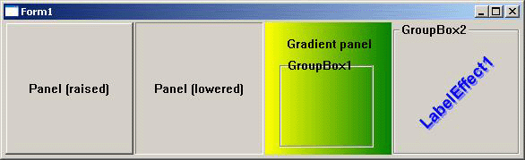

KOL - объектная библиотека для программирования на языке Паскаль для среды MS Windows
Владимир Кладов, 2006-2007
/e-mail: vk@kolmck.net /Версия 3.0 (данная редакция в основном соответствует KOL / MCK версии 3.00.U, октябрь 2010).
Содержание
0. Введение: происхождение KOL *
|
1. Установка KOL и MCK *
|
2. Программирование в KOL *
|
3. Оконные объекты *
|
4. Графические (не оконные) визуальные элементы
*
|
5. Невизуальные объекты KOL и MCK *
|
6. Расширения KOL *
|
7. Работа с расширениями *
|
Приложение А. Ошибки программистов, начинающих изучать KOL
*
Приложение Б. Инструменты разработчика * Приложение В. Демонстрационные примеры * Приложение Г. KOL с классами вместо объектов * |
0. Введение: происхождение KOL
|
Вода камень точит. Под лежачий камень вода не течет. Терпение и труд все перетрут. (Русские народные пословицы) |
Данное описание задумано мной, автором этой библиотеки, и начато по многочисленным просьбам от пользователей KOL, и от тех, кто хотел бы научиться пользоваться этим (не побоюсь оказаться нескромным) замечательным инструментом. Прежде всего, я немного расскажу о происхождении Key Objects Library, сокращенно: KOL, и позвольте мне использовать это слово в мужском роде, а не женском, хотя это и библиотека. Просто существует созвучное русское слово "кол" как раз мужского рода, и мне так удобнее. Кому-то это слово не слишком нравится, но что же тут поделаешь, на вкус и цвет, как говорится, товарища нет.
Немного истории. Примерно в 1996 или 97 году я задумался о переходе с доживающей свой век платформы DOS на платформу Windows. В то время уже пошла в жизнь операционная система Windows 95, сметая на своем пути монстра OS/2, и заполняя практически всю нишу персоналок. Надо было пересаживаться, а для программиста такой переход означает, прежде всего, необходимость выбора нового инструмента для работы. Наиболее естественным казалось взять Borland C++ (версию 4 или 5) и просто в дополнение к тому, уже было известно, изучить API Windows. Но это сейчас я это понимаю. А тогда это было не очевидно. И мои попытки программировать в Windows одна за другой не увенчивались успехом. Я продолжал ваять интерфейсы а-ля DOS, потому что мне было проще использовать кучу наработанных своих заготовок, чем изучать то, как делать цикл диспетчеризации сообщений между окнами. И вообще было непонятно: а зачем нужен такой цикл? Моя ведь программа - что когда хочу, то тогда и вывожу, когда надо - тогда и ожидаю ввода. По крайней мере, так я думал тогда.
В конце концов, когда у меня появилось свободное время, я начал экспериментировать с новыми компиляторами, разработанными специально уже для новой среды (Windows 95 и Windows NT 3.5). И по совету своего хорошего знакомого Алексея Шадрина (админам – привет от программеров!), в том числе я попробовал и Delphi 2, которая как раз только что была выпущена. И тут же был изумлен простотой работы и главное - очевидной логикой работы в среде IDE. (В том числе меня порадовала и высокая скорость компиляции кода, надо отдать должное фирме Borland - такого быстрого компилятора мне еще не приходилось видеть).
Ради таких удобств в работе я согласен был пожертвовать привязанностью к C/C++, и вспомнить, как пишут код на Паскале. (На первых порах меня доставала необходимость писать := вместо просто =, и begin/end вместо фигурных скобок*, но уже скоро я привык и к :=, и оценил очевидные преимущества begin/end для людей с не-100%-ным зрением, для нас это намного более удобная запись, чем фигурные скобки, которые легко перепутать с обычными, а то и вообще не заметить). Добавлю только, что первая рабочая программа была готова уже через пару дней (!), и она прекрасно работала в многооконной среде, делая именно, то, что от нее и требовалось (печать платежных поручений, а вы как думали - самое востребованное ПО в условиях стихийно развивающихся ООО и ЧП).
С этого момента я стал убежденным сторонником Паскаля, купил нужные для начинающего книжки по Delphi, даже научился созданию компонентов и сделал парочку своих (как помню, это были TCloudHint и TBaloonHint - для показа всплывающих подсказок в виде окошек затейливой формы - облачков и того, что герои комиксов используют для произнесения речи).
Но постепенно меня начала очень не устраивать одна довольно существенная деталь, а именно: размер полученных программ. Он оказывался гигантским, и для того, например, чтобы выкладывать свои произведения в интернете (а я предполагал, что буду заниматься шароварением), требовался довольно толстый канал. Кроме того, место на диске тоже было не резиновое (напоминаю: в те времена винчестер на 40 мегабайт был нормой, это сейчас 200 Гигабайт не кажутся чем-то чрезмерным).
Я думал над этой проблемой, и наконец решил сделать альтернативную библиотеку классов, которая позволяла бы делать меньшие по размеру программы. Назвал ее XCL (eXtreme Class Library). Это действительно был "экстрим". Не разобравшись до конца в истинных причинах монстроподобности Delphi-программ, я в том числе решил сгоряча отказаться и от использования API Windows, где только можно. Т.е. окна регистрировались в Windows, но использовались только как подложка - вся отрисовка и прочее взаимодействие выполнялись своим собственным кодом. Удивительно, однако, что программы все равно получались меньше, чем в VCL. Правда, по мере продвижения вперед задачи все усложнялись, и до реализации собственного TListView я так и не успел дойти.
Тысячи часов программирования, потраченных на XCL, хотя я практически не использовал API, научили меня все же основам Application Programming Interface. Окончательно я осознал свою ошибку, когда проекту исполнился уже почти год. И тогда я задумал и начал другой проект - библиотеку Key Objects Library, в которой упор делался именно на использование возможностей окон рисовать себя самим и обрабатывать самостоятельно большую часть сообщений.
0.1. Начало KOL
0.1.1. Анализ причин громоздкого размера приложений. Архитектурные концепции KOL
|
Мал золотник, да дорог. (Русская народная поговорка) |
Но прежде чем, начать, я более тщательно проанализировал возможные причины увеличения размера кода, и обдумал различные способы предотвращения подобной ситуации в моей библиотеке. Основная причина громоздких размеров программ, в которых используются классы - это то обстоятельство, что одни классы используют другие, те, в свою очередь, третьи, и так далее, и так до такой степени, когда разорвать связи уже невозможно. Вы указываете в uses ссылку на модуль Forms, или на Dialogs, и все - ваши 350-400 Килобайт в программу добавлены. Значит, нужно создавать свою иерархию классов, в которой использовать только TObject как предка для всех своих классов, и ни в коем случае не обращаться ко всему тому добру, которое лежит в VCL готовенькое к употреблению. (Именно так устроена библиотека ACL Александра Боковикова - в качестве предка используется именно класс TObject).
Я решил пойти еще дальше, и "вспомнить" о самых основах объектного Паскаля (Object Pascal). ("Вспомнить" - в кавычках, потому что самому мне писать на Object Pascal не приходилось, как я уже упоминал выше, в Delphi я пришел из C/C++, а до этого по Паскалю сдавал только экзамены в университете, и сильно ругал этот замечательный язык, просто не понимая его преимуществ). Так вот, в Object Pascal есть слово object, которое означает не что иное как "структура" + "набор методов". Это то, из чего позже родились классы. Мои эксперименты показали, что простой объект, созданный с помощью слова object, позволяет сэкономить размер программы (а самое главное, если не используются классы вообще, а только объекты, то экономится с самого начала еще несколько килобайт кода из системных модулей). Разумеется, у object было несколько недостатков.
Во-первых, при разрушении объекта, в отличие от экземпляра класса, приходится вручную прописывать код для уничтожения объектов, строк, динамических массивов, которые являются полями этого объекта. Это не очень удобно, но экономия кода дороже, чем необходимость некоторой ручной работы.
Во-вторых, конструирование таких объектов выглядело весьма непривычно. Чтобы в дальнейшем не путаться записывая что-нибудь вроде new( List, Create ); , я решил все "конструкторы" объектов сделать глобальными функциями вида
NewTypename( параметры ): PTypename. (На всякий случай я сделал так же "конструкторы" внутри объекта
TControl для создания различных разновидностей визуальных объектов, но, по-видимому, никто ими не пользуется, и я - в том числе).
В-третьих, ... К сожалению, о в-третьих, то есть о совместимости, я узнал много позже: в другом компиляторе с языка Паскаль, Free Pascal, слово object не поддерживалось изначально. Но нашлись люди, которые ради возможности компилировать KOL-программы в этом популярном, и что важно - бесплатном - компиляторе, заставили, уговорили - не знаю точно, как сказать, наконец, проделали сами некоторую работу, и с версии 2.10 Free Pascal стал полностью поддерживать object. Хотя и поздновато, и к этому времени решение уже было найдено: в автоматической конверсии KOL в классы, и KOL-программы прекрасно компилировались в Free Pascal даже без поддержки в нем примитивных объектов.
Еще одна сторона этой несовместимости заключается в наличии некоторых проблемы при просмотре значений свойств объектов в окне просмотра (Watch List) при выполнении пошаговой отладки. Delphi может показывать в качестве значения свойства что попало, вместо истинного значения. Решение данной проблемы заключается в указании внутреннего имени поля вместо свойства, когда это возможно (fCount вместо Count, например).
Есть еще некоторое количество различий в использовании объектов против классов: а именно, поскольку object - это просто структура в памяти, то для организации указателя на некоторый объект, необходимо для каждого объектного типа предусматривать соответствующий тип указателя. (Для классов это не требуется, поскольку тип класса уже эквивалентен типу указателя, т.е. тип представителя класса совпадает с типом самого класса). По той же самой причине, в методах объекта, в отличие от методов класса, переменная Self - это не указатель, а структура полей объекта, и для получения указателя требуется применять операцию взятия адреса @, записывая @ Self везде, где требуется передать или использовать указатель самого объекта, для которого пишется этот метод. (В реализации, эта операция не требует дополнительного кода, так как Self передается в метод по ссылке, то есть в виде указателя, и @ Self - это как раз и есть обращение к регистру, в котором хранится указатель на сам объект в памяти).
Итак, я утвердился в решении не использовать классы (class), а только объекты (object). Дальнейшие мои изыскания и эксперименты показали, что, во-первых, слишком большое число различных объектных типов, и сколько-нибудь слишком разветвленное дерево иерархии наследования недопустимы, если требуется экономия размера кода. А во-вторых, разбиение кода на модули так же вызывает увеличение размера программы. Хотя, во втором случае - и не много, но экономить - значит экономить, и я решил всю библиотеку затолкать в один большой исходный файл, который так и был назван: KOL.pas.*
С проблемой уменьшения дерева иерархии наследования я решил бороться самыми радикальными средствами, а именно: все визуальные объекты представляются одним и тем же объектным типом TControl, прямо произведенным от объектного типа TObj, который я создал в качестве базового типа для своей иерархии. Конструкторы используются различные, наборы методов иногда пересекаются, иногда довольно резко отличаются от одной разновидности визуального объекта к другой, но в любом случае используется один и тот же объектный тип. В результате для всех них используется одна и та же копия таблицы виртуальных методов (vmt), меньше дублирование кода, и реже требуются виртуальные методы.
И еще я использовал один очень важный технический прием, который изобрел еще при построении XCL (хоть на что-то моя первая библиотека пригодилась, хотя нет, разумеется, без XCL и KOL бы не было). А именно, при инициализации объектов ни в коем случае нельзя инициализировать все возможные поля (которые, в свою очередь, являются объектами). Эту операцию следует по возможности откладывать "на потом". Например, при создании визуального объекта в KOL инициализация шрифта для окна этого объекта выполняется в самом минимальном возможном объеме. Т.е., шрифт "наследуется" от родительского оконного объекта, при этом, на самом деле, вызывается заглушка - указатель на функцию, которая начинает указывать на действительную функцию, только если в программе модифицировался хотя бы один параметр шрифта. Конечно, вероятность того, что в своем приложении программист изменит шрифт по умолчанию, в обычном случае велика. Но случай, когда программист использует KOL, сам по себе необычный: он говорит о том, что программист не хочет добавлять в программу лишний код. А это и означает, что принятие решения об инициализации полей следует отложить до того момента, когда в приложении такой код востребован. Естественно, если есть такая возможность.
На самом деле, приведенный технический прием невозможен был бы без использования компилятора, обладающего способностью не вставлять в код программы процедуры и функции, на которые нет ссылок в проекте (даже если эти процедуры и функции присутствуют в подключенных модулях, задействованных классах/объектах - лишь бы они не были виртуальными). Именно такой способностью и обладает Delphi (Free Pascal тоже, но в тот момент, когда я начинал KOL, о совместимости с Free Pascal речь не шла, да и не было тогда еще этого компилятора - если я не ошибаюсь). В Delphi эта способность называется smart-linking (т.е. умное связывание).
К сожалению, этот прием, как уже упоминалось, не работает для виртуальных методов. Насколько я понимаю данную проблему (а знатоки Delphi предлагали свое понимание, и оно иногда отличалось), причина банально проста: поскольку ссылка на все виртуальные методы уже присутствует в таблице vmt виртуальных методов класса/объектного типа, то метод учитывается как используемый, даже если в реальности к нему никогда не происходит обращений. Например, если от класса “А” унаследован другой класс “Б”, в котором этот метод полностью переопределен, и нет обращения к данному методу предка “А”, и - только экземпляры этого унаследованного класса “Б” создаются в модулях проекта. Все равно, раз уже ссылка есть в таблице vmt, то метод будет "зачтен". Поэтому я решил использовать механизм виртуальных методов с большой осторожностью, и в KOL их практически нигде нет.
0.1.2. Дальнейшее развитие KOL. Уменьшаем все, что можно. Замена System.pas и других системных модулей
|
И он уже не тот, что был вначале. (Рильке) |
Уже на начальном этапе написания библиотеки, у меня возникла идея урезать насколько это возможно модуль System.pas. Если кто не в курсе, то этот модуль как бы автоматически добавляется в секцию uses любого модуля, и в нем содержится набор функций, которые нужны практически (на самом деле, теоретически) всегда. И в том числе, в нем сосредоточен код, который отвечает за обработку исключений, за распределением памяти в куче - так называемый Менеджер памяти - Memory Manager, функции для работы с вариантами, с динамическими массивами, динамическими строками и т.п.
Раздобыв по сусекам всю возможную информацию, я обнаружил, что это вполне реально - написать и "подставить" свой собственный откомпилированный с помощью самого же Delphi-компилятора системный модуль. Так я и поступил, выполнив эту работу для Delphi 5, версии, которой тогда пользовался (собственно, я и сейчас в основном пользуюсь именно Delphi версии 5 при создании проектов на KOL, за редкими исключениями - когда мне требуется, например, использовать в ассемблерных вставках команды MMX).
Создавая свою версию system.pas, я по возможности не просто "отключил" и заменил своими собственными стандартные методы, а сделал их опциональными. По умолчанию эти возможности выключены, но всегда есть возможность включить их снова. Например, стандартный менеджер памяти включается вызовом процедуры UseDelphiMemoryManager, возможность работы с консольным вводом-выводом - вызовом UseInputOutput, и т.п. Включать стандартный менеджер памяти взамен моего примитивного переходника (wrapper) к функциям API Windows (GlobalAlloc, GlobalFree, GlobalRealloc), занимающего буквально десятки байт кода взамен нескольких килобайт, обычно нет никакой необходимости - если только программа не требует постоянной работы с выделением и перераспеределением памяти в куче, например, при работе с динамическими ANSI-строками.
Теперь практически в любом KOL-проекте достаточно в опциях проекта в пути поиска добавить директорию, в которой лежат откомпилированные альтернативные модули system.dcu и иже с ним, и программа сразу уменьшается на 9-11 Килобайт. Для гигантских размеров 300-400 Килобайт обычного приложения, изготавливаемого в Delphi, это был бы не слишком большой эффект, но для программы на KOL, с размером до 40-60Килобайт, это уже очень существенный выигрыш. (Позже различными авторами были выполнены адаптации моей переделки System.pas и для других версий Delphi: 3, 4, 6, 7).
Обратите внимание: для замены системных модулей нет необходимости действительно выполнять замену этих модулей в системных библиотеках. Более того, так вы ничего и не замените. Поставляемый файлы замены следует распаковать в отдельную директорию, и в опциях проекта указать путь к этой директории – в этом и состоит замена.
Уже выполняя эту работу по укорачиванию системных модулей, я столкнулся с написанием кода на встроенном ассемблере. Ассемблер PC для меня не представлял особой проблемы, хотя вплотную до этого мне и не приходилось с ним иметь дело. Пришлось пополнить некоторые пробелы в своем образовании, и после приобретения некоторого опыта перевода Паскаль-кода в ассемблер, я решил сделать альтернативную asm-версию кода для практически всех функций KOL, которые могли бы за счет этого сократиться хоть не намного.
В результате обоих проделанных усовершенствований - замены системных модулей, и перевода большей части кода на ассемблер, размер минимального KOL-проекта с одной визуальной формой остановился на цифре 13,5 Килобайт, а минимальное консольное приложение вида
Program P1;
{$APPTYPE CONSOLE}
begin
end.
уменьшилось до 6 килобайт (если сюда вставить обращение к ShowMessage с параметром 'Hello, world!" - стандартный тест на размер генерируемого кода - то размер такой программы получается 6,5К).
Поправка: с версии 2.39, размер минимального приложения KOL с одной формой уменьшился до 12.5К, минимального DLL, использующего KOL – до 6К, минимального консольного приложения, использующего KOL – до 5,5К. Компиляция выполнялась в Delphi6. В последних версиях приложение с пустой формой занимает всего 11.5К.
В дополнение, опережая события, совсем недавно был выполнен проект Collapse, который уменьшает код еще примерно вдвое даже по сравнению с переписыванием его на ассемблер, (правда, эффект становится заметен только для достаточно крупных приложений - от 40 Килобайт приблизительно). В Collapse используется перевод части Паскаль-кода в П-код некоей виртуальной Collapse-машины, которая эмулируется во время исполнения программы. Для этого П-код превращается в байт-код с помощью специально созданного П-компилятора. Для завершения этого фантастического проекта осталось только написать свой Паскаль-компилятор, который бы мог практически любой код на языке Паскаль превратить в П-код.
0.2. Первые выводы. Необходимость уменьшения кода:
кому это нужно?
Тема написания минимальных (по размеру) приложений на Delphi раскрыта достаточно широко. Любой новичок может легко найти информацию о том, как сделать свое приложение маленьким. Практически любой источник утверждает, что нужно отказаться от VCL и писать на чистом API (Application Programming Interface – Интерфейс Программирования Приложений). Довольно часто упоминается и возможность использовать вместо VCL другие библиотеки - ACL и KOL. Я же являюсь убежденным сторонником того, что на чистом API писать не нужно, кроме тех случаев, когда по-другому выполнить работу просто невозможно.
Объясню, почему. API-функции обычно достаточно универсальны, и число и типы параметров, которые используются в функциях API, располагают к появлению изрядного числа ошибок. (Например, вместо целого в некоторых случаях может на том же месте передаваться указатель на строку типа PChar). Код с использованием прямого вызова этих функций выглядит громоздким, неудобен для чтения и модификации. А, например, рисование на так называемом DC (Device Context) путем прямого обращения к методам GDI (Graphic Device Interface) - это искусство более чем нетривиальное. Лучше все-таки во многих случаях использовать инкапсуляции в объектах или классах, пусть даже более простых, чем VCL.
Впрочем, я никого не принуждаю использовать Key Objects Library. Но опыт показывает, что создание и сопровождение приложений на KOL нисколько не сложнее, чем на VCL (нужна лишь некоторая практика, так же как и для начала работы на VCL). В то же время, размеры KOL-программ - вполне сопоставимы с тем, что возможно получить ручной работой через API.
Теперь к вопросу о том, зачем вообще уменьшать код приложения. Зачем - это каждый решает сам. Или он хочет сэкономить свой трафик и трафик пользователей при загрузке своего приложения на интернет. Или он пишет ActiveX - приложение, которое загружается с сервера на клиентскую сторону (и время загрузки так же желательно сократить). Или же он пишет CGI-приложение, и желает разгрузить сервер, которому придется выполнять сотни и тысячи таких CGI-приложений в секунду. Разумеется, большая программа размером с 400 Кбайт тоже может считаться CGI-приложением, вот только на его запуск у системы наверняка уйдет в несколько раз больше ресурсов и времени. Да, писатели вирусов и Троянов - это еще одна категория "программистов" (так сказать), которым нужно писать маленькие программы. Но пусть уж лучше они тоже делают свои грязные поделки поменьше размером, чем принимать письма с троянскими вложениями на полмегабайта.
В последнее время "мода" на создание как можно больших по размеру приложений (в качестве доказательства своей крутости) сходит на нет. Несмотря на то, что большинство пользователей интернета уже не ограничены скоростью доступа в Интернет (и со временем эти скорости только растут), очень многие из них начинают понимать, что размер приложения практически никак не связан с его возможностями, качеством исполнения, удобством использования. А говорит лишь о квалификации программиста (и здесь связь как раз обратная: у матерого программиста код, как правило, будет намного меньше, чем у начинающего).
0.2.1. Экономия расходов памяти
|
(Данный параграф добавлен 10.2010 вместе с публикацией KOL/MCK версии 3.00). |
Он скукожился! (пародия на Дэвида Блэйна) |
Первоначально KOL был нацелен только на экономию программного кода, но не ресурсов системы, таких как память. Начиная с версии 3.00 код был переделан таким образом, что размер экземпляров объектов TControl сократился примерно в 6 раз. Прежде всего, за счет того, что поля, использующиеся различными разновидностями контролов, не пересекаются, и их удалось совместить с помощью структуры с переменным наполнением (record CASE). Кроме того, более 600 байт, занятых указателями методов для обработки сообщений, стали создаваться динамически только для тех контролов, для которых назначены обработчики сообщений (а это часто далеко не все контролы, например, многие панели и метки, да и поля ввода вполне обходятся без обработчиков сообщений). Так же, как динамическая стала создаваться и использоваться структура TCommandActions (порядка 80 байт) – теперь в приложении выделяется один такой объект на отдельную разновидность контрола, вместо того, чтобы хранить эту запись внутри полей каждого экземпляра TControl. Плюс к этому, около 40 байт флажков, ранее занимавших по одному байту на каждый флажок типа Boolean, были сведены в несколько байтов, с расходованием на флажок одного бита.
В результате, расходы памяти на экземпляр TControl сократились с более чем 1,5 Кбайта до 300-350 байт без учета необязательного блока событий (в зависимости от набора используемых опций компиляции). Предполагается, что такой подход, в случае адаптации нововведений в версии, предназначенной для Windows CE (ветка KOL-CE), поможет создавать менее требовательные к оперативной памяти приложения. Но и для основной ветви проекта KOL экономия памяти так же может быть полезна.
0.3. Визуальная разработка GUI-приложений в KOL:
Mirror Classes Kit
|
Если гора не идет к Магомету, (Арабская пословица) |
Нельзя не остановиться на очень важной теме, обозначенной в заголовке этой главы. Программисты Delphi, сидя в IDE, давно привыкли к тому, что проект с использованием библиотеки VCL (а теперь и CLX - "кайликс") очень удобно разрабатывать визуально, т.е. методом набрасывания на форму компонентов и визуальной настройкой их свойств в Инспекторе объектов.
Разумеется, в первых версиях KOL был не визуальным (библиотека и задумывалась как не визуальная). Но в некоторый момент настал час X, и под влиянием многочисленных требований от пользователей KOL, я вынужден был разработать набор визуальных ("зеркальных") классов - Mirror Classes Kit - он так и называется. Что это такое. Это набор классов времени разработки (Design Time), которые используются только для того, чтобы определить, какие объекты KOL используются в модуле во время разработки (Run-time).
Сами эти зеркальные классы во время исполнения никак в программе не задействованы, и даже не существуют, но на этапе разработки они занимаются генерацией кода для инициализации форм, инициализации и запуска приложения. И все. Т.е. MCK работает по принципу адд-она или плагина к Delphi IDE, модифицируя файлы проекта так, что при их переработке в машинный код компилятор Delphi "не видит" зеркальных классов, ссылок на ресурсы .dfm формы, а компилирует только код, сформированный MCK-зеркалами в процессе настройки их программистом.
Фактически, разработка приложений в MCK - в отличие от "чистого KOL" (этот термин возник, видимо, по аналогии VCL - против "чистого API") ни в коем случае не увеличивает размер приложения, всего лишь упрощая труд разработчика (так что аналогия - весьма отдаленная).
В дополнение к уже сказанному, отмечу, что проекты MCK, в отличие от рукописных проектов KOL, автоматически поддерживают технологии Collapse и FormCompact. Техника Collapse заключается в том, при включении в опции проекта символа условной компиляции Pcode, зеркальные классы автоматически генерируют П-код для Collapse-машины, и таким образом удается несколько уменьшить код сколько-нибудь крупных KOL-приложений, использующих MCK. Техника FormCompact еще проще: достаточно включить свойство FormCompact в Инспекторе объектов, и сгенерированный псевдо-код для создания формы начинает обрабатываться интерпретатором этого псевдо-кода, автоматически. Сокращение кода, однако, будет заметно (в обоих случаях) только для случая достаточно большого числа контролов на форме, или большого числа форм в проекте (так как в проект дополнительно включается несколько десятков мелких вспомогательных процедур, общим размером около 1 К байта).
0.4. Работа в KOL. Поиск информации.
|
Без труда не вытащишь и рыбку из пруда. (Русская народная пословица) |
Теперь обсудим тему, очень важную для любого разработчика, использующего любую среду разработки, любой язык программирования, любую библиотеку, любое API. А именно, где взять информацию (где взять справку по KOL, желательно, на русском языке - это один из самых часто задаваемых вопросов). Людей интересует, прежде всего, информация о списке доступных функций, объектных типов, методов.
Сразу договоримся: KOL.pas - это и есть главный источник информации. Сами функции и объектные типы в интерфейсной части - это уже информация. Кроме того, они почти всегда снабжены комментариями (комментарий располагается после объявлений, в скобках вида {* ... } - это сделано для целей автогенератора справки, о котором я скажу прямо сейчас.
Во-вторых, если кто-то считает это более удобным, можно использовать автоматический генератор справки - утилиту xHelpGen. Все, что требуется для его работы - это поместить его в директорию с файлом KOL.pas и другими модулями библиотеки (а таковые имеются, так как весь KOL давно уже не вмещается в один модуль), и запустить. В результате будет получен набор html-файлов, который можно просматривать с помощью любимого браузера. (Утилита xHelpGen появилась впервые еще для XCL, и позже была переписана на KOL). Имеются и другие справки по KOL (недавно появилась справка в формате chm, она занимает несколько мегабайт).
В-третьих, на основном сайте KOL http://kolmck.net и на других сайтах (ссылки на которые можно найти на этом ресурсе) имеется море информации: статьи, FAQ (ЧаВО, т.е. Часто задаваемые Вопросы и Ответы), демо-проекты. В том числе имеется достаточно большое число приложений, многие из которых предоставлены авторами вместе с исходным кодом. Т.е. учиться есть где, дело за малым: нужно просто найти время, и начать учиться. (Разумеется, если вам это действительно нужно, никто ведь не принуждает).
В-четвертых, если у Вас действительно возник вопрос, который оказался Вам не по зубам, я рекомендую зайти на русский форум по KOL: http://www.delphimaster.ru/cgi-bin/forum.pl?n=10. Там всегда найдутся люди, которые смогут квалифицированно ответить на действительно серьезные вопросы (в том числе, если вопрос задан по-английски). Это, однако, не следует воспринимать как приглашение немедленно обращаться на форум с вопросом “как установить KOL”. Никому не понравится растолковывать кому бы то ни было уже подробное разжеванное и изложенное в документации.
И еще немного - о дистрибутивах. Пакет поставки KOL / MCK и обновление до самой последней версии можно взять на основном сайте, адрес дан выше. Для выполнения обновления необходимо воспользоваться утилитой Updater (брать там же). Поскольку архивы KOL.zip и MCK.zip достаточно весомые, я выкладываю только каждую 10-ю версию целиком, все промежуточные получаются с помощью небольших файлов обновлений. Если у кого-то достаточно широкий канал, то есть возможность забирать самый свежий дистрибутив и из других источников - адреса указаны в ссылках в разделе Download (Архивы).
0.5. Проблемы совместимости и конвертирования существующих VCL-проектов
Ввиду того, что изначально синтаксис, используемый в KOL-проектах, вынужден следовать ограничениям объектов, в отличие от классов, я не стал слишком уж беспокоиться и о прочей совместимости по синтаксису. Например, объекты не поддерживают для свойств модификатора default, т.е. в объектном типе, представляющем список, например, нельзя задать свойство Items свойством по умолчанию и записывать так же просто для TList в VCL: MyList[ i ]. Всегда приходится писать MyList.Items[ i ].
С названиями функций, аналогичным тем, что имеются в стандартном модуле SysUtils, я тоже позволил себе отклониться от стандартов. Использование в KOL-проекте этого модуля увеличивает размер приложения примерно на 10-20 Кбайт, так что лучше им не пользоваться. Большинство аналогов функций из SysUtils имеется в самом KOL, и можно использовать альтернативные модули, более совместимые по названиям функций. В том числе, я решил называть функции немного по-другому еще и для того, чтобы оставалась возможность одновременного обращения к функциям и из KOL, и из SysUtils. (Разумеется, всегда можно было бы использовать модификаторы вроде SysUtils.IntToStr, но что сделано, то сделано, и теперь менять не стоит).
Что касается более сложных объектов, вроде списков, деревьев и прочего, в KOL часто можно найти аналоги, предоставляющие не меньше, а то и больше возможностей, чем стандартный набор классов VCL. Более того, я предпочитаю теперь практически все работы выполнять в KOL как раз потому, что для KOL, благодаря самоотверженной работе многих программистов, адаптировано огромное множество всевозможных компонентов самого разного направления, и они оказываются более доступными, чем аналогичные средства для VCL. По крайней мере, их уже легче найти, чем аналогичные решения для VCL: они сосредоточены на нескольких сайтах, посвященных KOL, созданы практически в одном стиле, заданном более жесткими рамками KOL, их легче настроить для работы и проще встроить в свой KOL-проект. (И они бесплатны и с исходными кодами, что тоже может быть важно).
Но о полной совместимости с компонентами VCL не приходится говорить с самого начала. Вы можете обнаружить, что аналогичное свойство называется по-другому, и является, например, не свойством, а функцией, или совсем наоборот. В случае, когда в VCL для создания своего класса потока (например) требовалось создавать собственный класс-наследник от TThread и переопределять метод Execute, в KOL достаточно в проекте вызвать конструктор объекта PThread, и назначить ему событие OnExecute.
Таких несовместимостей огромное множество. И это вовсе не потому, что я стремился специально к тому, чтобы библиотека KOL была не совместима с VCL. Я стремился всего лишь к тому, чтобы проекты, разработанные в KOL, имели по возможности меньший размер. Поэтому нет никакой информации о типах времени исполнения (RTTI - Run-time Type Information), которой так гордится Delphi, и нет компонентов, загружающих себя из потока, и поэтому велики синтаксические отличия. Но язык-то остался тот же - Паскаль. И компилятор - тот же, со всеми его преимуществами и недостатками.
Зато сам с собой KOL как раз очень даже хорошо совместим (если вообще так можно говорить), в плане переноса проектов от любой версии Delphi к любой другой. Практически все, что в KOL работает для версий Delphi 5 или Delphi 7, доступно и для версий Delphi 3 и даже в Delphi 2. Имеется некоторое количество исключений, например, Delphi 2 и Delphi 3 не поддерживают Unicode-строк типа WideString, для обеспечения совместимой работы с удвоенными целыми числами необходимо применять в проекте специально изготовленные для этого функции.
На протяжении всего времени, пока создавалась и развивалась библиотека KOL, очень многие "новообращенные" задавали мне вопрос о том, как им превратить готовый VCL-проект в KOL-совместимый. Несмотря на то, что появилось уже несколько проектов, конвертирующих VCL-приложение или VCL-компонент в аналог для KOL, я в любом случае рекомендую выполнять эту работу вручную. Не так уж много различий, на самом деле, имеется между KOL и VCL, но они довольно разнообразны, и лучше процесс модификации проконтролировать лично, чем довериться машине. (Нет, я не настаиваю, вы всегда можете попробовать, попытка не пытка, тем более, что если получится хотя бы частично, то ручная работа после этого может быть сокращена, а это тоже в плюс).
0.6. KOL и компилятор CBuilder
Иногда программисты, использующие для разработки среду CBuilder, задают такой вопрос: а возможно ли использовать KOL из CBuilder’а. Принципиальных препятствий к этому никаких нет. Компилятор CBuilder “понимает” код на языке Delphi. И хотя он отказывается работать с объектами в старом стиле объектного Паскаля, и согласен только на классы, это тоже не проблема: для KOL всегда можно изготовить версию с классами, достаточно запустить соответствующий командный файл из пакета GlueCut. (Вот только над командным файлом пришлось бы поработать, ибо несовместимостей между синтаксисом, воспринимаемым CBuilder’ом, и тем, что получается даже в KOL с классами, гораздо больше даже, чем при переходе на старую версию компилятора Free Pascal).
На самом деле, смущает не это, а большой размер библиотеки времени исполнения. Если ее не подключать, и делать приложение, которое можно будет переносить на любую машину, то минимальное приложение типа “Hello, World!” Занимает уже 50Кбайт, а не 16, как в Delphi.
Если же оставить включенной опцию компиляции с использованием этих библиотек, то без наличия в системе такой библиотеки размером примерно 1,5 Мегабайта приложение не сможет быть запущено. А ведь библиотека KOL тем и хороша, что приложения, построенные по принципу “все свое ношу с собой”, остаются чрезвычайно небольшими, и при этом программирование остается объектно-ориентированным.
А стоит добавить KOL.pas в проект, и стартовый размер приложения типа “Привет, Мир!” немедленно вырастает до 360Кбайт, и это – при отключенной отладочной информации. Если поглядеть при этом в файл .map, созданный линковщиком, то там можно обнаружить очень большое число функций из KOL.pas, хотя еще не было обращения ни к одной из них. Либо CBuilder не поддерживает “умное связывание” (smart-linking), либо он не поддерживает его только для подключаемого исходного кода на языке Паскаль, но итог один: весь смысл от использования KOL в среде CBuilder теряется.
1. Установка KOL и MCK
1.1. Установка KOL
Установка библиотеки KOL заключается в следующем. Сначала необходимо создать пустую папку. Например, пусть это будет “C:\KOL”. И затем распаковать в нее содержимое архива KOL.zip. Никаких других действий предпринимать не нужно. KOL – это не набор компонентов для работы в VCL, а набор модулей, которые включаются в проект путем прописывания в секции uses своего модуля или проекта ссылки на используемый модуль. Нужно только не забыть прописать путь к директории, где находится задействованный модуль, в опциях проекта (Project | Options | Directories/Conditionals | Search paths… ) или в опциях среды разработки (Tools | Environment options… | Library | Library paths ).
1.2. Установка MCK
Для установки MCK необходимо распаковать содержимое архива MCK.zip (лучше в ту же директорию, ответив “ДА” на все вопросы о замещении файлов – некоторые файлы в этих архивах дублируются). Затем надо из Delphi IDE открыть пакет MirrorKOLPackageXX.dpk, при этом XX должно соответствовать версии Delphi (D3 для Delphi3, D4 для Delphi 4, D6 для Delphi6, D7 для Delphi7, и только для версии Delphi5 расширение пусто, т.е. пакет носит имя MirrodKOLPackage.dpk).
Для версий Delphi, Borland Developer Studio, Turbo-Delphi, для которых пакета нет, но поддерживается работа с пакетами, вы можете создать пакет MCK самостоятельно. В пакет следует добавить три файла: mirror.pas, mckObjs.pas и mckCtrls.pas.
Затем надо нажать кнопку Install (установка) - на линейке инструментов пакета. При отсутствии линейки команда выбирается из меню (в BDS – из контекстного меню на узле с проектом). При возникновении проблем с установкой, возможно, следует в опциях пакета, или лучше – в Tools | Environment Options | Library | Library Path, добавить путь к $(DELPHI)\Source\Toolsapi. На этом установка MCK завершена (при первой установке должен показаться очень большой список установленных компонентов, все они устанавливаются в закладку KOL на линейке компонентов).
Только в версии Delphi2 открывать пакет для установки не нужно, а требуется выполнить несколько другую процедуру (см. инструкцию по установке, подменять или дублировать ее здесь я не намерен).
Обратите внимание, что при обновлении KOL и MCK до новой версии (а делать это приходится иногда довольно часто, т.к. библиотека развивается постоянно), так же требуется открыть пакет MCK, и выполнить именно Build (перестроение) пакета, но ни в коем случае не Compile (перекомпиляция). Дело в том, что при перекомпиляции, в отличие от Build, компилятор Delphi ошибочно использует версию пре-компилированного файла KOL, остающуюся после работы с текущими проектами, и не учитывает наличие в пакете существенно других опций компиляции. В результате, после такой незавершенной перекомпиляции оболочка Delphi начинает давать сбои, вплоть до постоянного краха.
И заметьте, что когда вы от работе с пакетом переходите обратно к работе с приложениями, то, по крайней мере, в первый раз следует опять выполнить построение (Build), а не компиляцию (Compile) для приложения. Иначе компилятор снова не заметит, что изменился набор символов условной компиляции, и будет пытаться использовать файл KOL.dcu, образовавшийся при сборке пакета MCK. А так как в этом случае имелись косвенные ссылки на модули VCL времени разработки, то Delphi непременно потребует найти ему файл proxies.dcu (которого просто не существует).
1.3. Символы условной компиляции
Так как библиотека KOL предназначена для весьма широкого круга задач, то удовлетворить всем требованиям с помощью одного и того же кода, сохраняя его малый размер, практически почти невозможно. Выход из положения состоит в том, чтобы позволить программисту самому выбрать варианты кода, которые ему требуются в его конкретной задаче. Для этого и предназначены символы условной компиляции.
Чтобы изменить набор символов, или опций, управляющих условной компиляцией, следует открыть диалог свойств проекта (Project | Options) и на закладке Directories/Conditionals исправить строку Conditional defines, перечислив через точку с запятой нужные символы. Альтернативный вариант – добавление в файл проекта (DPR) объявлений вида {$DEFINE опция} для каждой опции, которую вы хотите использовать для всего проекта. Говорят, работает – я не проверял.
В проектах MCK здесь как минимум должен всегда присутствовать символ KOL_MCK, который “прячет” от компилятора Delphi VCL-код проекта в момент компиляции. Некоторые опции могут относиться не к KOL, а к сторонним модулям. Например, некоторые пакеты компонентов для KOL являются дуальными, то есть могут работать с VCL и KOL. В этом случае часто требуется символ условной компиляции для включения варианта кода, адаптированного для KOL (обычно таким символом является строка ‘KOL’ – без кавычек, но читать описание компонента все равно требуется, прежде чем применять его в деле).
Список же опций, которые могут управлять участками кода самой библиотеки KOL, расположен недалеко от начала файла KOL.pas, с кратким описанием назначения каждого символа. Здесь я попробую дать развернутый обзор этих символов, но все описать, не вдаваясь в подробности, практически невозможно. Поэтому далее в тексте, эти символы упоминаются уже более конкретно в контексте каждой специализированной функции или объекта, к которым эти символы могут быть применены.
В большинстве случаев, добавление одного из перечисленных ниже символов в список опций проекта приводит к какому-либо увеличению кода приложения. В обратных случаях я это фиксирую особо.
Символ PAS_VERSION (отключение ассемблерного кода). Включение этой опции в проект существенно увеличит размер кода, и сделает его несколько более медленным. Но есть шанс, что приложение будет более устойчивым. В основном, этот символ предназначен для целей тестирования и выявления “багов” в ассемблерной версии. Код на языке Паскаль является в значительной степени самодокументируемым, и фактически сохранен в KOL, в том числе, и как комментарий к ассемблерному варианту.
Впрочем, применение символа PAS_VERSION не является панацеей. В истории развития библиотеки часто случалось так, что ошибка таилась как раз в Паскаль-версии “виновной” процедуры, в то время как ассемблерная версия была более правильной.
Символ PARANOIA предназначен, напротив, для усугубления оптимизации ассемблерного кода – при использовании старых компиляторов Delphi, версии 5 и ниже. (Разумеется, этот символ работает, только если в проекте используется именно ассемблерная версия кода библиотеки). В этих версиях компилятор использовал двухбайтовые версии некоторых машинных инструкций, не обращая внимания на то, что для них имеется однобайтовая версия, по функциональности ничем не отличающаяся. Начиная с Delphi 6, этот недостаток компилятора фирмой Borland был устранен, и никакой необходимости в этой опции больше нет.
Символ SMALLEST_CODE придуман для того, чтобы по умолчанию выключить из кода все, без чего можно обойтись. Форма в этом случае будет выглядеть весьма по-спартански, так как при этом, в том числе, отключается и поддержка обработки сообщений WM_CTLCOLORXXXX, отвечающих за раскраску визуальных элементов согласно предпочтениям разработчика, и шрифты используются по умолчанию системные. (Цвет в этом случае обеспечивает сама система, палитра у нее небогатая, но если функциональность вас интересует больше, то почему бы не отдать функции художника системе). В коде отключаются некоторые проверки (например: в функции Int2Hex больше не проверяется, что второй параметр >15).
На самом деле, отключается весьма много участков кода, в основном небольших, и экономия кода в целом весьма невелика. Но она имеет место, так что я решил, что символу быть.
Символ SMALLEST_CODE_PARENTFONT, при использовании вышеописанного SMALLEST_CODE, тем не менее, обеспечивает для дочерних визуальных объектов наследование шрифта от своих родителей, в момент создания. Если вы устанавливаете другой шрифт для родителя, чем системный шрифт для окон по умолчанию, то, по крайней мере, не придется повторять эту операцию для всех его дочерних объектов. Таким образом, данная опция частично отменяет предыдущую, но только в данном конкретном применении к наследованию шрифтов.
Символ SMALLER_CODE делает почти то же самое, что и SMALLEST_CODE, но в меньшем объеме, по возможности минимально воздействуя на внешний вид и поведение контролов.
Символ SPEED_FASTER, включаемый по умолчанию, увеличивает быстродействие некоторых используемых функций и алгоритмов, за счет дополнительного кода. Например, для сортировки списков и строк используется функция SortArray, что увеличивает скорость по сравнению с использованием более универсальной функции SortData примерно на 5-10% (в ассемблерном варианте). Для сравнения Ansi строк используется предварительное построение упорядоченного набора Ansi-символов, с отказом от последующего вызова API функций, после чего скорость операций сравнения функций AnsiStrCompare и AnsiStrCompareNoCase возрастает в несколько раз. Заодно это и сокращает в несколько раз сортировку списка строк StrList (метод AnsiSort). Если повышенное быстродействие на этих операциях не требуется, данную опцию можно отключить, добавив символ условной компиляции SPEED_NORMAL.
Символ TLIST_FAST изменяет внутреннее представление списков. В библиотеке VCL Delphi списки фактически являются массивами. При разработке KOL такой подход так же был первоначально взят за основу, т.к. обеспечивает высокое быстродействие для небольших списков, и не требует большого кода. С опцией
TLIST_FAST, алгоритмы работы со списками и их внутреннее представление изменяются таким образом, чтобы обеспечить большую скорость при вставке и удалении элементов в произвольные позиции списка. А именно, элементы хранятся уже не в виде сплошного массива, а в виде списка блоков по 256 максимум элементов в блоке. Такой подход может при неправильном использовании не только не увеличить быстродействие, но и наоборот, уменьшить его. Например, операция произвольного доступа к элементам списка по произвольным индексам может оказаться относительно медленной по сравнению со стандартным подходом. Для обеспечения возможности для отдельных списков сохранить обычный алгоритм работы у списка появляется свойство
UseBlocks, которую можно установить в
FALSE для этих списков. Кроме того, добавление опции
DFLT_TLIST_NOUSE_BLOCKS позволяет для списков по умолчанию отключить действие опции
TLIST_FAST, и далее присваивать UseBlocks значение TRUE только для избранного множества списков.
Символ USE_NAMES добавлен по требованию многочисленных программистов, привыкших к тому, что в VCL любой компонент имеет свойство Name. Включение этого кода добавляет такое свойство ко всем объектам, начиная с TObj. При этом становится возможен поиск компонентов по именам с помощью метода формы FindObj. Эта опция так же может оказаться полезной при пошаговой отладке для того, чтобы при остановке в произвольной точке легче сориентироваться в контексте выполнения кода. MCK автоматически генерирует присваивание визуальным и невизуальным объектам формы присваивание имени компонента, “спрятанное” в скобки условной компиляции {$IFDEF USE_NAMES}. Так что в случае MCK-проектов никаких дополнительных усилий по присваиванию имен компонентов прилагать не требуется: достаточно включить эту опцию в проект.
Символ USE_CONSTRUCTORS был изначально предназначен для того, чтобы вместо использования собственных конструирующих функций NewXXXXX задействовать конструкторы Delphi для начальной инициализации объектов. Поскольку никаких требований от пользователей по поддержанию этого механизма не поступает, то и поддержка корректности кода, формируемого в случае включения этой опции, не гарантируется.
Короче говоря: лучше эту опцию не использовать.
Символ USE_CUSTOMEXTENSIONS предназначен для тех программистов, которые желают включить в библиотеку KOL, именно в сам модуль KOL.pas, и именно в код объекта TControl, собственные дополнения. Установите курсор на этот символ, и нажмите Ctrl+F для того, чтобы найти все использования этого символа в модуле KOL.pas. Вы обнаружите, что он используется трижды. 1) Для того, чтобы добавить к определению объекта TControl произвольный код из файла CUSTOM_TCONTROL_EXTENSION.inc, 2) добавить какие-то объявления в интерфейсную секцию из файла CUSTOM_KOL_EXTENSION.inc, и 3) разместить какой-либо код в секцию реализации из файла CUSTOM_CODE_EXTENSION.inc. Файлы эти вы можете подготовить сами, и поместить их в папку проекта. Такой метод хорош для расширения функциональности KOL без внесения изменений в код самой библиотеки, или на этапе тестирования дополнений, которые вы хотели бы предложить сообществу программистов KOL.
Символ UNICODE_CTRLS предназначен для превращения визуальных объектов TControl в окна, работающие непосредственно в кодировке Unicode. Данная работа выполнена практически полностью (хотя периодически обнаруживаются некоторые неполадки, но они устраняются). Достаточно включить в проект эту опцию, и приложение практически полностью будет поддерживать кодировки UNICODE. Все вызовы к API-функциям перенаправляются на UNICODE-версии этих функций (с окончанием W). Контролы типа TREEVIEW и LISTVIEW начинают работать с UNICODE-версиями оконных сообщений. И так далее.
Символ USE_MHTOOLTIP позволяет включить в библиотеку (и использовать в проекте) всплывающие подсказки, реализованные Дмитрием Жаровым a.k.a. Gandalf. Вам потребуется, как минимум, загрузить соответствующий пакет, и “установить” его, прежде чем добавлять в проект эту опцию. После чего присваиванием свойств Hint, ShowHint регулировать использование всплывающих подсказок на контролах.
Символ USE_OnIdle включает в циклы обработки сообщений вызов процедуры ProcessIdle, которая при наличии простоев вызывает обработчик OnIdle, назначенный вами (процедурой RegisterIdleHandler).
Символ ENUM_DYN_HANDLERS_AFTER_RUN довольно серьезно меняет поведение диспетчера сообщений на этапе завершения приложения. По умолчанию, как только переменная AppletTerminated принимает значение true, с этого момента динамически присоединенные обработчики сообщений перестают вызываться. Сделано это, в основном, для того, чтобы предотвратить излишнюю деятельность кода в момент завершения работы приложения. В некоторых случаях, например, срабатывание все еще не выключенных таймеров, или каких-то других обработчиков, реагирующих на изменение состояний оконных элементов (а в момент окончания работы состояние окон начинает активно изменяться, иначе и быть не может), могли пытаться обратиться к уже не существующим объектам, или попытаться получить дескрипторы уже разрушенных окон. Все это приводило к некоторым сбоям. Во избежание таких сбоев, поведение по умолчанию выбрано как раз такое, что динамические обработчики при завершении работы выключаются.
Если же вы хотите, чтобы ваши обработчики событий продолжали работать до полного завершения всех процессов, то добавьте эту опцию в проект, и проследите сами, чтобы ваши обработчики событий вели себя корректно в условиях, когда приложение закрывается. Кстати, включение этой опции как раз не увеличивает код, а даже чуть-чуть его уменьшает (отключается проверка значения переменной AppletTerminated).
Имеется ряд символов условной компиляции для управления внешним видом и поведением кнопок, обычных (button) и “рисованных” (bitbtn).
Символ BUTTON_DBLCLICK_AS_CLICK всем кнопкам (button) приложения меняет функциональность таким образом, что событие двойного клика мышью (левой клавишей) более не распознается как именно двойной клик, а в реальности приводит к двум нажатиям на кнопку.
Символ ALL_BUTTONS_RESPOND_TO_ENTER обеспечивает для всех видов кнопок (button и bitbtn) способность реагировать на клавишу Enter. Дело в том, что по умолчанию в Windows кнопки отвечают только на нажатие клавиши “пробел”, и это не моя выдумка, так работают обработчики оконных сообщений операционной системы. Для того, чтобы кнопки можно было нажимать клавишей Enter, требуется добавление некоторого незначительного по размерам кода. Поскольку KOL стремится к более компактному коду приложений, такая функциональность сделана необязательной. Если вы хотите получить ее в своем приложении, добавьте эту опцию в проект.
Символ ESC_CLOSE_DIALOGS добавляет реакцию на клавишу Escape для всех диалоговых форм, обеспечивая их закрытие.
Символ CLICK_DEFAULT_CANCEL_BTN_DIRECTLY меняет функциональность кнопок по умолчанию (свойство DefaultBtn) и кнопок отмены (свойство CancelBtn), а именно, нажатие этих кнопок с клавиатуры становится “невизуальным”. По умолчанию, когда этот символ не включен в опции проекта, нажатие соответствующих кнопок на клавиатуре приводит к визуальному нажатию кнопок на форме, и переключению фокуса на эти кнопки на форме.
Символ DEFAULT_CANCEL_BTN_EXCLUSIVE запрещает одной и той же кнопке назначать свойства CancelBtn и DefaultBtn одновременно. Добавляет некоторое количество кода, при присваивании свойству значения проверяющего наличие альтернативы, и отключающего противоположное свойство.
Символ NO_DEFAULT_BUTTON_BOLD отключает специальное визуальное оформление кнопки по умолчанию (DefaultBtn), при котором она окружена более широкой тенью, чем другие кнопки на форме. Отключение специального оформления не увеличивает, а даже несколько уменьшает код, на пару машинных инструкций.
Символ KEY_PREVIEW обеспечивает фильтрацию сообщений нажатия кнопок в обработчике формы, для которой установлено свойство KeyPreview (т.е. требуется и включить данную опцию, и установить свойство KeyPreview для формы в значение true, чтобы форма всегда первая могла обработать клавиши, предназначенные для ее визуальных объектов).
Символ OpenSaveDialog_Extended значительно расширяет функциональность стандартных диалогов открытия и сохранения файлов (TOpenSaveDialog). Эта опция позволяет задействовать в свойствах диалога его опции OSHook и OSTemplate, и указать имя шаблона (свойство Template), например, для добавления к окну диалога своих контрольных элементов (кнопок, флажков, меток и т.п.). Кроме того, с помощью свойства NoPlaceBar становится возможным выключить в диалогах нового стандарта “панель стандартных размещений”, находящуюся слева. (Это может понадобиться, например, для ускорения процесса открытия диалога, почему-то эта панель может его заметно притормаживать). В случае, если этот символ в опции проекта не добавляется, все эти возможности недоступны (и панель размещений присутствует в этом случае всегда), но код несколько короче.
Символ AUTO_CONTEXT_HELP обеспечивает автоматическую реакцию на сообщение WM_CONTEXTMENU. В случае, если целевой визуальный объект (TControl) имеет ненулевое значение свойства HelpContext, для него вызывается справочная система приложения, с передачей ей этого контекста. Разумеется, о формировании справочной системы в виде файла с расширением HLP или CHM должны вы позаботиться сами.
Символ NOT_FIX_CURINDEX служит для обратной совместимости со старыми проектами KOL. В начальных версиях KOL, имелась ошибка, касавшаяся визуальных объектов, ориентированных на работу с элементами (listbox, combobox). Ошибка эта приводила к сдвигу значения свойства CurIndex в процессе программного присваивания значений вышележащим элементам (Items), так как присваивание выполняется путем удаления элемента, и вставки в его позицию нового значения. В случае отсутствия в свойствах проекта данной опции, ошибка эта сейчас устраняется автоматически, но с некоторых увеличением кода. В случае, если для вашего приложения, работающего с визуальными списками, эта ошибка неактуальна, или она исправляется в самом приложении, можно добавить этот символ.
Символ NOT_FIX_MODAL возвращает ситуацию к тому времени, когда приложения KOL “не умели” активироваться при клике на любом своем окне в момент, когда активно модальное окно. Сейчас по умолчанию приложения KOL реагируют правильно, активируясь, как положено. Но это требует небольшого дополнительного кода. Если вам такое исправление поведения не нужно по каким-то причинам, вы можете его отменить этой опцией.
Символ NEW_MODAL – это альтернативная реализация модальности, предложенная Александром Правдиным. Реализация этого варианта модальности чуть больше по коду, да и то в основном потому, что не переведена на ассемблер. И обеспечивает для приложений больший сервис по организации модальности. Например, становится возможным использование метода ShowModalParented, который позволяет показать форму модельной только по отношению к какой-либо конкретной форме, не затрагивая прочие активные формы приложения.
Символ USE_SETMODALRESULT несколько ускоряет работу приложения в момент присваивания форме нового значения свойству ModalResult. По умолчанию, значение этого свойства будет проанализировано только при обработке очередного сообщения из очереди сообщений, но регулярность поступления сообщений окну не гарантируется, пока с ним ничего не происходит (например, мышь не двигается, и находится за пределами окна, клавиши не нажимаются, перерисовка не требуется). И диалог, в случае присваивания его свойству нового значения ModalResult программно, возможно по завершении каких-либо внутренних операций, может “узнать” о том, что ему пора закрыться, с некоторым опозданием (иногда большим опозданием). В обычном случае, когда изменение ModalResult происходит как ответ на нажатие клавиши пользователем, проблем никаких не может быть, так как кнопка должна будет еще отжаться, произойдет перерисовка, в очереди окажется некоторое количество оконных сообщений, и диалог среагирует сразу и закроется быстро. Если же ваша ситуация отличается от обычной, то используйте данную опцию: она обеспечит, кроме изменения значения свойства, еще и принудительную активизацию цикла чтения сообщений, отправив в очередь пустое сообщение WM_NULL.
Символ USE_MENU_CURCTL позволяет проанализировать в обработчике события, реагирующего на срабатывание элементов контекстного меню, какой именно визуальный объект был “инициатором” контекстного меню. На самом деле, инициатором, конечно, является обычно пользователь. Именно он нажимает правую кнопку мыши на каком-либо визуальном элементе формы, а включение этой опции лишь обеспечивает занесение в свойство вызванного всплывающего меню CurCtl указатель на объект, соответствующий этому визуальному элементу.
Символ NEW_MENU_ACCELL включает альтернативный код для работы с клавишами-ускорителями, соответствующими пунктам меню, без использования системной таблицы акселераторов. Это один из немногих случаев, когда наличие опции дает более короткий код, чем ее отсутствие. (Наверное, следовало бы даже ввести противоположный символ OLD_MENU_ACCELL, а этот вариант кода сделать основным).
Символ USE_DROPDOWNCOUNT позволяет изменять количество отображаемых в комбинированном списке выпадающих элементов (свойством DropDownCount). При отсутствии этой опции в проекте количество выпадающих элементов целиком определяется операционной системой. При наличии опции значение по умолчанию устанавливается в 8 элементов, и становится доступным для изменения свойство DropDownCount, которое позволяет изменять эту величину для каждого комбинированного списка отдельно.
Символ NOT_UNLOAD_RICHEDITLIB исключает из модуля KOL часть кода финализации, которая отвечает за выгрузку библиотеки richedXXXX, если такая загружалась. На самом деле, даже если в проекте используются rich edit контролы, нет особой необходимости выгружать эту библиотеку, и делается это исключительно для проформы. Операционная система по завершении приложения и так корректно отключит все используемые динамические библиотеки DLL. Единственная возможная цель применения этой опции в проекте – некоторая экономия размера кода.
Символ NOT_USE_RICHEDIT вообще исключает из модуля KOL все ссылки на richedit. Использовать эту опцию допустимо, только если у вас в проекте действительно не используются rich edit контролы. Экономия при использовании этого символа составляет около 60 байт кода.
Символ RICHEDIT_XPBORDER добавляет код, обеспечивающий корректный внешний вид границы визуального элемента rich edit при использовании тем XP. С добавлением в KOL поддержки тем символом GRAPHCTL_XPSTYLES, данный символ автоматически включается вместе с GRAPHCTL_XPSTYLES, который обеспечивает смену тем и более адекватную прорисовку визуальных элементов (а так же их прозрачность) в соответствии с темами XP / Vista/ Windows7.
Символ USE_PROP включает старую версию кода, отвечающего за связывание окна с его объектом. Изначально, для обеспечения такого связывания использовались API функции GetProp и SetProp, создающие для окна именованное “свойство” с идентификатором 'SELF_’. Позже было решено, что для этого в большинстве случаев удобнее и экономнее использовать поле
GWL_USERDATA (которое получается и устанавливается API функциями Get/SetWindowLong). Используйте данную опцию, если вам по каким-то своим соображениям требуется задействовать поле
GWL_USERDATA, а так же в случае, если вы используете ранее написанные компоненты, вызывающие GetProp для получения объекта, связанного с окном.
Символ PROVIDE_EXITCODE обеспечивает код завершения приложения, установленный в сообщении WM_QUIT. При наличии этой опции, для завершения приложения с требуемым кодом завершения, достаточно выполнить
PostQuitMessage( код_завершения ). При отсутствии опции код завершения всегда будет 0.
Символ INITIALFORMSIZE_FIXMENU обеспечивает начальный размер формы, равный установленному во время разработки формы для проекта MCK, независимо от наличия на форме полоски главного меню. На самом деле, этой опцией обеспечивается сохранение общего размера формы до создания объекта главного меню формы, и восстановление формы к этому размеру немедленно после установки меню на форме. Если этого не сделать, то система сохраняет неизменной клиентскую часть окна, а для этого увеличивает общий размер окна.
Символ USE_GRAPHCTLS следует использовать, если в вашем проекте имеются графические визуальные объекты, не имеющие собственных окон. До версии 2.40 использовать графические контролы можно было без всякого дополнительного символа, но данная опция была введена, так как не-оконные контролы используются не слишком часто, а полное отключение кода, связанного с их поддержкой, экономит в конечном приложении более сотни байтов.
Символ GRAPHCTL_XPSTYLES позволяет как графическим (не-оконным) визуальным элементам, так и ряду оконных контролов выглядеть при использовании тем XP практически в соответствии с темами XP – Vista - Seven. Это требует подключения приличного по меркам KOL объема кода (модуль visual_xp_styles.inc), и поэтому эту опцию следует использовать, только если вас действительно внешняя сторона интерфейса волнует не менее, чем функциональность. См. так же следующую опцию.
Символ GRAPHCTL_HOTTRACK усугубляет предыдущую опцию, позволяя графическим визуальным элементам не только статически выглядеть “вписанными” в текущую тему XP, но и поддерживать визуальные эффекты, связанные с наведением на них мыши (как известно, визуальные элементы, оказавшиеся под курсором мыши, слегка “подсвечиваются”, несколько меняя свой внешний вид). Эта опция подключает еще некоторое количество кода, для достижения желаемого эффекта.
Символ ICON_DIFF_WH обеспечивает поддержку для объектов пиктограмм TIcon свойств Width и Height, позволяя работать с неквадратными пиктографическими изображениями (попросту. “иконками”). Изначально, в KOL была только поддержка квадратных пиктограмм. Функциональность для поддержки прямоугольных пиктограмм требует некоторого количества дополнительного кода, а требуется не столь часто, поэтому и добавлена она как опциональная.
Символ NEW_GRADIENT включает альтернативную заливку градиентной панели, предложенную Александром Карпинским a.k.a. homm. Она работает быстрее, и меньше по размеру кода. Эллиптическая и ромбическая заливка при этой опции не поддерживается.
Символ NEW_ALIGN включает новый (более быстродействующий) способ выравнивания визуальных элементов. В настоящий момент эта опция включена по умолчанию, и для подключения прежнего кода следует использовать символ OLD_ALIGN (в будущем от него, по-видимому, придется отказаться, с целью упрощения поддержки).
Символ FILE_EXISTS_EX воздействует на код функции FileExists, проверяя наличие файла более тщательно. Обычный короткий код просто берет атрибуты файла (GetFileAttributes) и проверяет, что результат получен, и атрибут – не директория. На самом деле, DOS не умер, и некоторые имена файлов в системе остались зарезервированными под устройства ввода-вывода этой доисторической операционной системы, например, PRN.*, CON.*. Вы никогда не сможете создать такие файлы, ни программно, ни из проводника. Более того, эти файлы всегда “существуют”, и функция API GetFileAttributes вернет атрибуты, которые функция FileExists посчитает приемлемыми. Данная опция существует как раз для того, чтобы использовался альтернативный, чуть больший по размеру код, который выполняет поиск запрошенного файла на диске, и в результате был получен правильный ответ на запрос о существовании файла, независимо от его фантомности. Если ваше приложение не собирается работать с совершенно произвольными файлами (например, всегда получает имена файлов только в результате выполнения диалогов открытия и сохранения, то есть из “достоверных” источников), то эта опция вам не понадобится.
Символ NOT_USE_AUTOFREE4CONTROLS, добавленный в версии 2.40, возвращает прежнее поведение, когда дочерние контролы уничтожались отдельным циклом в деструкторе родительского контрола. Начиная с версии 2.40, эта функциональность возложена на общий способ Add2AutoFree, использующий код, присутствующий в приложении KOL всегда. Обычно в использовании прежнего механизма освобождения визуальных элементов нет необходимости (и он, вероятно, будет удален из кода).
Символ ENDSESSION_HALT добавляет код, который в ответ на сообщение WM_ENDSESSION немедленно завершает процесс. Причем, завершение происходит в этом случае довольно опасным способом: через вызов Halt. Это означает, что приложение будет завершено скорее ненормально, не успев сохранить свои состояния и несохраненные данные, не выполнив все прочие положенные по протоколу действия. Вывод: эта опция не рекомендуется к использованию.
Символ PSEUDO_THREADS превращает все потоки команд (NewThreadXXX) в псевдо-потоки. В основном, такое преобразование может использоваться в целях отладки – для повышения детерминизма и облегчения поиска ошибок в многопоточном приложении. Другая потенциальная возможность использования псевдо-потоков – больший программный контроль приоритета выполнения потоков, но такую функциональность вы должны реализовать сами.
Символ WAIT_SLEEP при наличии символа PSEUDO_THREADS добавляет 10 миллисекунд ожидания в цикл собственной версии функции WaitForMultipleObjects, заменяющей в этом случае стандартную API-функцию. Цель такого добавления – снизить показатель загруженности процессора, отображаемый в диспетчере задач (без этого символа диспетчер во все время цикла ожидания показывает 100% загрузку процессора, т.к. цикл крутится непрерывно).
И напоследок, о целом ряде опций, предназначенных для целей отладки. Эти опции могут помочь как в поиске проблем в вашем собственном приложении, так и для выявления багов в самой библиотеке KOL.
Символ FILESTREAM_POSITION обеспечивает копирование текущей позиции в поле fData.fPosition объекта файлового потока (TStream), хотя в этом и нет необходимости. Приложение, на самом деле, при обращении к свойству Position, получает достоверную информацию о позиции в потоке другим способом, дублирование этого значения в поле fPosition следует приравнять к отладочному средству для пошаговой отладки. Таким образом, становится возможным узнать, какова позиция считывания или записи в потоке с помощью средств инспектирования переменных (без этой опции узнать эту позицию при остановке в произвольной точке просто невозможно, пока не произойдет обращение к какой-либо функции потока, работающей с позицией, да и там это сделать довольно затруднительно).
Символ DEBUG_GDIOBJECTS подключает код, подсчитывающий ресурсы GDI (шрифты, кисти, карандаши). Если по завершении работы остались неосвобожденные объекты этих типов, или после вызова процедуры, которая не должна оставлять после себя мусор, баланс изменился, то следует немедленно начинать источник утечки.
Символ CHK_BITBLT подключает код, который анализирует результаты выполнения операций BitBlt (в методе TBitmap.Draw), и в случае ошибки сообщает о ней пользователю. Рекомендую использовать только на этапе отладки, особенно в случаях, когда уже замечены какие-либо артефакты при рисовании.
Символ DEBUG_ENDSESSION используется в паре с опцией ENDSESSION_HALT и обеспечивает журналирование всех оконных сообщений, пришедших после WM_ENDSESSION, в файл es_debug.txt в папке приложения. Либо, данную опцию можно использовать независимо, лишь предварительно обеспечить свой код, присваивающий значение true переменной EndSession_Initiated (и вовсе необязательно, чтобы это происходило в ответ на сообщение WM_ENDSESSION).
Символ DEBUG_CREATEWINDOW может помочь в отладке проблем с созданием окон. При его наличии, в файл Session.log записываются сведения о запросах на создание окон.
Символ CRASH_DEBUG – очень полезен для поиска проблем с неверными обращениями к памяти по указателю. Обеспечивает заполнение памяти, занимаемой объектом, в момент ее освобождения байтами с шестнадцатеричным кодом DD. Если после освобождения объекта приложение все еще будет пытаться обращаться к этой памяти, то проблема будет выявлена очень быстро, так как данные объекта оказываются после его “смерти” принудительно запорченными.
Символ DEBUG_OBJKIND добавляет к объектам
TControl поле
fObjKind типа
PChar. Этот указатель получает при создании контрола одну из строк, задающую разновидность контрола (и, возможно, его способ конструирования, например,
‘TControl:BitBtn’). Такая возможность может оказаться полезной при пошаговой отладке, чтобы понять, какого типа контрол обрабатывает сообщение в настоящий момент.
Так как общее число символов условной компиляции легко может превысить предельно допустимый размер, после чего компилятор Delphi отказывается воспринимать оставшиеся символы, в KOL введены специальные символы условной компиляции EXTERNAL_KOLDEFS и EXTERNAL_DEFINES. При их наличии, в начало KOL.pas включаются файлы PROJECT_KOL_DEFS.INC и EXTERNAL_DEFINES.INC, соответственно. Вы обеспечиваете их наличие, и размещаете в нем свои символы условной компиляции в виде набора операторов препроцессора {$DEFINE символ}. Таким образом, снимается ограничение на число символов условной компиляции, да и управлять ими становится более удобно, чем редактированием свойств проекта. Не забывайте только, что после изменения состава символов, проект лучше пересобрать, используя команду Build (а не Compile).
Символ F_P должен использоваться для обеспечения совместимости с FreePascal. Его следует добавить в список определенных символов проекта при компиляции этим компилятором.
Прочие опции будут описываться в этом тексте в контексте различных компонентов KOL, если это понадобится.
2. Программирование в KOL
2.1. Функции работы со строками
Итак, начнем с азов. Названия функций для преобразования строк в числа и наоборот в KOL, как уже говорилось, отличаются от названий аналогичных функций в SysUtils. Частица "To" в большинстве случаев заменена созвучной (для английского языка) цифрой 2: не IntToStr, а Int2Str, например. Вот неполный перечень таких функций: Int2Str( i ), Str2Int( i )*, UInt2Str( i ), Int2Hex( i, n ), Hex2Int( s ), Copy( s, i, n ), CopyEnd( s, i ), CopyTail( s, n ), и т.п..
Дополнительные функции преобразования: Int2Rome( i ) - "записывает" число от 1 до 8999 римскими цифрами; Int2Ths( i ) - то же, что Int2Str, но тройки цифр разделяются друг от друга специальным разделителем (по умолчанию - пробелом, но это легко изменить, присвоив глобальной переменной ThsSeparator свой разделитель); Int2Digits( i, n ) - то же, что Int2Str, но перед числом добавляется необходимое число ведущих пробелов, чтобы результирующая строка была не короче n; Num2Bytes( d ) - формирует представление числа байтов (заданное параметром с плавающей запятой двойной точности) в виде n или nK или nM или nG или nT - в зависимости от значения параметра; S2Int( s ) - то же, что Str2Int, но работает с параметром типа PChar, а не ANSI-строкой; cHex2Int( s ) - аналогично Hex2Int, но понимает шестнадцатеричные числа, записанные по правилам языка C (ведущие символы 0x отбрасываются); Octal2Int( s ), Binary2Int( s ) - назначение этих функций очевидно. Имеется так же и функция Format( s, ... ) - но в KOL она использует API-функцию wvsprintf, поэтому не понимает форматирование чисел с плавающей запятой.
Кроме этого, в KOL имеется ряд функций для облегчения разбора (парсирования) строк: Parse( s, d ) - возвращает часть строки s до первого из встретившихся символов из строки d, оставляя в самой строке s только часть после встреченного символа-разделителя. StrIsStartingFrom( s, p ) - проверяет, что начало строки s совпадает со строкой p. StrSatisfy( s, p ) - проверяет строку s на соответствие шаблону (шаблон может содержать символы маски '*' и '?', интерпретируемые, соответственно, как "любые символы", и "один произвольный символ").
SkipSpaces( s ) - пропускает пробелы, перемещая указатель s на следующий печатный символ в строке.
DelimiterLast( s, d ) - возвращает позицию последнего символа-разделителя из строки d в строке s; IncludeTrailingChar( s, c ) - возвращает s, добавляя символ c, если он еще не является последним в строке; ExcludeTrailingChar( s, c ) - наоборот, удаляет завершающий символ c.
Ряд функций работы со строками в KOL перенесены, иногда с некоторыми изменениями, из стандартного модуля SysUtils (секрета из этого я никакого не делаю, главная причина в том, что в KOL-проектах нежелательно использовать сам модуль SysUtils, из-за увеличения размера приложения на 20-30 Кбайт, в то же время эти функции бывают необходимы очень часто): StrComp( s1, s2 ), StrLComp( s1, s2, n ), StrCopy( s1, s2 ), StrCat( s1, s2 ), StrLen( s ), StrScanLen( s, c, n ), StrScan( s, c ), StrRScan( s, c ), Trim( s ), TrimLeft( s ), TrimRight( s ), LowerCase( s ), UpperCase( s ), AnsiLowerCase( s ), AnsiUpperCase( s ). И в дополнение к ним имеются: StrComp_NoCase( s1, s2 ), StrLComp_NoCase( s1, s2, n ), Str2LowerCase( s ) - принимает PChar параметр, и выполняет модификацию строки на месте. А так же: RemoveSpaces( s ), WAnsiUpperCase( s ), WAnsiLowerCase( s ), StrEq( s1, s2 ), AnsiEq( s1, s2 ), String2PascalStringExpr( s ), StrIn( s, ... ), WStrIn( s, ... ), StrReplace( s, s1, s2 ), WStrReplace( s, s1, s2 ), StrRepeat( s, n ), WStrRepeat( s, n ), и множество других.
2.2. Работа с длинными целыми числами (I64 против Int64)
В Delphi, начиная с версии 5, появился тип данных Int64, для работы с 8-байтными целыми числами. Но в более ранних версиях Delphi этого типа данных не было. Для того, чтобы возможно было с ними работать и в старших версиях Delphi, в KOL вводится свой собственный тип данных I64 и разработан набор функций для работы с этим типом данных:
MakeInt64( lo, hi ): I64 - формирует длинное целое число из двух обычных целых чисел;
Int2Int64( i ): I64 - "приводит" тип данных целое к длинному целому (эквивалентен вызову MakeInt64( i, 0 ) );
IncInt64( I, delta ) - увеличивает I:I64 на целое число delta;
DecInt64( I, delta ) - уменьшает I:I64 на delta;
Add64( I1, I2 ) - складывает два числа типа I64;
Sub64( I1, I2 ) - вычитает I2 из I1;
Neg64( I ) - возвращает -I;
Mul64i( I, i ) - умножает удвоенное целое I на обычное целое i;
Div64i( I, i ) - делит удвоенное целое на обычное целое;
Mod64i( I, i ) - вычисляет остаток от деления I на i;
Sgn64i( I ) - возвращает "знак" числа I (т.е. -1, если I отрицательное, 0, если I=0, или 1, если I > 0);
Cmp64( I1, I2 ) - сравнивает два удвоенных целых (так же возвращает -1, 0, 1, в зависимости от того, меньше первый параметр второго, они равны или первый больше второго);
Int64_2Str( I ) - конвертирует удвоенное целое в строку;
Str2Int64( s ) - конвертирует число в строковом представлении в удвоенное целое;
Int64_2Double( I ) - конвертирует удвоенное целое в число с плавающей запятой;
Double2Int64( d ) - конвертирует число с плавающей запятой в удвоенное целое.
Никто не мешает, тем не менее, использовать встроенный в Delphi младших версий тип данных Int64 (но для преобразования таких чисел в строку и обратно я рекомендую все-таки использовать функции Int64_2Str, Str2Int64, выполняя соответствующие приведения типа данных). Использование прочих вышеуказанных функций имеет смысл, только если проект разрабатывается на Delphi 3 или 2.
2.3. Преобразования чисел с плавающей запятой. Математика с числами с плавающей запятой
Для того, чтобы не было необходимости подключать модуль SysUtils, в KOL введен набор функций для преобразования чисел с плавающей запятой в строку и обратно. (Обычные операции с плавающей запятой специальных функций или подключения модуля SysUtils не требуют). Это следующие функции: Str2Double( s ), Double2Str( d ), Str2Extended( s ), Extended2Str( e ).
Кроме того, KOL включает пару функций из раздела математики, которые используются в нем самом, это IntPower( i, n ), и IsNAN( d ), а так же константу NAN, обозначающую невозможное число с плавающей запятой (равное неопределенности 0/0). Прочие математические функции (тригонометрия, логарифмы, поиск максимального, минимального числа в массиве, суммирование, статические и экономические функции), аналогичные стандартным, вынесены в отдельный модуль kolmath.pas (при его включении к проекту так же добавляется модуль err.pas, который используется для поддержки обработки исключений, и увеличивает вес приложения примерно на 6 Кбайт).
2.4. Работа с датой и временем в KOL
В стандартном модуле SysUtils из Delphi VCL объявляется тип данных TDateTime. Фактически он эквивалентен числу с плавающей запятой двойной точности. В его целой части хранится день, в дробной части - время дня как дробная часть суток, считая сутки единицей. Аналогично типу данных TDateTime в VCL (модуль SysUtils), в KOL вводится свой тип данных TDateTime. С той разницей, что если SysUtils.TDateTime как число с плавающей запятой считает в своей целой части дни от 31 декабря 1899 года, в KOL.TDateTime отсчет начинается от даты 1 января 1 года нашей эры (эры "от рождества Христова") - по Григорианскому календарю. Я сделал так потому, что считаю этот тип данных удобным не только для связи с SQL-серверами, разработчики стандартов для которых решили, что раньше XX века ничего не было такого, что можно было бы посчитать. (На моем сайте есть модуль calenadae.pas, который может использоваться для астрономических, исторических и астрологических расчетов, для пересчета в различные календарные системы, расчета пасхальных дат и т.п.)
Если же кому-то нужна совместимость с SysUtils.TDatetime, то для преобразования из KOL'овской даты в VCL'евскую достаточно прибавить константу VCLDate0 (равную 693 594, т.е. числу дней от 1 января 1 года до 31 декабря 1899 года), а для обратного преобразования - вычесть эту же константу. Для удобства конвертирования, такая константа декларирована в KOL под именем VCLDate0.
Набор функций для работы с датами и временем несколько отличается от того, который имеется в SysUtils:
Now - возвращает текущую системную дату и время;
Date - возвращает сегодняшнюю дату (отбрасывая время);
DecodeDate( d, Y, M, D ) - декодирует дату;
DecodeDateFully( d, Y, M, DW, D) - декодирует дату (и день недели);
DayOfWeek( D ) - декодирует только день недели;
EncodeDate( Y, M, D, T ) - кодирует дату и время;
SystemTime2DateTime( ST, D ) - преобразует структуру TSystemTime в TDateTime;
DateTime2SystemTime( D, ST ) - выполняет обратное преобразование;
Date2StrFmt( s, D ) - форматирует дату в строку;
Time2StrFmt( s, D ) - форматирует время в строку;
DateTime2StrShort( D ) - форматирует дату в строку используя короткий системный формат по умолчанию;
Str2DateTimeFmt( s1, s2 ) - считывает дату и время из строки по указанному формату;
Str2DateTimeShort( s ) - аналогично предыдущей функции, но используется системный формат по умолчанию;
Str2DateTimeShortEx( s ) - дополнительно к предыдущей функции использует разделители (зависящие от региональных настроек системы), чтобы не перепутать дату с временем.
Кроме работы с типом TDateTime, в KOL имеется ряд функций для работы со структурой TSystemTime непосредственно через API (числа с плавающей запятой не используются в этом случае):
CompareSystemTime( ST1, ST2 ) - сравнивает две даты (структуры типа TSystemTime), и возвращает -1, 0, или 1, в зависимости от результата сравнения;
IncDays( ST, n ) - увеличивает дату на указанное число дней (если n < 0, то уменьшает);
IncMonths( ST, n ) - увеличивает дату на указанное число месяцев (при n < 0 выполняет уменьшение);
SystemDate2Str( ST, localeID, dfltDateFmt, s ) - форматирует дату в соответствии с заданными параметрами;
SystemTime2Str( ST, localeID, flgs, s ) - форматирует время в соответствии с заданными параметрами.
2.5. Низкоуровневая работа с файлами и папками в KOL
Так как KOL разрабатывался для создания проектов прежде всего для среды Windows, а наиболее эффективный способ работы с файлами в этой среде - это работа напрямую с соответствующими функциями API Windows, то для KOL создан ряд функций для работы с файлами именно на этом уровне. Я не рекомендую использовать функции Паскаля (Append, Rewrite, Reset, ...), хотя бы и претендующие на некую платформенную независимость, ввиду определенной ограниченности их возможностей. Кроме того, они добавят к приложению несколько килобайт совершенно бесполезного кода. В то же время, работа с функциями API Windows напрямую несколько неудобна, ввиду слишком большого числа параметров, которые надо почти все указывать. По моему мнению, удобнее работать с функциями KOL:
FileCreate( s, flags ) - создает или открывает файл на чтение или на запись, в зависимости от флажков (например, ofOpenRead or ofOpenExisting or ofShareDenyWrite - открывает существующий файл на чтение, запрещая запись в этот файл до закрытия созданного дескриптора. Имеются следующие флажки (которые надо конкатенировать операцией or):
- группа метода доступа - требуется выбрать только один флаг:
ofOpenRead, ofOpenWrite, ofOpenReadWrite;
- группа способа создания или открытия существующего файла - так же должен быть выбран только один флаг:
ofOpenExisting, ofOpenAlways, ofCreateNew, ofTruncateExisting;
- (необязательная) группа разделения доступа:
ofShareDenyWrite, ofShareDenyRead, ofShareDenyNone;
- и, наконец, группа атрибутов создания файла, которые можно (но необязательно) добавить к флажкам при создании файла:
ofAttrReadOnly, ofAttrHidden, ofattrSystem, ofAttrTemp, ofAttrArchive, ofAttrOffline;
Результат вызова функции FileCreate - это дескриптор типа hFile (просто беззнаковое 32-разрядное число), который используется в прочих файловых функциях для идентификации открытого файлового объекта. Используя этот же дескриптор, возможно так же вызывать и функции API для работы с файлами.
FileClose( f ) - закрывает файл;
FileExists( s ) - проверяет наличие файла по заданному пути;
FileRead( f, buffer, n ) - читает байты из файла в память;
FileWrite( f, buffer, n ) - пишет байты из памяти в файл;
FileEOF( f ) - проверяет, достигнут ли конец файла (при чтении);
FileSeek( f, moveto, movemethod ) - перемещает указатель чтения/записи в файле;
File2Str( f ) - читает остаток файла как строку.
Кроме этого, имеется ряд функций для выполнения открытия, чтения или записи, и закрытия файла - за один вызов (и другие функции для работы с файлом по имени, без создания дескриптора в программе):
StrSaveToFile( fname, s ) - создает или перезаписывает файл из строки s в оперативной памяти;
StrLoadFromFile( fname ) - читает весь файл в строку;
Mem2File( fname, mem, n ) - записывает участок памяти в файл;
File2Mem( fname, mem, n ) - читает весь файл в буфер в памяти;
FileTimeCompare( fname1, fname2 ) - сравнивает время последней модификации двух файлов и возвращает, в зависимости от результатов, -1, 0 или 1;
FileSize( fname ) - возвращает размер файла (64-разрядное целое);
ChangeFileExt( fname, ext ) - изменяет расширение указанного файла.
Так же, имеется некоторое количество функций для работы с директориями (папками), именами директорий и временных файлов, и с дисками:
GetStartDir - возвращает путь к директории, в которой стартовало приложение (рекомендую использовать именно эту функцию, а не GetWorkDir),
DirectoryExists( s ) - проверяет наличие директории;
DirectoryEmpty( s ) - проверяет наличие файлов (и вложенных директорий) в указанной директории (true возвращается, если директория пуста, в соответствии с названием функции);
DirectoryHasSubdirs( s ) - проверяет наличие вложенных поддиректорий в заданной директории;
CheckDirectoryContent( s, subdirsonly, mask ) - проверяет наличие заданных маской файлов и поддиректорий;
CreateDir( s ) - создает директорию;
ForceDirectories( s ) - создает директорию, обеспечивая, при необходимости, создание всех вышележащих директорий, заданных в пути s;
IncludeTrailingPathDelimiter( s ) - возвращает путь s, добавляет при необходимости разделитель пути (символ '\'). Вообще-то большинство функций KOL, возвращающих путь к директории, обеспечивают наличие завершающего символа слеша ('\'), но иногда имя директории может быть получено другим способом (например, в результате ручного ввода пути пользователем в окне редактирования;
ExcludeTrailingPathDelimiter( s ) - в противоположность предыдущей функции, отбрасывает завершающий обратный слеш;
FilePathShortened( s, n ) - форматирует путь к файлу, укорачивая его до максимум n символов (промежуточные директории из середины выбрасываются, и заменяются многоточием '...');
FilePathShortenPixels( s, DC, n ) - аналогично предыдущей функции, но длина текстового представления пути "вписывается" в размер n пикселей на канве DC;
ExtractFilePath( s ) - извлекает только путь к директории файла;
ExtractFileName( s ) - извлекает имя файла с расширением;
ExtractFileNameWOExt( s ) - извлекает имя файла без расширения;
ExtractFileExt( s ) - извлекает только расширение (первым символом в строке результата будет '.', кроме случая пустого расширения);
GetSystemDir - возвращает путь к системной директории Windows (Windows\System32 или другая, в зависимости от версии Windows);
GetWindowsDir - возвращает путь к директории самой Windows;
GetWorkDir - возвращает путь к "рабочей" директории;
GetTempDir - возвращает путь к директории, предназначенной для хранения временных файлов (свои временные файлы лучше всего создавать именно в ней);
CreateTempFile( s, s1 ) - возвращает строку, которую можно использовать в качестве имени временного файла (заметьте, что сам файл она не создает);
GetFileListStr( s ) - возвращает строку, содержащую перечень (через символ с кодом #13) всех файлов в указанной директории;
DeleteFile2Recycle( s ) - удаляет указанный файл (или список файлов, перечисленных с разделителем #13) в корзину (в отличие от функции API DeleteFile( s ));
DeleteFiles( s ) - удаляет файлы по маске (как обычно, разрешаются символы '*' и '?' при задании шаблона маски;
CopyMoveFiles( s1, s2, move ) - копирует или перемещает указанные (списком, через символ #13, символы шаблонов так же допускаются) файлы в заданную директорию;
DiskFreeSpace( s ) - возвращает число свободных байтов на диске (результат типа I64);
DirectorySize( s ) - возвращает размер директории (вместе со всеми поддиректориями, результат так же типа I64).
Помимо функций доступа к файлам на низком уровне, KOL так же содержит средства для работы с потоками данных (streams), но об этом позже (поскольку потоки - это уже объекты, а сейчас я пока объекты не затрагиваю).
2.6. Работа с реестром в KOL
В отличие от VCL, где в модуле Registry.pas работа с реестром идет через объекты, в KOL основная функциональность для работы с реестром представлена рядом функций-переходников к соответствующим функциям API. (Если я не ошибаюсь, для KOL так же имеется адаптированный добровольцами TRegistry, но я пользуюсь своими функциями, и мне этого вполне хватает). Эти низкоуровневые функции, так же как и функции доступа к файлам, работают с дескриптором типа THandle, который фактически является беззнаковым числом.
Существенное отличие функций RegKeyXXXXX от работы напрямую с функциями API реестра Windows состоит в том, что неверное или ошибочное обращение к несуществующим или недоступным ключам реестра, даже в случае отсутствия проверок в программе на удачность обращения, приводит к холостому проскакиванию вызовов без каких-либо последствий. Т.е., в случае неудачного открытия ключа в качестве дескриптора возвращается 0, и последующие обращения к прочим функциям этой группы с таким дескриптором просто игнорируются (а при необходимости что-либо возвратить возвращаются значения по умолчанию, т.е. нули и пустые строки).
RegKeyOpenRead( k, s ) - открывает ключ реестра на чтение;
RegKeyOpenWrite( k, s ) - открывает ключ на запись;
RegKeyOpenCreate( k, s ) - создает ключ (если он не был еще создан) и открывает на запись;
RegKeyClose( r ) - закрывает открытый дескриптор;
RegKeyDelete( r, s ) - удаляет подключ с заданным именем;
RegKeyGetStr( r, s ) - возвращает значение строкового значения;
RegKeyGetStrEx( r, s ) - то же, что и предыдущая функция, но дополнительно понимает значения типа REG_EXPAND_SZ (т.е. системные переменные вроде %TEMP% замещаются своими значениями из переменных среды);
RegKeySetStr( r, s, s1 ) - записывает строковое значение;
RegKeySetStrEx( r, s, s1, e ) - то же, что и предыдущая функция, но позволяет записывать значения типа REG_EXPAND_SZ;
RegKeyGetDw( r, s ) - возвращает значение числового значения (или значения, которое может быть интерпретировано как числовое);
RegKeySetDw( r, s, i ) - записывает числовое значение;
RegKeyDeleteValue( r, s ) - удаляет значение;
RegKeyExists( r, s ) - проверяет наличие значения;
RegKeyValueSize( r, s ) - возвращает размер значения;
RegKeyGetBinary( r, s, buf, n ) - читает бинарное значение в буфер;
RegKeySetBinary( r, s, buf, n ) - записывает бинарное значение;
RegKeyGetDateTime( r, s ) - читает значение типа дата/время;
RegKeySetDateTime( r, s, d ) - записывает значение типа дата/время;
RegKeyGetValueTyp( r, s ) - возвращает тип значения;
RegKeyGetValueNames( r, list ) - перечисляет имена всех значений в указанном списке типа PStrList;
RegKeyGetSubKeys( r, list ) - перечисляет все подключи в указанном списке PStrList.
2.7. Служебные функции для работы с окнами в KOL
Данный набор функций скорее расширяет API, чем просто является переходником, и может использоваться для самых разных целей (взаимодействие между окнами, в том числе между различными приложениями, выявление каких-либо характеристик операционной системы).
GetWindowChild( wnd, kind ) - позволяет получить дочернее окно данного окна, обладающее заданными характеристиками (владеющее фокусом ввода с клавиатуры, кареткой, захватившее в монопольное использование мышь или обладающее активизированным меню);
GetFocusedChild( wnd ) - подвид предыдущей функции, интересуется только окнами в фокусе ввода;
FindWindowByThreadID( t ) - отыскивает окно, принадлежащее заданному потоку исполнения инструкций;
Stroke2Window( wnd, s ) - отправляет строку в окно в фокусе ввода, как если бы эту строку напечатал пользователь на клавиатуре;
Stroke2WindowEx( wnd, s, wait ) - то же, что предыдущая функция, но позволяет "нажимать" в том числе на управляющие клавиши на клавиатуре, такие как стрелки, листание страниц и т.п.;
WindowsShutdown( s, force, reboot ) - останавливает сеанс / завершает работу / перезагружает компьютер;
WinVer - возвращает версию Windows (тип возвращаемого значения TWindowsVersion определяется как упорядоченный список констант wv31, wv95, wv98, vwME*, wvNT, wvY2K, wvXP, wvVista, wvWin7);
IsWinVer( wv ) - проверяет, является ли версия Windows одной из заданных множеством wv;
ExecuteWait( AppPath, CmdLine, DfltDirectory, Show,TimeOut, ProcID ) - запускает на исполнение и ожидает завершения (указанный период времени) указанное приложение;
ExecuteIORedirect( AppPath, CmdLine, DfltDirectory, Show, ProcID, InPipe, OutPipeWr, OutPipeRd ) - запускает консольное приложение, перенаправляя его ввод/вывод на указанные объекты типа pipe (труба, если дословно, разновидность файловых потоков в Windows);
ExecuteConsoleAppIORedirect( const AppPath, CmdLine, DfltDirectory, Show, InStr, OutStr, WaitTimeout ) - то же, что и предыдущая функция, но после запуска приложения на вход ей "подается" строка InStr, а по окончании на выходе читается содержимое ее консоли в строке OutStr;
GetDesktopRect - возвращает прямоугольник на экране, свободный для окон приложений (исключая, например, панель задач Windows, и другие панели на краях экрана);
GetWorkArea - то же, что и предыдущая функция, но результат получается несколько другим путем, через SystemParametersInfo. Для различных целей более корректно пользоваться либо этой функцией, либо предыдущей. Для Windows 7 функция GetDesktopRect всегда перенаправляется на функцию GetworkArea, например.
Пожалуй, в этот же раздел стоит добавить пару функций из KOL.pas, которые могут использоваться для контроля единственности запущенного экземпляра приложения (бывает такая необходимость, чтобы приложение не допускало многократного запуска себя пользователем):
JustOne( wnd, s ) - возвращает true, если только приложение запущено в единственном экземпляре (если в момент запуска приложения обнаружено, что такое уже имеется среди работающих, возвращается false);
JustOneNotify( wnd, s, onanother ) - аналогично предыдущему, но в дополнение устанавливает обработчик события OnAnotherInstance, который срабатывает в первом запущенном приложении, а когда запускается второе, то при срабатывании обработчик события получает в качестве параметра командную строку, с которой было запущен второй (и прочие) экземпляр(ы) приложения. Например, если при изготовлении текстового редактора в начале работы, когда главная форма еще невидимая, сделать вызов:
if not JustOneNotify( MainForm.Handle,
'My.Super.Puper.Text.Editor',
OnAnotherMyEditor )
then
MainForm.Close;
то при повторном запуске запуск не состоится (приложение даже не покажется на экране), а обработчик в первом экземпляре приложения получит информацию о командной строке второго экземпляра, и может загрузить затребованный текст в новую закладку, для примера.
2.8. Сортировка данных
Для выполнения сортировки наиболее эффективный метод – это так называемый алгоритм Quick Sort. В библиотеке KOL имеется оптимизированная (и переведенная на ассемблер) версия этой функции, которая называется SortData. (А с версией 3.00 добавлена функция SortArray, которая обеспечивает чуть большее быстродействие для массивов и списков 4-байтных значений, таких как числа Integer или указатели строк в памяти). Для использования функции SortData необходимо задать 4 параметра: объект для сортировки (обычно, это какой-нибудь список или массив), количество элементов в списке, а так же функцию сравнения двух элементов и процедуру обмена двух элементов сортируемого массива. В качестве примера применения функций SortData и SortArray рекомендуется изучить реализацию функций SortIntegerArray и SortDwordArray, так же входящих в состав библиотеки.
2.9. Иерархия объектных типов в KOL
2.9.1. Объекты _TObj и TObj.
На этом я могу закончить обзор наборов простых функций, и перейти к описанию объектной части KOL. Объекты в KOL используют почти все основные прелести объектного программирования, а именно, инкапсуляция, наследование и полиморфизм, хотя иногда и несколько ограниченно.Например, как я уже говорил, наследованием при построении объектной иерархии не следует злоупотреблять, так как каждый объектный тип (или класс) потребует наличия своей собственной таблицы виртуальных методов в памяти. Поэтому к построению своей иерархии объектов я отнесся с большой тщательностью.
Базовый объектный тип для всех объектов в KOL - это TObj. По некоторым причинам, позже (в версии 0.93 от 25.08.2001) был введен объектный тип _TObj, от которого унаследован TObj. Основная причина заключалась в том, что при каждой модификации типа TObj, у него смещался указатель на таблицу виртуальных методов vmt. Создание же полуфиктивного "предка" для TObj обеспечило постоянство поля vmt в структуре объекта - по смещению 0, и позволило создать функцию InstanceSize, возвращающую для любого объекта, унаследованного от TObj, размер структуры полей в памяти. Кроме того, при каждом обращении к vmt в этом случае код короче на 1 байт. Автором данной модификации является Вячеслав Гаврик, за нее ему несомненная благодарность.
Итак, что такое TObj (буду рассматривать его методы вместе с методами его предка _TObj). В какой-то степени это аналог класса TObject в VCL, и в то же время, его же можно рассматривать и как аналог TComponent. Практически все остальные объектные типы, за небольшим исключением, произведены непосредственно из TObj. В объекте _TObj определяется единственный (первый) виртуальный метод Init, и есть еще одна функция VmtAddr, и на этом перечень его методов заканчивается (полей у него своих нет). Поскольку _TObj - это вспомогательный объект, единственная цель определения которого - это уменьшение кода, то использовать его в программе непосредственно нет никакой необходимости.
Объект TObj уже посложнее, в нем уже появляется виртуальный деструктор Destroy (но вызывать следует всегда метод Free), в нем есть список fAutoFree (типа PList, кстати, наличие в TObj ссылки на PList уже означает, что, по крайней мере некоторые методы объектного типа TList будут включены в код любой KOL-программы, но я решил пойти на это, поскольку без списков вообще трудно что-либо сделать, т.е. список все равно попадет в код даже минимальной программы). fAutoFree - это список объектов, которые будут автоматически разрушаться вместе с данным, есть методы для добавления объектов для саморазрушения (Add2AutoFree и Add2AutoFreeEx) при выполнении деструктора. Тип TObj (а значит, и все объектные типы в KOL) имеет так же событие OnDestroy.
Есть поле Tag (да, в KOL оно определяется на самом нижнем уровне иерархии, т.е. любой объект в KOL имеет это поле априори).
Есть даже счетчик использования объекта, который позволяет предотвратить разрушение объекта, пока он еще кому-либо нужен: вызовами RefInc счетчик увеличивается, и для объекта с ненулевым счетчиком, вызов деструктора не приведет к каким-либо последствиям (кроме отметки о том, что деструктор был вызван). При уменьшении же счетчика использования вызовом RefDec до нуля проверяется, был ли вызван деструктор, и если был - объект разрушается, на этот раз - окончательно. Поле RefCount доступно для анализа из программы (младший бит этого поля используется как признак того, что вызывался деструктор, все прочие являются счетчиком, который при каждом вызове RefInc увеличивается на 2, и при каждом RefDec уменьшается на 2).
В самом KOL методы RefInc и RefDec применяются “на всякий случай” при обработке сообщений для визуального объекта ("всякий" случай заключается в том, что объект может быть уничтожен, пока обрабатывается какое-либо оконное сообщение для него, и тогда был бы почти неизбежен крах приложения). На самом деле, методы RefInc могут использоваться в многопоточных приложениях для защиты временных объектов, управляемых из различных потоков, на период активного использования на некотором участке кода.
Иногда возникает необходимость "одновременно" разрушить объект и обнулить (присвоить nil) указателю на этот объект. В VCL для этого существует функция FreeAndNil, в KOL для этой же цели функция называется Free_And_Nil. Причем, в этой функции сначала обнуляется переменная-указатель объекта, а уже затем объект разрушается (вызовом метода Free). Конечно, это почти эквивалентно тому, чтобы объект был сначала разрушен, а затем присвоен nil переменной-указателю. Но в многопоточном приложении разница может быть ощутима. Достаточно представить себе ситуацию, в которой объект был разрушен (или начал разрушаться, но операция еще не завершена), а указатель все еще не равен nil, и в этот момент потоки переключились, и в другом потоке так же начинают выполняться какие-то операции с этим же объектом через тот же самый указатель. Даже в случае однопоточного приложения тот факт, что некоторый глобальный указатель продолжает показывать на уже несуществующий объект, или на объект, для которого уже начала выполняться операция разрушения, представляет определенную опасность. Так что потребность в функции Free_And_Nil очевидна.
Кроме перечисленных свойств, в TObj имеется строковое поле Name, добавленное по многочисленным просьбам. Но это поле является опциональным, и компилятор узнает о том, что такое поле существует, только при включении в опции проекта символа условной компиляции Use_Names. В этом случае все именованные объекты запоминаются в списке родительского объекта, и могут быть найдены вызовом его метода FindObj( s ).
Объектный тип TObj не предназначен для создания своих экземпляров, он разрабатывался именно как предок для всех наследуемых объектных типов. От него следует наследовать невизуальные объекты, которые должны иметь деструктор, или могут быть переданы в качестве параметра везде, где требуется переменная типа PObj. Во всех остальных случаях, когда функциональность объекта TObj не требуется, можно создавать и свои собственные объекты, не происходящие от TObj. Но произведение наследников от TObj, на самом деле, стоит совсем недорого, так что мой совет: наследовать вообще все простые объекты от TObj.
2.9.2. Наследование объектов от TObj
Немного забегая вперед, остановлюсь на процедуре создания своего наследника от TObj. Дело в том, что обычно проекты KOL создаются с активным использованием объектного подхода, и TObj является идеальным предком для всех простых объектов, которые могут вам понадобиться для реализации своих целей.
А именно, следует обратить внимание на использование метода Init и деструктора Destroy. В переопределенном виртуальном методе Init желательно разместить инициализацию объекта, а именно, ту часть этой инициализации, которая не зависит от каких-либо параметров. Разумеется, можно для каждого своего объекта оформлять глобальную функцию NewXXXX, аналогично тому, как это делается в самом модуле KOL.pas. Но на самом деле, если все такие функции не будут иметь параметров, то смысла в такой работе вовсе нет и проще обойтись вызовом конструктора в стиле Turbo Pascal вида:
New( MyVar, Create );
Отмечу здесь особо: в отличие от классов, здесь вы должны освободить все ресурсы, принадлежащие объекту, самостоятельно. А именно: все поля, являющиеся объектами, и создаваемые на время существования именно этого объекта (вызов метода Free). Все динамические участки памяти, выделенные по AllocMemory или GetMem (вызов функции FreeMem). Все динамические массивы (вызов SetLength с параметром размера, равным 0). Все варианты (присваивание Unassigned). Все ANSI-строки (присваивание пустой строки). Обратите внимание на последний пункт (строки): это самый распространенный источник утечек памяти при работе в простыми объектами в KOL-проектах.
|
Если вы наследуете свой объектный тип непосредственно от типа TObj, то вызывать метод inherited в своей реализации метода Init особой необходимости нет (в самом объекте TObj этот метод ничего не делает). И даже в случае наличия конструирующей функции желательно ту часть инициализации объекта, которая не зависит от параметров, выносить в метод Init. И не забудьте, что при работе в простыми объектами слово override в вашем определении метода Init не должно использоваться: вместо этого следует опять использовать слово virtual (см. пример справа). |
|
|
|
Аналогично, для деструктора Destroy: пишем
virtual вместо |
|
2.9.3. Обработчики событий
Любой объект, кроме методов, полей и свойств, может иметь так же некоторые “события”. Событие – это (для объекта) поле типа указателя на функцию, процедуру или метод. (Могут существовать так же события вне объектов, тогда это просто глобальная переменная типа указателя на процедуру, функцию или метод). Чаще всего события декларируются как свойства (что позволяет работать с ними, используя единообразный синтаксис, независимо от того, требует ли назначение обработчика событию вызова специального метода, или указатель может быть присвоен как обычное поле).
Большинство событий являются указателями методов, т.е. их тип объявлен как procedure … of object или function … of object. Для программистов это означает, что данное поле является не просто указателем, хранящий адрес процедуры, которая будет вызываться при наступлении “события”, а содержит два указателя (занимая 8 байт в памяти): один указывает на экземпляр объекта, обрабатывающего событие, а другой – на его метод.
Обработчики таких событий должны быть (но необязательно) не простыми процедурами и функциями, а методами. Например, объектный тип TObj уже содержит событие OnDestroy, которое срабатывает, когда объект начинает разрушаться. Срабатывание события заключается в том, что проверяется наличие назначенного обработчика события (т.е. неравенство nil указателя на процедуру), и при его наличии назначенный метод вызывается. Событие OnDestroy для объектов TObj имеет тип TOnEvent, объявленный следующим образом:
type
TOnEvent = procedure( Sender: PObj ) of object;Из приведенного описания данного типа события следует, что в качестве обработчика OnDestroy разрешается назначать любой метод, объявленный (в теле декларации некоторого объекта) следующим образом:
procedure ObjDestroying( Sender: PObj );
(курсивом выделены имена, которые всегда можно заменить своими). Если вы попытаетесь в своем коде присвоить данному событию в качестве обработчика процедуру обычную (т.е. не метод) или метод, описание которого отличается больше, чем использованием других имен вместо выделенных курсивом ObjDestroying и Sender, то компилятор такой код компилировать не станет, выдав сообщение об ошибке.К "счастью", язык Паскаль, не смотря на свою кажущуюся строгость, позволяет выполнять так называемое "приведение типов данных". Операция
имя_типа( ... ) указывает компилятору, что написанное в круглых скобках имеет тип данных
имя_типа, независимо от того, какой тип данных имеет приводимое выражение. (Разумеется, любой тип данных в любой другой таким образом превратить не удастся, и основной критерий возможности приведения одного типа данных к другому - это то, что размеры переменной до и после приведения должны совпадать).
Таким образом, появляется легальная возможность обходить требование о том, чтобы обработчиками событий всегда оказывались именно методы, а не простые процедуры и функции. В KOL имеется специальная функция
MakeMethod, которая позволяет "сконструировать" метод из двух указателей - указателя объекта (который может быть равен, в том числе,
nil, и указателя простой процедуры или функции). Для того, чтобы сконструированный таким образом метод типа
procedure of object мог быть назначен в качестве обработчика события, того же OnDestroy, достаточно его при присваивании привести к типу события. Например:
MyObj.OnDestroy := TOnEvent( MakeMethod( nil, @ MyObjDestroying ) );Замечу, что для того, чтобы обработчик события снять, в любом случае достаточно присвоить свойству-событию значение nil - компилятор прекрасно понимает такой оператор как присваивание значения nil и указателю на метод, и указателю на объект в поле события.
Разумеется, в этом коде компилятор уже не будет проверять соответствие типа процедуры MyObjDestroy и типа события. С одной стороны, это хорошо, так как позволяет откомпилировать такой код. С другой же стороны, это совсем нехорошо, так как в качестве указателя процедуры можно передать все, что угодно. Корректную работу обработчика события теперь должен обеспечить программист.
Но не все программисты знают, чем отличается простая процедура (или функция) от метода (это плохо, но учиться никогда не поздно). Существенное отличие метода от простых процедур и функций заключается в том, что при вызове метода он получает на один параметр больше. А именно, в качестве (первого, и это важно) невидимого параметра передается указатель самого объекта, к которому в коде метода можно обращаться либо явно, используя зарезервированное имя Self, либо неявно, просто обращаясь к методам, полям и свойствам объекта, к которому принадлежит этот метод.
Вывод из сказанного следующий: для того, чтобы простая процедура могла использоваться в качестве обработчика события вместо метода, ей необходимо добавить первый параметр типа PObj. Назвать его можно как удобно, например, _Self_, или Dummy (такое имя часто используется, чтобы показать, что параметр фактически не используется, и нужен лишь для того, чтобы прочие параметры были переданы каждый на своем месте).
Т.е., следующее описание процедуры MyObjDestroying будет ошибочным:
procedure MyObjDestroying( Sender: PObj );
в то время как правильным будет описание:
procedure MyObjDestroying( Dummy: PObj; Sender: PObj );В первом случае при вызове процедуры на месте параметра Sender был бы передан nil, указанный при конструировании метода в качестве объекта, а указатель на объект (Sender), для которого событие произошло, теряется. Тогда как во втором случае он передается правильно. Программа, тем не менее, выполняется, и не происходит проблем с нарушением указателя стека, т.к. в Паскале по умолчанию первые три параметра передаются не через стек, а через регистры процессора. Однако, если обработчик события попробует использовать Sender, то в первом случае он всегда "увидит" значение nil. Выглядит обескураживающе, не так ли?
На этом ликбез позвольте закончить, и я надеюсь, что если вам захочется использовать простую процедуру в качестве обработчика события, то вы будете действовать правильно.
2.10. Объект TList (универсальный список)
Итак, первый объект, ведущий свое происхождение от TObj (и уже используемый в самом объекте TObj, чтобы хранить список объектов и методов для автоматического разрушения) - это TList. В нем можно хранить произвольные указатели или 32-разрядные числа (поэтому и называется он "универсальным" списком).
В Delphi (и в VCL, и в KOL) список - это не просто одно- или двусвязный список указателей, это скорее массив указателей. Преимущества массива перед связным списком очевидны: большая скорость работы, когда требуется быстро получать доступ к элементам списка по индексу. Память так же расходуется более экономно: в случае, например, двусвязного списка, вместе с каждым указателем пришлось бы хранить еще и указатели на предыдущий и на следующий элементы в списке, и выделять для этой тройки свой собственный фрагмент памяти в куче, добавляя еще по 8 байт накладных расходов на каждый элемент.
К сожалению, у списка-массива есть и недостатки, при сравнении его с простым двусвязным списком. А именно, поскольку количество указателей для хранения заранее обычно неизвестно, то увеличение размера массива приводит к перераспределению его в памяти, и очень часто - к перемещению всего накопленного массива на новое место. При небольших размерах списков данным обстоятельство можно пренебречь, но если количество элементов достигает нескольких тысяч, необходимо задумываться об оптимизации быстродействия.
Для этого существует свойство Capacity, которое определяет, для какого количества элементов в списке будет резервироваться память. При превышении размером списка (свойство Count - текущий размер списка) величины Capacity, она пересчитывается по некоторому несложному алгоритму, который выбран как разумный компромисс между экономией резервируемой памяти и оптимизацией скорости программы за счет уменьшения количества перераспределений памяти для массива указателей. По умолчанию, пересчет заключается в увеличении резервируемого размера на AddBy, изначально равное 4, но если свойству AddBy присвоить 0, то увеличение происходит сразу на 25%, но не более чем на 1000. Разумеется, этот алгоритм не может быть хорош для всех случаев жизни, поэтому при необходимости оптимизации автор программы имеет возможность своим кодом определить минимальный размер резервируемой памяти, присваивая желаемое значение свойству Capacity.
Основное свойство объекта TList - это Items[ i ], которое обеспечивает доступ к элементам списка по индексу. Например, типичный цикл перечисления всех элементов списка от первого до последнего мало чем отличается от того, что делается в VCL:
var L: PList; i: Integer; P: P
...
for i := 0 to L.Count-1 do
begin
P := L.Items[ i ];
... // работаем с P
end;
Отмечу (еще раз, это уже упоминалось выше), что краткая запись P := L[ i ] недоступна, т.к. объекты object, в отличие от классов, не могут иметь свойств по умолчанию (а жаль, я, например, не вижу в таком ограничении никакого смысла, кроме отсутствия желания у разработчиков Dephi обеспечить этот удобный сервис).
Еще одно существенное отличие от VCL состоит в том, как создается экземпляр объектного типа TList. Если в VCL мы писали:
var L: TList;
...
L := TList.Create;
то в KOL следует писать иначе:
var L: PList;
...
L := NewList;
Теперь приведу основной набор методов и свойств TList, в дополнение к уже упомянутым:
Add( P ) - добавляет указатель в конец списка;
Insert( i, P ) - вставляет указатель в позицию i (все прежние элементы начиная с i, если такие были, сдвигаются на одну позицию вверх);
Delete( i ) - удаляет один элемент с индексом i (все элементы с индекса i+1, если такие есть, сдвигаются на одну позицию вниз);
DeleteRange( i, n ) - быстрое удаление n элементов с позиции i (допускается указывать в качестве n большее значение, чем имеется элементов начиная с позиции i, т.е. DeleteRange( i, MaxInt ) - удалит все элементы начиная с индекса i);
Remove( P ) - находит и удаляет первое вхождение указателя P;
Clear - очищает список, удаляя из него все указатели;
IndexOf( P ) - находит первое вхождение указателя P и возвращает его индекс (или -1, если такого указателя в списке нет);
Last - возвращает последний указатель в списке, эквивалентен Items[ Count-1 ];
Swap( i1, i2 ) - обменивает местами указатели с индексами i1 и i2;
MoveItem( i1, i2 ) - удаляет элемент из позиции с индексом i1 и вставляет его в позицию с индексом i2;
Release - может использоваться для разрушения списка указателей на области памяти, выделенные в куче (функциями GetMem или AllocMem, ReallocMem), предварительно для всех ненулевых указателей выполняется вызов FreeMem;
ReleaseObjects - аналогично предыдущей процедуре, но используется для списка указателей на объекты: все объекты в списке разрушаются вызовом метода Free;
AddItems( a ) - позволяет добавить сразу массив указателей;
Assign( L ) - присваивает списку элементы другого списка, т.е. попросту копирует массив указателей;
DataMemory - возвращает текущий указатель на внутренний массив указателей, из которых и состоит список (следует применять с осторожностью, и только при необходимости существенно оптимизировать скорость доступа к элементам списка).
Замечание. В KOL имеется так же объектный тип TListEx (но он вынесен в дополнительный модуль KOLadd.pas, из соображений экономии числа строк в основном модуле KOL.pas, и по причине отсутствия жесткой необходимости в его использовании). В дополнение к свойствам и методам TList, в нем имеется свойство Objects[ i ], методы AddObject( P, o ), InsertObject( i, P, o ) и прочие - позволяющие связать с каждым элементом списка еще один "объект"-число или указатель. В действительности, особой необходимости в таком объекте нет, и часто достаточно использовать тот же TList, храня в нем пары значений и полагая, что каждый четный элемент вместе с последующим нечетным образуют неразрывную связку.
2.10.А. Ускорение работы с большими списками и списками строк. Символ условной компиляции TLIST_FAST.
Кроме того, с символом условной компиляции TLIST_FAST изменяется структура списка и алгоритмы работы с элементами таким образом, чтобы обеспечить большую скорость операций добавления новых элементов. При этом становится доступным дополнительное свойство UseBlocks, позволяющее контролировать использование новых методов списка. Повышение скорости происходит, прежде всего, за счет того, что уменьшается количество операций перераспределения памяти (с копированием накопленных указателей в новое место в памяти). Точнее, перераспределение памяти вообще более не требуется, лишь по мере надобности выделяются новые блоки по 256 элементов на блок.
К сожалению, увеличение быстродействия на этапе добавления элементов оборачивается уменьшением скорости обращения к элементам списка. В случае, когда в блоках, кроме последнего, используются все элементы, сокращение скорости доступа незначительно: по индексу вычисляется индекс блока (простым делением на 256), и после получения указателя на блок из сплошного списка блоков, требуемый элемент может быть извлечен. Худший результат получается, если в результате удаления или вставки элементов где-нибудь в середине или в начале списка образовались не полностью занятые блоки. В этом случае для поиска нужного блока и индекса искомого элемента в нем используется более долгий алгоритм, требующий перечисления всех блоков от начального до требуемого блока. Он несколько оптимизирован для случая последовательного доступа к элементам, но часто списки используются как массивы указателей с произвольным порядком доступа, и в этом случае замедление может быть существенным.
Чтобы ускорить работу с “быстрым” списком на этапе, когда его первоначальное наполнение выполнено, и далее он используется только для доступа к элементам, требуется обеспечить его “плотное” заполнение, при котором в нем полностью заполнены все блоки (кроме, может быть, последнего). Для этого достаточно вызвать метод
OptimizeForRead, выполняющий уплотнение блоков.
Заметим, что в случае, когда в опциях проекта определен символ TLIST_FAST, он оказывает влияние так же на списки строк
TStrList,
TStrListEx,
TWStrList,
TWStrListEx. Для того, чтобы ускорить их работу после первоначального заполнения, следует вызывать их метод
OptimizeForRead, который обращается к соответствующему методу внутреннего списка.
2.11. Потоки данных в KOL (TStream)
Я уже описывал работу с файлами в KOL, на низком уровне. Набор функций для работы с файлами не требует использования объектов. Работа с объектами потоков данных предоставляет более высокий уровень как для работы с файлами, так и с любыми наборами данных, например, в памяти. Без использования объектов было бы довольно трудно обеспечить приемлемый уровень инкапсуляции данной функциональности, поэтому в KOL, почти так же, как и в VCL, вводится объектный тип TStream. Так же, как и в VCL, у него есть методы для чтения (Read) и записи (Write) данных, для изменения текущей позиции в потоке (Seek).
Но на этом сходство тут же и заканчивается. Вместо наследования требуемых классов потоков данных от базового класса TStream, в KOL используется механизм указателей на функции. В "конструкторах" экземпляров потоков данных (т.е. в функциях NewXXXXXStream) этим указателям присваиваются те или иные наборы функций, в результате получаются объекты одного и того же объектного типа TStream (конструкторы возвращают, конечно же, указатели созданных потоков, типа PStream), но эти объекты обеспечивают различную функциональность, определяемую тем, какой именно конструктор вызывался.
Итак, в самом модуле KOL определены следующие "конструкторы" потоков данных:
NewReadFileStream( s ) - создает поток для чтения файла (существующий файл открывается в режиме "только чтение");
NewWriteFileStream( s ) - создает поток для записи файла (создается новый файл, или, если он уже существует, файл открывается на запись);
NewReadWriteFileStream( s ) - создается поток для записи и чтения файла;
NewFileStream( s, options ) - позволяет создать файловый поток с более детальным перечислением режимов открытия и создания (это те самые опции, которые используются в функции FileCreate);
NewMemoryStream - создает поток в памяти (для записи и чтения);
NewExMemoryStream( P, n ) - тоже создает поток в памяти, но на этот раз в существующей памяти. Если в предыдущем "конструкторе" создавался поток, первоначально не содержащий данных, и растущий по мере записи в него методами вроде Write, то данная функция создает поток на существующем непрерывном участке памяти (с адреса P и длиной n байт), и размер этого потока не может меняться в процессе работы с потоком. Эта память не считается "принадлежащей" такому потоку, и при разрушении объекта потока данных никаким способом не освобождается (освободить ее, если она, например, была выделена динамически, должен тот код или объект, который ее распределял).
Польза от создания потока такого рода очевидна. Допустим, у вас уже есть в памяти некоторые структурированные данные, и имеется метод, который умеет эти данные считать из потока. Вместо того, чтобы создавать обычный поток на памяти (NewMemoryStream), записывать в него эти данные, а затем читать, мы просто создаем поток на существующей памяти (NewExMemoryStream), и сразу читаем данные имеющимся методом. При этом экономится как минимум выделение памяти для нового потока и копирование этих данных, что в случае большого размера данных еще и очень положительно сказывается на производительности приложения.
NewMemBlkStream(blksize) и NewMemBlkStream_WriteOnly(blksize) – эти два конструктора позволяют создать поток данных в памяти, но непрерывность гарантируется только для порции данных, записанных одним вызовом метода Write. Важно то, что гарантируется неперемещаемость в дальнейшем записанных данных. Данную разновидность потока данных очень удобно использовать для повышения эффективности работы менеджера памяти, обеспечивая за один прием выделение сразу большого блока данных. Т.е., память выделяется реже, но большими по размеру порциями (и в последующем быстрее освобождается). Обычно, имеет смысл использовать данную разновидность потока в режиме только записи, получая адрес очередного записанного блока памяти через поле fJustWrittenBlockAddress. В самом KOL такой поток используется объектным типом TDirList для повышения быстродействия работы.
NewExFileStream( hFile ) – аналогично предыдущему, создает поток для чтения или записи в файл, но на базе существующего дескриптора уже открытого файла. Замечу, что дескриптор может относиться так же к объекту типа pipe (труба), и другого способа создать поток для работы с пайпом и не предлагается.
Кроме этого набора "конструкторов" потоков, существует возможность для создания собственных разновидностей потоков данных на базе TStream. (Например, в пакете DIUCL определены конструкторы потоков NewUCLCStream и NewUCLDStream, обеспечивающие сжатие и распаковку данных по принципу работы с потоками).
Набор методов объекта TStream в KOL обеспечивает все, что необходимо для чтения и записи данных. При работе с потоками данных KOL, в отличие от VCL, нужно помнить, что открытыми для использования остаются все методы и свойства, в том числе и те, которые не являются характерными для данной разновидности потока данных. Но, например, не имеет смысла пытаться писать в файловый поток, открытый только для чтения, или не имеет никакого значения свойство Handle для потока данных в памяти (Handle обеспечивает доступ к дескриптору файла, однако имеет значение только для файловых потоков). В VCL дополнительный контроль обеспечивается компилятором на этапе написания кода, в KOL нужно чуть больше внимательности, но зато достигается более компактный размер приложения, при той же функциональности. Вот перечень основных методов и свойств TStream:
Read( buf, n ) - читает максимум n байт с текущей позиции в потоке в буфер, возвращает число прочитанных байтов (оно может быть меньше, если был достигнут конец данных);
Write( buf, n ) - записывает n байт из буфера в памяти в поток;
Seek( n, method ) - перемещает позицию в потоке, возвращает новую позицию;
Position - текущая позиция в потоке;
Size - размер потока (для некоторых разновидностей потока размер потока может быть неизвестен);
Memory - указатель на память, в которой размещаются данные потока в памяти (для прочих разновидностей потоков всегда nil);
Capacity - резерв памяти для потоков в памяти (так же, как и для TList, можно изменять извне в целях оптимизации скорости распределения памяти);
Handle - дескриптор файлового потока (можно проанализировать его на неравенство константе INVALID_HANDLE_VALUE сразу после открытия, чтобы убедиться, что связь с файлом установлена нормально, например, или использовать другие низкоуровневые функции для работы с файлами, допускающие в качестве параметра дескриптор открытого файла, но - с определенной осторожностью);
SaveToFile( s ) - сохраняет все содержимое потока в файл с именем s.
Расширяют этот набор дополнительные методы для работы со строками в потоке:
WriteStr( s ) - записывает в поток указанную строку (ни завершающий байт с кодом #0, ни длина строки не записывается, предполагается, что "читателю" потока в последующем эта длина будет известна: или она записана другим способом в этот же поток, или она постоянная, или каким-то образом вычисляется);
WriteStrZ( s ) - записывает в поток строку и завершающий нулевой байт;
ReadStrZ - читает из потока строку, завершенную нулевым байтом;
ReadStr - читает из потока строку, завершающуюся одной из комбинацией символов: #0, #13#10, #13, #10;
ReadStrLen( n ) - читает из потока строку длиной n байт;
WriteStrEx( s ) - записывает в поток сначала длину строки (4 байта), а затем саму строку - без завершающего нулевого байта;
ReadStrEx - читает из потока сначала длину строки, затем саму строку (операция, обратная предыдущей функции записи);
ReadStrExVal( s ) - то же, что и предыдущий метод, но читает строку в параметр s, а возвращает число прочитанных байтов;
WriteStrPas( s ) - записывает короткую строку (такие строки длиной до 255 байт использовались в первых версиях языка Pascal, если помните, размер такой строки хранится в 0-м байте строке), при этом первым записывается длина строки (1 байт);
ReadStrPas - читает Паскаль-строку (сначала читается байт, хранящий длину Паскаль-строки, от 0 до 255, затем сама строка).
И еще один набор методов используется для работы с потоками в асинхронном режиме, когда программа, выдав запрос на операцию чтения или записи, может продолжаться, не останавливаясь для ожидания завершения операции, а затем, когда результат операции уже определенно нужен программе, вызывается метод Wait для завершения текущей операции:
SeekAsync( n, method ) - то же, что и Seek, но асинхронно;
ReadAsync( buf, n ) - то же, что и Read (существенное отличие в том, что, поскольку операция еще только начата, но еще не завершена, данная процедура не может возвратить число прочитанных байтов, поэтому она и оформлена как процедура);
WriteAsync( buf, n ) - то же, что и Write, но асинхронно;
Busy - возвращает true, если поток еще не завершил операцию;
Wait - перманентное ожидание завершения последней асинхронной операции.
Довольно часто требуется выполнить передачу порции данных из одного потока данных в другой, для этого имеются глобальные функции:
Stream2Stream( dst, src, n ) - читает из потока src (источник - source) n байт и записывает их в поток dst. В случае, когда один из потоков (или оба) является потоком на памяти, выполняет оптимизацию, и не создает промежуточный буфер размером до n байт, а использует в качестве буфера память в потоке в памяти;
Stream2StreamEx( dst, src, n ) - то же, что и выше, но не делает оптимизации для потоков в памяти, зато без труда справляется с очень большими потоками данных (так как пересылает данные порциями через буфер размером 64 Кбайта);
Stream2StreamExBufSz( dst, src, n, bufsz ) - то же, что и предыдущая функция, но позволяет задать свой размер промежуточного буфера для пересылки данных. Вполне вероятно, что выделение буфера размером 1 Мбайт позволит существенно ускорить пересылку больших объемов данных, но при этом выделение для буфера еще большего участка памяти способно только снизить производительность, при недостаточном количестве памяти в системе.
В случае, когда ресурсы в приложении содержат какие-то данные, удобные для чтения через поток, пригодится следующая глобальная функция:
Resource2Stream( dst, inst, s, restype ) - позволяет прочитать в поток ресурс любого типа restype (не только из модуля приложения, но и из любого исполнимого файла, для которого получен дескриптор inst).
Среди прочего, тип TStream имеет свойства Methods и Data, предназначенные для разработчиков новых разновидностей потоков данных. Для создания нового вида потока данных, необходимо определить свой "конструктор", и в этом конструкторе указать свой набор методов (используя свойство Methods) для чтения, записи и изменения позиции в потоке. Эти методы могут использовать структуру Data для размещения своих служебных данных (обычного набора должно хватать, но, в крайнем случае, всегда возможно выделить дополнительный блок памяти и использовать одно из полей этой структуры для ссылки на свою структуру).
2.12. Списки строк в KOL (TStrList, TStrListEx и другие)
Разумеется, списки строк - это очень удобная разновидность объектов для хранения строк произвольного размера. В KOL они так же присутствуют, и называются TStrList и TStrListEx. Но в KOL эти списки не используются для виртуализации доступа к строкам в Memo или RichEdit. Важное отличие от TStrings в VCL: строки не могут содержать символ #0, так как строки хранятся именно как цепочки символов, завершенные байтом с кодом #0. Это продиктовано соображениями скорости работы с большими текстами. Загрузка текста (например, из файла) в объект TStrList, или сохранение текста в файл или поток - это чрезвычайно быстрая операция, и выполняется мгновенно даже для мегабайтов и десятков мегабайт.
Объект TStrListEx отличается от своего предка TStrList (один из редких случаев в KOL, когда объектный тип наследуется не напрямую от TObj) тем, что имеет свойство Objects, сопоставляющее каждой строке 32-разрядное число, или указатель (фактически, TStrListEx строится как объединение TStrList и TList, и операции над их элементами производятся синхронно).
Для создания списков строк используются функции-"конструкторы":
NewStrList - создает объект типа TStrList, возвращает указатель на него типа PStrList;
NewStrListEx - создает объект TStrListEx, возвращает указатель типа PStrListEx.
Основной набор методов и свойств, характерный для TStrList:
Count - количество строк в списке;
Add( s ) - добавляет строку в конец списка;
Insert( i, s ) - вставляет строку в позицию i;
AddStrings( SL ) - добавляет в конец списка все строки из другого объекта типа PStrList;
Assign( SL ) - присваивает данному списку строк содержимое списка строк, заданного параметром;
Clear - очищает список, освобождая память, занятую строками;
Delete( i ) - удаляет строку с индексом i;
DeleteLast - удаляет последнюю строку в списке;
IndexOf( s ) - находит строку s в списке (регистр учитывается), и возвращает индекс найденной строки, или -1, если строка не найдена;
IndexOf_NoCase( s ) - то же, что и предыдущий метод, но поиск заданной строки идет без учета регистра (имеется в виду регистр кодировки Ascii, регистр национальных символов проигнорирован этим методом быть не может);
IndexOfStrL_NoCase( s, n ) - то же, что и предыдущий метод, но сравнивается только n первых символов строки;
Find( s, i ) - выполняет поиск в отсортированном списке (используется метод деления пополам, что увеличивает скорость поиска в больших списках строк);
Items[ i ] - данное свойство обеспечивает доступ к отдельным элементам списка как к Ansi-строкам, и позволяет их читать или модифицировать;
Last - свойство для доступа к последней строке в списке (эквивалентно Items[ Count-1 ])
ItemPtrs[ i ] - данное свойство, в отличие от Items, позволяет получить адрес начала строки списка по ее индексу. Для целей чтения строк или модификации их на месте этот способ предпочтительней в плане быстродействия, так как не требуется выделение в куче памяти для копии строки. Разумеется, при модификации строк "на месте" требуется контролировать возможный выход за пределы строки при записи в нее, иначе гарантировано возникновение неприятных последствий. Вплоть до немедленного краха приложения или возникновения исключения доступа к памяти - Access Violation, или, что хуже, к порче служебных полей менеджера кучи, и последующему краху приложения, причины которого гораздо сложней поддаются идентификации и исправлению;
Sort( casesensitive ) - сортирует строки (после чего можно применять метод Find, например);
AnsiSort( casesensitive ) - сортирует строки как ANSI (т.е. учитывается так же порядок национальных символов);
Swap( i1, i2 ) - обменивает местами строки в списке;
Move( i1, i2 ) - перемещает строку с индексом i1 в позицию i2;
Text - обеспечивает возможность работать со всеми строками списка как с одной строкой. При чтении этого свойства все строки - быстро - объединяются в один текст, состоящий из строк текста, разделенных символами #13#10, при присваивании значения этому свойству исходная большая строка - быстро - разделяется на отдельные строки по признаку наличия комбинаций символов #13#10, #13, #0 в конце каждой подстроки. Важная деталь: сразу после присваивания значения этому свойству все строки в списке хранятся в непрерывном участке памяти, одна за другой, завершаясь каждая байтом #0. Это обстоятельство возможно использовать для того, чтобы выполнять быструю обработку больших текстов (получив указатель на первую строку, с индексом 0, через свойство ItemPtrs[ 0 ], далее можно указателем "пробежать" все строки, считая количество завершающих байтов #0 до достижения счетчиком значения Count);
SetText( s, append ) - дополнительный метод, позволяет быстро добавить текст из единой строки разбивая его на строки примерно так же, как это делается при присваивании свойству Text;
SetUnixText( s, append ) - аналогично предыдущему, но в качестве разделителей, в том числе рассматриваются и одиночные символы #10 (стандарт для Unix-систем);
Join( s ) - функция, которая возвращает объединение строк наподобие того, как это делает свойство Text, но межстрочный разделитель задается параметром.
В особую группу можно выделить набор методов для обмена данными с файлами и потоками данных:
LoadFromFile( s ) - загружает список строк из текстового файла;
SaveToFile( s ) - сохраняет список строк как текст в файле;
LoadFromStream( strm ) - загружает список строк из потока (читая его с текущей позиции и до конца потока);
SaveToStream( strm ) - сохраняет список строк в поток (записывая его с текущей позиции в потоке);
AppendToFile( s ) - дозаписывает строки из списка в конец указанного файла;
MergeFromFile( s ) - добавляет к списку строк строки из указанного файла;
Список строк может использоваться специальным образом как набор именованных значений вида <имя_значения>=<значение> (аналогично Ini-файлам), причем в качестве знака, отделяющего имя значения от самого значения, может использоваться не только символ '=', но и, например, символ ':', и любой другой символ. При создании списка для инициализации разделителя используется символ, заданный глобальной переменной DefaultNameDelimiter, по умолчанию хранящий значение '='. Можно либо изменить значение этой переменной до создания списка, либо изменить свойство NameDelimiter каждого отдельного списка. Далее перечислю методы и свойства для работы со списком строк как со списком значений:
Values[ s ] - это свойство позволяет прочитать или изменить значение с именем s (если при чтении имя не обнаружено, возвращается пустая строка, если при записи имя еще не существует, оно добавляется);
IndexOfName( s ) - возвращает индекс строки, содержащей значение с указанным именем;
LineName[ i ] - возвращает или изменяет (при записи) имя в строке с индексом i;
LineValue[ i ] - аналогично для значения в строке с индексом i.
Объектный тип TStrListEx, являясь наследником типа TStrList, сохраняет все эти возможности, и добавляет к ним возможность связывать каждую строку в списке с числовым значением, или указателем - по желанию. Ввиду того, что политика наследования и злоупотребление виртуальными методами не приветствуется в KOL, не следует использовать полиморфизм параметров-объектов, и работать с TStrListEx как с объектом TStrList. Страшного ничего не случится (скорее всего), но при удалении строк, изменении их порядка и прочих операциях, согласование между строками и ассоциированными с ними "объектами", скорее всего, будет нарушено. Вывод из сказанного: если уж вы используете объект типа TStrListEx, то этот объект в любом коде, который с ним работает, должен быть объявлен именно как TStrListEx.
Все вышеприведенные методы объекта TStrList имеют место и для
TStrListEx, но если не используются специализированные аналоги, разработанные для
TStrListEx, то объект предполагается нулевой (т.е. при вызове Insert( i, s ) в позицию i будет вставлена строка, а в качестве ее объекта будет вставлено, так же в позицию i, значение 0). Далее приведу список методов и свойств, характерных именно для
TStrListEx:
Objects[ i ] - доступ к объектам, ассоциированным со строками, по индексу строки;
LastObj - доступ к последнему "объекту", эквивалентен Objects[ Count-1 ];
Assign( SLex ) - присваивает строки и объекты из указанного расширенного списка строк;
AddObject( s, o ) - добавляет строку сразу с "объектом"-числом, с ним ассоциированным;
InsertObject( i, s, o ) - аналогично предыдущему, вставляет строку вместе с объектом, в позицию i;
IndexOfObj( o ) - находит первый объект o, и возвращает его индекс (или -1, если такой "объект" не найден).
Кроме приведенных объектных типов для хранения списков строк, в KOL имеются так же и другие (но они вынесены в дополнительный модуль KOLadd.pas): TFastStrListEx, TWStrList, TWStrListEx.
Объект TFastStrListEx аналогичен по функциональности типу TStrListEx, но оптимизирован для быстрого добавления строк. Дабы не загромождать этот текст, я не буду приводить здесь его детальное описание, вы всегда можете заглянуть в исходный код и ознакомиться с набором его свойств и методов.
Объекты TWStrList и TWStrListEx аналогичны объектам TStrList и TStrListEx, но ориентированы на работу со строками Unicode (WideString), состоящими из двухбайтных символов (WideChar). Поэтому описывать их детально так же не имеет особого смысла, практически все сказанное для обычных списков строк, верно и для этих списков, кроме типа самих хранящихся в них строк.
В отличие от многих других объектов в KOL, при использовании директивы UNICODE_CTRL списки строк TStrList и TStrListEx автоматически не становятся списками UNICODE-строк. Для того, чтобы не вставлять в свой код директивы условной компиляции вида {$IFDEF UNICODE_CTRLS} … {$ELSE} … {$ENDIF}, в KOL декларирован типы TKOLStrList / TKOLStrListEx, эквивалентные TStrList / TStrListEx в случае использования Ansi строк, и заменяемый типами TWStrList / TWStrListEx в случае добавления символа условной компиляции UNICODE_CTRLS. Это нужно потому, что иногда в Ansi-приложениях требуется работать с UNICODE-текстом и (даже чаще) наоборот – в UNICODE-проекте обрабатывать “чистый” Ansi список строк.
Таким образом, при создании проекта, который может компилироваться с этой опцией или без нее, следует использовать тип данных TKOLStrList и функцию NewKOLStrList для его создания.
2.13. Список файлов и директорий (TDirList)
Если уж я начал говорить о списках, то естественно продолжить списком особого рода - списком имен файлов. В KOL имеется объектный тип TDirList, существенно упрощающий работу с директориями. Он инкапсулирует в себе обращение к функциям API, просматривающим содержимого папки, и составляет ее каталог. Все, что нужно для того, чтобы начать работать с файлами целой директории - это вызвать один из конструкторов (NewDirList или NewDirListEx), и получить объект, хранящий "досье" на все заказанные файлы, лежащие по указанному пути (и удовлетворяющие заявленным требованиям).
Итак, "конструкторы":
NewDirList( path, filter, attr ) - создает список директории, читая файлы и/или директории (это зависит от параметра, задающего атрибуты искомых файлово-директорных объектов, например, FILE_ATTRIBUTE_DIRECTORY будет читать только поддиректории, FILE_ATTRIBUTE_ARCHIVE - только файлы, а 0 - все имена без разбора). Фильтр может быть только одиночным, но в нем допускаются символы шаблонирования '*' и '?'.
NewDirListEx( path, filters, attr ) - отличается от предыдущего конструктора тем, что в нем разрешается использовать несколько шаблонов, разделенных символом ';', а шаблоны, имеющие префикс '^', рассматриваются как анти-фильтры - для исключения имен, удовлетворяющих таким шаблонам.
Созданный объект типа TDirList имеет следующие методы и свойства:
Path - строка, хранящая путь к директории (всегда завершена символом '\', т.е. всегда можно выполнить конкатенацию DL.Path + DL.Names[ i ] для получения полного пути к i-му файлу);
Count - возвращает число имен файлов и поддиректорий в списке;
Names[ i ] - возвращает имена файлов по их индексу;
IsDirectory[ i ] - проверяет, что объект с индексом i является директорией;
Items[ i ] - полная структура с информацией о файле / директории (в ней есть вся информация, предоставленная системой, включая размер файла, даты его создания / модификации / последнего обращения, короткое имя, атрибуты);
Clear - очищает список;
ScanDirectory( path, filter, attr ) - позволяет сканировать содержимое другой (или пересканировать содержимое той же) директории, аналогично конструктору NewDirList;
ScanDirectoryEx( path, filters, attr ) - аналогично предыдущему методу, но по расширенным правилам, аналогично конструктору NewDirListEx;
Sort( rules ) - сортирует имена по заданным правилам. Задается целый массив правил, которые при сравнении применяются последовательно, пока первые правила не обнаруживают различия между именами. Например, правило sdrFoldersFirst - не видит различия между файлами и файлами, и между директориями и директориями, но различает только директории от файлов. Некоторые правила используются как модификаторы для применения прочих правил, например, sdrCaseSensitive;
FileList( separator, dirs, fullpaths ) - возвращает список файлов в виде строки, в которой файлы разделены заданным разделителем;
OnItem - событие, которое срабатывает для каждого считанного элемента при сканировании директории, и позволяет принять решение о включении или не-включении имени в список в соответствии с алгоритмом, задаваемым в обработчике события. Разумеется, для того, чтобы обработчик этого события можно было назначить до сканирования директории, следует при вызове конструктора в качестве пути передать пустую строку, после чего назначить объекту свой обработчик, и уже затем вызвать метод сканирования ScanDirectory или ScanDirectoryEx.
Хотя описанный здесь объект и не позволяет сканировать содержимое директории для всех поддиректорий, тем не менее, организовать рекурсивный обход всего дерева папок - это вполне разрешимая задачка даже для начинающего. Пример такого рекурсивного обхода можно найти в самом модуле KOL.pas, в реализации функции DirectorySize, которая как раз использует объект TDirList для сканирования содержимого директорий.
2.14. Отслеживание изменений на диске (TDirChange)
Для отслеживания такого события, как изменение содержимого директории, или модификация файлов в директории, в KOL имеется специальный объект TDirChange (он находится в модуле KOLadd.pas). Его цель - вызывать назначенное событие каждый раз, когда происходит одно из изменений, заданных фильтром слежения.
Конструктор:
NewDirChangeNotifier( s, filter, watchsubtree, onchange ) - создает и возвращает объект типа PDirChange (однако, если параметры указаны неверно, возвращается nil). В качестве фильтра могут быть указаны имена файлов, директорий, атрибуты, размер файлов, а так же время создания, модификации и последнего доступа к файлам.
Никаких существенных свойств или методов данный объект не содержит (пожалуй, можно отметить свойство-строку Path, в которой хранится путь к мониторируемой директории). Событие, которое вызывается при обнаружении изменений в области слежения, задается в конструкторе объекта. Когда оно срабатывает, обработчик получает путь к директории, в которой обнаружено изменение (полезно для случая, когда объект следит сразу за директорией вместе со всеми поддиректориями). Для того, чтобы определить, какие именно изменения произошли, программа должна хранить информацию о прежнем состоянии директории, при наступлении изменений пересканировать директорию, и выполнить сравнение - своим кодом.
2.15. Ini-файлы (TIniFile)
Программа может хранить свои настройки в реестре или в ini-файлах. Или она может хранить свои настройки и в реестре, и в ini-файлах. Хранение таких настроечных данных в реестре обеспечивает возможность каждому пользователю компьютера иметь свои собственные настройки, а так же сохранять настройки приложению, которое запускается в условиях, когда нет разрешения напрямую изменять содержимое (дискового) носителя. Например, это может быть компакт-диск, или носитель с блокировкой возможности изменения информации. Хранение настроек в ini-файле имеет свои преимущества. Например, позволяет всем пользователям компьютера иметь одни и те же настройки, которые не теряются при переустановке операционной системы. Кроме того, использование приложениями ini-файлов слегка "облегчает" размеры реестра операционной системы.
Вывод из сказанного: работать с ini-файлами бывает необходимо при разработке приложений. И такой объект есть в KOL. Его конструктор:
OpenIniFile( s ) - создает объект типа TIniFile, возвращая указатель на него типа PIniFile. Вновь созданный объект либо связан с существующим ini-файлом (с именем s), либо, если такого файла в момент вызова не существует, он создается автоматически.
В этом объекте KOL для работы с ini-файлами имеется особенность, позволяющая в некоторых случаях использовать одну и ту же процедуру для того, чтобы обеспечить и загрузку, и сохранение настроек. И чтение, и запись значений ключей выполняется одними и теми же методами объекта. Что именно делать, читать или писать, определяет режим работы с файлом настроек (свойство Mode).
Свойства и методы объекта TIniFile:
Mode - режим работы: ifmRead - чтение, ifmWrite - запись;
Filename - имя файла настроек (только для чтения);
Section - секция ini-файла (в файле настроек секция начинается со строки, содержащей в квадратных скобках имя секции);
ValueInteger( key, i ) - в режиме чтения возвращает значение ключа, при этом величина i используется как значение по умолчанию, которое возвращается при отсутствии ключа key в текущей секции; в режиме записи тот же метод выполняет запись нового значения i для ключа key;
ValueString( key, s ) - аналогично предыдущему методу, но для строкового значения ключа;
ValueBoolean( key, s ) - то же самое для булевского значения;
ValueData( key, buf, i ) - аналогично предыдущим методам, но работа идет с блоком данных длины i байт;
ValueDouble( key, d ) – то же для вещественного числа типа Double;
ClearAll - полная очистка файла настроек (удаляются все секции вместе со всеми ключами);
ClearKey( s ) - удаляет ключ s в текущей секции;
GetSectionNames( SL ) - читает в объект списка строк (PStrList) имена всех секций из файла настроек;
GetSectionData( SL ) - читает в объект списка строк все содержимое текущей секции.
Приведу небольшой пример того, как возможно одним и тем же кодом обеспечить и запись, и сохранение настроек. Пусть, например, мы хотим сохранять по завершении работы координаты окна приложения в файле настроек, а в начале работы восстанавливать их оттуда. Создадим метод, который будет выполнять обе эти операции:
procedure MyObj.ReadWriteIni( write: boolean );
var ini: PIniFile;
begin
ini := OpenIniFile( GetStartDir + 'my.ini' );
if write then ini.Mode := ifmWrite;
ini.Section = 'position';
form.Left := ini.ValueInteger( 'Left', form.Left );
form.Top := ini.ValueInteger( 'Top', form.Top );
ini.Free;
end;
Теперь, при запуске приложения организуем вызов этого метода с параметром false, а при закрытии - с параметром true. Предоставляю вам самим разобраться, почему этот код будет делать все, что от него требуется, хотя работают одни и те же операторы в обоих случаях.
2.16. Массив битовых флажков (TBits)
Иногда в программе бывает нужно организовать массив булевых флажков большой (а иногда очень большой) размерности. Выполнить данную задачу поможет специально предназначенный для этого объект TBits (в модуле KOLadd). Флажки в нем хранятся, как единый сплошной массив битов (упакованных по 8 бит в байте). При этом обеспечивается достаточно высокая скорость работы с флажками, и имеется ряд быстрых операций, позволяющих повысить эффективность работы при выполнении некоторых традиционных задач, для которых обычно используются такие массивы.
Конструктор:
NewBits - создает пустой объект для хранения динамического массива флажков, возвращает указатель типа PBits на этот объект.
Методы и свойства:
Bits[ i ] - доступ к отдельным флажкам массива. Чтение за пределами массива всегда возвращает false. Запись за пределами массива обеспечивает автоматическое увеличение массива (если записывается значение true);
Count - количество флажков в массиве (только чтение);
Size - размер массива флажков в байтах (так же только чтение);
Capacity - максимальное количество флажков, для хранения которых резервируется память. Если количество флажков при добавлении новых начинает превышать зарезервированную память, то это значение увеличивается, и память для хранения флажков перераспределяется. При этом, если требуется, накопленные флажки перемещаются на новое место - точно так же, как и для списков. Для предотвращения слишком частого перераспределения памяти следует устанавливать в программе свое значение свойства Capacity, достаточное для работы длительное время без необходимости перераспределения памяти;
IndexOf( b ) - возвращает индекс первого флажка с указанным булевым значением;
OpenBit - аналогично предыдущему, но возвращает индекс первого флажка false в массиве;
InstallBits( i, j, b ) - для непрерывной группы флажков начиная с индекса i, и длины j устанавливает значение b;
Clear - очищает массив флажков, освобождая занятую память. Если полагать массив безгранично расширяющимся вправо, то данная операция семантически эквивалентна записи false во все флажки массива;
Copy( i, j ) - создает на основе данного новый объект TBits (возвращая указатель на него типа PBits), копируя в него j флажков начиная с индекса i;
Range( i, j ) - функция, эквивалентная предыдущей;
AssignBits( to_i, from_bits, from_i, j ) - копирует j флажков из другого объекта TBits с позиции from_i;
SaveToStream( strm ) - сохраняет массив флажков в поток с текущей позиции. Сначала записывается число битов в массиве, затем сами биты;
LoadFromStream( strm ) - загружает массив битов из потока. данные должны быть сохранены в потоке ранее методом SaveToStream.
2.17. Дерево в памяти (TTree)
Для того, чтобы возможно было в памяти эффективно хранить и обрабатывать организованные в виде деревьев данные, создан объектный тип TTree (в модуле KOLadd).
Конструктор:
NewTree( Parent ) или NewTree( Parent, Name ) - создает новый узел, подчиненный "родительскому" узлу Parent (может быть nil, для создания узла самого верхнего уровня). Возвращается указатель на созданный объект, типа PTree. Первый вариант конструктора следует использовать в проектах, в которых имеется символ условной компиляции TREE_NONAME. В этом случае узлы дерева не имеют свойства Name и не предназначены для хранения строки в качестве основного элемента узла. Во втором случае в конструкторе (и в соответствующем свойстве Name) используются обычные строки, или могут использоваться Unicode-строки (WideString). Для перехода к использованию строк Unicode в проект необходимо включить символ условной компиляции TREE_WIDE.
Методы и свойства:
Name - имя узла. Как уже отмечено, данное свойство не существует, если в проекте используется символ условной компиляции TREE_NONAME;
Data - данные узла. Вообще говоря, любой указатель или 32-разрядное число;
Count - количество подчиненных узлов следующего уровня (т.е. число узлов, непосредственным родителем которых является данный узел);
Total - общее количество подчиненных узлов всех нижележащих уровней (но сам узел не учитывается, как и для Count);
Items[ i ] - доступ к списку подчиненных узлов (для хранения списка дочерних узлов задействуется в реализации объект TList);
Add( Node ) - добавляет указанный узел в конец списка подчиненных узлов. Если на этот момент узел Node был подчинен (этому же, иди какому-либо другому) узлу, то он предварительно исключается из списка своего прежнего родителя. Таким образом, можно объединять отдельные деревья, или перемещать в дереве узлы вместе с гроздьями нанизанных на них дочерних узлов;
Insert( i, Node ) - вставляет указанный узел в список дочерних узлов, в позицию i. Так же, как и метод Add, отсоединяет вставляемый узел от прежнего его родителя;
SwapNodes( i, j ) - обменивает узлы с индексами i и j местами;
SortByName - сортирует узлы по именам (поле Name должно существовать);
Parent - родительский узел;
Index - собственный индекс узла в списке дочерних узлов родительского узла (Parent);
PrevSibling - возвращает указатель предыдущего узла в списке дочерних узлов своего родителя (или nil, если нет такого узла);
NextSibling - возвращает указатель следующего узла в списке дочерних узлов своего родителя (или nil);
Root - возвращает указатель родительского узла самого верхнего уровня (для узла, который не имеет родителя, он сам же и возвращается);
Level - возвращает уровень узла, т.е. число предков узла в иерархии дерева (для корневого узла возвращается 0);
IsParentOfNode( Node ) - проверяет, является ли данный узел предком указанного узла Node в иерархии дерева;
IndexOf( Node ) - возвращает "тотальный" индекс дочернего узла любого уровня вложенности Node. Примечание: тотальный, или общий индекс - это индекс в массиве, который условно строится как последовательность всех дочерних узлов, каждый из которых считается вместе со всеми своими подчиненными узлами. Не следует его путать с индексом узла в списке дочерних элементов одного уровня;
2.18. Элементы графики. Графические инструменты (TGraphicTool) и канва для рисования (TCanvas)
При создании проектов в среде Windows есть, по крайней мере, одна задача, чрезвычайно сложная для программирования с использованием чистого API. Это - рисование на DC (DC - Device Context) окна или на временном изображении в памяти (bitmap’е - битовой карте, т.е. точечном изображении, распространенное наименование для растрового изображения) с использованием инструментов для рисования - шрифтов, карандашей и кистей. Без объектного программирования эта задача становится весьма сложной, код запутанным и громоздким, в нем чрезвычайно легко сделать ошибки, или просто "забыть" разрушить какой-либо GDI инструмент (GDI - Graphic Device Interface). В результате в программе может возникнуть так называемая "утечка ресурсов" – resource leak (которая может привести к тому, что все ресурсы в системе, число которых ограничено, закончатся, и компьютер придется перезагружать).
Для этого и в VCL, и в KOL создается объект TCanvas (только в KOL это объектный тип, а в VCL - класс), а к нему набор инструментов, инкапсулирующих шрифт (font), кисть (brush) и карандаш (pen). Для этих трех графических инструментов в VCL используется стандартный подход: есть базовый класс TGraphicsObject, от него наследуются классы TFont, TBrush и TPen. В библиотеке KOL наследники экономятся, и все три вида графических инструментов представлены одним и тем же объектным типом TGraphicTool. Разумеется, у них различаются конструкторы, и функциональность объекта и набор поддерживаемых свойств различен. По этой причине, не следует пытаться, к примеру, изменять свойство FontName для кисти - это все равно ничего не даст.
Конструкторы:
NewCanvas( DC ) - создает объект канвы (если DC указан, то эта канва привязывается к существующему контексту устройства, обычно для изображения в памяти). В реальном программировании, создавать канву самостоятельно практически никогда нет необходимости, вместо этого следует использовать свойство Canvas соответствующего объекта, чтобы рисовать на битмапе или в окне, то же относится и к нижеприведенным конструкторам графических инструментов: обычно следует использовать свойства Font, Brush и Pen самой канвы или визуального объекта;
NewFont - создает шрифт (возвращает PGraphicTool);
NewBrush - создает кисть (возвращает PGraphicTool) ;
NewPen - создает карандаш (возвращает PGraphicTool).
Теперь о свойствах и методах канвы. Они, в основном, совпадают с тем, что есть в VCL. Но есть и отличия. Самое важное отличие в том, каким образом предотвращается слишком большой рост используемых приложением ресурсов GDI. Разбираясь с тонким и непростым механизмом, реализующим эту задачу в VCL, я в свое время потратил не один вечер на то, чтобы разобраться, как оно там работает. Это нечто похожее на автоматическую сборку мусора, которая используется иногда в менеджерах памяти. Я принял решение для KOL использовать более простой алгоритм. Все это внутренние детали реализации, и я не могу останавливаться на них подробнее сейчас, но отмечу, что в результате канва в библиотеке KOL имеет чуть больше ограничений на свое применение.
Например, не следует брать канву оконного объекта в произвольный момент времени, и начинать на ней что-либо рисовать. Рисовать следует именно тогда, когда начинается обработка сообщения OnPaint (т.е. когда система разрешает это делать). Как же следует поступать, если необходимо изобразить некоторую анимацию, и обновлять изображение в окне через некоторые интервалы времени? Правильное решение заключается в том, чтобы по истечении очередного интервала времени (например, по событию OnTimer в объекте "часы") "сообщить" системе, что окно "испорчено" и требует перерисовки (например, вызвать метод Invalidate соответствующего оконного объекта). После чего система сама пошлет окну сообщения WM_ERASEBKGND (стереть задний план) и WM_PAINT (нарисовать содержимое), при этом будет вызван обработчик события OnPaint, и вот тут-то и следует нарисовать очередной "кадр" своей анимации.
Объекты графических инструментов имеют несколько общих свойств:
Handle - дескриптор графического объекта;
HandleAllocated - проверяет, что дескриптор создан (если просто обратиться к свойству Handle, то дескриптор будет создан, так что проверять его на равенство нулю смысла не имеет для этих целей);
OnChange - событие, которое срабатывает при изменении любых свойств графического инструмента;
ReleaseHandle - отбирает владение дескриптором у инструмента, возвращая прежний дескриптор (Handle);
Assign( GT ) - присваивает все свойства заданного инструмента данному (разновидность инструмента должна быть той же, т.е. кисть можно присваивать кисти, и т.д.);
Color - цвет.
Все прочие свойства различаются, в том числе по именам.
Свойства для кисти (Brush):
BrushBitmap - битмап (т.е. картинка), которая используется для заливки, когда применяется кисть для заливки;
BrushStyle - стиль кисти (особенно интересны стиль bsSolid - основной стиль для заливки, и bsClear - когда кисть не работает, этот стиль "прозрачной" кисти позволяет во всех операциях рисования на канве сохранить подложку в неприкосновенности);
BrushLineColor - цвет линий для кисти со стилями (BrushStyle) штриховки линиями.
Свойства для карандаша (Pen):
PenWidth - ширина карандаша в пикселях;
PenStyle - стиль карандаша (степень штрихованности линии, так же есть psClear, позволяющий игнорировать карандаш при отрисовке);
PenMode - режим рисования карандаша (черный, белый, цветной, инверсный и т.п.);
GeometricPen - устанавливает так называемый "геометрический" карандаш (в отличие от не-геометрического, позволяет задать вид начертания оконечностей линий, см. PenJoin и PenEndCap);
PenBrushStyle - стиль кисти для геометрического карандаша со штриховкой;
PenBrushBitmap - битмап для заливки при рисовании геометрическим карандашом;
PenEndCap - форма окончания линии для геометрического карандаша (круглое, квадратное, плоское);
PenJoin - способ соединения линий (круглый, граничный, серединный).
Свойства для шрифта (Font):
FontHeight - высота шрифта в пикселях (исключение для rich edit - объекта: для него высота шрифта задается в специальных единицах измерения, называемых twips (дословно: двадцатая), и составляющих 1/20 высоты точки на принтере, или 1/1440 дюйма, или 1/10 пикселя - приблизительно, в зависимости от разрешения дисплея);
FontWidth - ширина шрифта в пикселях, если 0, то используется стандартная ширина шрифта для текущей высоты, в KOL это можно изменить, зауживая или утолщая шрифты по своему вкусу;
FontPitch - стиль шрифта (моноширинный, пропорциональный или по умолчанию);
FontStyle - набор стилей шрифта (жирный - см. так же FontWeight, наклонный, подчеркнутый, перечеркнутый);
FontCharset - набор символов (принудительный выбор того или иного национального набора символов);
FontQuality - качество рисования шрифта;
FontOrientation - угол поворота шрифта в градах, т.е. в 1/10 градуса. Значение 900 соответствует повороту шрифта на 90 градусов против часовой стрелки. Работает это свойство только для TrueType - шрифтов (например, Arial или Times);
FontWeight - задает точное значение для утолщения шрифта. Если задано ненулевое значение, то указание fsBold, т.е. "жирный" в стилях шрифта игнорируется. Значение 700 соответствует стилю fsBold, значение 400 - стилю fsNormal, прочие в соответствии с полученной шкалой калибровки;
FontName - имя шрифта;
IsFontTrueType - проверяет, является шрифт TrueType-шрифтом (т.е. "истинно масштабируемым").
В дополнение, чуть более подробная информация об использовании шрифтов в визуальных объектах. В KOL-приложении (в том числе, в MCK-проектах) имеется возможность не задавать шрифт вообще, в этом случае будет использован системный шрифт (чрезвычайно большой, FixedSys). Вообще же, в MCK-проектах в качестве шрифта по умолчанию используется шрифт "по умолчанию", характеристики которого записаны в глобальной структуре DefFont. Изначально это MS Sans Serif с высотой 0, т.е. высота зависит от настроек по умолчанию для рабочего стола (и цвет шрифта по умолчанию берется из глобальной переменной DefFontColor, изначально clWindowText). Если эти переменные изменить до создания первого визуального объекта, то все шрифты (присваиваемые по умолчанию) в приложении изменятся.
Что касается KOL-приложений (т.е. написанных без использования MCK, то если их вообще не менять и не обращаться к свойству Font, то как раз будет использован системный шрифт FixedSys, а если обратиться хотя бы к одному свойству шрифта визуального объекта, то и у этого визуального объекта, и у всех его дочерних объектов сначала применится DefFont, а затем будет модифицировано указанное свойство (если оно модифицируется).
И, наконец, приведу перечень свойств и методов канвы, которые могут понадобиться при программировании рисования:
Handle - дескриптор контекста устройства (тот самый DC, с которым связан объект канвы). Он предоставляется для того, чтобы оставалась возможность выполнить какие-либо низкоуровневые операции, используя функции API, если для них нет аналога в объекте TCanvas. Так же, дескриптор канвы всегда может быть передан в качестве параметра функциям, которые ориентированы на работу с контекстом устройства DC, и могут ничего не знать о канве, и не использовать ее методов;
PenPos - позиция карандаша, запоминает последнюю координату, использованную в методах MoveTo и LineTo;
Pen - свойство, предоставляющее объект "карандаш";
Brush - свойство, предоставляющее объект "кисть";
Font - свойство, предоставляющее объект "шрифт";
Arc( X1, Y1, X2, Y2, X3, Y3, X4, Y4 ) - рисует арку эллиптической формы - вдоль кривой эллипса, ограничивая эллипс точками (X1,Y1) и (X2,Y2) и изображая кривую против часовой стрелки начиная точкой (X3,Y3) и до точки (X4,Y4), для рисования используется карандаш (Pen);
Chord( X1, Y1, X2, Y2, X3, Y3, X4, Y4 ) - рисует форму, ограниченную аркой и хордой, соединяющей концы арки. Ограничивающая линия рисуется используя карандаш (Pen), внутренность полученной фигуры заливается с помощью кисти (Brush);
DrawFocusRect( R ) - рисует фокусную рамку вдоль заданного прямоугольника (используется Pen в режиме XOR, т.е. повторный вызов того же метода возвращает изображение в исходное состояние);
Ellipse(X1, Y1, X2, Y2) - рисует эллипс, ограниченный прямоугольником, заданным двумя вершинами в точках (X1, Y1) и (X2, Y2). Для изображения границы используется карандаш (Pen), внутренность эллипса заливается кистью (Brush);
FillRect( R ) - заливает прямоугольник R используя кисть (Brush);
FillRgn(rgn) - заливает заданный регион используя кисть (Brush);
FloodFill( X, Y, Color, FillStyle ) - заливка области либо залитой цветом Color, либо наоборот, до границы цвета Color, в зависимости от FillStyle, кистью (Brush);
FrameRect( R ) - рисует границу заданного прямоугольника используя кисть (Brush);
MoveTo( X, Y ) - перемещает карандаш в точку (X, Y);
LineTo( X, Y ) - рисует прямую линию от текущей позиции карандаша до точки (X, Y) инструментом карандаша (Pen);
Pie( X1, Y1, X2, Y2, X3, Y3, X4, Y4 ) - рисует сектор, опирающийся на эллиптическую дугу и с центром в центре эллипса, вписанного в прямоугольник (X1, Y1), (X2, Y2), дуга при этом рисуется против часовой стрелки от точки (X3, Y3) до точки (X4, Y4), граница полученной фигуры рисуется карандашом (Pen), а внутренняя часть сектора закрашивается кистью (Brush);
Polygon( pts ) - рисует многоугольник по массиву заданных точек (последняя точка в массиве соединяется с первой), граница рисуется карандашом, а внутренняя часть заливается кистью;
Polyline( pts ) - рисует ломаную линию по заданному массиву точек, используя карандаш;
Rectangle( X1, Y1, X2, Y2 ) - рисует прямоугольник с вершинами в точках (X1, Y1), (X2, Y2), граница изображается карандашом, внутренность заливается кистью;
RoundRect( X1, Y1, X2, Y2, X3, Y3 ) - рисует прямоугольник со скругленными углами, используя для скругления эллипс высоты Y3 и ширины X3;
TextOut( X, Y, s ) - рисует текст s с точки (X, Y) текущим шрифтом (Font) и заливая подложку кистью (Brush);
ExtTextOut( X, Y, options, s, spacing ) - рисует текст в заданном прямоугольнике, используя дополнительные опции и массив дистанций между буквами (spacing), подробнее следует смотреть описание API-функции ExtTextOut, которую и вызывает данный метод;
DrawText( s, R, flags ) - рисует текст в прямоугольнике, используя API-функцию DrawText и позволяя выполнить форматирование текста в соответствии с заданными флажками;
TextRect( R, X, Y, s ) - рисует текст, ограничивая область отрисовки прямоугольником R;
TextExtent( s ) - вычисляет размер текста в пикселях;
TextArea( s, sz, pt ) - вычисляет для заданного текста и текущего шрифта (учитывая в том числе его ориентацию, т.е. угол поворота, и другие свойства) размер прямоугольника и начальную точку для задания в методах отрисовки текста;
TextWidth( s ) - вычисляет ширину текста;
TextHeight( s ) - вычисляет высоту текста;
ClipRect - возвращает текущий прямоугольник, ограничивающий область вывода;
ModeCopy - текущий режим копирования (для метода CopyRect);
CopyRect( Rdst, srcDC, Rsrc ) - копирует прямоугольник из другой (или этой же) канвы, возможно, выполняя по дороге растягивание / сжатие или даже зеркальное отражение по горизонтали или вертикали, в зависимости от заданных координат исходного и целевого прямоугольника;
OnChange - событие, которое срабатывает, как только изменяется содержимое канвы;
Assign( srcCanvas ) - присваивает данной канве содержимое и параметры заданной канвы, в том числе копирует графические инструменты;
RequiredState( i ) - метод в основном для внутреннего применения, обеспечивает готовность дескрипторов требуемых графических инструментов к рисованию, входной параметр может быть комбинацией (объединением по OR) флажков HandleValid, FontValid, BrushValid, PenValid и ChangingCanvas;
DeselectHandles - отсоединяет от канвы все инструменты. Имеет смысл использовать данный метод, если выполнялись прямые изменения параметров шрифта, кисти или карандаша – через функции API, и требуется перед дальнейшим рисованием обеспечить пересоздание дескрипторов для этих инструментов и их присоединение к канве с уже исправленными дескрипторами. Эта функция так же в основном предназначена для внутреннего употребления;
Pixels[ X, Y ] - медленный доступ к пикселям канвы (для быстрого попиксельного рисования на битмапе в памяти рекомендуется использовать свойство Scanline[ ] объекта TBitmap).
Как видите, основной набор свойств и методов канвы не менее богат, чем в VCL. Кроме того, имеется ряд дополнений, позволяющих работать с Unicode-текстом из не-UNICODE приложения (в UNICODE-приложении, все обычные функции для работы с текстом автоматически транслируются в свои аналоги, совместимые с UNICODE):
WTextOut( X, Y, s ) - выводит строку Unicode по заданным координатам (аналог TextOut );
WExtTextOut( X, Y, options, s, spacing ) - аналогично ExtTextOut, но для Unicode-текста;
WDrawText( s, R, flags ) - аналог DrawText для Unicode;
WTextRect( R, X, Y, s ) - аналог TextRec для Unicode;
WTextExtent( s ) - аналогично TextExtent, вычисляет размер текста в пикселях;
WTextWidth( s ) - ширина Unicode-текста в пикселях;
WTextHeight( s ) - высота Unicode-текста в пикселях.
И, завершая обсуждение канвы и инструментов для рисования на канве, перечислю здесь функции KOL, предназначенные для работы с цветом. Цвет, так же как и в VCL, хранится в 32-разрядной целочисленной переменной (типа TColor), в которой знак ( меньше нуля ) означает, что это системная константа цвета, соответствующая одному из системных элементов в настройке рабочего стола, а младшие три байта - во всех остальных случаях хранят значения красного, зеленого и синего цветовых каналов в обычной системе кодирования цвета R, G, B (R - младший байт, B - старший байт в тройке). Существует ряд функций для преобразования цвета:
Color2RGB( C ) - преобразует системный цвет в RGB-кодировку (если цвет уже задан RGB-кодом, то он же и возвращается в качестве результата);
ColorsMix( C1, C2 ) - смешивает два цвета (среднее арифметическое по каждому из каналов R, G, B), оба цвета предварительно приводятся в кодировку RGB;
Color2RGBQuad( C ) - для заданного цвета возвращает структуру TRGBQuad (используется в 32-разрядных битмапах для хранения отдельных пикселей, например);
Color2Color16( C ) - возвращает цвет в представлении для 16-разрядной цветовой палитры на 64К цветов;
Color2Color15( C ) - аналогично, но для палитры 32К цветов.
2.19. Изображение в памяти (TBitmap)
Естественно продолжить обсуждение графики объектами для представления изображений в оперативной памяти. Первый, и один из наиболее важных таких объектов - это объектный тип TBitmap. Он предназначен для загрузки растровых изображений из файлов (файлы с расширением .bmp), ресурсов или других источников, для хранения их в памяти и модификации, для рисования (на канве) и для сохранения - в файлы, потоки. В среде Windows растровые изображения (т.е. изображения, которые хранятся в памяти поточечно, пиксель за пикселем, без какого-либо сжатия) играют важную роль, в виду большой скорости их обработки. В Windows существует множество функций API, специально предназначенных для работы с такими изображениями. Библиотека KOL организует удобный объектный интерфейс к этим функциям, пополняя его своими расширениями.
Объект растрового изображения объектного типа TBitmap создается конструкторами
NewBitmap( W, H ) - создает "зависимое от устройства" растровое изображение (DDB - Device Dependent Bitmap) ширины W и высоты H пикселей;
NewDIBBitmap( W, H, PixelFormat ) - создает "независимое от устройства" изображение (DIB - Device Independent Bitmap), задавая формат пикселей (т.е., глубину цвета, одно из значений в списке: pf1bit, pf4bit, pf8bit, pf15bit, pf16bit, pf24bit, pf32bit). От формата пикселей зависит то, сколько различных цветов может быть представлено в изображении, и то, сколько памяти придется выделить для хранения изображения.
Для форматов pf1bit, pf4bit и pf8bit создаются изображения с "палитрой", т.е. значение пикселя размером 1, 4 или 8 битов фактически является числом соответствующей разрядности, представляющим индекс цвета точки в палитре изображения. Особенность KOL при работе с такими изображениями в том, что палитра не назначается по умолчанию, и если просто создать такое изображение, и что-то нарисовать на его канве, то ничего, кроме черного квадрата, вы не увидите (надеюсь, Малевич не использовал KOL, чтобы стать знаменитым?). Для того, чтобы палитра в изображении появилась, надо или присвоить ее своим кодом (свойство DIBPalEntries), либо загрузить первоначально изображение из какого-либо источника, например, из файла или из ресурса.
С прочими форматами дело обстоит проще: пиксель хранит уже не индекс в палитре, а определенным образом упакованный цвет R,G,B (при этом, в отличие от структуры переменной TColor, канал B хранится в младших разрядах пикселя, а R - в старших). Объект типа TBitmap имеет свойства, позволяющие напрямую обращаться к пикселям в памяти и модифицировать их по своему усмотрению (ScanLine), это самый быстрый из всех возможных способов для модификации изображений.
В любом случае сразу после создания изображения, оно представляет собой черный прямоугольник ширины W и высоты H пикселей (т.к. память для изображения инициализируется нулями). Чтобы залить все изображение желаемым цветом, удобно использовать канву, и присвоив нужный цвет кисти (Brush.Color := clGreen, например), вызвать метод канвы FillRect.
Перечислю методы и свойства объекта TBitmap (событий у него нет), группируя их в несколько основных категорий:
2.19.1. Дескриптор и формат пикселей (TBitmap)
HandleType - тип растрового изображения (bmDDB или bmDIB, в зависимости от того, является изображение зависимым от устройства или независимым);
PixelFormat - формат пикселей (используется для HandleType = bmDIB, для типа bmDDB хранит специальное значение pfDevice);
BitsPerPixel - вычисляет число бит, требуемых для представления одного пикселя (в том числе, для изображений, зависящих от устройства);
Handle - дескриптор системного графического объекта типа hBitmap. Независимые от устройства изображения не нуждаются в наличии такого дескриптора, и вообще всю работу потенциально могут выполнять без выделения такого дескриптора. Однако, если идет работа с изображением через канву, дескриптор для изображения создается автоматически. Допускается присваивать этому свойству в качестве значения дескриптор битового изображения (типа hBitmap), полученный любым способом, в том числе из API-функций - при этом прежнее изображение теряется и замещается присвоенным, а объект становится "владельцем" присвоенного дескриптора (т.е. дескриптор будет автоматически разрушаться вместе с объектом в его деструкторе);
HandleAllocated - проверяет, выделен ли дескриптор (Handle);
ReleaseHandle - отделяет дескриптор от изображения, освобождая его (независимое от устройства изображение продолжает при этом существовать в памяти, и при необходимости выполнения каких-либо операций, требующих наличия дескриптора, тот будет выделен снова). Отделенный в результате такой операции дескриптор освобождается в том смысле, что с этого момента он не известен (и не интересен) объекту
TBitmap. И тогда уже вызывающий код отвечает за его дальнейшую судьбу. Например, он может быть удален API-функцией
DeleteObject, или использован каким-либо еще способом. Важно лишь обеспечить отсутствие утечек таких ресурсов: все выделенные ресурсы GDI, к которым относится и hBitmap, должны быть обязательно удалены, когда надобность в них отпадает;
Dormant - отсоединяет дескриптор от изображения, и уничтожает его (что эквивалентен вызову DeleteObject( ReleaseHandle ) ), а так же освобождает канву объекта (RemoveCanvas). Применение этого метода рекомендуется для предотвращения одновременного выделения в приложении слишком большого количества GDI-ресурсов, если требуется работать попеременно с большим количеством растровых изображений в памяти;
Assign( srcBmp ) - присваивает данному изображению указанное, копируя его физически (в отличие от VCL, где копирование откладывается до изменения содержимого одного из изображений);
2.19.2. Размеры (TBitmap)
Width - ширина в пикселях (должна быть больше нуля, иначе изображение считается пустым);
Height - высота в пикселях (аналогично Width, должна быть больше нуля);
Ширину и высоту изображения для объекта TBitmap можно изменять динамически, при этом прежнее изображение сохраняется (копируется из старого), при увеличении размеров новое пространство закрашивается цветом, который установлен для кисти его канвы, а при уменьшении изображения оно обрезается до нового размера;
BoundsRect - возвращает прямоугольник с координатами ( 0, 0, Width, Height ). Эту функцию удобно использовать для передачи параметров в те методы, где требуется именно прямоугольник: очевидно, запись вида
Bmp.Canvas.FillRect( Bmp.BoundsRect );и короче, и яснее, чем эквивалентная ей конструкция
Bmp.Canvas.FillRect( MakeRect( 0, 0, Bmp.Width, Bmp.Height ) );Empty - проверяет, является ли изображение пустым (изображение пустое, если его ширина или высота равна нулю);
Clear - делает изображение пустым, освобождая занятые изображением ресурсы;
2.19.3. Загрузка и сохранение (TBitmap)
LoadFromFile( s ) - загружает изображение из файла типа BMP. Данный метод не может выполнять загрузку сжатых (RLE-кодированных) изображений;
LoadFromFileEx( s ) - загружает изображение из файла BMP, аналогично предыдущему методу, но понимает, в том числе, и загрузку RLE-кодированных изображений;
SaveToFile( s ) - сохраняет изображение в файл в формате BMP;
LoadFromStream( strm ) - загружает изображение из потока (с текущей позиции в потоке, и до конца изображения). Загрузка RLE-кодированных изображений данным методом не выполняется;
LoadFromStreamEx( strm ) - то же, что и предыдущий метод, но в том числе загружает и RLE-кодированные изображения;
SaveToStream( strm ) - записывает изображение в поток в формате BMP;
LoadFromResourceID( inst, resID ) - загружает изображение из ресурса приложения или другого исполнимого файла (что определяется параметром inst), по числовому идентификатору ресурса resID;
LoadFromResourceName( inst, s ) - загружает изображение из ресурса по имени ресурса;
CopyToClipboard - копирует изображение в буфер обмена Windows;
PasteFromClipboard - вставляет изображение из буфера обмена.
2.19.4. Рисование изображения на ином контексте (TBitmap)
Draw( DC, X, Y ) - рисует свое изображение на указанном контексте DC (Device Context типа hDC) с указанной координаты (X, Y), без изменения масштаба;
StretchDraw( DC, R ) - рисует свое изображение на указанном контексте устройства DC, вписывая его (масштабируя) в прямоугольник R. Дополнительная информация: для того, чтобы масштабирование изображения было плавным, необходимо для DC использовать API-функцию SetStretchBltMode( DC, halftone );
DrawTransparent( DC, X, Y, C ) - рисует свое изображение на контексте DC аналогично методу Draw, но при этом цвет C считается "прозрачным" и пропускается (т.е. в соответствующих точках прежнее изображение на устройстве остается нетронутым);
StretchDrawTransparent( DC, X, Y, C ) - аналогично StretchDraw, но считая при этом цвет C "прозрачным";
DrawMasked( DC, X, Y, maskBmp ) - другой вариант прозрачного рисования, при котором параметр maskBmp типа hBitmap используется как маска (черный цвет в маске соответствует прозрачным областям, которые не попадут в целевой контекст). Данный метод работает быстрее, и позволяет оптимизировать быстродействие для многократной отрисовки того же самого изображения, если маску приготовить заранее;
StretchDrawMasked( DC, R, maskBmp ) - аналогично предыдущему, но после применения маски изображение масштабируется по размерам прямоугольника R, прежде чем быть изображенным на целевом контексте;
Convert2Mask( C ) - конвертирует изображение в монохромную маску, считая C прозрачным цветом (соответствующие области становятся черными, все остальные пиксели в маске - белыми);
2.19.5. Канва и модификация собственного изображения через нее (TBitmap)
Canvas - канва самого объекта изображения, позволяет использовать все возможности объекта канвы, чтобы выполнить рисование на изображении в памяти. Обычно рисование в памяти быстрее, чем непосредственно на контексте окна, и кроме того, если рисовать в окне, то пользователь сможет наблюдать за самим процессом рисования, или по крайней мере, при перерисовках окна будут наблюдаться мелькания. Изображения в памяти как раз часто и используются для того, чтобы предотвратить такое мельтешение: картинка подготавливается на объекте TBitmap в памяти, затем быстро копируется в контекст окна, например, методом Draw объекта TBitmap;
RemoveCanvas - уничтожает объект канвы, освобождая все с ним ресурсы и инструменты (само изображение не затрагивается, ведь канва - это временный объект, присоединяемый к изображению, когда необходимо выполнять рисование на изображении);
BkColor - цвет заднего плана. Вообще, синхронизируется с цветом кисти канвы, при ее наличии, но может работать для заливки заднего плана даже когда канва не задействуется;
Pixels[ X, Y ] - медленный доступ к пикселям изображения, требует создания канвы и выделения дескриптора (Handle) для изображения;
CopyRect( dstR, srcBmp, srcR ) - копирует изображение или его часть из указанного объекта TBitmap, используя канву;
Invert - инвертирует изображение;
2.19.6. Прямой доступ к пикселям и модификация изображения без канвы (TBitmap)
ScanLine[ Y ] - прямой доступ к строке пикселей с координатой Y, позволяет быстро выполнять попиксельную обработку DIB-изображений через указатели в памяти (неприменимо к изображениям DDB, то есть к зависимым от устройства). Работая с этим свойством, необходимо учитывать размер пикселей в битах (например, для формата pf1bit в одном байте размещается 8 пикселей, а для формата pf24bit для хранения одного пикселя задействуется три байта). При необходимости еще больше увеличить скорость доступа к пиксельным строкам следует помнить, что нельзя просто складывать полученный указатель для верхней строки ScanLine[ 0 ] с размером пиксельной строки ScanLineSize для получения начала следующей пиксельной строки. Дело в том, что в Windows изображения DIB в памяти хранятся перевернутыми: сначала идет самая нижняя строка, затем предпоследняя, и в самом конце - верхняя. Правильным способом в таком случае будет вычислить число, которое и использовать далее как инкремент, по следующей формуле: integer(ScanLine[ 1 ])-integer(ScanLine[ 0 ]);
ScanLineSize - возвращает размер пиксельной строки в байтах (с учетом выравнивания на двойное слово, т.е. в Windows для изображения любого размера и любого формата пикселей, длина пиксельной строки должна содержать целое число 4х-байтовых слов);
DibPixels[ X, Y ] - данное свойство предоставляет чуть более быстрый способ доступа к пикселям изображения, чем Pixels, и не требует использования канвы и создания дескриптора (но этот способ все равно медленнее, чем через ScanLine, и особенно медленный для форматов pf15bit и pf16bit, для которых требуется выполнять преобразование цвета пикселя в TColor и обратно);
DibDrawRect( DC, X, Y, R ) - позволяет выполнить рисование DIB-изображения (или его части, ограниченной прямоугольником R) на целевом контексте без необходимости создавать для этой операции дескриптор Handle или присоединять канву. Непосредственное рисование нисколько не медленнее, чем операция Draw (и даже может оказаться быстрее, если формат устройства соответствует формату изображения, так что в процессе рисования не будет выполняться преобразование формата для пикселей);
RotateRight - поворачивает DIB-изображение по часовой стрелке на 90 градусов, в результате ширина становится равной прежней высоте, а высота - прежней высоте. Эта операция, как и все прочие повороты, выполняется через прямой доступ к пикселям (ScanLine), и выполняется очень быстро;
RotateLeft - поворачивает изображение на 90 градусов против часовой стрелки. Имеется еще некоторое число методов для поворота изображения, но уже для конкретного формата пикселей (RotateRightMono, RotateLeftMono, RotateRight4bit, RotateLeft4bit, RotateRight8bit, RotateLeft8bit, RotateRight16bit, RotateLeft16bit, RotateRightTrueColor, RotateLeftTrueColor);
FlipVertical - быстро переворачивает DIB-изображение по вертикали;
FlipHorizontal - быстро зеркально отражает DIB-изображение по горизонтали;
2.19.7. Параметры DIB-изображений (TBitmap)
DibPalEntryCount - возвращает количество цветов в палитре, в зависимости от разрядности пикселя (только для форматов, имеющих палитру: pf1bit, pf4bit, pf8bit);
DibPalEntries[ i ] - доступ к цветам палитры по индексу, позволяет изменить палитру для DIB-изображений (форматов 1, 4 или 8 бит на пиксель);
DibPalNearestEntry( C ) - находит в палитре индекс цвета, максимально близкого к цвету, заданному параметром C;
DibBits - указатель памяти, хранящей пиксели изображений, предназначен для внутреннего использования (может использоваться профессионалами для своих целей);
DibSize - размер массива памяти для хранения пикселей;
DibHeader - доступ к внутреннему заголовку DIB-изображения, как два предыдущих свойства, предназначен в основном для внутреннего употребления;
В библиотеке KOL имеется ряд дополнительных функций для работы с битовыми изображениями. Например, следующий ряд функций позволяет загружать изображение из ресурсов, модифицируя его таким образом, чтобы его стандартные цвета автоматически подстраивались под текущие настройки системных цветов рабочего стола:
LoadMappedBitmap( Inst, ResID, Map ) - загружает изображение из ресурса (по числовому идентификатору ресурса), по пути замещая цвета в соответствии с теми, которые указаны в массиве Map. Возвращает дескриптор загруженного битового изображения типа hBitmap;
LoadMappedBitmapEx( MasterObj, Inst, ResName, Map ) - аналогично предыдущему, но загружает по имени ресурса и понимает любые форматы пикселей в ресурсах. Кроме того, если указан объект MasterObj, то он становится владельцем загруженного дескриптора, и при разрушении этого объекта, будет автоматически уничтожен и загруженный дескриптор;
CreateMappedBitmap( Inst, Bmp, Flags, ColorMap, i ) - выполняет замещение цветов для существующего битового изображения;
CreateMappedBitmapEx( Inst, ResName, Flags, ColorMap, i ) - то же, что и предыдущая функция, но изображение сначала загружается из ресурса по имени;
LoadBmp( Instance: Integer; Rsrc: PChar; MasterObj: PObj ) - загружает изображение из ресурса, добавляя его в список объектов для удаления вместе с объектом MasterObj;
2.20. Пиктограмма (TIcon)
Другой не менее важный графический объект - это пиктограмма (на компьютерном сленге - "иконка"). Пиктограммы в приложениях для среды Windows используются как значки для идентификации окон, для различения различных кнопок на панелях инструментов, и еще для неизмеримо большого количества целей. С пиктограммами можно работать и через API-функции, но во многих случаях удобно использовать для этого объект TIcon. Конструктор:
NewIcon - создает пустой объект TIcon и возвращает указатель на него типа PIcon;
Основные методы и свойства объекта пиктограммы:
Handle - дескриптор GDI пиктограммы. Для непустого объекта пиктограммы всегда не 0. Для того, чтобы присвоить объекту дескриптор типа hIcon или hCursor, его следует присвоить этому свойству;
ShareIcon - определяет, является дескриптор "разделяемым": разделяемый ресурс пиктограммы не считается принадлежащим объекту, и не уничтожается при разрушении объекта;
Empty - проверяет, что пиктограмма пуста (т.е. не загружена в объект, и дескриптор равен 0);
Clear - очищает объект (делает его пустым), при этом если имелся дескриптор, и он не был разделяемым (ShareIcon), то дескриптор уничтожается, освобождая соответствующий GDI-ресурс в системе;
Size - для квадратных пиктограмм, показывает их размер (высоту и ширину).
До загрузки пиктограммы из внешних источников (файл, ресурс) этому значению можно присвоить ненулевое значение для того, чтобы при загрузке пиктограммы, имеющей несколько вариантов изображения, загружалось изображение именно указанного размера (по умолчанию всегда в первую очередь загружается пиктограмма 32х32, во вторую очередь – максимально близкая ей по размеру);
Width - ширина пиктограммы (для того, чтобы ширина и высота могли отличаться, в опции проекта следует включить символ условной компиляции ICON_DIFF_WH);
Height - высота пиктограммы (замечание о символе условной компиляции верно и для высоты);
HotSpot - координаты точки, которая служит для хранения "точки прикосновения" для курсоров (hCursor так же может храниться и управляться объектом TIcon, так как фактически они ничем больше и не отличаются);
Draw( DC, X, Y ) - рисует изображение пиктограммы на указанном контексте DC. Рисование прозрачной пиктограммы всегда выполняется "прозрачным" образом, т.е. области, соответствующие прозрачным областям, на целевой канве не затрагиваются;
StretchDraw( DC, R ) - рисует пиктограмму с масштабированием, вписывая ее в указанный прямоугольник;
LoadFromFile( s ) - загружает пиктограмму из файла;
LoadFromStream( strm ) - загружает пиктограмму из потока данных;
SaveToFile( s ) - сохраняет пиктограмму в указанном файле;
SaveToStream( strm ) - сохраняет пиктограмму в потоке данных;
LoadFromResourceID( inst, resID, sz ) - загружает пиктограмму из ресурса по числовому идентификатору ресурса;
LoadFromResourceName( inst, resName, sz ) - загружает пиктограмму из ресурса по имени ресурса;
LoadFromExecutable( s, i ) - загружает пиктограмму из указанного исполнимого файла (.exe, .dll, и т.п.), по номеру ресурса пиктограмм в этом файле (глобальная функция GetFileIconCount( s ) возвращает количество ресурсов пиктограмм в указанном исполнимом файле);
ConvertToBitmap - создает изображение hBitmap на основе пиктограммы и возвращает его;
Кроме того, имеется ряд глобальных функций, которые позволяют работать (загружать и сохранять) группы пиктограмм как одну пиктограмму с несколькими вариантами изображения:
SaveIcons2Stream( icons, strm ) - сохраняет указанные в массиве icons пиктограммы в указанный поток как одну пиктограмму с несколькими вариантами изображения. Массив пиктограмм должен содержать несколько пиктограмм различного размера;
SaveIcons2File( icons, s ) - аналогично предыдущему, но множественный ресурс иконки сохраняется в файле;
И еще одна глобальная функция для загрузки пиктограммы:
LoadImgIcon( resName, sz ) - загружает пиктограмму из ресурса самого приложения по имени ресурса, максимально близкую к указанному размеру (если 0, то по умолчанию грузится пиктограмма 32х32);
2.21. Список изображений (TImageList)
Для хранения набора пиктограмм одинакового размера в системе Windows существует особый GDI-объект, который так и называется, image list - список изображений. Объект TImageList представляет его объектную инкапсуляцию. Конструктор:
NewImageList - создает пустой список изображений.
Рассмотрим набор методов и свойств списка изображений.
2.21.1. Дескриптор и параметры (TImageList)
Handle - системный дескриптор GDI-объекта списка изображений;
ShareImages - флажок, управляющий разделением дескриптора между этим объектом и другими владельцами (если true, то дескриптор не принадлежит данному объекту, и не будет уничтожаться при разрушении объекта);
Colors - цветовой формат хранящихся в списке изображений. После добавления изображений в список формат изменять уже нельзя (чтобы этой свойство можно было изменить, список должен быть пуст);
Masked - задает, использует ли список изображений маску прозрачности для изображений (если нет, то все изображения в списке не прозрачны). Аналогично Colors, изменить это свойство возможно только для пустого списка;
ImgWidth - ширина каждого отдельного изображения, хранящегося в списке, в пикселях;
ImgHeight - высота каждого изображения в списке. И высоту, и ширину отдельного изображения так же возможно задать только до добавления в список первого изображения;
AllocBy - определяет, сколько еще изображений будет резервироваться в списке, когда текущий резерв будет исчерпан. Это свойство передается системе в момент создания дескриптора списка изображений, и изменить его после добавления хотя бы одного изображения уже нельзя;
2.21.2. Манипуляции с изображениями: добавление, удаление, загрузка (TImageList)
Add( bmp, msk ) - добавляет точечное изображение, с указанной маской (оба параметра - дескрипторы точечных изображений типа hBitmap);
AddMasked( bmp, C ) - добавляет изображение bmp (типа hBitmap), строя для него маску по самому изображению (считая цвет C в изображении прозрачным);
AddIcon( ico ) - добавляет к списку пиктограмму (параметр является дескриптором пиктограммы типа hIcon);
Delete( i ) - удаляет из списка изображение с индексом i (все прочие изображения в списке сдвигаются на одну позицию влево, т.е. их индексы уменьшаются);
LoadBitmap( resName, C ) - основной метод для загрузки изображений из ресурсов самого приложения, параметр C используется как цвет прозрачной области (в ресурсе изображения один из цветов должен использоваться для идентификации прозрачных областей);
LoadFromFile( s, C, imgType ) - загружает изображения из указанного файла. Аналогично методу LoadBitmap, цвет C используется для построения маски прозрачности - для маскированных списков. Последний параметр задает тип изображений (для пиктограмм и курсоров прозрачность берется из самих загружаемых изображений, и параметр C игнорируется);
LoadSystemIcons(smallicons) - связывает список изображений с глобальным системным списком пиктограмм, в котором хранятся, в том числе, пиктограммы, соответствующие зарегистрированным в системе типам файлов. На деле, хотя название этого метода начинается со слова Load, никакой физической "загрузки" изображений не происходит. Просто обращение к изображениям данного списка приводит к обращению к пиктограммам системного списка. Системный список нельзя модифицировать (доступ возможен в режиме "только чтение").
Чтобы получить информацию о том, какие пиктограммы из списка каким типам файлов соответствуют, необходимо воспользоваться либо функциями API, либо функциями KOL (FileIconSystemIdx, FileIconSysIdxOffline, DirIconSysIdxOffline);
2.21.3. Доступ к изображениям (TImageList)
Count - количество изображений в списке;
Bitmap - возвращает системный дескриптор точечного изображения (типа hBitmap), в котором система хранит все изображения списка (слева направо);
Mask - возвращает hBitmap монохромного точечного изображения маски для всех изображений списка;
ImgRect( i ) - возвращает прямоугольник, в котором хранится указанное индексом i изображение в общем точечном изображении;
Overlay[ i ] - управляет изображениями-надрисовками (или модификаторами). Индекс i = 1..15 позволяет для каждого overlay-модификатора задать номер надрисовки, присваивание значения этому свойству сообщает, в изображении с каким индексом в списке изображений находится надрисовка. Эти модификаторы могут использоваться при изображении состояний элементов в визуальных объектах list view и tree view;
2.21.4. Рисование (TImageList)
BkColor - цвет заднего плана, используется при непрозрачном рисовании прозрачных изображений из списка, на месте прозрачных областей;
BlendColor - цвет, который смешивается с цветом изображений, при так называемом "смешиваемом" (blended) рисовании изображении;
DrawingStyle - стиль рисования изображений из списка (строится как сочетание возможных флажков "прозрачное", "по маске", "с подмешиванием 50% BlendColor", "подмешивание 25% BlendColor");
Draw( DC, X, Y, i ) - рисует изображение с индексом i из списка на указанный DC контекст с указанной координаты, при рисовании используется текущий стиль рисования DrawingStyle;
StretchDraw( DC, R, i ) - аналогично предыдущему, но рисование выполняется с масштабированием, и изображение "вписывается" в заданный прямоугольник;
Несколько забегая вперед, необходимо сказать о том, что в пакете визуальной разработки Mirror Classes Kit имеется зеркальный компонент для представления TImageList (зеркало носит название TKOLImageList). Его можно положить на форму с палитры компонентов, и настроить его свойства. Так же как и для компонента VCL TImageList, двойным кликом мыши по этому компоненту, вызывается его редактор, где можно отредактировать список изображений, загрузив желаемые изображения из файлов изображений.
Важная особенность зеркального объекта TKOLImageList заключается в его способности экономить размер приложения. Общая картинка для списка пиктограмм сохраняется в ресурсах приложения в наиболее компактном формате, при котором сохраняются все присутствующие цвета. Т.е., если даже вы использовали для пиктограмм полноцветные изображения (True Color), но общее количество цветов не превышает 256, 16 или 2, то для хранения финального изображения будет использован соответствующий формат 8, 4 или 2 бита на пиксель (с палитрой). А если все присутствующие цвета содержат 0 в младших разрядах (в 3 разрядах для каналов R и B, и в 2 разрядах для канала G), то автоматически будет использован формат 16 бит на точку.
2.22. Перед тем, как приступить к визуальным объектам
На этом, пожалуй, стоит приостановиться и прекратить на время рассказ о всевозможных "простых" объектах, произведенных от TObj. Дело в том, что очень многие из них, в дальнейшем либо взаимодействуют визуальными объектами, либо полезны только при наличии визуальных объектов. Например, диалоги, меню, даже таймеры - им уже нужны оконные объекты для правильного функционирования. Так что, сейчас самое время приступит к описанию самой важной части KOL - объектного типа TControl.
В справке по KOL, которую генерирует утилита xHelpGen, можно найти многое касательно KOL (и еще больше можно узнать, изучая исходный код). Но, к сожалению, значительно меньше информации имеется о MCK-зеркалах и о визуальном программировании проектов MCK, поэтому я буду останавливаться на этом моменте подробнее в следующем материале. Предыдущие объекты являются объектами значительно более временного характера, чем то, что имело бы смысл называть "компонентами" и настраивать на этапе разработки формы. Поэтому они MCK-зеркал не имеют, кроме графических инструментов, свойства которых могут настраиваться вместе со свойствами владеющих ими визуальных объектов. Исключение – TImageList, для которого существует зеркальный компонент TKOLImageList.
Как я уже упоминал в начале, объект TControl в KOL - это не есть некий базовый тип, от которого наследовались бы все визуальные объекты, соответствующие различным типам окон. В библиотеке KOL все основные визуальные объекты инкапсулированы непосредственно в TControl, наподобие того, как это реализовано для потоков данных (TStream) или для графических инструментов канвы (TGraphicTool). Визуальные оконные объекты создаются различными конструкторами, которые все возвращают результат типа PControl, но внешний вид и поведение полученных объектов различается (как раз в конструкторе и определяется, какую именно функциональность выполняет созданный контрольный элемент, или "контрол" - буду их так и называть далее иногда, для краткости).
При проектировании типа TControl таким образом, мне пришлось прибегнуть к определенным ухищрениям. Используются не только указатели функции, но и таблицы для обработки наиболее общих сообщений, и динамические обработчики событий, и всевозможные флажки. Все это для того, чтобы сэкономить размер задействованного кода, и для разных "контролов" выполнять различные требуемые действия, по возможности одним и тем же кодом.
Во многих случаях удалось достигнуть "функционального полиморфизма", когда один и тот же метод или свойство, без изменения названия, выполняет различную (но схожую по смыслу) работу для различных типов "контролов". Но иногда это сделать не удалось, и для всех таких методов и свойств, которые не относятся ко всем разновидностям "контролов" сразу, в исходном коде имеются уточнения, для каких именно случаев они могут применяться. Для некоторых визуальных элементов, имеющих большой набор дополнительных свойств и методов, в названии этих свойств и методов присутствует двухбуквенный префикс, идентифицирующий вид элемента, к которому они только и относятся (LV - list view, TB - tool bar, TC - tab control, TV - tree view, RE - rich edit, и т.п.).
2.23. Общие свойства и методы оконных объектов
Так как объектный тип TControl обеспечивает возможность работы именно оконных (иногда - псевдооконных) объектов, то практически для всех разновидностей представленных в нем окон общими являются свойства и методы, определяющие внешний вид, форму, размеры окна, местоположение (по отношению к родителю, или к экрану). Так же, поскольку окна "вступают" во взаимоотношения "родитель"–"дочернее окно", все визуальные объекты имеют ряд свойств для реализации этих отношений (т.е. родительские объекты хранят список дочерних по отношению к ним оконных объектов, дочерние имеют ссылку на родительское окно, и ряд свойств для задания порядка работы с ними в фокусе ввода).
Все окна в среде Windows - это не просто прямоугольники, в которых что-то нарисовано, это еще и код, который работает, обрабатывая сообщения, отправленные окнам (из других или из этого же приложения, а так же системой). Именно этот код и обеспечивает необходимую функциональность. Разумеется, часть сообщений обрабатываются автоматически, в зависимости от типа созданного окна, и от различных стилей и параметров, заданных при его создании. Причем, некоторые стили или режимы работы окон допускается менять в процессе работы (а некоторые остаются с ними, пока они живы). То есть, обработка событий - это тоже важное общее свойство всех оконных объектов. И, наконец, практически каждое окно может иметь ряд атрибутов необязательных (т.е. для одной разновидности окон они присутствовать могут, а для других просто игнорируются).
Сразу договоримся о некоторых терминах, которые будут использоваться в описании свойств оконных объектов. "Родителем" объекта в данном контексте я называю не "предка" объекта в иерархии объектов, а "владельца" окна объекта. Т.е. родитель контрольного объекта - это визуальный объект, в который вложен данный "дочерний" объект. В Windows некоторые окна вкладываются внутрь других, при этом вложенные окна становятся дочерними по отношению к родительским, именно это и имеется в виду, когда говорят о родительских и дочерних окнах.
Примечание: в VCL существует отдельное понятие “владелец” объекта (Owner). Владелец – это объект, который отвечает за уничтожение данного объекта, когда заканчивается его собственный срок жизни. В KOL для обеспечения аналогичных прав на владение объектами существует механизм автоматического разрушения (Add2AutoFree), и при первоначальном создании визуального объекта его владельцем автоматически становится его родительский оконный объект.
Еще один важный термин (который я уже ввел выше, несколько забегая вперед) - это апплет (Applet). в каком-то смысле это аналог объекта TApplication в VCL. Отличие от VCL в том, что в KOL этот объект инкапсулирован все в тот же объектный тип TControl и является, вообще говоря, оконным объектом (представляющим кнопку приложения на панели задач). Есть еще ряд отличий. Пожалуй, стоит здесь же и отметить то, что создание этого объекта является необязательным для простого KOL-приложения, состоящего из единственной формы (и в этом случае роль апплета может с успехом выполнить главная, она же - единственная, форма приложения, и тогда переменная Applet так же ссылается на главную форму приложения). И наоборот, вы можете использовать дополнительные экземпляры апплетов – на своих формах, для того, чтобы все такие формы получили свою собственную кнопку на системной панели задач.
Понятие "форма" определяется так же, как и в VCL - оконный объект верхнего уровня. В терминах API Windows такие окна называются popup-окнами. Оконным родителем их является "рабочий стол". Это нисколько не мешает, однако, считать, что "родителем" формы в KOL является специальный объект Applet. Т.е. координаты границ форм задаются относительно всего экрана, разумеется, но свойство Parent покажет на Applet - это так сделано, чтобы с помощью свойств ChildCount и Children апплета можно было просмотреть все формы приложения.
В KOL так же имеется возможность создавать "графические" визуальные объекты (причем, выбор таких визуальных элементов гораздо шире, чем в VCL). В нижеследующем описании я буду говорить о визуальных объектах, имея в виду любые визуальные элементы на форме, в том числе и не-оконные графические контролы. Если же используется сочетание "оконный объект", то речь идет именно об объекте, которому сопоставляется окно, со своим собственным дескриптором зарегистрированного в системе окна.
Теперь разберем те свойства, методы и события, которые являются наиболее общими для всех оконных объектов, инкапсулированных в объектном типе TControl. Так как даже этих, общих для всех разновидностей "контролов" свойств, слишком много, я попробую разбить их на группы и как-то классифицировать по назначению и области применения:
2.23.1. Дескриптор окна
Handle - дескриптор окна (типа hWnd, т.е. 32-разрядное число, уникальным образом идентифицирующее окно в системе). В KOL проектах имеется так же возможность создавать псевдо-оконные объекты, аналогично TGraphicControl в VCL, не имеющие собственного дескриптора - для них Handle всегда содержит 0;
HandleAllocated - проверяет, создано ли окно для объекта;
GetWindowHandle - возвращает дескриптор (Handle) окна, создавая его, если оно еще не создано (при этом автоматически создаются окна для всех родительских оконных объектов, если они еще не созданы);
CreateWindow - делает то же самое, что и GetWindowHandle, т.е. создает окно для оконного объекта, если оно еще не создано;
CreateChildWindows - создает окна всех дочерних оконных объектов TControl (рекурсивно), если они еще не созданы;
Close - закрывает окно, и уничтожает объект (если окно является главной формой приложения или объектом Applet, то приложение на этом завершается);
ClsStyle - стиль оконного класса (число, используемое при создании окна как параметр ClsStyle в вызове CreateWindowEx), обычно после создания объекта нет необходимости менять это свойство;
Style - стили окна, изменение этого свойства позволяет обеспечить тонкую настройку свойств окна, предназначено для профессионалов;
ExStyle - расширенные стили окна, аналогично предыдущему;
SubClassName - имя оконного класса, по умолчанию возвращает строку 'obj_XXXX', где XXXX - это имя класса окон (например, для кнопок: 'obj_BUTTON').
2.23.2. Родительские и дочерние контролы
В отличие от VCL, в KOL нет свойства Owner для компонентов. Принадлежность здесь реализуется методом Add2AutoFree[Ex]. Если вы используете для создания проекта MCK, то все объекты формы присоединяются к объекту-держателю формы именно через вызов методов Add2AutoFree[Ex] для того, чтобы обеспечить их автоматическое разрушение вместе с формой, когда завершается ее существование. Для визуальных же объектов имеется свойство Parent (и прочие ему сопутствующие), которое однозначно определяет отношение родительское окно – дочернее окно в среде Windows. Так же, как и в VCL, через свойство Parent можно поменять родителя визуальному объекту динамически, во время исполнения. Но не всегда: например, комбинированный список не допускает подобных вольностей, таково поведение API Windows.
Parent - ссылка (PControl) на родительский оконный объект (может отсутствовать для окон верхнего уровня (для Applet и для форм), а так же в случае, когда окно создавалось как дочернее по отношению к чужому окну (в последнем случае на родителя указывает ParentWindow);
ParentWindow - возвращает дескриптор родительского окна;
ParentForm - просматривает всех родителей по цепочке вверх, и возвращает объект формы, на которой лежит данный оконный объект;
ChildCount - возвращает количество дочерних оконных объектов;
Children[ i ] - возвращает указатель (PControl) для i-го дочернего элемента в списке ( примечание: в KOL еще сохранились свойства MembersCount и Members[ i ], но это "хвост", который тянется еще со времен XCL, в действительности эти свойства не нужны, достаточно ChildCount и Children[ i ] );
ChildIndex( C ) - возвращает индекс указанного дочернего оконного объекта (или -1, если такой объект не найден в списке дочерних);
MoveChild( C, i ) - "перемещает" дочерний "контрол" в указанную позицию в списке дочерних объектов;
IsControl - проверяет, что объект является именно "контролом" (т.е. не формой и не апплетом).
2.23.3. Доступность и видимость
Enabled - свойство "окно разрешено", т.е. реагирует на мышь и клавиатуру (обычно при этом оно еще и меняет свой стиль визуального оформления, если "не разрешено", чтобы показать пользователю, что нажимать на него бесполезно в данный момент). Важный момент: хотя устанавливая свойство Enabled в false, мы тем самым "запрещаем" автоматически и все его дочерние оконные объекты, тем не менее, внешнее оформление для дочерних объектов само меняться не будет, следует воспользоваться методом EnableChildren, чтобы обеспечить визуализацию недоступности для всех дочерних объектов);
EnableChildren( e, recursive ) - разрешает или запрещает объект вместе с дочерними по отношению к нему объектами (если recursive = true, то рекурсивно перечисляются все дочерние элементы всех нижележащих уровней);
Visible - свойство "окно видимое". На самом деле, задает потенциальную видимость окна, т.е. действует точно так же, как и в VCL для TwinControl. При значении Visible, равном true, окно будет и в самом деле видимым, только когда все его родительские объекты являются видимыми. А в случае, если один из родителей является объектом типа tab control, то требуется еще, чтобы в нем была выбрана в качестве текущей именно та закладка, на которой расположен данный объект, вместе со всеми промежуточными родительскими объектами;
ToBeVisible - свойство для чтения "окно и впрямь видимое", в этом свойстве как раз устраняется недостаток свойства Visible, и учитывается, являются видимыми все родительские объекты, и выбраны в качестве текущей все закладки в tab control - родителях, на которых лежит данный объект;
CreateVisible - это свойство задает, будет ли объект делаться видимым непосредственно в момент создания, по умолчанию это свойство имеет значение false, что обеспечивает минимальное количество перерисовок в момент создания формы и первого ее отображения на экране;
Show - метод для отображения окна, и его активации, т.е. передачи клавиатурного фокуса окну объекта (обычно данный метод используется, по аналогии с VCL, для "показа" формы, но он же может быть с успехом использован и для любого визуального объекта, особенно для объекта, способного принимать ввод с клавиатуры, поэтому я и привожу этот метод здесь);
Hide - скрывает окно (эквивалентно присваиванию значения false свойству Visible);
OnShow - событие, которое срабатывает каждый раз, когда окно объекта становится видимым. Я подчеркнул, потому что иногда бывает необходимость выполнить какие-либо действия при первом показе формы, например, но программист забывает сделать проверку того, что форма действительно отображается сейчас именно в первый раз (а не во второй, третий, и все последующий разы). Важная деталь: когда окно становится видимым в результате показа родительского окна (например, формы), данное событие не срабатывает;
OnHide - событие, которое срабатывает, когда окно становится невидимым. Так же, как и событие OnShow, срабатывает только при изменении видимости (т.е. свойства Visible) самого окна, и не реагирует на изменение видимости оконных родителей;
BringToFront - метод для перевода визуального (оконного) объекта на передний план (т.е. если он частично или полностью заслонен другими объектами, то он выходит на передний план, и сам становится перекрывающим их полностью или частично);
SendToBack - метод, обратный BringToFront. Порядок перекрытия окон меняется таким образом, что окно данного объекта уходит на самый задний план по сравнению с соседними окнами.
2.23.4. Позиция и размеры
Align - "выравнивание" оконного объекта на родительском окне. Значения те же, что и в VCL для свойства Align, доступного в VCL для некоторых классов оконных объектов. Основное отличие от VCL в том, что в KOL возможно выравнивать практически все типы "контролов" (пожалуй, за небольшим исключением, а именно: нежелательно пытаться выравнивать combo box по высоте, так как это может привести к неприятным последствиям в Windows 9x). Если задано выравнивание, не равное caNone, то некоторые из характеристик граничного прямоугольника (ниже) не могут быть изменены и контролируются выравниванием (например, если окно выровнено влево - caLeft, то возможно изменить только ширину окна, но не высоту и не координату левого верхнего угла);
SetAlign( align ) - "сквозной метод", устанавливающий свойство Align и возвращающий указатель на сам оконный объект. "Сквозные" методы удобно применять при создании оконных объектов, например:
BoundsRect - прямоугольник, задающий (и возвращающий) координаты оконного объекта относительно родительского окна (или относительно всего экрана - для окон верхнего уровня, т.е. для формы и апплета); Имеются так же свойства для отдельного доступа/изменения каждой из координат окна в терминах "позиция левого верхнего угла"/"ширина"/"высота":
Left - левая координата окна;
Top - верхняя координата окна;
Width - ширина окна;
Height - высота окна;
ControlRect - то же, что и BoundsRect, но вычисляется по хранящимся координатам, а не путем обращения к API;
Position - координаты верхнего левого угла окна как точка (TPoint);
ControlAtPos( X, Y, IgnoreDisabled ) - определяет, какой (дочерний) визуальный объект расположен по данным координатам;
OnMove - событие, срабатывающее при изменении координат (при движении окна на экране);
Dragging - проверяет, выполняется ли в данный момент "перетаскивание" окна объекта с помощью мыши (true после вызова DragStartEx);
DragStart - начинает "перетаскивание" окна объекта (контрола или формы) с помощью мыши. Перетаскивание заканчивается, когда пользователь отпускает левую клавишу мыши (если в момент вызова метода левая клавиша мыши не нажата, то перетаскивание и не начинается);
DragStartEx - аналогично предыдущему, но для прекращения перетаскивания из программы требуется (и возможно) вызывать процедуру DragStopEx;
PlaceRight - "сквозной" метод, размещающий текущий объект справа от предыдущего в списке (на расстоянии, заданном свойством родителя);
PlaceDown - "сквозной" метод, размещающий объект ниже предыдущего, левая координата устанавливается в крайнюю левую доступную позицию (Border+Margin родителя), а верхняя координата обеспечивается ниже нижнего края всех предыдущих визуальных объектов;
PlaceUnder - "сквозной" метод, который размещает объект непосредственно под предыдущим (не обращая внимания на все прочие до этого размещенные);
Border – короткое целое число (от –128 до +127), задающее ширину бордюра родительского окна. Это свойство используется и для целей выравнивания, и для вышеперечисленных функций размещения PlaceXXXX - для обеспечения расстояния между дочерними по отношению к данному контролу визуальными объектами. Т.е., в отличие от VCL, при выравнивании дочерних визуальных объектов, между ними обеспечивается заданное свойством Border родителя пространство. (См. так же свойства MarginXXXX);
MarginTop – короткое целое число, задающее дополнительное расстояние (складываемое с Border) от верхнего края клиентской части родительского окна до первого дочернего окна, при его автоматическом размещении (например, при выравнивании дочерних визуальных объектов с помощью свойства Align). Данное число может быть и отрицательным;
MarginBottom - аналогично MarginTop, но задает дополнительное расстояние от нижнего края родительского визуального объекта;
MarginLeft - аналогично MargintTop, но для левого края родительского окна;
MarginRight - аналогично MarginTop, но для правого края родительского объекта;
SetSize( W, H ) - "сквозной" метод, позволяет установить новый размер окна (если W или H не превосходит нуля, соответствующий размер не меняется);
Size( W, H ) - аналогично предыдущему, но автоматически изменяет соответствующим образом размеры родительского окна (и всех родительских окон - рекурсивно);
AutoSize( on ) - включает или выключает автоматическую подгонку размеров окна под его содержимое (в отличие от VCL, такое автоматическое изменение размеров в KOL имеет место не только для "метки" TLabel, как в VCL, но для несколько большего количества визуальных объектов - кнопок, флажков check box и radio box, например);
IsAutoSize - проверяет, включено ли для объекта автоматическое изменение размеров;
CanResize - задает, может ли окно изменять свой размер (не только пользователь мышью или из системного меню окна, но и любой вызов API не сможет изменить размеры окна, для которого свойству CanResize присвоен false: следует быть внимательным, и устанавливать это значение в false только после того, как размеры окна уже заданы). В MCK-зеркале формы (класс TKOLForm) имеется соответствующее свойство времени разработки CanResize, установка которого в false приведет к добавлению в код инициализации формы присваивания false свойству CanResize формы - после того, как размеры формы определены;
MinHeight - минимальная высота окна;
MinWidth - минимальная ширина окна;
MaxHeight - максимальная высота окна;
MaxWidth - максимальная ширина окна;
OnResize - событие, срабатывающее при изменении размеров окна объекта, по любой причине;
AnchorRight - установка для этого свойства значения true приводит к тому, что положение правого края визуального объекта привязывается к размеру родительского "контрола";
AnchorBottom - аналогично предыдущему, но привязывает нижний край объекта к высоте родителя;
AnchorTop – аналогично предыдущим, но привязывает окно к верхней кромке родителя;
AnchorLeft – то же, но привязка происходит к левой кромке родительского окна;
Anchors( L, T, R, B ) - "сквозной" метод, позволяющий задать привязку AnchorLeft, AnchorTop, AnchorRight или AnchorBottom за один вызов;
ClientRect - возвращает координаты клиентской части окна. Т.к. результат возвращается в координатах самой клиентской части, то для всех оконных, объектов, кроме "графических", поля Left и Top возвращенного прямоугольника всегда равны 0;
ClientWidth - ширина клиентской части окна (в том числе ее можно изменить через это свойства: соответственно будет изменена и ширина всего окна);
ClientHeight - аналогично предыдущему свойству, высота клиентской части окна;
SetClientSize( W, H ) - аналогично SetSize, но изменяет размеры в терминах клиентской части окна;
Client2Screen( P ) - транслирует координаты точки из клиентской системы координат в координаты на экране;
Screen2Client( P ) - обратно методу Client2Screen, для заданных координат на экране возвращает клиентские координаты точки.
2.23.5. Рисование
Invalidate - заставляет окно перерисоваться при первой возможности (т.е. помечает клиентскую часть окна как "недействительную", в результате система в порядке очереди отправляет окну все необходимые сообщения, чтобы оно перерисовало свое содержимое);
InvalidateEx - заставляет перерисоваться окно и все его дочерние окна рекурсивно;
InvalidateNC( recursive ) - помечает как "недействительное" все окно вместе с не-клиентской частью, и если параметр recursive = true, то в этом случает то же самое проделывается рекурсивно и для всех дочерних окон;
Update - немедленно обновляет окно (если требуется, система посылает ему все необходимые сообщения);
BeginUpdate - увеличивает счетчик "запретов" на обновление окна, в результате окно не будет перерисовывать свое содержимое до тех пор, пока этот счетчик не обнулится после соответствующего количества вызовов метода EndUpdate;
EndUpdate - уменьшает счетчик "запретов" на перерисовку. По достижении этим счетчиком значения 0, выполняется перерисовка окна, если в этом есть необходимость;
DoubleBuffered - определяет, используется двойная буферизация ли для рисования окна (и всех окон, дочерних по отношению к данному объекту). Двойная буферизация повышает скорость перерисовки визуального объекта. В KOL, практически любой визуальный объект (и в том числе форма) может использовать двойную буферизацию. Исключение: rich edit;
DblBufTopParent - возвращает родительский визуальный объект со свойством двойной буферизацией самого верхнего уровня;
Transparent - прозрачность фона клиентской части визуального объекта. В KOL очень многие визуальные элементы (имеется некоторое количество исключений) могут быть "прозрачными". Для реализации прозрачности так же используется двойная буферизация, т.е. все родители прозрачных "контролов" автоматически получает значение DoubleBuffered = true;
UpdateRgn - дескриптор региона, который подлежит перерисовке. Имеет значение в обработчике события OnPaint, может использоваться для ограничения области перерисовки с целью оптимизации быстродействия;
EraseBackground - булевский флажок для передачи его в функцию GetUpdateRegion, когда у системы при обработке сообщения WM_PAINT запрашивается область окна, подлежащая перерисовке (а вы что подумали?). Если установить это свойство в true, то система обеспечит стирание заднего плана во всей отмеченной области (что может привести к мельканиям при частой перерисовке, поэтому по умолчанию это свойство имеет значение false);
OnPaint - практически для любого оконного и не-оконного визуального объекта в KOL возможно переопределить процедуру рисования, назначив обработчик для этого события (но в этом случае все рисование клиентской части окна должен обеспечить ваш код). Обычно такой обработчик назначают специально предназначенному для этой цели объекту paint box, иногда для панелей (собственно, панели ничем, кроме наличия текста, от paint box-контролов и не отличаются: в KOL "ящик для рисования" является обычным оконным объектом, и может служить родителем для других визуальных объектов;
OnEraseBkgnd - данное событие позволят определить свою процедуру для стирания заднего плана. Если такой обработчик назначен, система более не стирает задний план самостоятельно процедурой по умолчанию. Если же при этом код обработчика ничего не делает, то стирание не выполняется вообще, и если обеспечить корректное стирание заднего плана одновременно с рисованием в обработчике события OnPaint, то это позволяет полностью устранить мелькание изображения при перерисовках;
Canvas - канва визуального объекта. Практически все окна позволяют переопределить, или доопределить, процедуру стандартного рисования окна, например, см. события OnPaint, OnDrawItem, в этом случае удобно запрограммировать процедуру рисования через методы и свойства предоставляемого здесь объекта канвы.
2.23.6. Текст окна и шрифт для окна
Caption - то же, что и Text - основной текст визуального объекта (для формы - заголовок, для апплета - титульное наименование, для кнопки - текст кнопки, и т.д.). Хранится в буфере, по крайней мере, до момента создания окна для объекта (после чего содержимое буфера игнорируется, а чтение и запись свойства происходит путем чтения или установки текста окна, через функции API). Хотя и есть такие разновидности окон, для которых данное свойство бессмысленно (list view, например - на его внешний вид это свойство никак не может повлиять), я все все-таки привожу его в списке самых общих свойств, потому что визуальных объектов, его использующих, очень много;
Text - то же, что и Caption - выше;
Font - шрифт для отображения текста в окне объекта, если его не изменять, то используется шрифт, назначенный для родителя, а если не было не только изменений шрифта, но даже и обращений к нему, то используется системный шрифт по умолчанию (FixedSys). Обращаю ваше внимание, что при настройке свойств визуальных элементов в MCK имеется дополнительное свойство времени разработки (design-time) ParentFont, значение которого позволяет контролировать, будет ли производиться настройка шрифта при инициализации формы (false), или же будет использоваться родительский шрифт (true);
TextAlign - выравнивание текста по горизонтали (влево, вправо, по центру), имеет смысл практически для всех контролов, имеющих отображаемый текст (Caption)*;
VerticalAlign - вертикальное выравнивание текста в окне (текст может быть прижат к верху, к низу, расположен по центру). Так же, как и TextAlign, действует практически для всех монотекстовых визуальных элементов (иногда есть ограничения на сочетание определенных значений TextAlign и VerticalAlign).
2.23.7. Цвет окна и рамка окна
Color - основной цвет визуального объекта. Применение зависит от назначения объекта: для панелей и меток данное свойство задает цвет заднего плана, для edit box и прочих редактируемых "контролов" - цвет заднего плана для поля ввода текста. При настройке визуального элемента в MCK имеется так же дополнительное свойство времени разработки (design-time): ParentColor, которое контролирует, будет ли цвет устанавливаться в коде инициализации формы, который генерирует MCK, или же цвет не будет установлен (и, соответственно, будет унаследован цвет родителя);
Brush - кисть для заливки заднего плана, если установлена, то свойство Color для заливки не используется, а используются настройки кисти;
Ctl3D - стиль псевдо-трехмерности границ визуального объекта (по умолчанию true, и это как раз соответствует стандартному внешнему оформлению оконных объектов в Windows), данное свойство по умолчанию так же наследуется от родительского объекта;
HasBorder - так же, как и Ctl3D, управляет наличием 3D-рамки вокруг окна, но несколько другим способом. В том числе, допускается изменение этого свойства во время исполнения. Для формы это свойство так же имеет смысл, и позволяет, в том числе динамически, убрать или добавить окну рамку, путем "зацепления" курсором мыши за границу которой, могут изменяться размеры окна. Кроме того, форма без рамки не может вообще иметь не-клиентской части, включая заголовок. Такие окна без рамки часто используют как сплэш-окна, или для создания полноэкранных приложений.
2.23.8. Сообщения (все оконные объекты)
WndProc
( Msg )- один из немногочисленных виртуальных методов в TControl, так же может использоваться для переопределения основной процедуры обработки сообщений, при наследовании нового оконного объекта от TControl;OnMessage - пользовательский обработчик любых оконных сообщений, поступающих к окну объекта. В KOL возможно назначить такой обработчик любому оконному объекту, в том числе апплету, форме или контролу, и обработать любые оконные сообщения, отправленные системой, своим кодом или другими приложениями, какие понадобится. (См. так же AttachProc и AttachProcEx).
Многие программисты, начиная работать в KOL, бывают озадачены тем, что не функционирует привычный для Delphi способ обработки произвольных сообщений, путем объявления (например, в декларации объекта формы) динамического обработчика с использованием директивы message. Так вот, он и не должен работать (и даже компилироваться). Данная директива не поддерживается простыми объектами языка Паскаль, а только классами, произведенными от TObject.
|
Однако, нет ничего проще, чем назначить обработчик события OnMessage, и написать код для обработки требуемого сообщения. Причем, такой способ позволяет расширить функциональность любого оконного объекта, и не только формы (и для этого вовсе нет необходимости производить нового наследника). Справа приведен пример гипотетического обработчика, который обрабатывает только несколько оконных сообщений, позволяя прочим быть обработанными прежним образом. |
|
Обработчик события OnMessage должен возвратить (Result) булевский флажок, который разрешает дальнейшую обработку данного сообщения (тем самым, у него есть возможность предотвратить передачу сообщения другим обработчикам, если дальнейшая обработка не нужна или вредна). Самому же отправителю сообщения (например, системе, если это обычное сообщение окна) результат возвращается в виде целого числа через параметр Rslt, не путайте их, пожалуйста.
Способ обработки сообщений, предлагаемый событием OnMessage, не только не хуже, но и удобней, чем механизм динамических сообщений в VCL. Например, такой обработчик можно с легкостью добавить к любому визуальному объекту на форме (MCK). И при этом нет необходимости наследовать свой класс визуального объекта, а затем придумывать способ замещения своим объектом объекта на форме (что особенно неприятно, когда речь идет об объекте, используемом в качестве родителя, или точнее, владельца лежащего на нем дочерних визуальных объектов).
Perform( msgcode, wParam, lParam ) - отправляет окну объекта сообщение для немедленного исполнения;
Postmsg( msgcode, wParam, lParam ) - ставит сообщение в очередь окна объекта, само исполнение не начинается, пока не будет выбрано в порядке очереди;
AttachProc( proc ) - прикрепляет к списку динамических обработчиков сообщений окна указанную процедуру. В KOL это основной способ расширения функциональности существующих оконных объектов, и один из наиболее важных инструментов экономии размера кода, так как позволяет присоединить требуемый свойством обработчик сообщений только при наличии обращения к некоторому свойству или при назначении обработчика некоторого события. Кроме того, таким способом можно прикрепить несколько обработчиков, которые вызываются последовательно, от последнего прикрепленного к первому, пока один из них возвратит флаг “больше не обрабатывать” (Result = FALSE).
AttachProcEx( proc, flag ) - аналогично предыдущему, позволяет так же указать, чтобы данный обработчик продолжал функционировать после того момента, когда уже начался процесс завершения приложения (в большинстве случаев требуется, наоборот, прекратить обработку всех сообщений с того момента, когда приложение стало закрываться, но есть и исключения из этого правила);
IsProcAttached( proc ) - проверяет, что указанная процедура присоединена к списку динамических обработчиков сообщений окна;
DetachProc( proc ) - удаляет указанную процедуру из списка динамических обработчиков.
2.23.9. Диспетчеризация сообщений в KOL
Основной цикл обработки сообщений находится в процедуре Run, которая запускается сразу после создания указанных форм и апплета. Эту процедуру можно легко заменить своей (например, чтобы обеспечить больший или меньший приоритет для некоторых видов сообщений). В случае проекта MCK, для этого достаточно поместить свою процедуру Run прямо в основном файле проекта DPR, до директив INCLUDE, включающих сгенерированный код старта приложения. В случае программирования без MCK, вызов процедуры Run вы пишете вообще сами: можете вызвать не ее, а написать свой собственный цикл обработки сообщений.
Диспетчеризация заключается в том, что для каждого выбранного из очереди сообщения вызывается TranslateMessage и DispatchMessage. Это функции API, которые занимаются направлением сообщений указанным окнам. После чего, сообщения поступают в глобальную процедуру WndFunc*. Именно здесь в KOL и находится основной диспетчер сообщений. Его главная задача – это поиск объекта, соответствующего окну, указанному в сообщении (поле hwnd). Раньше для сопоставления окну визуального объекта в KOL применялась API функция GetProp, но совсем недавно было решено, что так называемое “пользовательское” поле атрибутов окна обычно все-таки не задействуется, а его использование дает чуть более быстрый и короткий код. В итоге, в KOL привязка окна к объекту может осуществляться либо тем, либо другим способом, в зависимости от значения опции USE_PROP.
Когда (и если) процедура WndFunc получила адрес объекта (это обязан быть объект TControl), она уже может вызывать его методы. Здесь как раз и вызывается метод WndProc, осуществляющий дальнейшую обработку оконных сообщений. Но если адрес объекта не удалось получить, то есть сообщение предназначено окну, не имеющему привязанного к нему объекта TControl, то в этом случае вызывается метод WndProc объекта Applet, а если он не присвоен, то тогда сообщение передается обработчику системы по умолчанию – процедуре DefWindowProc.
Окно может быть не сопоставлено конкретному объекту TControl в нескольких случаях. Это может быть подчиненное служебное окно для некоторого оконного объекта (например, выпадающий список и само поле ввода для комбинированного списка организованы в системе как окна, дочерние по отношению к самому комбинированному списку – combobox). Это может быть окно, которое вы создали, не используя средства TControl, свои кодом. Или окно еще только создается, и привязка к объекту еще не выполнена.
У всех объектов TControl процедура WndProc одна и та же, и в нее помещена обработка только самых общих сообщений. Самое главное то, что до того как начать обрабатывать полученное сообщение, этот метод сначала пытается от него “откреститься”, если только это возможно. А именно, алгоритм следующий.
Во-первых, если переменная Applet существует, и для нее назначен обработчик события OnMessage, то в первую очередь вызывается этот (ваш) обработчик. Если обработчик события OnMessage вернет FALSE, то сообщение считается полностью обработанным, и больше оно уже никак не обрабатывается, в том числе процедурами системы обработки сообщений по умолчанию.
Во-вторых, если назначен обработчик события OnMessage самого объекта TControl, получившего сообщение, то вызывается этот (ваш) обработчик. И снова, если обработчик события возвращает FALSE, то сообщение считается полностью обработанным, и вся обработка данного сообщения завершается.
Разумеется, возврат значения TRUE процедуре WndProc из обработчика события OnMessage (и других обработчиков) не означает, что система обязательно согласится с таким вашим указанием. Если не выполнены какие-либо требования по обработке сообщения, то есть вероятность, что система пошлет это сообщение еще и еще раз, пока не получит желаемое. Например, если в ответ на сообщение WM_PAINT системе не будет возвращено значение 0 (параметр Rslt), то система будет считать, что приложение по каким-либо причинам не желает выполнить заказ немедленно, и хочет отложить его на некоторое время. И пришлет сообщение еще, и еще раз. Есть вероятность, что неверно написанный обработчик сообщения сможет серьезно затормозить работу приложения, с написанием кода события OnMessage необходимо быть внимательным.
В-третьих, и это самый важный пункт, вызывается исполнитель динамически присоединенных (методами AttachProc, AttachProcEx) к объекту обработчиков сообщений. Такие обработчики предназначены в основном для внутреннего использования в самой библиотеке KOL, для добавления требуемой функциональности по обработке сообщений для конкретных разновидностей оконных объектов. Но они могут использоваться и программистами, точно так же, как и фиксированный пользовательский обработчик OnMessage. Если такие динамические обработчики присоединены (а это верно практически для всех оконных объектов), то начинает работать функция EnumDynHandlers. Ее задача – просмотреть все динамические обработчики (от последнего присоединенного к первому), вызывая их один за другим, по крайней мере, пока очередной обработчик в цепочке не “скажет”, что дальше продолжать обработку сообщения не следует (возвратив FALSE).
На прилагаемом выше рисунке я попробовал изобразить процесс диспетчеризации сообщений. И только если специфицированные обработки сообщений не найдены или позволили сообщению обрабатываться дальше, метод TControl.WndProc выполнит обработку самых общих сообщений. А именно: WM_CLOSE, WM_SIZE, WM_SYSCOMMAND, WM_SETFOCUS, WM_SETCURSOR, WM_CTLCOLORxxxx, WM_COMMAND, WM_KEYxxxx. И для всех прочих сообщений вызовет системный обработчик по умолчанию.
2.23.10. Клавиатура и табулирование между контролами
TabStop - определяет, содержится ли оконный объект в общем списке объектов формы, которые могут получать фокус при нажатии клавиш табуляции Tab и Shift+Tab (но по умолчанию, обработка этих клавиш не подключается, это требуется сделать дополнительно своим кодом, см. методы Tabulate и TabulateEx для формы и апплета);
TabOrder - определяет порядок оконного объекта в списке объектов, которые могут последовательно получать фокус ввода клавиатуры при нажатии клавиш Tab и Shift+Tab (см. замечание по предыдущему свойству TabStop);
LookTabKeys - список клавиш, которые могут использоваться для табулирования между контролами, имеющими TabStop = true (обычно список по умолчанию изменять не нужно, у каждой разновидности оконного объекта может быть свой собственный список таких клавиш);
GotoControl( Key ) - выполняет табулирование как если бы была нажата заданная клавиша;
Focused - проверяет, захватил ли оконный объект фокус ввода с клавиатуры, и позволяет передать окну объекта этот фокус при установке значения true этому свойству;
DoSetFocus - данный метод пытается передать фокус ввода окну данного объекта (аналогично присваиванию true свойству Focused), и возвращает признак успешности данной операции;
OnEnter - событие, которое срабатывает, когда окно объекта получает фокус ввода с клавиатуры;
OnLeave - событие, обратное OnEnter: срабатывает, когда окно объекта теряет фокус ввода с клавиатуры, и фокус переходит к другому окну приложения (но это событие не срабатывает, когда фокус теряет все приложение, для реакции на такое событие необходимо отлавливать, например - в обработчике OnMessage формы, сообщение WM_ACTIVATE);
OnKeyDown - событие, которое срабатывает для объекта при нажатии кнопки на клавиатуре, когда окно объекта обладает фокусом ввода с клавиатуры. Имеется возможность выполнить при нажатии каких-либо клавиш некоторых действий, и обнулить параметр Key, предотвратив дальнейшую обработку этой клавиши;
OnKeyUp - аналогично предыдущему, но срабатывает при отпускании нажатой кнопки;
OnChar - срабатывает при поступлении печатного символа с клавиатуры. Т.к. кнопок на клавиатуре обычно меньше, чем может быть введено печатных символов, то нажатия и отпускания кнопок транслируются в печатные символы таким образом, что иногда сочетание клавиш формирует символ или несколько символов, в зависимости от установленного оборудования, от региональных настроек, текущего выбранного языка ввода и т.д. Подобно тому, как это сделано для события OnKeyDown, в обработчике события OnChar так же возможно при поступлении некоторых символов присвоить параметру Key значение #0, предотвратив дальнейшую обработку этих символов;
IgnoreDefault - если это свойство для контрола выставлено в true, то, когда он в фокусе ввода с клавиатуры, клавиша <Enter> не приводит к "нажатию" кнопки по умолчанию (DefaultBtn);
2.23.11. Мышь и курсор мыши
Cursor - курсор мыши в окне (может быть перекрыто для всех визуальных объектов установкой глобальной переменной ScreenCursor). В отличие от VCL, данное свойство в KOL, соблюдая принцип минимального числа ссылок на объекты, хранит число, являющееся дескриптором курсора, типа hCursor. Примечание: для немедленного изменения курсора на экране недостаточно изменить это свойство, необходимо так же вызвать API-функцию SetCursor, передав ей в качестве параметра тот же курсор;
CursorLoad( inst, s ) - загружает указанный ресурс и устанавливает его в качестве курсора окна;
OnMouseDown - событие нажатия одной из клавиш мыши (левой, средней или правой). В отличие от событий от клавиатуры, поступающих только окну в фокусе ввода, все события мыши срабатывают для всех визуальных объектов, начиная с самых вложенных (что позволяет сделать общий обработчик требуемых событий мыши для родительского окна);
OnMouseUp - событие отпускания клавиши мыши;
OnMouseMove - событие перемещения указателя мыши;
OnMouseDblClk - событие двойного щелчка мыши. Может возникать только для окон, в стиле класса которых имеется соответствующий флажок CS_DBLCLKS;
OnMouseWheel - событие поворота колеса мыши;
OnClick - событие "нажатия" на контрол. Я отнес его сюда, в список наиболее общих свойств, так как оно характерно для практически всех визуальных объектов (кроме самой формы - для нее действуют только события OnMouseXXXX !). Возможно, помещение этого события сюда несколько не по адресу еще и потому, что событие это может вызываться не только кликом левой клавиши мыши (для кнопок, например, это событие возникает еще и в результате нажатия на клавиатуре клавиши <пробел>). Но его название весьма красноречиво характеризует назначение этого события (реагировать на нажатие кнопкой мыши), так что пусть оно будет здесь. Хотя на самой форме данное событие как раз не срабатывает, как раз потому, что это событие отрабатывает не в ответ на клик мыши, а на приход оконного сообщения WM_COMMAND или WM_NOTIFY. Чтобы установить обработчик события OnClick для формы, следует использовать свойство OnFormClick;
OnMouseEnter - событие, которое срабатывает при первом входе мыши в область, визуально занимаемую объектом;
OnMouseLeave - событие, которое срабатывает при выходе курсора мыши за пределы окна;
MouseInControl - проверяет, находится ли курсор мыши в пределах визуальных границ объекта. Работает, только если назначен хотя бы один из обработчиков для событий OnMouseEnter, OnMouseLeave (иначе всегда возвращает false);
LikeSpeedButton - данный метод изменяет поведение оконного объекта таким образом, что при нажатии на нем клавиши мыши для него срабатывает событие (если назначено) OnClick, но после этого фокус ввода в любом случае возвращается тому окну, которому он принадлежал до клика мышью. это похоже на то, как работает TSpeedButton в VCL, но в KOL любой оконный объект может вести себя именно так. Хотя, конечно, это свойство разработано, прежде всего, для кнопок;
OnDropFiles - данное событие срабатывает, когда пользователь выделил в некотором приложении (скорее всего, в проводнике Windows) один или несколько файлов, затем перетащил их мышкой на окно нашего оконного объекта, и отпустил левую клавишу мыши (обычная для Windows операция - "перетаскивание" объектов мышью, drag and drop). В обработчике события можно получить список переброшенных таким образом файлов, и что-нибудь с ними сделать (сами-то файлы остаются, где были - по крайней мере, до момента наступления данного события, а наше приложение получает лишь список строк, содержащих пути к этим файлам). Данное событие можно назначить всей форме, или дочернему оконному объекту, и оно действует, в том числе, на все вложенные контролы.
2.23.12. Меню и справка
SetAutoPopupMenu( PM ) - назначает автоматически всплывающее контекстное меню объекту (и всем дочерним объектам, не имеющим собственного автоматического всплывающего меню). Автоматическое меню может быть вызвано щелчком правой кнопки мыши (если только не назначен обработчик правого клика мыши, который предотвращает это действие), а так же специально предназначенной для этого клавишей на клавиатуре, когда окно находится в фокусе ввода (аналогично, если только подобным образом не предотвращается обработка этой клавиши). См. так же описание объекта TMenu в соответствующем разделе;
HelpContext - число, использующееся в системе встроенной справки для идентификации визуального элемента (для подключения справки программисту необходимо так же выполнить дополнительные действия, см. HelpSupport);
AssignHelpContext( i ) - "сквозной" (возвращает указатель на Self) метод для установки значения свойства HelpContext.
2.23.13. Свойства, методы и события формы и апплета
Поскольку в KOL и форма, и контролы реализуются в одном объектном типе, все вышеприведенные свойства имеют место и для формы (а какие-то и для апплета). Там, где это было очевидно, что данное свойство применимо вообще ко всем визуальным объектам, я это даже и не оговаривал (например, очевидно, что размеры и позиция окна - это свойства окон вообще, и значит, применимы к формам, в частности). Там, где это не совсем очевидно, я упоминал, что данное свойство применимо и к форме или апплету. Но ниже пойдет речь о свойствах и методах, характерных именно для последних. Т.е. это не означает, что синтаксически эти свойства закрыты для использования. Библиотека KOL не утруждает компилятор навешиванием дополнительных щитов от неуместного применения нехарактерных для объекта свойств, так что программист должен принимать решение о применимости их к данному объекту.
Свойств "только для форм" будет поменьше, но все равно имеет смысл разбить их на какие-то группы:
2.23.14. Внешний вид (форма, апплет)
HasCaption - установка этого свойства в false (в том числе динамическая) позволяет убрать у окна формы полоску заголовка, включая расположенные на ней кнопки управления состоянием окна;
StayOnTop - свойство для формы, позволяет поместить ее поверх всех окон, для которых не применен такой же метод (и по крайней мере, некоторое время после вызова, поверх всех окон в системе вообще);
AlphaBlend - число от 0 до 254, задающее степень полупрозрачности формы (работает только в Windows 2000 и выше). Значение 0 соответствует полной прозрачности, когда окно совсем не видно, 255 означает отсутствие какой-либо прозрачности, т.е. другие окна через это окно в этом случае вообще не "просвечивают";
Menu - дескриптор меню формы (не 0, если окно формы имеет главное меню в верхней части окна);
Icon - пиктограмма окна (для формы или Applet'а);
IconLoad( inst, s ) - загружает указанный ресурс типа RT_ICON и устанавливает его в качестве пиктограммы окна (Icon);
IconLoadCursor( inst, s ) - загружает ресурс типа RT_CURSOR и устанавливает его в качестве пиктограммы окна (Icon);
MinimizeNormalAnimated - данная процедуры включает для приложения особый дополнительный обработчик сообщения минимизации приложения, при котором анимация процесса минимизации становится больше похожей на то, что наблюдается в других приложениях. Если эту процедуру не вызывать, то минимизация происходит визуально несколько странным образом (но ведь программист может пожелать, чтобы окна в его приложении минимизировались вообще без анимации). При настройке формы в MCK, для объекта формы имеется дополнительное свойство MinimizeNormalAnimated, которое определяет, генерировать ли в коде инициализации формы вызов данной процедуры;
OnMinimize - событие для формы и апплета, позволяет выполнить какие-то действия при минимизации окна. Для примера, обработчик может скрыть все окна своего приложения, а взамен показать пиктограмму приложения в системной области панели задач (называемой треем, tray – “лоток”). Такое действие на сленге называется "минимизацией в трей";
OnMaximize - событие для формы, которое срабатывает при максимизации окна;
OnRestore - событие восстановления окна из минимизированного состояния (для формы или апплета);
OnClose - событие, которое срабатывает при попытке закрыть окно. Если в обработчике этого события установить параметр Accept в значение false, то окно не закроется (дополнительно, можно при этом скрыть окно - для пользователя это будет мало чем отличаться по видимому результату, но объект формы не будет уничтожен, и в следующий раз ее достаточно будет сделать видимой, это обычный механизм работы с диалогами);
IsMainWindow - проверяет, является ли данный объект главной формой приложения. Как и в VCL по умолчанию, первая созданная форма автоматически становится главной формой. Закрытие этой формы (обычно) завершает работу приложения (но могут быть и исключения), минимизация этой формы приводит к минимизации всего приложения, и т.п.;
IsApplet - проверяет, что данный объект (формы) является именно апплетом (вызвать этот метод можно, вообще говоря, для любого объекта TControl);
IsForm - проверяет, что данный визуальный объект является формой, т.е. окном верхнего уровня, располагающимся непосредственно на рабочем столе. Данный метод так же пригоден в контексте любого оконного объекта, в том числе и "контрола", но по некоторым волюнтаристским соображениям я поместил его сюда;
SimpleStatusText - простой текст, изображенный в строке состояния (при присваивании значения этому свойству создается строка состояния с единственной панелью). В форме KOL, если в строку статуса добавлен хотя бы какой-нибудь непустой текст, форма увеличивается по высоте и появляется строка состояния. При присваивании данному свойству пустой строки форма уменьшается по высоте, и строка состояния исчезает. Чтобы форма имела хотя бы незаполненную строку состояния изначально, необходимо при ее инициализации присвоить данному свойству строку, содержащему пробелы (достаточно одного пробела);
StatusText[ i ] - текст в i-й панели статус-строки (i=0..254);
StatusCtl - возвращает указатель на специальный объект, связанный со строкой состояния (сам объект создается автоматически при изменении свойств StatusText, SimpleStatusText, и уничтожается при исчезновении строки состояния);
StatusWindow - дескриптор окна строки состояния;
RemoveStatus - удаляет строку состояния (уменьшая форму по высоте);
StatusPanelCount - количество панелей в строке состояния;
StatusPanelRightX[ i ] - правая граница i-й панели в строке состояния;
SizeGrip - наличие штрихового элемента в правом нижнем углу строки состояния, который можно использовать для изменения размера формы мышью. Следует устанавливать это свойство до создания окна формы.
Особо обращаю внимание на общее для всех визуальных объектов свойство Visible. Когда речь идет именно об обособленном объекте апплета, не совпадающем с главной формой приложения, это свойство относится к видимости кнопки приложения на панели задач. Следовательно, вопрос о том, как убрать эту кнопку с панели задач, решается в KOL присваиванием значения false свойству Visible переменной Applet. Но, как я уже сказал, апплет должен быть особым объектом, и не совпадать с главной формой.
2.23.15. Модальные диалоги
ShowModal - функция для показа формы и отображения ее в режиме модального диалога, на время этого диалога все прочие формы приложения запрещаются, и реагирует только на клик мыши - для перевода приложения на передний план. Модальный диалог завершается, когда свойству ModalResult показанной модально формы присвоено ненулевое значение (или если пользователь закрыл форму, при наличии такой возможности), после чего все запрещавшиеся формы снова разрешаются, и выполнение продолжается с точки вызова (при этом ShowModal возвращает значение, установленное в ModalResult). Форма, вызванная модально, может вложенным образом вызывать еще один модальный диалог (и так до какого угодно уровня вложенности). Более подробно работе с модальными формами будет посвящена специальная глава этой книги.
ShowModalParented( C ) - показывает форму в режиме модальной по отношению к указанной форме (т.е. запрещается только указанная форма, все остальные отображенные формы продолжают оставаться разрешенными для переключения в них);
ShowModalEx - то же, что ShowModal, но запрещаются не только все прочие KOL-формы, но и все окна верхнего уровня для данного потока исполнения команд (thread). Полезно для создания модальных KOL-форм в VCL-приложении (например, когда KOL-форма запускается из DLL, см. соответствующий пример);
ModalResult - целое число, показывающее результат выполнения модального диалога (0 - диалог все еще продолжается, меньше нуля - обычно соответствует ответу "нет", в частности, значение -1 устанавливается, когда пользователь закрывает модальную форму, все прочие значения могут использоваться разработчиком по своему усмотрению);
Modal - проверяет, что форма показана как модальная.
2.23.15. Сообщения (форма, апплет)
ProcessMessage - обрабатывает одно сообщение в очереди сообщений;
ProcessMessages - обрабатывает все накопившиеся сообщения в очереди сообщения для окна;
ProcessMessagesEx - то же, что и предыдущий метод, но работает лучше для случаев, когда приложение минимизировано или не является приложением заднего плана. Обычно предыдущего метода достаточно. Данный метод предварительно посылает окну сообщение CM_PROCESS для того, чтобы "расшевелить" очередь сообщений;
ProcessPendingMessages - аналогично ProcessMessages, но если в очереди нет сообщений от мыши и клавиатуры, то происходит немедленный возврат, и выполнение продолжается;
ProcessPaintMessages - то же, что и ProcessMessages, но сообщения выполняются лишь до тех пор, пока в очереди еще есть хотя бы одно сообщение на отрисовку окон WM_PAINT, а если таких сообщений в очереди нет, то управление возвращается немедленно;
OnQueryEndSession - событие для апплета, позволяет "ответить" на системный запрос о возможности завершения текущего сеанса работы (и перезагрузки или выключения питания). В процессе выполнения, обработчик данного события может запросить пользователя о необходимости записи на диск не сохраненных данных, например, или выполнить какие-то другие действия. Обработчик может дополнительно анализировать причины запроса в свойстве CloseQueryReason;
Обратите внимание: если такой обработчик не установлен, и сами вы никаким способом не обрабатываете такое сообщение, то при завершении сеанса работы Windows ваше приложение будет выгружено без предупреждения, и при этом даже не будут отрабатывать события OnDestroy. Назначение такого обработчика, даже в случае, когда он ничего не делает, увеличивает размер приложения на сотню с лишним байтов, но обеспечивает “корректное” завершение приложения, а при наличии (вашего) дополнительного кода позволяет выполнить еще какие-либо действия, в том числе предотвратить завершение сеанса работы. Заметьте, однако, что даже если ваше приложение работает с документами или базами данных, задавать вопросы пользователю без крайней необходимости в тот момент, когда он уже инициировал завершение работы, не совсем хорошо. Только представьте себе ситуацию, когда у вас запущена пара десятков приложений, и при попытке выхода из системы они все начинают задавать кучу вопросов типа “А вы уверены?…”. Это как минимум раздражает (а в экстренной ситуации может привести к непоправимым последствиям!).
Кроме того, завершение без вызова OnDestroy и прочих финальных обработчиков далеко не во всех случаях является некорректным. Существует довольно широкий класс приложений (для которых библиотека KOL изначально и позиционировалась), которые могут быть завершены в любой момент. Так как они не выполняют модификаций важных для пользователя данных, их немедленное завершение не грозит никакими неприятностями ни для пользователя, ни для системы, ни для самого этого приложения (при запусках его в будущем). Даже если ваше приложение сохраняет какие-либо файлы или модифицирует базу данных или реестр, рассмотрите возможность немедленного сохранения состояния приложения без выспрашивания разрешения у пользователя: в момент завершения сеанса ему действительно может быть уже некогда разбираться с вашими вопросами.
CloseQueryReason - содержит одну из причин запроса на завершение сеанса работы или на закрытие окна (закрытие окна пользователем, выключение питания, завершение пользователем сеанса работы);
SupportMnemonics - данный метод обеспечивает обработку формой нажатий сочетаний клавиш Alt+буква для мнемоник, назначенных пунктам меню, кнопкам, флажкам (check box, radio box), и вызов обработчиков OnClick соответствующих элементов. Если метод вызван для апплета, то мнемоники обрабатываются для всех форм, и для каждой формы этот метод вызывать уже не требуется;
KeyPreview - для формы обеспечивает предварительную обработку нажатия клавиш (для клавиш, нажатых на клавиатуре, когда фокусом ввода владеет одно из окон формы). Для того, чтобы данное свойство работало, необходимо так же включить в опции проекта символ условной компиляции KEY_PREVIEW;
ActiveControl - активный (т.е. находящийся в фокусе клавиатуры) дочерний визуальный объект формы.
2.23.16. Событие OnFormClick (для формы)
Штатным образом событие OnClick не срабатывает для формы. Это объясняется тем, что OnClick срабатывает в ответ на команду выбора, что совсем не одно и то же, что щелчок клавиши мыши. Т.е. для большинства оконных контролов щелчок клавиши мыши приводит к отправке команды этому оконному элементу или его под-элементу, но, вообще говоря, команда выбора может быть оправлена и в результате нажатия определенных клавиш, например, пробела (на кнопке) или мнемокода, назначенного элементу. Команда - это оконное сообщение WM_COMMAND или WM_NOTIFY с соответствующим кодом нотификации NM_CLICK (и то же самое касается пунктов меню), в результате чего и срабатывает событие OnClick “по правилам” ОС Windows. Но форма, как легко догадаться, контролом не является, и щелчок по ней не приводит к отправке такого сообщения.
Тем не менее, обработать событие OnClick для формы возможно, если назначить его присваиванием адреса обработчика события свойству OnFormClick (в отличие от OnClick). Для формы обработка сообщения OnClick выполняется только в результате нажатия на ней (на области, свободной от дочерних визуальных элементов) клавиши мыши.
В случае использования MCK, в Инспекторе свойств объекта продолжает отображаться для формы только событие OnClick, но при генерации кода объектом TKOLForm обеспечивается присваивание значения именно событию OnFormClick – в случае формы. Т.е., технически в случае MCK оба эти события эквивалентны для формы.
Имеется особенность использования события OnClick для формы, которая проявляется при двойном щелчке по форме. А именно, OnClick вызывается дважды – по одному разу для каждого щелчка. А если назначить оба события (OnformClick и OnMouseDblClk), то события будут вызваны для каждого двойного клика в следующем порядке: OnClick, OnMouseDblClk, OnClick.
2.23.17. Справочная система
HelpPath - строка пути к файлу справки в формате WinHelp с расширением .hlp, для использования справочных файлов в формате HtmlHelp (*.chm) необходимо использовать глобальную процедуру AssignHtmlHelp;
OnHelp - событие для формы, срабатывает, когда нажата клавиша F1 или справка запрошена щелчком по специальной пиктограмме, и затем мышью нажат визуальный элемент на форме. Обработчик события получает контекст вызова справки (и может его динамически изменить);
CallHelp( i, C ) - метод формы или Applet'а, может быть вызван для выдачи справки по визуальному элементу с заданным контекстом. По умолчанию, используется справочный файл в формате WinHelp, для использования справки в формате HtmlHelp предварительно следует вызвать процедуру AssignHtmlHelp.
2.24. Программирование в KOL (без MCK). Создание формы и запуск цикла обработки сообщений.
Для того, чтобы начать проектировать "чистый" проект KOL (т.е. без MCK), достаточно создать проект как обычно, и удалить из него первый модуль с формой. После чего, в файле проекта удалить из uses ссылку на Forms и все другие модули VCL (заменив их ссылкой на KOL), а из тела кода проекта begin ... end. удалить все строки (их там две, и они обращаются к Application для инициализации и запуска приложения). Теперь можно добавить первые строки кода:
Applet := NewForm( nil, 'заголовок формы' );
Run( Applet );
Это и есть минимальное приложение с формой на KOL. Вы можете попробовать его откомпилировать и запустить. Если у вас что-то не получилось, посмотрите на демонстрационный проект под названием Empty. Если больше ничего не делать, то размер этого приложения в Delphi5 получается 23 Килобайта. Если же в опциях проекта в список путей для поиска добавить путь на папку с заменой системных модулей, а в список символов условной компиляции добавить SMALLEST_CODE и NOT_USE_RICHEDIT, то размер приложения сокращается до 10.5 Килобайт.
Обратите внимание: если вы компилируете проект в Delphi версии 6 или выше, то иногда у компилятора возникает непонятная тенденция добавить в код дополнительные функции из модуля Variants.pas (который появился именно в этой версии впервые). Размер приложения резко возрастает на несколько килобайт, хотя бы даже вы и не использовали варианты. Иногда от этого модуля удается избавиться различными манипуляциями (переоткрытием проекта в Delphi, перезапуском среды, пересборкой проекта). Наиболее эффективный способ заключается в том, чтобы скачать архив FakeVariants.zip, распаковать его (файл Variants.pas, из которого удалено все, что не требуется) в какую-либо директорию и указать путь на нее в опциях проекта. Ну, или просто распаковать его в папку проекта.
Глобальная процедура Run, которая вызывается в вышеуказанном примере, получая в качестве параметра оконный объект, вызывает для него создание окна, после чего входит в цикл ожидания и обработки сообщений. Цикл этот продолжается вплоть до завершения работы приложения (т.е. пока глобальная переменная AppletTerminated не получит значение true). После чего вызывается (если это еще нужно) глобальная процедура TerminateExecution, и на этом приложение действительно завершается.
У программиста всегда есть возможность написать свой собственный аналог процедуры Run, при необходимости, и вызывать именно его. Например, в одном из своих приложений я подменил эту процедуру для того, чтобы в первую очередь обрабатывать сообщения от мыши и клавиатуры, перед прочими оконными сообщениями (иначе при многопоточной работе с повышенным приоритетом начинали возникать проблемы с реакцией на клавиатуру и мышь).
При программировании в KOL без MCK следует обратить внимание на то, каким образом назначать обработчики события. Самый простой способ заключается в том, чтобы создать специальный объект (произведенный от TObj), определить для него метод, соответствующий описанию типа обработчика, и указать этот метод в качестве обработчика события.
Но можно использовать вместо методов и обычные процедуры, превращая их в метод с помощью функции MakeMethod( data, proc ) и не забывая полученный метод привести к требуемому типа обработчика, например:
Button1.OnClick := TOnEvent( MakeMethod( nil, @Button1ClickProc ) );Следует при этом помнить, что в объявление процедуры-обработчика необходимо добавить в качестве первого дополнительный параметр типа указателя. Этот указатель соответствует указателю на экземпляр объекта, то есть здесь будет передан тот самый указатель, который вы назначили в первом параметре в вызове функции MakeMethod. Например, для правильной обработки указанного выше события клика на кнопке заголовок обработчика должен будет выглядеть так:
procedure Button1ClickProc( Dummy, Sender: PControl );
begin
…
В случае обработчика другого типа, имеющего больше параметров, они так же следуют в обычном порядке, но первым должен быть добавлен аналогичный параметр-пустышка.
2.25. МСК-проектирование
2.25.1. Создание MCK-проекта
|
О, сколько нам открытий чудных (А.С. Пушкин) |
Теперь, когда начальное представление о возможностях форм, апплетов и - в целом - прочих визуальных элементов получено, настало самое время поговорить немного о разработке МСК-проектов. Умение создать MCK-проект, бросить на форму пару MCK-компонент, настроить их и запустить проект позволит читателю при дальнейшем чтении, ощутить прочитанное на опыте. Ибо, как показывает опыт, нет лучше способа обучения, чем... опыт.
Как уже говорилось в начале изложения, Mirror Classes Kit, т.е. набор зеркальных компонентов для библиотеки KOL, появилась не сразу. Идеология библиотеки KOL отрицает саму возможность использования компонентов, т.е. классов, произведенных от TComponent, классов, которые могли бы существовать как на этапе разработки, так и на этапе исполнения приложения (во втором случае загружая свое начальное состояние из ресурсов формы, при ее конструировании). Так устроена среда Delphi, и надо признать, это очень удобный подход, существенно ускоряющий разработку приложений, и не зря Delphi носит гордое наименование RAD - Rapid Develpment Tool, или, в переводе на русский: средство быстрой разработки.
Тем не менее, для KOL удалось построить ничуть не худший механизм для визуального программирования. MCK содержит набор зеркальных компонентов (или просто - зеркал), примерно соответствующий набору разновидностей простых объектов KOL. Точно так же, как и при разработке VCL-проекта, эти зеркала бросаются на форму с линейки компонентов, их свойства настраиваются визуально (мышкой, Инспектором Объектов, вызовом специальных редакторов компонент). И в результате совместной работы этих компонентов на этапе разработки, текст исходных файлов проектов модифицируется таким образом, чтобы при компиляции у нас получился "чистый" KOL-проект, в котором нет классов, компонентов, и других ссылок на VCL, а есть только простые объекты object, и минимум кода при всей необходимой функциональности.
Пожалуй, стоит выделить эту особенность особо, и подчеркнуть еще раз, что компоненты MCK не участвуют в рабочем варианте кода. Их задача состоит только в генерации кода для KOL, который помещается, в основном, в inc-файлы, и при выполнении приложения вызывается для создания формы вместе со всеми дочерними элементами. То есть, форма во время выполнения не создает себя из ресурса формы, как это делается в VCL-приложении, а строится динамически, путем вызова соответствующих функций NewXXXX, присваивания начальных значений свойств и событий в соответствии с настройками MCK-компонентов, выполненных на этапе разработки.
На самом деле, идея MCK не столь тривиальна. Код зеркальных компонентов содержит некоторое количество трюков, предназначенных для “обмана” среды разработки. В итоге среда Delphi IDE считает, что она имеет дело с обычным проектом VCL с классами и формами, загружаемыми из dfm-ресурсов, хотя это далеко не так.
Создание MCK-проекта начинается с того же, что и создание проекта VCL, а именно: в меню File среды разработки следует выбрать пункт New Application. В результате чего создается проект Project1, содержащий три файла (пока что они хранятся в памяти): это Project1.dpr - исходный файл проекта, Unit1.pas - исходный файл единственного пока модуля формы, и Unit1.dfm - файл формы. Следующее действие, которое теперь необходимо выполнить - это сохранить проект в какой-либо папке. Для этого мы выбираем в меню File|Save All, и нам последовательно выдаются запросы на сохранение Projec1.dpr и Unit1.pas (файл Unit1.dfm сохраняется при этом автоматически в той же папке, где сохранен и файл Unit1.pas). При сохранении стоит изменить имя модуля Unit1.pas (если только вы не собираетесь так и оставить это имя навсегда: переименование модулей в MCK-проекте может вызывать некоторые трудности, поэтому об именах для модулей лучше всего думать заранее). Не стоит, однако, менять пока имя проекта, пусть останется Project1 (ниже я объясню, почему).
Еще один важный момент: сохраняйте все исходные файлы MCK-проекта (по крайней мере, модули форм и сам файл проекта) в одной директории. Если вы их разместите в разных папках, то MCK, возможно, не сможет их обнаружить и выполнить необходимые модификации.
|
Теперь, когда проект сохранен, начинаем "конвертировать" его в проект MCK. К этому моменту, пакет MirrorKOLPackageXX для соответствующей версии Delphi уже должен быть установлен. Так как я большую часть времени работаю именно с MCK-компонентами, то после установки этого пакета, я сразу же захожу в меню Component|Configure Palette и перетаскиваю этот набор компонент поближе к началу, чтобы не листать потом все закладки палитры подряд. Конвертация состоит из четырех очень простых шагов. Но они должны быть выполнены в точности, иначе вопрос №1: “почему не устанавливается KOL/MCK?” – неизбежен. Облегчите себе жизнь, прочитайте инструкцию очень внимательно!. Во-первых , необходимо найти на линейке компонентов в закладке KOL и бросить на форму компонент TKOLProject.В проекте MCK всегда должен присутствовать один такой компонент. Да, кстати, не стоит использовать предоставляемую Delphi возможность открывать более одного проекта одновременно. Как только загруженными окажутся одновременно два компонента TKOLProject, они начнут громко жаловаться на недопустимость возникшей ситуации. |
Когда компонент TKOLProject создан в первый раз, или при открытии MCK-проекта, он “оживает” и начинает регулярно проверять (по таймеру, период проверки регулируется свойством autoBuildDelay – в миллисекундах), не было ли от MCK-компонентов запросов на перегенерацию кода по причине изменения свойства в каком-либо MCK-зеркале (и в том, числе, в самом компоненте TKOLProject). Как только такое изменение зафиксировано, по очередному событию от своего таймера отыскиваются все формы проекта, и для тех из них, которые изменились, вызывается перегенерация кода, а так же, при необходимости, генерируется новая версия кода для самого проекта. |
|
В-третьих, найдите на линейке, так же в закладке KOL, компонент TKOLForm, и так же бросьте его на форму. Вы ничего не заметили? Зря: смотреть надо внимательно. Если бы вы обратили внимание на исходный код модуля до того, как вы бросили этот компонент на форму, и сравнили его с тем, что получилось после этого, вы бы заметили, что изменений произошло довольно много. Но об этом позже. Осталось сделать еще один шаг. |
В коде выполняется ряд изменений, обеспечивающих (с помощью директив условной компиляции) “невидимость” для компилятора кода, который не следует компилировать. В то же время (к счастью для MCK) сама Delphi IDE “не замечает” директив условной компиляции, которые делают невидимыми для компилятора нежелательные для компиляции участки кода. В результате, файл формы, зеркальные компоненты, текст объявления формы остаются "видимыми" для Инспектора Объектов и среды IDE, которая продолжает считать проект обычным проектом VCL. В том числе, продолжают работать даже средства Code Completion, и средства навигации между методами и их декларациями в фиктивном отныне классе формы. По крайней мере, до версии Delphi 2010 – включительно. Кроме того, добавляется директива {$INCLUDE…} для ссылки на вновь созданный файл <имя_модуля>_1.inc, в котором размещается процедура инициализации формы New<имя_типа_формы> ( Form_Var, Aparent ). |
|
В принципе, можно не закрывать проект, а сразу выбрать пункт меню File|Open Project, и выбрать для загрузки файл test1.dpr (ну, или как вы его там назвали). Причем, в этот момент я обычно еще предварительно выделяю в диалоге открытия файл Project1.dpr и нажимаю кнопку <Delete> - больше этот файл не понадобится (как сказал великий Шекспир, "мавр сделал свое дело, мавр может уйти"). |
2.25.2. Настройка формы
Теперь, когда открыт созданный только что MCK-проект, вы можете попробовать его откомпилировать и запустить на выполнение. Как обычно, нажмите зеленую стрелочку на линейке инструментов Delphi, или клавишу F9.
Не получилось? Наверное, надо в опциях проекта прописать путь к файлу KOL.pas. В меню Delphi выберите: Project|Options, далее на закладке Directories/Conditionals найдите поле Search Paths, впишите здесь C:\KOL - ну, или тот путь, по которому у вас "установлена" библиотека KOL.
Проект должен откомпилироваться и запуститься, форма должна показаться. Пока что на ней ничего нет, конечно. Окно формы можно подвигать, поизменять его размеры, поминимизировать, после чего закрыть.
Загляните в папку проекта (чтобы сделать это быстро, вы можете кликнуть на компоненте TKOLProject правой кнопкой мыши, и выбрать пункт меню Open Project Folder - он находится почти в самом верху списка), и выделите собранный исполнимый файл. Посмотрите, какой получился размер исполнимого файла. Вы можете убедиться, что размер у него достаточно мал, по сравнению с проектом из одной формы, которая получается в VCL (у меня сейчас получилось 22 Килобайта). Вы можете прямо сейчас сделать его еще меньше, если вы уже скачали и распаковали файлы для замены системных модулей в какую-либо папку. Откройте опции проекта (Project|Options) и в закладке Directories/Conditionals в поле Search Paths допишите (через точку с запятой) путь к этой папке. Теперь проект необходимо пересобрать (Project|Build). Посмотрите теперь, что стало с размером exe-файла. У меня получилось 14,5 Килобайт (вообще, эта цифра может на пару килобайт различаться в зависимости от используемой версии Delphi).
Пожалуй, для демонстрации возможностей по экономии размера можно сделать еще кое-что. Если прямо сейчас выделить на форме компонент TKOLForm, и изменить в Инспекторе Объектов значения свойств defaultPosition и defaultSize на true, в список символов условной компиляции - через точку с запятой после имеющегося там символа KOL_MCK добавить еще пару символов: SMALLEST_CODE и NOT_USE_RICHEDIT, то у меня получается 13,5 Килобайт. И что замечательно, полученный исполнимый файл может быть сжат утилитой сжатия типа UPX или AsPack еще до 8,5 Кбайт – т.е. примерно в том же отношении (на треть), как и большой VCL-проект.
Далее, понастраиваем форму. Если мы хотим всего лишь изменить ее размеры или позицию, то для изменения этих параметров формы во время разработки следует поступать как обычно, т.е. хватать мышку, и менять размеры формы. Да, соответствующие свойства defaultSize и defaultPosition придется вернуть в значение false, если вас не устраивают значения, присваиваемые системой по умолчанию.
Все остальные свойства формы настраивать теперь следует через компонент TKOLForm. Если вы выделите форму, как вы это делали в VCL-проекте, и попробуете изменить какое-либо свойство, вроде Caption, или еще что-нибудь, это никак не отразится на форме при ее запуске. Итак, вот вам правило №1: для изменения свойств формы в MCK необходимо выделить компонент TKOLForm, и изменять в нем требуемые свойства (тот же Caption).
Теперь вы можете настраивать форму, как хотите. MCK будет генерировать код в модуле Uni1_1.inc (именно там находится код для инициализации формы, автоматически созданный компонентами MCK). Обычно нет необходимости загружать этот модуль в редактор IDE.
И ни в коем случае не пытайтесь что-нибудь исправлять вручную в этом inc-файле: такие исправления доживут только до следующего изменения любого из свойств любого компонента MCK, после чего будет сгенерирована новая версия кода инициализации формы, и ваш труд по исправлению пропадет бесследно.
Если в инициализации формы требуется добавить какой-то свой код, то сделать это можно в обработчике события OnFormCreate, OnBeforeCreateWindow или в OnShow. Заметьте, что если какой-то код в обработчике события OnShow должен отработать один раз, необходимо обеспечить проверку того, что OnShow вызывается именно в первый раз. Например, завести свою булевскую переменную OnShow_Fired, которой присвоить true после первого исполнения OnShow, и поставить соответствующую проверку.
Необходимо учесть в обработчике "события" OnFormCreate, что дескрипторы окон все еще могут не существовать для визуальных объектов формы. В обработчике "события" OnBeforeCreateWindow дескрипторы окон не существуют гарантированно. А некоторые объекты могут быть в этот момент не созданы как объекты (т.е. указатели на них пока что содержат nil, и попытка обратиться к их свойствам, методам, полям приведет в этом случае к краху приложения). Т.е. необходимо добавить соответствующие проверки в свой код обработчиков.
Пожалуй, следует пояснить некоторые особенности написания кода для MCK. В отличие от "прямого" программирования в KOL, в MCK для формы создается объект-держатель формы, произведенный непосредственно от TObj (так же можно поступать и при ручном KOL-программировании, но это целиком на усмотрение программиста). Этот объект "параллелен" VCL-форме, но не является визуальным объектом. Сама форма (как экземпляр объекта типа PControl) в нем представлена полем Form. Т.е., например, если у вас в VCL-проекте создавалась форма TForm1, то в MCK-проекте создается “на этом же месте” объект с типом TForm1, с типом указателя на него PForm1. Т.е. здесь его видит таким компилятор. И все брошенные на форму во время разработки компоненты, в том числе и сама форма (зеркальная невизуальному компоненту TKOLForm, лежащему на форме), являются полями этого объекта.
Примечание. На самом деле, обыденная банальность данного описания применения слова Form скрывает за собой поистине фантастические явления. Для примера, если вы пропишете предложенный в следующем абзаце код в обработчике OnFormCreate, то уже в тот момент, когда вы его набираете с клавиатуры, вы можете обнаружить, что Code Completion, т.е. система автоматического дополнения кода, прекрасно "видит" переменную Form. И на декларацию этого поля в структуре полей "бывшей VCL-формы" можно перейти (ctrl+click). Замечательно то, что эта переменная "видна" одновременно и во время написания кода, и компилятору, при компиляции этого кода, и отладчику - при пошаговом выполнении. Наверное, следовало подать заявку на патент... но теперь уже поздно.*
Вывод из сказанного следующий. Различие между написанием кода для VCL и для KOL+MCK заключается в том, что для того, чтобы в KOL обратиться к свойству, методу или событию самой формы, необходимо использовать не Self, а Self.Form. Например, чтобы в обработчике события OnFormCreate изменить заголовок формы, код должен быть таким:
Form.Caption := 'новый заголовок';
2.26 Графические ресурсы приложения
Так же, как и любое приложение формата PE* в Windows32, приложение KOL позволяет хранить необходимые для его работы графические ресурсы вместе с исполняемым файлом. Эти ресурсы могут загружаться различными методами, включая неявную загрузку ресурсов методами объектов, но, в конечном счете, все они сводятся к вызовам соответствующих функций API, выполняющих создание необходимого графического объекта и возвращающих его дескриптор.
С точки зрения экономии размера приложения, может оказаться важным количество и размер таких ресурсов. Иногда удается существенно снизить размеры ресурсов, если использовать аккуратный подбор наиболее подходящих форматов для хранения графики. Прежде всего, обратите внимание на количество различных цветов, требующихся для представления графического изображения типа bitmap или icon. Даже если картинка использует нестандартные цвета, не присутствующие в стандартной системной палитре, но количество этих цветов не превышает 256, то имеет смысл использовать формат 8 бит на пиксель. А если цветов не больше 16, то прекрасно подойдет формат 4 бита на пиксель. Даже в случае перехода от полноцветного формата 24 бита на пиксель к формату 8 бит, для одного изображения размером 100х100 пикселей будет получена экономия 20000 байтов – 256х4 = 18976 байт. Здесь я вычел расходы, связанные с хранением самой палитры из 256 цветов, по 4 байта на цвет. Замечу так же, что существует формат представления (считающийся устаревшим, но вполне работоспособный), при котором в палитре на один цвет расходуется не 4, а 3 байта. При использовании такого формата можно сэкономить еще как минимум 256 байт (заголовок изображения в этом формате так же на несколько байт короче, так что экономия будет чуть больше).
В случае изображения больших размеров, когда общее количество различных использованных цветов уже достаточно велико, и не может быть ограничено числом 256, рассмотрите возможность использования изображений формата 16 бит на пиксель. Неприятная особенность этого формата заключается в том, что у цветовых каналов R и B (красный и синий) отбрасываются 3 младших бита значения, а у канала G (зеленый) – 2 младших бита. В некоторых случаях такое “округление” может несколько ухудшать качество картинки, особенно если она содержит элементы плавной градиентной заливки. Но вообще-то, во многих случаях ухудшение качества изображение малозаметно на глаз.
У некоторых начинающих программистов существует ложное представление о том, что хранение изображений в формате со сжатием, в отличие от хранения их в виде побитовой карты (bitmap) может позволить сэкономить размер приложения. Да, может, но только если суммарный эффект от сжатия всех таких ресурсов перекроет негативный эффект от добавления в код соответствующих алгоритмов распаковки. Обычно наличие распаковщика любого из наиболее распространенных форматов GIF, JPG, PNG требует для каждого более 30Кбайт кода дополнительно.
Если суммарный эффект от сжатия изображений в ресурсах путем использования одного из этих форматов превысит размер добавленного в программный код распаковщика, то тогда игра стоит некоторого количества свеч. Однако, и в этом случае следует учесть, что если вы планируете упаковывать приложение с помощью какого-либо внешнего упаковщика, то эффект от такой упаковки значительно снизится, если часть ресурсов внутри приложения уже упакована. Очень часто имеет смысл в этом случае вообще не использовать никакие упаковщики графики, и хранить ресурсы в виде “плоских” несжатых “битовых карт”, и использовать именно внешний упаковщик или простую архивацию файла приложения на время его дистрибуции конечным пользователям.
Существует еще один формат сжатия, иногда довольно полезный (например, в случае изображений, содержащих большие одноцветные области), о котором часто забывают: это RLE-кодирование. Метод TBitmap.LoadFromStreamEx позволяет без проблем загружать такие изображения (спасибо В. Гаврику, добавившему этот метод в KOL). Скорее всего, загружать такой ресурс вам придется своим кодом, обращаясь к вышеуказанному методу, но это не сложнее использования загрузчиков других форматов со сжатием. Разумеется, вам придется найти программное обеспечение, при помощи которого вы выполните RLE-сжатие изображений перед тем, упаковать их в ресурсы.
2.27 Графические ресурсы и MCK
Если вы используете MCK, то будет нелишним узнать, что при использовании графических ресурсов, которые добавляются в приложение автоматически, MCK осуществляет автоматическую редукцию числа использованных цветов, если находит это возможным. При генерации ресурсов, содержащих изображения, количество различных используемых цветов подсчитывается, и используется минимально возможное представление в битах на пиксель, с целью экономии получившегося изображения. Заметьте так же, что формат 16 бит на пиксель будет использоваться автоматически только в том случае, когда это не требует отбрасывания младших разрядов в каналах R, G, B (см. предыдущий параграф). Максимальный используемый формат графических ресурсов 24 бита на пиксель применяется только в крайнем случае, когда все другие форматы не подошли.
В первых версиях MCK для сборки ресурсов и формирования фалов *.RES, надстройка MCK вызывала внешний компилятор ресурсов, в качестве которого использовался BRCC – компилятор ресурсов фирмы Борланд, идущий в поставке вместе с компилятором и средой разработки Delphi. Но этот компилятор до сих пор не умеет работать с графическими ресурсами, содержащих больше 256 цветов, поэтому от использования компилятора BRCC в конце концов я отказался. / Возможно, ограничение связано с тем, что сам VCL не умеет загружать такие ресурсы, поэтому и нет смысла для использования с библиотекой VCL переделывать компилятор ресурсов. Но это мое предположение, не обязательно верное /.
Теперь MCK формирует файл ресурса самостоятельно, просто добавляя к графическому файлу правильный заголовок ресурса. В итоге получается намного быстрее и менее проблематично. Если же вы не используете MCK, то для сборки ресурсов можно попробовать использовать другие компиляторы ресурсов, например MS VC++, или Resource Workshop, той же фирмы Борланд. Хотя и написанный еще для Windows 3.1, он прекрасно работает и в XP, хотя его интерфейс давно пора отправить в музей древностей. Или вы можете подсмотреть, как эту задачу выполняет MCK, и написать свой конвертер bitmap-изображений в RES-файлы.
3. Оконные объекты
3.1 Простые оконные объекты
Эта глава будет посвящена простым контролам, содержащим (даже это не обязательно) единственную строку текста, минимум специфичных свойств, методов и событий в объектном типе TControl (в котором они "живут" вместе со многими другими разновидностями визуальных объектов, без необходимости отпочковываться в отдельный объектный тип).
Следует сразу отметить, что поскольку содержимое почти всех этих визуальных объектов (текст, картинка, сочетание текста и картинки) имеет легко определяемые размеры, то практически все они могут иметь свойство автоматической подгонки размеров под содержимое (см. метод AutoSize). Исключениями из этого правила являются панели (поскольку их содержимое – это, прежде всего, дочерние по отношению к ним визуальные объекты).
3.1.1. Метки (label, label effect)
Итак, один из самых простых объектов такого рода - это label (метка). Конструктор метки:
NewLabel( Parent, s ) - возвращает указатель на созданный объект типа PControl, который в конструкторе получает необходимые метке визуальные и поведенческие особенности, и устанавливает в качестве текста (Caption) метки переданный параметр s. Практически все конструкторы визуальных элементов на форме (и этот в том числе) имеют параметр Parent типа PControl, в котором указывается, какой оконный объект является родительским для создаваемого этим конструктором объекта.
В значительной степени метка в KOL похожа на класс TLabel в VCL, но есть важное "но": в KOL метка является оконным объектом. Есть еще графическая метка, но о ней будет рассказано позже, вместе со всеми остальными графическими (безоконными) контролами. Помимо вышеперечисленных общих свойств, методов и событий, у метки, собственно ничего больше и нет такого, что можно было бы назвать характерным только для метки. Если она чем и отличается от других своих соседей по TControl, то это поведением. а именно: метка не может иметь фокус ввода, порядка табулирования (TabStop, TabOrder), поэтому для нее не имеют смысла события нажатия клавиш от клавиатуры.
Имеется дополнительное ограничение, введенное исключительно для удобства манипулирования объектами на этапе разработки. Метка, как и многие "листовые" контролы, не может становиться родителем для других визуальных объектов*. Если бы любые оконные контролы могли становиться родителями любых визуальных объектов, то при бросании контролов с линейки компонент на форму приходилось бы очень тщательно целиться, выискивая место для нового дочернего объекта. Сейчас во многих случаях достаточно попасть куда-нибудь внутрь будущего родителя. Разумеется, при ручном написании кода (даже в MCK) никто не мешает создавать контролы, родительскими для которых является метка или кнопка.
В KOL имеется еще две разновидности оконных меток. Конструктор
NewWordWrapLabel( Parent, s ) - создает метку, текст в которой переносится по словам, при достижении текстом правой границы метки. С помощью такой метки удобно делать на форме многострочные поясняющие надписи и сообщения. Есть небольшая особенность использования метода AutoSize для метки с пословными переносами: при автоматическом изменении размеров она никогда не изменяет свою ширину, а только высоту (сказанное не имеет отношения к выравниванию свойством Align, речь идет только об автоматической подгонке размеров объекта под содержимое, в данном случае - под многострочный текст).
Конструктор:
NewLabelEffect( Parent, s, shadowdeep ) - создает особую метку с дополнительными визуальными эффектами. Текст в такой метке может иметь тень, которая рисуется с заданным смещением. Для цвета текста тени используется (дополнительное) свойство Color2 объекта TControl. Самая важная особенность этой метки: она единственная способна корректно отобразить текст шрифтом, имеющим ненулевой угол поворота (FontOrientation), при самостоятельной отрисовке своего содержимого. С помощью этой метки можно устроить даже анимацию с вращением текста (см. демо-приложение ADV).
Обратите внимание: чтобы текст мог поворачиваться, для метки должен использоваться шрифт True Type. Это касается не только “метки с эффектами”, но и рисования на канве с измененным свойством FontOrientation для шрифта.
Дополнительные свойства для контрола текстовой метки с эффектами в TControl:
ShadowDeep - глубина тени в пикселях (может быть отрицательной или нулевой величиной). Первоначально задается в параметре конструктора NewLabelEffect;
Для использования в проектах MCK для метки и метки с эффектами имеются зеркала TKOLLabel и TKOLLabelEffect. Для метки “с переносами по словам” отдельного зеркала нет, используется все тот же TKOLLabel, достаточно лишь установить свойство wordWrap в true, используя Инспектор Объектов.
3. 2. Панели (panel, gradient panel, group box)
Еще один важный и часто используемый вид контролов - panel (панель). Конструктор панели:
NewPanel( Parent, edge ) - создает панель типа TControl (возвращая на нее указатель типа PControl - больше я останавливаться на этом моменте не буду). Отличие в параметрах состоит в том, что строка текста для Caption этому конструктору не передается. Дело не в том, что панель не может иметь текста. Может, точно так же, как и метка. Но вот вопрос: часто ли вы в своем проекте Delphi оставляете у панели присвоенный ей по умолчанию заголовок (Panel1, Panel2, ...)? Лично я практически во всех случаях сразу перехожу к свойству Caption в Инспекторе Объектов и нажимаю кнопку <Delete>.
Таким образом, хотя панель может иметь текст, я при проектировании конструктора для нее решил, что обычно это, все-таки, лишний параметр, и намного важнее при создании панели задать вид границы для нее (что и делается). Панель может быть плоской, выпуклой или вдавленной - что и задается вторым параметром конструктора.
Никаких других особенностей у панели нет. В отличие от метки, она может (и именно для этого она и предназначена) являться родителем для других визуальных элементов формы. В том числе, и при проектировании формы в MCK, панель "принимает" брошенные на нее с линейки инструментов KOL контролы в качестве дочерних.
Дополнительно, в KOL имеется особая панель с эффектом градиентной заливки своего содержимого.
NewGradientPanel( Parent, Color1, Color2 ) - создает такую панель со стилем по умолчанию gsVertical. Этот стиль заливки можно изменить дополнительно, изменив свойство GradientStyle, или использовать альтернативный конструктор:
NewGradientStyleEx( Parent, Color1, Color2, style, layout ). Имеются стили вертикальной, горизонтальной, диагональной - слева направо сверху вниз, и слева направо снизу вверх, а так же ромбической, эллиптической и прямоугольной заливки. Есть возможность так же управлять размещением условного центра заливки (последний параметр второго конструктора - layout).
Градиентная панель является полноценной панелью, она может содержать в себе произвольные дочерние визуальные объекты. Если использовать прозрачность (но не для всех контролов это возможно), то можно получить потрясающие эффекты. Разумеется, использование градиентной панели добавляет к размеру приложения несколько килобайт, так что выбор между красотой и размером за вами.
Еще один важный оконный объект, который предназначен для использования в качестве панели - это группа (group box). На самом деле, в API Windows, группа - это особая разновидность кнопки. Когда я реализовывал данный объект в KOL, то, прежде всего, интересовался тем, чтобы он обеспечивал автоматическую отрисовку весьма характерного своего внешнего вида, т.е. самостоятельно обеспечивал изображение заголовка, рамки, и при этом мог использоваться именно как родитель для дочерних контролов, подобно панели.
Конструктор:
NewGroupBox( Parent, s ). Собственно, никаких других особых свойств у группы нет.

Примечания к данному снимку с экрана: поскольку градиентная панель не может отображать свой заголовок, надпись на ней выполнена с помощью положенной на нее метки, которой добавлена прозрачность. На рисунке после его сжатия стали заметны вертикальные полосы. На самом деле, такие полосы заметны только при установке разрешения рабочего стола в 64К цветов и меньше.
Для целей MCK-проектирования имеются зеркальные компоненты TKOLPanel, TKOLGradientPanel и TKOLGroupBox. Набор свойств этих компонент вполне коррелирует со всем вышеописанным. Для TKOLGradientPanel цвета Color1 и Color2, стиль (GradientStyle) и положение центра (GradientLayout) настраиваются в Инспекторе Объектов, на их основании MCK генерирует код для вызова конструктора NewGradientPanel или NewGradientPanelEx с соответствующими параметрами.
3.3. Ящик для рисования (paint box)
Пожалуй, paint box - еще более простой оконный объект, чем метка или панель.
Конструктор:
NewPaintBox( Parent ).
Его отличие от других интерфейсных объектов в том, что текст его никаким образом не отображается во время исполнения. Этот объект вообще не предназначен для того, чтобы что-либо изображать самостоятельно: весь прямоугольник его окна (размер которого совпадает с клиентским размером, то есть, у него нет даже не-клиентской части, или границы) должен быть нарисован вашим кодом в событии OnPaint (OnEraseBkgnd тоже может использоваться, при необходимости). Вообще, если обработчик события OnPaint не назначен, стандартный код обеспечивает стирание прямоугольника (он заливается цветом Color или кистью Brush).
Как в KOL, так и в MCK, paint box может являться родителем для других контролов. Фактически, введение отдельного типа контрола для paint box'а является избыточным, так как панель тоже может не иметь границы, и ее изображение так же может рисоваться в событии OnPaint. Но привычнее и удобнее иметь отдельный специализированный объект для целей рисования.
Для того, чтобы изобразить в paint box-контроле изображение, достаточно назначить событие OnPaint, и вызвать необходимые методы объекта картинки для рисования на канве нашего "ящика". Существенно упрощает такую задачу специально разработанная разновидность контрола, которая так и называется - image show ("показ картинки", или "шоу картинки", как угодно). Конструктор:
NewImageShow( Parent, imagelist, i ) - создает "шоу"-контрол, который отображает i-ую картинку из списка картинок imagelist. Для того, чтобы убрать для "шоу" контрола окружающую его рамку, достаточно установить свойство HasBorder в значение false. Кроме всего прочего, задание автоматической подгонки размеров для этого контрола будет устанавливать размеры контрола в соответствии с размерами изображений.
В MCK зеркалом для paint box-контрола является TKOLPaintBox, для "шоу"-контрола - TKOLImageShow.
3.4. Разделитель (splitter)
В Windows нет выделенного окна, которое бы занималось "разделением" соседних элементов. Тем не менее, такой элемент широко применяется в приложениях, когда необходимо предоставить пользователю возможность динамически изменять ширину или высоту одного элемента за счет соответствующего размера соседнего с ним визуального элемента. Реализуется такой объект просто, как обычная панель с дополнительными обработчиками оконных сообщений, которые позволяют схватить объект мышью, и перетащить на новое место (движение разрешается по одной оси, только по горизонтали, или по вертикали). При этом "сплиттер" автоматически изменяет размеры разделяемых визуальных элементов.
Конструктор разделителя:
NewSplitter( Parent, i, j ) - создает объект типа PControl с функциональностью разделителя, присваивая его свойствам MinSizePrev и MinSizeNext значения i и j. По умолчанию ось разделения не задается. О том, делить два соседних окна по вертикали или по горизонтали, объект разделителя "узнает", когда получает свойство Align равное caLeft, caRight (разделение соседних по горизонтали объектов) или caTop, caBottom (разделение по вертикали).
Свойства и события:
MinSizePrev - минимальный размер визуального объекта "перед" разделителем. В кавычки я взял "перед", потому что смысл этого определения зависит от выравнивания разделительного окна: для caLeft и caTop, "перед" означает левее и выше, а для caRight и caBottom - правее и ниже;
MinSizeNext - минимальный размер противоположного из двух разделяемых сплит-объектом контролов;
SecondControl - возвращает (и позволяет установить) указатель визуального объекта "после" разделителя, размеры которого будут подтягиваться при изменении местоположения разделительного окна;
OnSplit - событие, которое срабатывает каждый раз, когда в ответ на сигнал о движении мыши (при перетаскивании разделителя) объект должен принять решение о допустимости новых координат (и соответственно, новых размеров разделяемых объектов).
Как видите, данный объект очень простой. Он предназначен только для того, чтобы позволить менять размеры двух (выровненных) визуальных элементов, двигая полоску границы между ними. В случае, если вам потребуется иметь несколько таких разделителей подряд (т.е. в виде <окно1>[разделитель]<окно2>[разделитель]<окно3>, то данный объект нормально функционировать не сможет. В этом случае, делайте вложенные панели, и разделяйте родителей. Например, согласно такой схеме: < <>[]<> > [] <>.
В MCK есть компонент TKOLSplitter, который позволяет настроить окно данного типа во время разработки.
3.5. Линейка прокрутки (scroll bar)
Инструментальное окно этого типа обычно в самостоятельном виде не требуется. Практически все окна, являющиеся контейнерами для строк текста, изображений или других объектов, обеспечивают автоматически наличие линеек прокрутки - при необходимости. Тем не менее, спустя несколько лет после создания KOL, такой оконный объект все-таки был добавлен. Он позволяет организовать прокрутку произвольных элементов, не являясь при этом частью какого-либо оконного объекта.
Конструктор:
NewScrollBar( Parent, side ) - создает элемент прокрутки, задавая для него направление - вертикальное или горизонтальное.
Кроме общих визуальных свойств, присущих всем оконным объектам, для элемента прокрутки имеется ряд специфичных только для него. А именно:
SBMin - минимальная позиция прокрутки (начальное значение 0);
SBMax - максимальная позиция прокрутки (начальное значение 32767, но допускается любое целое число, большее SBMin);
SBMinMax - предназначено для получения или изменения свойств SBMin и SBMax за один прием, через структуру TPoint;
SBPosition - текущая позиция прокрутки, от SBMin до SBMax включительно;
SBPageSize - размер страницы. Используется для прокрутки на страницу как инкремент или декремент для SBPosition. Кроме того, если эта величина не нулевая, то системой автоматически подсчитывается размер "бегунка" на линейке прокрутки, таким образом, чтобы он по возможности демонстрировал то, насколько велика одна страница прокручиваемого содержимого - по сравнению со всем содержимым (этот размер визуально не может, однако, быть меньше некоторого минимального значения, определяемого системой);
OnSBScroll - событие, которое срабатывает при выполнении прокрутки. В случае прокрутки путем перетаскивания бегунка на линейке мышью, это событие происходит регулярно, до тех пор, пока бегунок не будет отпущен.
Зеркало в MCK: TKOLScrollBar.
3.6. Линейка прогресса (progress bar)Для показа того, сколько процентов данных уже обработано, во время выполнения каких-либо длительных операций, принято использовать этот элемент. Он так и называется - "прогресс".
Конструкторы:
NewProgressBar( Parent ) - создает объект для окна горизонтального прогресса, и возвращает указатель PControl;
NewProgressBarEx( Parent, options ) - совершенно аналогичен предыдущему конструктору, но позволяет задать дополнительные опции: вертикальное направление, и сплошная заливка при закраске прогресса (по умолчанию, используется набор "кирпичиков").
Свойства, методы, события:
Progress - число, определяющее текущий "процент" исполнения. По умолчанию, максимальное значение для этого свойства равно 100, так что в этом случае речь действительно идет о процентах. Но максимальное значение можно изменить:
MaxProgress - максимальное значение для свойства Progress. Для визуализации текущего прогресса исполнения, в окне линейки закрашивается его часть, по площади пропорциональная отношению Progress / MaxProgress;
ProgressColor - задает цвет для закраски (для оставшейся части используется цвет Color, как обычно);
ProgressBkColor - то же, что и Color - цвет для самого окна.
Зеркальный компонент TKOLProgressBar выбирает, какой конструктор добавлять в код для инициализации формы, в зависимости от опций времени разработки.
3.7. Контейнер прокрутки (scroll box)
Иногда возникает потребность иметь возможность обеспечить размещение на форме очень большого количества визуальных элементов, настолько большого, что практически никогда их не удастся увидеть все, даже если развернуть форму во весь экран. Бывает так же необходимо обеспечить прокрутку большой рабочей плоскости, вроде ящика для рисования, размеры которой велики, а порой – заранее неизвестны.
В VCL для обеспечения первой возможности, сама форма имеет возможность прокручивать свое содержимое с помощью стандартных линеек прокрутки. Но реализована это возможность настолько странно, что иногда просто диву даешься, глядя на приложения, разработанные в Delphi и запущенные на другом компьютере. Например, если само приложение разрабатывалось на машине с совершенно другими настройками размера шрифта рабочего стола, то даже на небольшой форме его элементы начинают не влезать (хотя будь у них нормальный шрифт, все бы прекрасно разместилось, и еще место бы осталось). И тогда как раз и появляются линейки прокрутки. Причем, разработчик такую возможность даже не заказывал, просто автоматическое включение линеек прокрутки для формы VCL встроено по умолчанию, а на его машине все прекрасно вмещалось и без них. Он и не в курсе, насколько убого может выглядеть его приложение в других условиях.
Форма KOL в принципе не имеет никаких линеек прокрутки. Но, при желании, можно использовать специально для этой цели предназначенную разновидность объекта TControl: контейнер, или ящик с прокруткой. Его конструкторы:
NewScrollBox( Parent, edgestyle, bars ) - создает универсальный "ящик прокрутки", для прокрутки какого-нибудь геометрически большого объекта;
NewScrollBoxEx( Pafrent, edgestyle ) - создает ящик прокрутки, который автоматически обеспечивает прокрутку дочерних визуальных объектов (при их наличии).
В общем-то, никаких других специфических свойств у этого визуального элемента больше и нет. В остальном его можно считать панелью "с краями, уходящими за горизонт". В MCK зеркало для этого объекта называется TKOLScrollBox.
3.8. Кнопки (button, bitbtn)
Какое же приложение без кнопок? В KOL имеется две основные разновидности кнопок.
Конструкторы:
NewButton( Parent, s ) - создает обычную кнопку, у которой нельзя изменить цвет (так устроена Windows: некто однажды решил, что все кнопки обязаны иметь стандартную мышиную раскраску, и с тех пор так оно и есть, только вот не все программисты используют в результате стандартные кнопки в своих приложениях).
NewBitBtn( Parent, s, options, layout, bmp, n ) - создает "рисованную" кнопку (нечто вроде TBitBtn в VCL, но оконную). Данный вид кнопки имеет значительно больше опций и настроек, позволяющих задать для нее изображения (для нескольких состояний: кнопка не нажата, нажата, недоступна, кнопка по умолчанию, или под курсором мыши), опции отрисовки (плоская, без границ, с фиксацией, с автоповтором, и т.д.). Существенный недостаток такой кнопки: это плохая совместимость ее внешнего вида с темами XP.
На самом деле, с тех пор, как появилась и широко распространилась Windows XP, использование “само-рисованных” кнопок строго не рекомендуется, так как они могут серьёзно испортить внешний вид приложения, если не в стандартной теме XP, то наверняка в какой-либо дополнительной. Вместо кнопки BitBtn вполне возможно использовать стандартную кнопку, разместив на ней нужные дочерние контролы для отображения заголовка кнопки, рисунка и любых других желаемых визуальных элементов. Это возможно, так как никаких ограничений на то, чтобы окно кнопки могло становиться родительским по отношению к другим окнам, не существует. Ограничение, которое задаётся зеркалу MCK кнопки TKOLButton, может быть снято установкой свойства AcceptChildren в значение true. Надо лишь не забыть указать этим дочерним элементам прозрачность мыши (MouseTransparent) и, при необходимости – прозрачность вида (Transparent).
Имеется ряд методов и свойств, характерных именно для кнопок:
IsButton - возвращает true для всех видов кнопок (в том числе для переключателей, рассмотренных в следующей главе);
Click - метод, который заставляет кнопку нажаться и отпуститься, как если бы ее кликнули мышкой. На самом деле, то же самое проделывается для любого контрола при вызове этого метода, но наибольшее применение он встречает именно для кнопки, потому что именно для кнопки такое программное нажатия визуально наблюдаемо пользователем. Для всех прочих контролов, почти всегда намного проще вызвать из кода связанный с ними обработчик события OnClick;
LikeSpeedButton - это свойство упоминалось уже как свойство, позволяющее предотвратить захват фокуса контролом, и для кнопки оно делает ее похожей на TSpeedButton в VCL;
OnClick - это самое важное для кнопки (так же присутствует в общем описании для всех визуальных объектов): ибо, зачем вообще нужна кнопка, если не обрабатывать события нажатия на кнопку;
Кроме общих свойств кнопки, для bitbtn, т.е. для нарисованной кнопки, в TControl имеется целый набор дополнительных свойств, методов и событий:
OnBitBtnDraw - особое событие рисования, позволяет не просто полностью подменить процедуру рисования, как OnPaint, а выполнить его дорисовку;
BitBtnDrawMnemonic - установка этого свойства в true обеспечивает изображение подчеркивание в тексте на кнопки на символе мнемоники, имеющем префиксный знак '&' (сам амперсант '&' при этом не отображается - именно такой стиль соответствует стандартному поведению обычной кнопки, с той разницей, что все рисование bitbtn-кнопки выполняется кодом библиотеки, а не системой);
Flat - плоская кнопка (границы появляются только при попадании мыши внутрь кнопки);
TextShiftX - горизонтальное смещение текста на кнопке при ее нажатии;
TextShiftY - вертикальное смещение текста при нажатии кнопки;
BitBtnImgIdx - индекс изображения в списке изображений image list, связанном с кнопкой (если только используется список изображений, а не свое битовое с несколькими рельефами - glyph);
BitBtnImgList - список изображений для кнопки bitbtn (если используется);
OnTestMouseOver - это событие используется и генерируется только для bitbtn-кнопки (если установлено), для того, чтобы пользователь своим кодом мог задать область, в которой мышь считается попадающей на кнопку. Это событие позволяет формировать bitbtn-кнопки совершенно произвольной формы, в которых нажатие происходит не на всем прямоугольнике кнопки, а лишь в отведенной пользовательским обработчиком активной зоне;
BitBtnInterval - интервал автоповтора нажатия на кнопку, когда мышь удерживается после нажатия на кнопку в течение некоторого времени (если 0, т.е. свойство не изменялось, автоповтор не работает).
Дополнительные свойства всех кнопок:
|
DefaultBtn - следует установить в true, чтобы кнопка стала кнопкой по умолчанию. На форме только одна кнопка может быть кнопкой по умолчанию. При наличии такой кнопки, нажатие клавиши <Enter> приводит к "нажатию" этой кнопки, когда в фокусе находится контрол формы (если только у этого контрола свойство IgnoreDefault не установлено в true); CancelBtn - кнопка отмены. Аналогично свойству DefaultBtn, позволяет определить (единственную на форме) кнопку в качестве кнопки "отмены", которая будет срабатывать при нажатии на клавиатуре клавиши <Escape>, когда активна эта форма; |
Для кнопки оба свойства DefaultBtn и CancelBtn могут иметь значение true одновременно, позволяя “нажимать” на нее и клавишей <Enter>, и клавишей <Escape>. Но на форме может быть только одна кнопка, имеющая свойство DefaultBtn, и только одна кнопка, имеющая свойство CancelBtn. |
В случае “рисованной” кнопки (bitbtn) может использоваться либо отдельный рисунок, либо изображение из списка изображений (imagelist). И в любом из этих случаев, может предоставляться до 5 “глифов” – по одному для каждого из состояний: нормального, нажатого, запрещенного, фокусного, и подсвеченного. В случае отдельного изображения глифы располагаются в рисунке по горизонтали, и количество предоставленных глифов определяется исходя из размера рисунка (предполагая, что все изображения квадратные). В случае списка изображений сами глифы должны занимать в списке последовательные индексные позиции, а количество предоставленных глифов задается отдельно. При прямом создании кнопки со списком изображений в Run-time количество глифов передается в старшем слове параметра GlyphCount (младшее слово в этом случае используется для передачи стартового индекса набора глифов для кнопки в списке изображений). При настройке такой кнопки в MCK для этого имеется особое псевдо-свойство только для времени разработки: glyphCount.
Внимание: до версии 2.42 порядок глифов для состояний был именно такой: нормальное, нажатое, запрещенное, фокусное и подсвеченное. С версии 2.42 порядок несколько изменился, состояние “кнопка недоступна” теперь имеет индекс 1. Но это можно вернуть в исходное состояние, добавив символ условной компиляции BITBTN_DISABLEDGLYPH2.
В новых приложениях рекомендуется кнопки BitBtn не использовать, см. альтернативный метод создания произвольно сложных кнопок в начале параграфа.
В MCK обе кнопки имеют свои зеркала: TKOLButton и TKOLBitBtn. При настройке зеркала обычной кнопки вы можете обнаружить в списке свойств, в том числе, свойство image. Да, в KOL реализована поддерживаемая на уровне API возможность отображать на кнопке вместо текста некоторое изображение (пиктограмму). Хотя, по мне, текст в качестве изображения на кнопке получается дешевле по размеру кода.
3.9. Переключатели (check box, radio box)
Окна переключателей (check box и radio box) в Windows считаются разновидностью кнопок. В объекте TControl представлено три основных разновидности переключателей. Их конструкторы:
NewCheckBox( Parent, s ) - создает оконный объект переключателя с двумя состояниями, сразу задавая для него заголовок;
NewCheckBox3State( Parent, s ) - создает оконный переключатель с тремя состояниями (отмечен, не отмечен и в неопределенном состоянии - закрашивается темно-серым цветом в стандартной цветовой схеме);
NewRadioBox( Parent, s ) - создает радио-переключатель, т.е. если на родительском объекте имеется несколько таких радио-переключателей (или радио-кнопок), то только один из них может быть в состоянии "отмечен" (checked). Существенная разница от компонента TRadioBox в VCL заключается именно в способе разбиения радио-кнопок на группы, за что там отвечало свойство RadioGroup.
Поскольку все эти переключатели являются кнопками, для них действуют все общие свойства контролов, кнопок, и, кроме того, добавляется несколько свойств, специфичных именно для переключателей:
Checked - читает или изменяет состояние переключателя. Для перевода радио-кнопки в состояние "включена" необходимо использовать метод SetRadioChecked;
SetChecked( on ) - "сквозной" метод для начальной инициализации состояния переключателя при его создании;
SetRadioChecked - метод исключительно для радио-переключателя. Устанавливает переключатель в состояние checked = true, при этом выключая текущий включенный радио-переключатель на родительском окне (если такой есть). Событие OnСlick при этом срабатывает для обоих переключателей: для включаемого и для выключаемого;
Check3 - состояние трех-позиционного переключателя (созданного конструктором NewCheckBox3State).
В MCK данные разновидности контролов представлены двумя зеркалами: TKOLCheckBox и TKOLRadioBox. При этом компонент TKOLCheckBox имеет свойство времени разработки Auto3State, которое, если установлено, сообщает MCK, что генерировать в инициализаторе формы следует код именно для тройного переключателя.
3.10. Визуальные объекты со списком элементов
Следующая большая группа объектов - это визуальные объекты, предназначенные для представления некоторого множества элементов (например, строк текста), с которыми можно работать через соответствующее общее свойство Items[ ]. Это могут быть окна для редактирования многострочного текста, для просмотра списков текстов, изображений, для представления линейки кнопок и т.п.
К общему набору свойств, методов и событий для всех таких разновидностей объектов в TControl относятся:
Count - количество элементов (строк в многострочном поле ввода - memo или rich edit, элементов в списках list box, combo box и list view, узлов верхнего уровня в дереве tree view, страниц в панелях с закладками tab control, кнопок в линейке инструментов tool bar);
Items[ i ] - доступ к тексту элемента с индексом i (работает не для всех списочных контролов, для каких-то из них - например, list view - требуется использовать специализированные свойства);
ItemData[ i ] - доступ к дополнительному числу или указателю, связанному с элементом (характерно далеко не для всех списочных контролов);
IndexOf( s ) - возвращает индекс элементов с указанным текстом, или -1, если такой элемент не найден;
SearchFor( s, i ) - аналогично функции IndexOf, отыскивает элемент, содержащий указанный текст, но поиск начинается с элемента с индексом i;
Add( s ) - добавляет в конец "списка" заданную строку (сразу об особенности применения для многострочных текстовых полей ввода: строка должна содержать символы завершения строки #13#10, иначе при последующем добавлении строк их текст будет конкатенироваться с последней строкой без перехода на новую строку);
Insert( i, s ) - вставляет новый элемент с указанным текст в заданную позицию "списка";
Delete( i ) - удаляет элемент с индексом i;
Clear - очищает список элементов (или текст в поле ввода)
CurIndex - текущий элемент в списке, так же действителен не для всех списочных контролов;
ItemSelected[ i ] - проверяет, что элемент является "выделенным" (характерно для тех списочных контролов, в которых есть понятие "выделенный элемент" или "множество выделенных элементов");
OnMeasureItem - событие, которое позволяет задать в своем обработчике размеры (высоту) элемента. Более подробно смотрите ниже в описании контролов, для которых это событие работает (list box, combo box, list view);
OnDrawItem - событие рисования элемента, позволяет задать свою процедуру для изображения отдельного элемента списка.
3.11. Поля ввода текста (edit box, memo, rich edit)
3.11.1. Конструкторы полей ввода текста (edit)
К первой группе таких оконных объектов, которые можно считать состоящими из некоторого множества элементов (строк текста), относятся поля ввода. Они создаются конструкторами:
NewEditBox( Parent, options ) - создает объект однострочного или многострочного поля ввода. Однострочное поле ввода всегда содержит один элемент, и большинство вышеприведенных свойств и методов для него нехарактерно (хотя они и работают). Но это поле фактически является частным случаем многострочного поля ввода текста (memo), создаваемого тем же конструктором (но с опцией eoMultiline в параметре options);
NewRichEdit( Parent, options ) - создает объект для редактирования текста с расширенным форматированием (rich edit, позволяет редактировать .rtf-файлы);
NewRichEdit1( Parent, options ) - аналогично предыдущему, но используется не самая последняя доступная в системе версия rich edit-редактора, а версия 1 (что может понадобиться для целей обеспечения совместимости, например).
Обратите внимание, что при использовании в проекте rich edit – контролов, в опциях проекта не должен присутствовать символ условной компиляции NOT_USE_RICHEDIT.
3.11.2. Особенности применения общих свойств (edit)
Особенности вышеприведенных свойств и методов для работы с визуальными списковыми объектами, при работе с полями ввода таковы:
редактируемый многострочный текст разбивается на отдельные элементы (строки) условно. А именно, разделителем между строками является комбинация символов #13#10 (символы возврата каретки и перевода строки). Это, в частности, означает, что при использовании пословного переноса (опция eoNoHScroll), строка визуально может располагаться в нескольких строках, тем не менее, продолжая оставаться единым "элементом" списка строк;
свойство CurIndex не имеет смысла для полей ввода, так как выделение в них производится не построчно, а посимвольно (выделенным может быть непрерывный участок текста, в том числе начинающийся в одной строке, и заканчивающийся в другой);
по той же причине, свойство ItemSelected[ ] имеет несколько другое значение: оно выполняет проверку того, что данная строка полностью или частично находится в выделенном фрагменте;
для добавления или вставки целой строки с использованием методов Add и Insert добавляемую строку необходимо завершать символами #13#10 (иначе, сами эти символы в текст не вставляются, и строка объединяется с последующими символами в один элемент);
события OnMeasureItem, OnDrawItem для полей ввода неприменимы.
3.11.3. Опции полей ввода (edit)
Поля ввода имеют ряд свойств, методов и событий, характерных именно для работы с полями ввода текстов. Но прежде, все-таки стоит более подробно рассмотреть опции (свойство Options – для зеркальных объектов MCK, или параметр options, при ручном вызове конструирующих функций) таких объектов редактирования, задаваемые при их создании:
eoNoHScroll - запрещает использование горизонтальной линейки прокрутки, в результате слишком длинные строки текста разбиваются на отдельные строки по границам слов;
eoNoVScroll - запрещает использование вертикальной линейки прокрутки (в итоге поле не позволяет ввести строк больше, чем может быть отображено в поле текста без использования вертикальной прокрутки);
Замечание: предыдущие два свойства игнорируются для однострочного поля ввода, которое никогда не имеет линеек прокрутки.
eoLowerCase - все буквы в тексте изображаются (и вводятся) в нижнем регистре;
eoMultiline - создает многострочное поле ввода текста (в том числе, возможно создание однострочного поля ввода для rich edit-текста, если эта опция опущена);
eoNoHideSel - предотвращает скрытие выделения текста цветом, когда окно объекта не находится в фокусе ввода с клавиатуры;
eoOemConvert - позволяет отображать корректно символы национальной кодировки OEM (это тот набор символов, который использовался в DOS);
eoPassword - все символы в поле ввода при отображении заменяются символом-заменителем, назначенным системой по умолчанию или заданным дополнительно символом. Используется в полях ввода паролей, используемых непрофессионалами;
eoReadOnly - поле используется только для отображения текста, помещенного в него из программы, пользователь не может редактировать такой текст (но попадание в фокус клавиатуры, если не запрещено, все еще возможно - для выделения фрагментов текста, и, например, копирования их в буфер обмена);
eoUpperCase - все буквы в тексте изображаются (и вводятся) в верхнем регистре;
eoWantReturn - многострочное поле ввода будет при нажатии клавиши <Enter> переводить каретку, завершая ввод текущей строки (в текст фактически при этом вставляются символы #13#10);
eoWantTab - поле ввода будет при нажатии клавиши <Tab> вставлять в текст символ табуляции (с кодом #9), при отсутствии этой опции эта клавиша используется для табуляции между элементами, принимающими фокус ввода;
eoNumber - поле для ввода чисел (т.е. воспринимаются только цифры).
3.11.4. Общие свойства полей ввода (edit)
Теперь я перечислю общие методы, свойства и события всех полей ввода (т.е. относящиеся, в основном, и к объектам для редактирования обычного текста - memo, и форматированного текста - rich edit).
Text - (то же, что и Caption). Да, я уже упоминал это свойство среди самых общих для всех визуальных объектов. Но для поля ввода не будет лишним напомнить о существовании такого свойства, которое обеспечивает доступ сразу ко всему редактируемому и отображаемому тексту, возвращая его в одной строке (и позволяя изменить весь текст путем присваивания строки этому свойству);
TextSize - размер текста в байтах. Для форматированного текста, возвращает размер текста без учета форматирования. (См. так же свойство RE_TextSize);
SelStart - позиция начала области выделения (индекс символа в общем массиве символов текста, начиная с нуля). Если выделение не пусто, то это будет индекс первого выделенного символа. При пустом выделении свойство SelStart все еще имеет значение - как текущая позиция ввода в тексте (визуально изображаемая мигающей кареткой). И тогда она указывает на индекс символа, перед которым будут впечатываться новые вводимые с клавиатуры символы;
SelLength - длина выделенного фрагмента текста (мне ведь не надо здесь объяснять, для чего вообще текст выделяют, правда?);
Selection - свойство-строка, представляющее текущее выделение (его можно читать, чтобы получить выделенный фрагмент, или присвоить этому свойству другую строку, чтобы заменить все выделение). Для поля ввода форматированного текста, данное свойство представляет выделенный текст в неформатированном виде, для получения выделения с форматированием, следует использовать специализированное свойство RE_Text;
ReplaceSelection( s, canundo ) - позволяет заменить текущее выделение строкой s, и при этом дополнительно указать, что данная операция попадет в стек откатов (т.е. если параметр canundo = true, то данная операция может быть отменена);
SelectAll - при вызове делает весь текст в поле выделенным;
DeleteLines( i1, i2 ) - удаляет строки в указанном диапазоне;
Item2Pos( i ) - для заданного индекса строки, возвращает позицию ее первого символа в тексте (для однострочного поля ввода возвращается 0);
Pos2Item( i ) - для заданной позиции в тексте, возвращается индекс строки, к которой этот символ принадлежит;
EditTabChar - "сквозной" метод, обеспечивающий впечатывание символа табуляции в тексте при нажатии клавиши Tab (в том числе для полей, для которых при создании не была указана опция eoWantTab);
Ed_Transparent - позволяет сделать поле ввода простого текста (не форматированного) практически полностью "прозрачным". Может использоваться для достижения специальных визуальных эффектов (например, если родителем поля ввода является градиентная панель);
OnChange - данное событие вызывается, когда происходит любое изменение в тексте.
Замечу, что для поля ввода событие OnSelChange смысла не имеет и не срабатывает, при необходимости отслеживать изменение позиции каретки и выделения текста следует обрабатывать сообщения клавиатуры и мыши, в результате действия которых и происходит изменение указанных параметров. Причем, поскольку изменения эти происходят после отработки события, в самом обработчике следует отправлять себе пользовательское сообщение, используя PostMsg, и отлавливать именно это сообщение;
CanUndo - проверяет, может ли сейчас быть выполнена операция отката изменений (undo);
EmptyUndoBuffer - очищает стек отката (после чего откат выполненных изменений становится невозможен, и метод CanUndo возвращает false);
Undo - выполняет откат одного выполненного изменения (см. так же RE_Redo).
3.11.5. Расширение возможностей: прямое обращение к API (edit)
На самом деле, набор функций в API для работы с полями ввода намного шире, и используя метод Perform для объекта редактирования, можно выполнить множество дополнительных действий. Например, скроллирование текста на одну строку вниз может быть выполнено следующим вызовом:
MyEdit.Perform( EM_SCROLL, 1, 0 );
А для перемещения каретки в видимую область поля:
MyEdit.Perform( EM_SCROLLCARET, 0, 0);
3.11.6. Особенности Rich Edit
И теперь о дополнительных свойствах и методах поля ввода текста с форматированием (rich edit), которых намного больше, чем свойств и методов, общих для всех полей редактирования.
И, прежде всего, сразу обращаю ваше внимание на свойство RE_Font, а именно, на то, что это свойство следует использовать для изменения параметров шрифта вместо обычного свойства Font.
MaxTextSize - максимальный размер текста в поле ввода. По умолчанию 32767 (что является максимально возможным для поля ввода неформатированного текста - memo). Для того, чтобы позволить вводи редактирование больших по размеру текстов, следует изменить это свойство (максимально допустимое значение 4 Гигабайта, без одного байта);
RE_TextSize[ units ] - возвращает текущий размер форматированного текста в указанных единицах измерения (в опциях units возможно даже указать, учитывать ли символы #13#10 в конце строк);
RE_TextSizePrecise - возвращает точный размер форматированного текста в символах;
RE_CharFmtArea - задает область форматирования символов (текущее выделение, текущее слово или весь текст), которая используется при форматировании символов (RE_CharFormat, и множество свойств, управляющих стилями шрифта и цветом). по умолчанию имеет значение raSelection, т.е. форматирование применяется к текущему выделению в тексте. Если изменить значение на raAll, то форматирование будет относиться ко всему содержимому, а в случае значения raWord изменения коснутся только того слова, на которое установлена каретка (SelStart);
RE_CharFormat - нижний уровень доступа к свойствам форматирования символов. Позволяет прочитать текущее форматирование (при этом возвращается структура), изменить это форматирование (изменяя поля структуры), и присвоить новое значение настроек форматирование этому свойству. Для изменения отдельных настроек форматирования лучше использовать соответствующие свойства ниже:
RE_Font - настройки шрифта, при чтении этого свойства возвращаются настройки для первого символа в области форматирования (RE_CharFmtArea), при изменении новый шрифт применяется ко всей области форматирования. Иногда требуется изменить в области форматирования только один из стилей форматирования (например, наклонный), не затрагивая все остальные, для этого следует использовать свойства
RE_FmtItalic, RE_FmtBold и другие подобные им свойства, приведенные ниже.
Примечание при изменении шрифта для контрола rich edit, следует знать, что высота шрифта для этого объекта задается в твипсах, а не в пикселях, что составляет 1/20 поинта, где поинт – это логическая единица, равная 1/72 дюйма на экране дисплея (см. свойства шрифта в описании объекта TGraphicTool).
RE_FmtBold - стиль "утолщенный" для шрифта в области форматирования, для того, чтобы узнать, относится ли возвращенное значение ко всем символам в области выделения или только к первому символу, следует использовать свойство:
RE_FmtBoldValid;
И, аналогичные свойства для прочих стилей символов:
RE_FmtItalic и RE_FmtItalicValid - для наклонного стиля шрифта;
RE_FmtStrikeout и RE_FmtStrikeoutValid - для перечеркнутого стиля;
RE_FmtUnderline и RE_FmtUnderlineValid - для подчеркнутого стиля, кроме того, для подчеркивания имеется дополнительное свойство:
RE_FmtUnderlineStyle - позволяет задать стиль подчеркивания (одинарное, двойное, пословное, точками, штриховое, волнистое, смешанное тире-точка, тире-точка-точка, утолщенное, ...);
RE_FmtProtected и RE_FmtProtectedValid - защита участка текста от изменения пользователем;
RE_FmtHidden и RE_FmtHiddenValid - скрытие участка текста от пользователя;
RE_FmtLink и RE_FmtLinkValid - позволяет отметить часть текста как ссылку (URL - Universal Resolve Link, используется обычно как ссылка на адреса интернет-страниц, и для выделения адресов электронной почты);
RE_FmtFontSize и RE_FmtFontSizeValid - высота шрифта в твипсах (см. выше);
RE_FmtFontColor и RE_FmtFontColorValid - цвет символов;
RE_FmtAutoColor и RE_FmtAutoColorValid - задает, что используется цвет для символов по умолчанию;
RE_FmtBackColor и RE_FmtBackColorValid - цвет заднего плана;
RE_FmtAutoBackColor и RE_FmtAutoBackColorValid - определяет, что для области форматирования используется автоматически цвет по умолчанию для заднего плана;
RE_FmtFontOffset и RE_FmtFontOffsetValid - смещение шрифта от базовой линии вниз (отрицательные значения - вверх), так же как и высота шрифта, задается в твипсах;
RE_FmtFontCharset и RE_FmtFontCharsetValid - набор символов шрифта;
RE_FmtFontName и RE_FmtFontNameValid - имя шрифта.
Кроме форматирования символов, для rich edit имеется так же форматирование параграфов (абзацев). Оно относится (устанавливается) к параграфам, попадающим в область выделения (и возвращается для первого параграфа в области выделения). Здесь фраза "в области выделения" означает даже частичное попадание параграфа в область выделения, в том числе в случае, когда выделение отсутствует - к параграфу, в котором находится позиция каретки ввода.
RE_ParaFmt - аналогично RE_CharFormat, обеспечивает возможность низкоуровневого доступа к параметрам форматирования параграфа: структуру следует получить, модифицировать и снова присвоить этому свойству, чтобы изменить параметры форматирования абзацев. Прочие свойства форматирования параграфа при их изменении воздействуют только на соответствующий стиль форматирования, не затрагивая остальные стили;
RE_TextAlign - выравнивание текста (влево, вправо, по центру, или по ширине).
Выравнивание по ширине выполняется, и в тексте сохраняется, но, к сожалению, не может быть отображено самим rich edit-окном, т.е. увидеть, что текст в абзаце действительно выровнен по краям, можно лишь сохранив этот текст в rtf-файле, и загрузив его для просмотра в текстовый процессор вроде MS Word или Write.
Аналогично свойствам форматирования символов, имеется так же соответствующее свойство валидации:
RE_TextAlignValid, которое показывает, что данное форматирование имеет место для всех параграфов, попавших в область выделения, а не только к первому параграфу;
RE_Numbering - задает использование нумерации параграфов, см. так же свойства RE_NumStyle и RE_NumStart;
RE_NumStyle - задает стиль нумерации (отсутствие нумерации, ненумерованный список, арабские цифры 0, 1, 2, ..., буквы a, b, c, ...; буквы A, B, C, римские цифры i, ii, iii, iv, ..., и римские цифры в верхнем регистре I, II, III, IV, ...);
RE_NumStart - задает начальное число для нумерации (для буквенной нумерации числу 1 соответствует буква A или a);
RE_NumBrackets - задает разделитель между знаком нумерации и текстом параграфа (скобка справа: 1), 2)..., скобки с обеих сторон (1), (2), ..., точка справа 1., 2., ..., и обычный пробел);
RE_NumTab - ширина поля, резервируемого под номер (если поле слишком узкое, номер не отображается);
И все эти свойства нумерации могут быть проверены свойством RE_NumberingValid на предмет того, что нумерация одинаковая для всех параграфов в выделенной области;
RE_Level - уровень вложенности (только для чтения);
RE_SpaceBefore и RE_SpaceBeforeValid - пропуск (по вертикали) перед параграфом;
RE_SpaceAfter и RE_SpaceAfterValid - пропуск после параграфа;
RE_LineSpacing - пропуск межстрочный внутри параграфа;
RE_SpacingRule - правило (единицы измерения?) для свойства RE_LineSpacing, другой информации нет;
RE_LineSpacingValid - проверяет, что свойства RE_LineSpacing и RE_SpacingRule одинаковы для всех параграфов в области выделения;
RE_Indent и RE_IndentValid - отступ слева для текста в параграфе;
RE_StartIndent и RE_StartIndentValid - отступ для первой изображаемой строки текста в параграфе ("красная строка");
RE_RightIndent и RE_RightIndentValid - отступ от правого края листа для текста в параграфе;
RE_TabCount - количество позиций табуляции в массиве RE_Tabs;
RE_Tabs[ i ] - позиции табуляции для текста;
RE_TabsValid - проверяет, что свойства RE_TabCount и RE_Tabs одинаковы для всех выделенных параграфов;
На этом я завершу список свойств форматирования, хотя он еще и не полон. Если вам потребуется форматирование таблиц, вы можете ознакомиться с соответствующими свойствами в справке по TControl, или заглянув в исходный код в KOL.pas. Лучше будет больше внимания уделить прочим свойствам с префиксом RE_:
RE_FmtStandard - вызов этого метода присоединяет дополнительный обработчик нажатий на клавиатуру, обеспечивающий возможность форматирования текста с помощью управляющих клавиш. Например: ctrl+B - включение и выключение жирного шрифта, ctrl+I - наклонного шрифта, ctrl+U - подчеркивания, ctrl+O - перечеркивания, ctrl+L - выравнивание влево, ctrl+R - выравнивание вправо, ctrl+E - выравнивание по центру, ctrl+J - выравнивание по краям, ctrl+N - выбор стиля нумерации, ctrl+'+' - увеличение шрифта, ctrl+'-' - уменьшение шрифта, и т.д.;
RE_AutoKeyboard - данное свойство управляет автоматическим переключением раскладки клавиатуры, когда каретка попадает в текст, написанный соответствующим языком (причем, если в Windows9x это свойство для rich edit-окон изначально включено, то в Windows NT - выключено);
Примечание: для MCK-зеркала TKOLRichEdit имеется так же дополнительное свойство времени разработки RE_AutoKeybdSet, которое управляет тем, надо ли генерировать код для установки свойства RE_AutoKeyboard, для обеспечения одинакового поведения свойства RE_AutoKeyboard во всех операционных системах. Или, напротив, не следует такой код создавать, и тогда такое поведение будет определяться особенностями версии ОС.
RE_OverwriteMode - включает режим записи "на месте", при котором от обычного режима "вставки", набираемые на клавиатуре символы не вставляются в позицию каретки, а замещают собой символы, стоящие после каретки (по умолчанию, такой режим автоматически включается при нажатии на клавишу Insert на клавиатуре, когда элемент rich edit находится в фокусе ввода);
OnRE_InsOvrMode_Change - данное событие наступает при изменении режима со "вставка - Insert" на "замена - Overwrite" и обратно;
RE_DisableOverwriteChange - позволяет запретить изменение выше обозначенного режима (однако, событие OnRE_InsOvrMode_Change все равно продолжает срабатывать на нажатие клавиши Insert, если назначено);
RE_LoadFromStream( strm, i, fmt, selonly ) - загружает текст в формате fmt длиной i символов из потока strm, замещая весь текст или выделение, в зависимости от параметра selonly;
RE_SaveToStream( strm, fmt, selonly ) - сохраняет весь текст или только выделенный фрагмент в указанном потоке данных;
RE_LoadFromFile( s, fmt, selonly ) - загружает текст из файла (загружается весь файл, поэтому параметр длины отсутствует, в противоположность методу RE_LoadFromStream);
RE_SaveToFile( s, fmt, selonly ) - сохраняет текст (весь или только выделенный участок текста) из rich edit в файл;
OnProgress - данное событие срабатывает регулярно при сохранении или загрузке текста из rich edit окна методами RE_LoadFromStream, RE_LoadFromFile, RE_SaveToFile и RE_SaveToStream;
RE_Text[ fmt, selonly ] - позволяет обращаться ко всему тексту или только к выделенной части текста в rich edit-контроле как к одной строке. Параметр fmt задает, в каком виде получать строку при чтении, и при записи сообщает, как интерпретировать присваиваемую строку (обычный текст без форматирования, текст с форматированием, и другие виды - см. описание в коде или автоматическую справку для получения списка всех различных видов представления). Если данный метод не срабатывает, во время отладки можно воспользоваться свойством
RE_Error - содержит код ошибки (возвращенный обработчиком OnProgress);
RE_Append( s, CanUndo ) - добавляет строку s в конец текста, позволяет при значении CanUndo = true добавить данное изменение в стек откатов, что позволяет позже отменить (undo) данное изменение;
RE_InsertRTF( s ) - вставляет строку s, полагая ее внутренним представлением rtf-форматированного текста. Данный метод может пригодиться для быстрой вставки заранее заготовленных отформатированных фрагментов текста (например, при программной генерации rtf-документов);
RE_HideSelection( b ) - позволяет скрыть или показать выделение в rich edit-контроле;
RE_SearchText( s, case, word, fwd, i1, i2 ) - выполняет поиск заданного строкой s текста на участке от позиции i1 до i2 (должны быть переставлены для поиска "назад"), используя для поиска дополнительные параметры: case - учитывать регистр букв при сравнении; word - искать только целые слова; fwd - поиск вперед. Замечание: уже в операционной системе Windows XP по умолчанию используется библиотека rich edit версии 5.0, для которой этот метод не работает, если проект скомпилирован без опции UNICODE_CTRLS.. В этом случае следует использовать метод RE_WSearchText, передающий строку в Unicode;
RE_WSearchText( s, case, word, fwd, i1, i2 ) - аналогично предыдущему методу, но принимает строку Unicode (не может использоваться по этой причине в Windows9x);
RE_AutoURLDetect - данное свойство определяет необходимость автоматического распознавания интернет-адресов и адресов электронной почты в тексте;
RE_URL - последний адрес URL, "посещенный" курсором мыши. Может анализироваться обработчиками событий OnRE_OverURL и OnRE_URLClick;
OnRE_OverURL - событие, которое срабатывает, когда курсор мыши находится над автоматически определенным адресом URL, т.е. адресом WEB-страницы в интернете, или над адресом электронной почты. Для получения самого URL обработчик события может прочитать свойство RE_URL;
OnRE_URLClick - событие, которое возникает при щелчке кнопкой мыши, когда курсор мыши находится над URL. Обработчик так же может прочитать значение RE_URL, чтобы получить адрес, по которому произошел клик мышью;
RE_NoOLEDragDrop - данный метод запрещает возможность использования встроенной в rich edit (и без вызова этого метода доступной всегда) возможности использовать drag-n-drop для перетаскивания фрагментов текстов между окнами (в том числе между окнами различных приложений);
RE_BottomLess - данный "сквозной" метод устанавливает для контрола стиль "бездонный", что позволяет скроллировать его вниз за пределы текста неограниченно;
RE_Transparent - данное свойство позволяет сделать rich edit частично "прозрачным" (работоспособность для всех случаев не гарантируется!);
RE_Redo - позволяет выполнить возврат "отката" ряда последних операций. В отличие от обычного контрола для редактирования неформатированного текста, rich edit запоминает в стеке все выполнявшиеся операции, и позволяет откатить их методом Undo (а не только последнюю операцию), и для него возможно так же выполнять и обратные откаты откатов.
Дополнительно замечу, что в наборе визуальных расширений имеется специальное расширение KOLOLERE2 (автор Александр Шахайло), обеспечивающее возможность работать с интерфейсными расширениями rich edit. В частности, это позволяет вставлять в текст “богатого” поля ввода изображения, таблицы и другие OLE-объекты.
3.11.7. Зеркальные классы полей ввода (edit)
В пакете Mirror Classes Kit для редактирующих контролов имеется три зеркальных компонента:
TKOLEditBox - однострочное поле ввода (создается во время исполнения конструктором NewEditBox без eoMultiline в опциях);
TKOLMemo - многострочное поле ввода неформатированного текста (NewEditBox с опцией eoMultiline);
TKOLRichEdit - многострочное или однострочное поле ввода форматированного текста (NewRichEdit).
3.12. Список строк (list box).
Данная разновидность оконного объекта позволяет отобразить список строк, работа с которыми идет именно как со списком элементов. В частности, выделение выполняется именно поэлементно (причем, если разрешено множественное выделение, то выделены могут быть произвольные элементы-строки, не обязательно следующие подряд друг за другом. Строки в таком списке никогда не переносятся, и если они не входят по ширине в клиентскую часть окна контрола, то отображаются урезанными (если не запрещать горизонтальную прокрутку, то скроллированием возможно прочитать всю строку).
Конструктор:
NewListBox( Parent, options ) - создает объект типа TControl, как обычно, возвращая указатель на него типа PControl. В опциях можно задать особенности поведения и внешнего вида для создаваемого списка:
loNoHideScroll - не скрывать выделение, когда окно не в фокусе ввода;
loNoExtendSel - не допускать выделение произвольных элементов, даже при наличии опции loMultiSelect (например, кликом мыши с нажатым <Ctrl>);
loMultiColumn - использовать несколько колонок для отображения (для разделения колонок используется в тексте элементов символ табуляции #9);
loMultiSelect - разрешается выделение нескольких строк;
loNoIntegralHeight - при включении этой опции, допускаются любые размеры окна по высоте, а не только такие, чтобы в клиентскую часть окна могло вместиться целое число строк;
loNoSel - не разрешает выделять строки вообще;
loSort - список всегда отсортированный;
loTabstops - используются позиции табуляции для задания ширины каждой из колонок в списке с несколькими колонками;
loNoStrings - список не предназначен для хранения строк;
loNoData - виртуальный список, в котором данные не запоминаются и не изображаются самим окном, а предоставляются обработчиком события OnDrawItem. Опция loOwnerDrawFixed так же в этом случае должна присутствовать. Программист должен в своем коде обеспечить хранение и отображение элементов для виртуального списка, окно в этом случае обеспечивает только прокрутку, выбор элементов, работу с клавиатурой и прочую функциональность. Работа с виртуальными списками обычно эффективна по скорости, рекомендуется использовать этот механизм для больших списков (свыше 1000 элементов);
loOwnerDrawFixed - список отрисовывается собственным обработчиком OnDrawItem, все строки в списке имеют одинаковую высоту (при наличии события OnMeasureItem оно вызывается однократно, для установки высоты всех строк). Замечание: наличие обработчика события OnDrawItem еще не обеспечивает возможности программной отрисовки элементов списка: требуется, чтобы при создании объекта была указана опция loOwnerDrawFixed или loOwnerDrawVariable;
loOwnerDrawVariable - аналогично предыдущему, но при наличии события OnMeasureItem, оно вызывается для каждой строки, чтобы определить ее высоту.
Среди свойств, методов и событий, общих для всех визуальных объектов со списками, следует отметить только некоторые особенности для свойств:
SelStart - индекс первого выделенного элемента (может отличаться от CurIndex - текущего элемента в фокусе);
SelLength - количество выделенных элементов (в том числе в случае, когда выделенные элементы не всегда являются соседними);
OnChange - событие срабатывает при изменении набора выделенных элементов в списке. Для listbox то же самое, что OnSelChange;
OnSelChange - срабатывает при изменении выделения, как и OnChange.
LVItemHeight – данное свойство является общим для list view (общего списка) и list box (простого списка). Оно позволяет задать высоту элемента, что реализуется добавлением обработчика оконного сообщения WM_MEASUREITEM.
Имеется так же особый метод, предназначенный для использования только в списках (так же и в комбинированном списке, см. следующую главу):
AddDirList( s, attrs ) - добавляет список файлов, поддиректорий, из указанного пути (путь должен содержать и маску файлов, например, 'C:\Temp\*.txt'). Имена директорий добавляются в квадратных скобках.
В MCK для данного контрола имеется зеркало TKOLListBox. Среди прочих свойств этого компонента, следует отметить наличие свойства времени разработки Items, редактированием которого возможно подготовить список элементов, который будет добавлен сразу вслед за созданием объекта, в коде инициализации формы.
3.13. Комбинированный список (combo box)
Этот оконный объект объединяет в себе две сущности воедино: однострочное поле для ввода текста, и вышеописанный список строк. Очень часто этот визуальный элемент называют еще "выпадающим списком", но это неправильно. Сейчас этот объект редко используется в режиме, когда комбинированный список является именно комбинированным списком, и поле ввода со списком элементом отображаются одновременно (т.е. список как бы навсегда "выпавший" и не скрывается).
Чаще всего, комбинированные списки делают все-таки выпадающими (из-за экономии места на форме, наверное). Но режим "простого" комбинированного списка, когда список изображен всегда, существует до сих пор, и может использоваться в приложениях.
Само собой разумеется, что в комбинированном списке выделен в каждый момент времени может быть только один элемент. При выделении (выборе) элемента из списка, его текст копируется в поле ввода. Для добавления новых элементов необходимо в своем коде вызывать методы Add и Insert (сами элементы в список автоматически никогда не попадают, в том числе при вводе их в поле ввода, когда его можно редактировать).
Одна маленькая (но немаловажная) деталь. Объект этого типа (когда он является именно выпадающим списком) не стоит пытаться "выравнивать" (Align) так, чтобы его высота пыталась автоматически подстраиваться по высоте родителя (или оставшейся на родительском окне высоты). Т.е., нежелательными являются стили caLeft, caRight и caClient. Проблема может заключаться в том, что возникнет конфликт между системой и кодом, отвечающем за выравнивание. В худшем случае приложение зависнет, пытаясь выровнять объект, который отказывается изменить свою высоту, в лучшем же случае изменение высоты будет просто отвергнуто. Известные мне способы изменить высоту поля ввода для комби-списка, это изменить в нем шрифт, или использовать событие OnMeasureItem и стиль coOwnerDrawVariable (см. ниже).
Следует знать кое-что еще о комбинированном списке. В отличие от подавляющего большинства других оконных объектов, комбинированный список не позволяет динамически поменять своего родителя (т.е. окно, на котором он лежит). Нельзя так просто взять и присвоить в качестве Parent другой объект. Комбинированный список получает родителя один раз, и уйти от него к другому уже не сможет до самой своей смерти. (Вообще говоря, изменять родителя для контрола динамически часто востребованной возможностью назвать трудно, но мало ли какие случаи бывают).
Конструктор:
NewComboBox( Parent, Options ); опции комби-списка в значительной степени коррелируют с опциями простого списка, но есть и особенные:
coReadOnly - только чтение, относится к полю ввода, запрещает вводить здесь текст (элемент может быть только выбран из имеющегося списка);
coNoHScroll - запрещается горизонтальная прокрутка, опция относится к списку элементов (если есть элементы со слишком широким текстом, то текст будет обрезан, и прочитать его до конца уже не удастся никогда, если у пользователя нет возможности в динамике увеличить ширину списка);
coAlwaysVScroll - всегда показывать линейку вертикальной прокрутки (даже если число элементов достаточно мало, чтобы показать их все, не используя прокрутку);
coLowerCase - текст и в поле ввода, и в списке отображается в нижнем регистре;
coNoIntegralHeight - аналогично loNoIntegralHeight для объекта простого списка, относится к списку;
coOemConvert - для OEM-текста (т.е. для текста в кодировке DOS) выполняется конверсия в код ANSI;
coSort - список всегда сортированный;
coUpperCase - текст отображается и вводится в верхнем регистре;
coOwnerDrawFixed и coOwnerDrawVariable - аналогично соответствующим опциям для простого списка, сообщают системе, что будет выполняться рисование содержимого списка с помощью назначенной дополнительно процедуры (событие OnDrawItem);
coSimple - стиль "простого" списка, при котором список не является выпадающим, а постоянно лежит на форме непосредственно под полем ввода, образуя с ним единое целое.
Свойства и методы SelStart, SelLength, CurIndex, Count, Items[ ], IndexOf, SearchFor, ItemSelected[ ], ItemData[ ] - относятся именно к списковой части комбинированного контрола. Для поля ввода имеется свойство Text (то же что и Caption). При необходимости работать с выделением текста в поле ввода, следует использовать метод Perform с соответствующими оконными сообщениями CB_XXXX.
Свойства, присущие всему комбинированному списку:
OnDropDown - данное событие срабатывает перед тем, как выпадает список по нажатию кнопки F4, сочетанию клавиш Alt+<стрелка вниз>, или по щелчку мыши на кнопке с треугольником справа от поля ввода, - для выпадающего комбинированного списка. В обработчике данного событии возможно, в том числе, даже организовать изменение содержимого списка - поскольку он еще не изображен на экране, но делать так не стоит - из тех соображений, что это может потребовать некоторого времени, а пользователя лучше не заставлять ждать подолгу, после каждого щелчка мышью или нажатия клавиши;
OnCloseUp - это событие срабатывает, когда выпадающий список закрывается - по любой причине (выбран элемент, окно потеряло фокус, нажата клавиша <Escape>, и т.д.);
DroppedWidth - относится к выпадающему списку, позволяет установить для него другую ширину, чем для всего окна (в пикселях);
OnSelChange - то же самое событие, что и для простого списка, фиксирует изменение выделенного элемента (с тем отличием, что комбинированный список не допускает множественного выделения, и выделенным может быть только один элемент - тот, что в данный момент отражается в поле ввода текста);
OnChange - событие изменения текста в поле ввода, в том числе срабатывает, когда текст изменился в результате выбора другого элемента в списковой части комби-контрола;
AddDirList( s, attrs ) - так же, как и для list box-списка, позволяет добавить список файлов и поддиректорий указанной директории.
В MCK комбинированный список представлен зеркальным компонентом TKOLComboBox. Аналогично TKOLListBox, в зеркале для комбинированного списка так же присутствует свойство времени разработки Items, позволяющее отредактировать список строк для инициализации контрола.
3.14. Общий список (list view)
Начиная с Windows 95 и NT 3.51, в операционных системах фирмы Microsoft к основному набору оконных классов добавились так называемые common controls ("общие" оконные управляющие элементы, или контролы). Среди них находится и окно для просмотра списков произвольных элементов, текстов и изображений - list view. В библиотеке KOL все "общие" контролы так же реализованы внутри объектного типа TControl. Более того, во многих случаях сохранен полиморфизм методов, свойств и событий, так что по внешнему интерфейсу для программиста "общие" контролы практически не отличаются от изначальных оконных объектов (так называемых GUI-окон, GUI - Graphic User Interface, или графический пользовательский интерфейс).
Конструктор общего списка:
NewListView( Parent, style, options, IL_normal, IL_small, IL_state );
В конструкторе сразу задается стиль (lvsIcon - пиктограммы, lvsSmallIcons - маленькие пиктограммы, lvsList - список, lvsDetail - детализированный, lvsDetailNoHeader - детализированный без заголовка), списки изображений (IL_normal - для стиля "пиктограммы", IL_small - для всех прочих стилей отображения, IL_state - для хранения пиктограмм "состояния", изображаемых в отдельной колонке в стилях lvsDetail и lvsDetailNoHeader; на месте любых списков может быть передан nil, если список не используется), а так же опции:
lvoIconLeft - в режимах lvsIcon, lvsSmallIcon размещать пиктограмму слева от текста (а не выше текста, как по умолчанию);
lvoAutoArrange - автоматическое упорядочивание элементов в режимах просмотра lvsIcon и lvsSmallIcon;
lvoButton - пиктограммы изображаются в виде кнопок (для режима просмотра lvsIcon);
lvoEditLabel - разрешается редактирование текста меток (первая колонка элемента);
lvoNoLabelWrap – текст изображается всегда в одну строку (для режима просмотра lvsIcon);
lvoNoScroll - никакой прокрутки в окне;
lvoNoSortHeader - не пытаться сортировать элементы при щелчке на кнопку заголовка колонки;
lvoHideSel - скрывать выделение, когда окно не в фокусе ввода;
lvoMultiselect - разрешает множественное выделение;
lvoSortAscending - сортировка по возрастанию;
lvoSortDescending - сортировка по убыванию (если не задана ни сортировка по возрастанию, ни по убыванию, то автоматическая сортировка не производится);
lvoGridLines - сетка линеек между колонками и строками;
lvoSubItemImages - колонки могут содержать собственные пиктограммы;
lvoCheckBoxes - в качестве изображений используются системные переключатели;
lvoTrackSelect - отслеживание курсора мыши, и дополнительные визуальные эффекты при пересечении курсором элементов;
lvoHeaderDragDrop - разрешается брать и перетаскивать заголовки колонок (режим lvsDetail), меняя порядок отображения колонок;
lvoRowSelect - строка выделяется целиком, со всеми колонками;
lvoOneClickActivate - одиночный щелчок мыши активизирует элемент;
lvoTwoClickActivate - двойной клик мыши активизирует элемент;
lvoFlatsb - плоские линейки прокрутки;
lvoRegional - особый режим "прозрачности", при котором все клиентское пространство, кроме самих элементов и их пиктограмм, исключается из региона окна;
lvoInfoTip - автоматически создавать и изображать окошко, в котором отражается весь текст колонки под курсором мыши, если этот текст не виден полностью в самой колонке;
lvoUnderlineHot - подчеркивание активных элементов (под курсором мыши);
lvoMultiWorkares - использовать несколько рабочих областей в окне (для просмотра и автоматического упорядочивания в режиме lvsIcon);
lvoOwnerData - список является виртуальным, т.е. изначально не хранит сам никакие данные, а в обработчике события OnLVData получает их пользовательского кода;
lvoOwnerDrawFixed - список элементов одинаковой высоты, изображается пользовательским обработчиком OnDrawItem (этот стиль не следует использовать, если используется событие OnLVCustomDraw).
Во время исполнения стиль просмотра может быть изменен (или получен) свойством LVStyle. Более того, имеется возможность изменить любые опции общего списка динамически, используя свойства LVOptions.
По поводу стилей просмотра lvsDetail и lvsDetailNoHeader, следует заметить, что текст и изображение элементов списка в этих режимах отображается в колонках. Но колонки необходимо создать своим кодом (или на этапе разработке использовать редактор колонок). Если это не будет сделано, окно списка останется пустым, даже при наличии в нем элементов!
Для общего списка, в том числе с множественным выделением, в том числе для случая, когда выделенные элементы не являются соседними, продолжает работать свойство SelLength - оно возвращает количество выделенных элементов. Но в коде лучше использовать свойство LVSelCount.
Как обычно, для списковых контролов, работает и свойство Count (для него есть синоним - свойство LVCount), но для виртуального списка это свойство можно устанавливать, сообщая окну объекта, сколько элементов имеется (показывается) в списке.
Примечание. Известен эффект "ошибочного" появления пустых (недоступных пользователю) строк перед самой первой строкой виртуального списка, если в момент изменения количества элементов линейка прокрутки не была в верхней позиции (режимы lvsDetail и lvsDetailNoHeader). Совершенно аналогичный эффект можно получить для виртуального списка TListView и в VCL. Избежать появления таких пустых строк можно, если до изменения свойства Count перевести объект в режим просмотра lvsList (например), установить значение Count в 0, а затем вернуть изображение в режим lvsDetail или lvsDetailNoHeade, аналогичным образом решается эта проблема и для приложений VCL. По крайней мере, в моих приложениях именно таким образом данный сбой удавалось устранить.
Событие OnMeasureItem (см. метод Set_LVItemHeight) может использоваться при наличии стиля lvoOwnerDrawFixed для того, чтобы программно задать высоту элемента, если высота, устанавливаемая системой по умолчанию, не устраивает. Лично я чаще использую другой способ: назначаю объекту список изображений (в соответствии с режимом просмотра - список для больших или маленьких пиктограмм, в зависимости от используемых режимов просмотров). Размер (высота) пиктограммы в таком списке изображений однозначно определяет и высоту элементов, лишь бы он был больше, чем высота используемого шрифта (если шрифт больше, то высота элемента устанавливается системой так, чтобы текст полностью входил по высоте). Если сам список изображений не используется, его необязательно заполнять чем-нибудь. Достаточно пустого списка, чтобы задать требуемую высоту элемента.
Как и для других списочных контролов, продолжают работать метод Clear (пожалуй, самый полиморфный метод для всех разновидностей оконных объектов).
Для общего списка характерно свойство
SetUnicode( b ) - переводит окно объекта в режим обработки Unicode-строк. Для обеспечения возможности работы с Unicode-строками в элементах списка, в опции проекта необходимо так же добавить символ условной компиляции UNICODE_CTRLS*;
3.14.1. Списки изображений (list view)
Дополнительные свойства общих контролов, которые могут быть так же, как общему списку (list view), присущи дереву (tree view), линейке инструментов (tool bar), панелям закладок (tab control), это:
ImageListSmall - позволяет задать для общего списка объект “список пиктограмм” (для режимов просмотра lvsDetail, lvsDetailNoHeader, lvsList и lvsIconSmall). В том числе, это свойство позволяет изменить этот объект динамически во время исполнения.
ImageListNormal - для общего списка задает список пиктограмм для режима lvsIcon;
ImageListState - список изображений для состояний элементов. Пиктограмма из этого списка отображается в отдельной колонке (место для колонки резервируется при наличии назначенного непустого ImageListState);
Далее рассмотрим некоторые специальные свойства общего списка.
3.14.2. Управление колонками (list view в режимах отображения lvsDetail, lvsDetailNoHeader)
LVColCount - количество колонок;
LVColAdd( s, textalign, i ) - добавляет колонку, задавая для нее выравнивание текста (влево, вправо, по центру) и ширину. Для автоматического управления шириной следует передать в качестве ширины отрицательное число;
LVColAddW( s, textalign, i ) - аналогично предыдущему методу, но работа идет с Unicode-строкой;
LVColInsert( i, s, textalign, i1 ) и LVColInsertW( i, s, textalign, i1 ) - вставляет колонку в позицию i в списке колонок;
LVColDelete( i ) - удаляет колонку с индексом i;
LVColWidth[ i ] - свойство ширины колонки;
LVColText[ i ] и LVColTextW[ i ] - заголовок колонки;
LVColAlign[ i ] - выравнивание текста в колонке;
LVColImage[ i ] - изображение (пиктограмма) для заголовка колонки. Если назначено число (большее или равное нуля), то используется пиктограмма с таким индексом из ImageListSmall;
LVColOrder[ i ] - порядок колонок не обязательно должен совпадать с визуальным порядком их отображения в общем списке. Данное свойство задает для колонки ее визуальный порядок;
OnColumnClick - событие, которое срабатывает при клике мыши на заголовке колонки (режим просмотра lvsDetail);
Для анализа того, какая именно клавиша мыши была нажата в событии OnColumnClick на заголовке общего списка, можно использовать свойство:
RightClick - возвращает true, если была нажата правая клавиша мыши.
3.14.3. Работа с элементами и выделением (list view)
LVCurItem – следует использовать для определения индекса "текущего" элемента. Я взял в кавычки слово "текущий", так как с этим понятием в отношении общего списка могут обнаружиться разные толкования. Дело в том, что для обеспечения возможности работать с общим списком не только с помощью мыши (но и клавиатуры), для него различаются понятия "выделенные элементы" и "элемент в фокусе". Так же, как это сделано в VCL, я решил под словом "текущий" подразумевать "первый выделенный" элемент в списке. Наверное, потому, что когда пользователь запрашивает какие-либо действия, которые должны быть выполнены в отношении отдельных элементов списка, то чаще всего в виду имеются именно "выделенные" элементы. Элемент же в фокусе служит, прежде всего, для того, чтобы иметь возможность перемещаться между элементами списка с помощью стрелочек на клавиатуре, и выделять нужные элементы, нажимая соответствующие клавиши. (Впрочем, для его получения и работы с ним имеется особое свойство, см. LVFocusItem ниже).
Если выделение не содержит элементов, LVCurItem возвращает число -1. Это же значение следует присвоить этому свойству, чтобы снять выделение и привести список в состояние, при котором в списке нет выделенных элементов. Присваивание неотрицательного значения для списка с множественным выделением элементов добавляет элемент с таким индексом в набор выделенных элементов, для списков же, в которых допускается иметь только один выделенный элемент, выделенным оказывается один этот элемент, а с прочих выделение тогда снимается;
LVFocusItem - индекс элемента в фокусе клавиатуры;
LVNextItem( i, attrs ) - возвращает индекс следующего за i элемента, обладающего нужными атрибутами (могут задавать направление поиска, а так же сочетание атрибутов LVNI_CUT - отмечен для вырезания, LVNI_DROPHILIGHTED - подсвечен для "бросания" на него объектов, перетаскиваемых мышью, LVNI_FOCUSED - находится в фокусе ввода, LVNI_SELECTED - выделенный;
LVNextSelected( i ) - находит следующий выделенный (после индекса i, где i может быть задано равным -1, чтобы начать поиск с начала списка);
LVSelectAll - метод для выделения всех элементов в списке;
LVSelCount - возвращает количество выделенных элементов в списке (то же делает и общее свойство SelLength);
OnLVStateChange - событие, которое срабатывает, когда изменяется состояние элементов (элемент выделен, в фокусе, и т.д.). Обработчик события вызывается для каждого элемента, у которого изменяется состояние, либо при одновременном изменении состояния у нескольких элементов - однократно для всей группы элементов. Для того, например, чтобы выполнить какие-то действия только при выделении некоторого элемента, в обработчике следует проверить условие:
if (OldState and lvisSelect = 0) and
(NewState and lvisSelect <> 0) then ...
3.14.4. Добавление и удаление элементов (list view)
LVAdd( s, ii, state, sii, oii, data ) - "универсальное" добавление элемента (рекомендуется использовать LVItemAdd, см. ниже);
LVInsert( i, s, ii, state, sii, oii, data ) - аналогично LVAdd, вставляет элемент в позицию с индексом i (так же рекомендую использовать появившейся позже метод LVItemInsert);
LVItemAdd( s ) и LVItemAddW( s ) - добавляет элемент, задавая для него только текст (прочие свойства элемента вполне могут задаваться предназначенными для этого свойствами);
LVItemInsert( i, s ) и LVItemInsertW( i, s ) - вставляет элемент в указанную позицию;
LVDelete( i ) - удаляет элемент с индексом i;
OnDeleteLVItem (синоним OnLVDelete) - данное событие срабатывает для каждого удаляемого элемента (может использоваться для освобождения ресурсов, ассоциированных с элементом через свойство LVItemData, например);
OnDeleteAllLVItems - вызывается перед удалением сразу всех элементов списка. Если после возврата из обработчика этого события, назначенным остается обработчик события OnDeleteLVItem, то он так же будет вызываться для каждого удаляемого элемента;
3.14.5. Значения элементов и их изменение (list view)
LVSetItem( i, j, s, ii, state, sii, oii, data ) - позволяет назначить для элемента или любого его подэлемента (колонки) указанные атрибуты (текст, пиктограмму, состояние, и т.д.) - за один вызов. Если индекс подэлемента (колонки) равен 0, то имеется в виду сам элемент, а с индекса 1 начинают нумероваться колонки (и для них параметр data игнорируется);
LVItemState[ i ] - "состояние" элемента (сочетание флажков lvisBlend - частичное подкрашивание пиктограммы, lvisHighlight - яркое выделение элемента, lvisFocus - фокусная рамка вокруг элемента, lvisSelect - элемент выделен). Если при присваивании в качестве индекса использовать -1 для списка с множественным выделением, то состояние изменится для всех элементов (для списка, в котором не допускается множественное выделение, индекс -1 относится к последнему элементу в списке);
LVItemIndent[ i ] - отступ от левого края (для режимов просмотра lvsDetail и lvsDetailNoHeader). Единица соответствует отступу с шириной, равной ширине пиктограммы в списке изображений ImageListSmall;
LVItemImageIndex[ i ] - индекс пиктограммы для основного изображения в элементе (берется из списка изображений ImageListNormal для режима просмотра lvsIcon, и во всех остальных режимах - из списка ImageListSmall);
LVItemStateImgIdx[ i ] - индекс изображения в поле для пиктограммы "состояния" (не следует путать с состоянием самого элемента). Колонка с пиктограммой состояния отображается в режимах просмотра lvsList, lvsDetail, lvsDetailNoHeader. Для пиктограмм состояний используется специально для этого предназначенный список изображений ImageListState;
LVItemOverlayImgIdx[ i ] - индекс надрисовки для изображения основной пиктограммы элемента. Данное свойство может принимать значения от 0 до 15, причем значение 0 соответствует отсутствию надрисовок, а для значений от 1 до 15 используются соответствующие "надрисовки" (Overlay) из списка изображений ImageListSmall;
LVItemData[ i ] - ассоциирует с элементом некоторое число (или указатель);
LVItems[ i, j ] и LVItemsW[ i, j ] - свойства для доступа к тексту элементов и подэлементов (колонок). Колонка j с индексом 0 - это сам элемент, индексы прочих колонок начинаются с единицы;
LVEditItemLabel( i ) - инициирует редактирование текста указанного элемента. Редактировать в list view-контроле его же средствами разрешается только сам элемент (колонка 0), но не подэлементы. Конечно же, в опциях контрола должна присутствовать lvoEditLabel, чтобы данный вызов мог работать (при этом пользователь обычно имеет возможность начать редактирование текста любого элемента стандартными средствами Windows: по нажатию клавиши F2, или кликнув выделенный элемент мышью);
OnEndEditLVItem - это событие срабатывает, когда завершено редактирование текста элемента пользователем, по любой причине (редактирование отменено или завершено), и независимо от того, каким образом было начато редактирование - пользователем или программно, методом LVEditItemLabel. Обработчик получает новый текст в качестве параметра, и имеет возможность подставить вместо него любой другой (в том числе вернуть прежнее значение);
OnLVData и OnLVDataW - особое событие для виртуального списка (с опцией lvoOwnerData). Обработчик этого события вызывается каждый раз, когда при рисовании окна списка системе требуется получить текст и изображения для отображения (виртуальные списки тем и отличаются от обычных, что текст и изображения программа хранит у себя, и в результате появляется возможность быстро работать с огромными списками данных);
3.14.6. Местоположение элементов (list view)
LVItemRect[ i, part ] - возвращает прямоугольник, занимаемый элементом (или его частью, указанной параметром part) в окне. Если элемент в данный момент в окне не виден, то возвращается прямоугольник со всеми координатами, равными нулю;
LVSubItemRect[ i, j ] - возвращает прямоугольник в окне, занятый конкретной колонкой элемента (для режимов lvsDetail и lvsDetailNoHeader). Если сам элемент в окне виден, но его колонка j не видна полностью, то будет возвращен прямоугольник с боковыми границами, выходящими за левый и/или правый край окна;
LVItemPos[ i ] - возвращает позицию элемента в окне (для режимов lvsIcon и lvsSmallIcon данное свойство позволяет так же изменить позицию);
LVItemAtPos( X, Y ) и LVItemAtPosEx( X, Y, where ) - возвращают индекс элемента, находящегося по данным координатам в окне (или -1, если в этой позиции нет элементов). В методе LVItemAtPosEx, в параметре
where возвращается, какая именно часть элемента оказалась в точке (X,Y): пиктограмма, текст самого элемента, пиктограмма состояния, другая колонка;LVTopItem - индекс элемента, отображаемого в первой строке списка (режимы lvsDetail, lvsDetailNoHeader, lvsList );
LVPerPage - количество элементов, вмещающихся в одну страницу (режимы lvsDetail, lvsDetailNoHeader);
LVMakeVisible( i, partialOK ) - обеспечивает такую прокрутку окна, чтобы элемент с индексом i оказался в области видимости. Если параметр partialOK имеет значение true, и указанный элемент уже частично виден в окне, данный вызов ничего не меняет;
3.14.7. Внешний вид (list view)
Set_LVItemHeight( i ) - позволяет задать высоту элементов (этот метод должен вызываться до создания окна для объекта, чтобы у системы была возможность вызвать событие OnMeasureItem);
SetLVItemHeight( i ) - аналогично предыдущему, но метод "сквозной";
LVItemHeight - свойство, которое позволяет не только установить высоту элемента (используя Set_LVItemHeight), но "вспомнить" потом, какая именно высота была установлена для элементов;
LVTextColor - задает цвет для шрифта текста (следует использовать вместо изменения Font.Color);
LVTextBkColor - задает цвет для заливки фона текста в элементах;
OnDrawItem - вызывается для каждого элемента списка для его отображения (когда в опциях присутствует lvoOwnerDrawFixed). Обработчик должен изобразить все содержимое элемента, включая подэлементы - в режимах просмотра lvsDetail и lvsDetailNoHeader;
OnLVCustomDraw - вызывается для выполнения более детального пользовательского рисования элементов и/или подэлементов (а так же заголовка, и частей клиентской области, не содержащей элементов). Этот обработчик будет работать, только если в опциях отсутствует стиль lvsOwnerDrawFixed. При каждом рисовании окна данный обработчик вызывается многократно, для всего списка, для всего элемента, и (возможно) для каждого подэлемента каждого элемента, причем на каждой из стадии рисования: prepaint (подготовка к рисованию), preerase (подготовка к стиранию подложки), erase (стирание подложки), paint (рисование элемента), posterase (после стирания подложки), postpaint (после рисования элемента). На каждом из этих вызовов обработчик должен возвратить некоторые флажки, которые сообщают системе, в каких еще случаях вызывать данный обработчик в процессе продолжения рисования. С одной стороны, это самый гибкий и мощный инструмент для выполнения любого пользовательского управления процессом рисования в окне списка, с другой стороны - все так сложно, что разобраться сразу во всех перипетиях довольно трудно. В наборе демо-проектов имеется специальный проект (DemoLVCustomDraw) с демонстрацией кода этого обработчика. При написании своего обработчика, его можно взять за основу.
3.14.8. Сортировка и поиск (list view)
LVSort - запускает сортировку элементов (данный метод работает, если в операционной системе установлен Microsoft Internet Explorer версии 5.0 или выше, см. так же LVSortData);
LVSortData - начинает сортировку элементов. В отличие от метода LVSort, работает во всех системах Windows, начиная с Windows 95, но обработчик события OnCompareLVItems получает не индексы сравниваемых элементов, а поле LVItemData этих элементов;
OnСompareLVItems - событие для сравнения двух элементов во время сортировки (LVSort и LVSortData). См. описание LVSortData об особенностях в принимаемых параметрах;
LVSortColumn( i ) - выполняет сортировку по колонке. Работает для ОС Windows 98 и 2000 (и выше, разумеется), и обеспечивает автоматическую сортировку строк в порядке лексикографического упорядочивания текста в заданной колонке;
LVIndexOf( s ) и LVIndexOfW( s ) - возвращает индекс первого элемента с казанным значением метки (текста элемента), или -1, если такой элемент не найден;
LVSearchFor( s, i, partial ) и LVSearchForW( s, i, partial ) - аналогично предыдущим методам, отыскивает элемент с указанной строкой в метке, но позволяет задать, после какого элемента начинать поиск, и выполнять ли сравнение строк полностью, или только частично, по первым символам в заданном образце для поиска;
В пакете MCK для общего списка зеркало TKOLListView имеет специальный редактор для настройки списка колонок на этапе разработки (вызывается, например, двойным кликом по прямоугольнику list view на форме). Но редактора для добавления элементов нет, добавлять элементы следует только своим кодом во время выполнения.
Если колонки для объекта list view созданы во время разработки формы, то по умолчанию MCK обеспечивает дополнительный сервис: для каждой колонки создается символическая константа с именем колонки, хранящая ее индекс. В коде использовать эти константы удобно использовать при обращении к колонкам вместо прямого указания числовых индексов. В случае изменения состава или порядка колонок, в таком случае, не придется изменять весь код.
Однако, если имена колонок оставить такими, какие они получаются по умолчанию (Col1, Col2, и т.д.), то при наличии на форме нескольких объектов общих списков, обязательно возникнет конфликт имен из-за переопределения констант. Чтобы этого избежать, следует либо давать колонкам более осмысленные имена, либо выключать свойство времени разработки generateConstants (имеет смысл, если константы все равно не используются).
3.15. Просмотр дерева (tree view)
Хотя оконный объект для визуального представления древообразных структур данных (tree view) и отстоит несколько особняком от прочих списковых, я все же решил поместить его на то место, которое он обычно занимает на линейке компонентов - вслед за общим списком list view.
Замечу сразу, что быстродействие системного просмотра дерева при работе с большим количеством элементов оставляет желать лучшего. Кроме того, существует системное ограничение на максимальное число узлов в дереве (65536). При добавлении большего числа узлов окно не может даже показать линейки прокрутки, и просмотр дерева становится проблематичным.
Имеется ряд рекомендаций (в плане оптимизации скорости работы) для программистов, использующих этот визуальный элемент в своих интерфейсах. А именно:
- избегать загружать все дерево целиком. Узлы должны подгружаться по мере надобности, при распахивании своих родителей;
- при построении древесно-организованных данных следует не допускать того, чтобы каждый отдельный узел содержал слишком много подчиненных узлов. К сожалению, как раз эта рекомендация редко исполнима: данные организует обычно не программист, а пользователь. Пример: файловая структура на диске.
- не использовать данный объект для просмотра деревьев, если требуется действительно большая скорость работы (или общее число узлов не может быть ограничено числом 65536). Показ данных в виде дерева вполне возможно обеспечить с помощью все того же общего списка из предыдущей главы. Особенно эффективно эту работу можно выполнить, если использовать общий список в режиме виртуального списка. Данные узлов можно при этом хранить в памяти, используя простой объект TTree (он описан выше, в разделе простых, не визуальных объектов).
Тем не менее, специально предназначенный для этого объект для визуальной работы с деревьями неплохо работает при соблюдении первых двух указанных требований, или в случае небольших деревьев. Конструктор:
NewTreeView( Parent, Options, IL_Normal, IL_State );
В опциях может быть задан следующий набор флажков:
tvoNoLines - не показывать линии, соединяющие узлы в дереве;
tvoLinesRoot - не показывать линии для узлов верхнего уровня;
tvoNoButtons - не показывать кнопки ("+" и "-"), использующиеся для распахивания и схлопывания узлов;
tvoEditLabels - разрешает редактировать текст узлов "на месте" (клавиша F2 или еще один клик левой клавишей мыши, когда курсор мыши установлен на текст узла;
tvoHideSel - скрывать выделение текущего узла, когда дерево не находится в фокусе ввода с клавиатуры;
tvoDragDrop - автоматически начинать операцию "перетаскивания" узлов мышью (при нажатии клавиши мыши на узле и перемещении курсора, когда мышь удерживается нажатой);
tvoNoTooltips - автоматический показ во всплывающем окне полного текста узлов при наведении на них мышью, если текст узла полностью не вмещается в клиентскую часть окна;
tvoCheckBoxes - в качестве пиктограмм состояний для узлов автоматически используются системные переключатели;
tvoTrackSelect - визуальное отслеживание перемещения мыши над узлами в дереве;
tvoSingleExpand - для распахивания только одного узла в дереве (все прочие узлы автоматически схлопываются, когда раскрывается другой узел, если только не использовался щелчок мышью одновременно с нажатием клавиши Control;
tvoInfoTip - посылает объекту запрос на получение текста для показа во всплывающем окне для каждого узла в дереве;
tvoFullRowSelect - полное выделение строки;
tvoNoScroll - отсутствие прокрутки в окне;
tvoNonEvenHeight - нечетная высота для элементов (по умолчанию, значение высоты строк должно быть четным числом).
Основным способом идентификации узлов в дереве является не их индекс, а дескрипторы узлов, т.е. целые числа, взаимно однозначно сопоставляемые элементам при их добавлении. В отличие от компонента TTreeView в библиотеке VCL, объект для просмотра дерева в KOL не создает для каждого узла в дереве объекта в памяти, аналогичного VCL'евскому TTreeNode.
Общие свойства списочных оконных объектов работают и для дерева:
Count - возвращает количество узлов в дереве (однако, если количество узлов превышает 65536, то система всегда возвращает 0, и не может показать линейку прокрутки);
ImageListNormal - список изображений для хранения пиктограмм основных изображений для элементов;
ImageListState - список изображений для хранения пиктограмм состояний;
OnSelChange - событие, которое срабатывает, когда в древе выделенным становится другой узел;
Свойства, события и методы, которые можно причислить к особенным для объекта просмотра деревьев, начинаются с префикса TV.
3.15.1. Свойства всего дерева
TVSelected - возвращает дескриптор текущего узла в дереве. Этот узел является одновременно и выделенным. Если такого узла в дереве нет, то возвращается 0. Присваивая дескриптор некоторого узла этому свойству, тем самым его можно сделать текущим (прочие выделенные при этом перестают быть выделенными);
OnTVSelChanging - событие возникает перед выделением узла. Обработчик события может отменить операцию выделения, возвратив true, и не допустить тем самым выделение каких-то узлов в дереве;
OnSelChange – данное событие срабатывает для просмотра дерева после смены текущего выделенного узла;
TVRightClickSelect - данное свойство определяет для окна дерева, будет ли щелчок правой клавишей мыши по невыделенному узлу делать его выделенным;
TVDropHilighted и TVDropHilited - синонимы одного и того же свойства. Возвращают (и устанавливают) узел, который обозначен (и визуально изображен иначе) как узел-цель для бросания "перетаскиваемого" мышью объекта или узла (операция drag and drop);
TVRoot - дескриптор первого узла верхнего уровня (0, только если дерево пусто);
TVFirstVisible - возвращает (и позволяет установить) первый видимый узел в клиентской части дерева;
TVIndent - размер (в пикселях) отступа дочерних узлов по отношению к родительскому. Позволяет установить желаемое значение, отличающееся от значения по умолчанию;
TVInsert( Parent, After, s ) и TVInsertW( Parent, After, s ) - создает узел, дочерний по отношению к Parent, по порядку следующий за узлом After, и задает для него строку s в качестве текста;
TVDelete( Node ) - удаляет указанный узел (вместе с узлом, автоматически удаляются все подчиненные ему узлы - рекурсивно);
OnTVDelete - событие, которое срабатывает при удалении каждого узла в дереве. Обработчик этого события может, например, освободить память, объекты или другие ресурсы, связанные с удаляемым элементом (TVItemData);
Clear - так же, как и для других визуальных элементов, работает для просмотра дерева, удаляя все его узлы.
3.15.3. Свойства родительских узлов (tree view)
TVItemChild[ Node ] - возвращает дескриптор первого дочернего узла для заданного узла Node (или 0, если у узла Node нет подчиненных узлов в дереве);
TVItemHasChildren[ Node ] - это не просто проверка того, что узел Node имеет дочерние узлы. Существует возможность с помощью данного свойства указать окну, что узел Node "имеет" дочерние узлы, и с этого момента напротив этого элемента будет изображаться кнопка "+", позволяющая распахнуть данный узел, хотя бы даже в нем и не было подчиненных узлов. При этом в момент распахивания можно эти самые узлы и добавить. Данная особенность может использоваться для откладывания на будущее загрузки тех вложенных узлов, которые пока еще не потребовались, и повышения тем самым скорости первоначального наполнения содержимого дерева;
TVItemChildCount[ Node ] - возвращает количество дочерних узлов для Node, непосредственно вложенных в него;
TVItemExpanded[ Node ] - определяет, является ли узел раскрытым. Присваиванием значения true данному свойству можно обеспечить его раскрытие (false - закрытие);
TVItemExpandedOnce[ Node ] - возвращает true, если узел был раскрыт по крайней мере один раз (после чего сбросить этот флаг можно только удалив все дочерние узлы);
TVExpand( Node, flags ) - распахивает или схлопывает узел Node, в зависимости от флагов. В параметре флагов можно передать комбинацию флагов:
TVE_COLLAPSE - схлопывает узел;
TVE_COLLAPSERESET - дополнительно к схлопыванию, удаляет дочерние элементы;
TVE_EXPAND - распахивает узел;
TVE_TOGGLE - если узел раскрыт, закрывает его, и, если он раскрыт, то захлопывает;
TVSort( Node ) - сортирует дерево, начиная с указанного узла. Если в качестве параметра Node передан 0, сортируется все дерево;
3.15.4. Свойства дочерних узлов (tree view)
TVItemParent[ Node ] - возвращает родительский узел для заданного;
TVItemNext[ Node ] - следующий братский узел в дереве вслед за Node (дочерний для того же родительского). Возвращает 0, если Node является самым последним дочерним узлом в том же родителе;
TVItemPrevious[ Node ] - предыдущий узел в дереве. Возвращает 0, если Node - первый узел верхнего уровня;
TVItemNextVisible[ Node ] - следующий отображенный в окне узел;
TVItemPreviousVisible[ Node ] - предыдущий отображенный в окне дерева элемент;
TVItemVisible[ Node ] - проверяет, является ли узел "видимым", в том смысле, что распахнуты все его родители в древесной иерархии. Установкой данного свойства в True возможно обеспечить "видимость" узла (все его не раскрытые родители при этом распахиваются);
3.15.5. Атрибуты узлов: текст, пиктограммы, состояния (tree view)
TVItemText[ Node ] и TVItemTextW[ Node ] - текст узла;
TVItemPath( Node, s ) и TVItemPathW( Node, s ) - возвращает "путь" от корневого узла к указанному узлу Node в виде конкатенации текста всех узлов на этом пути (строки разделяются символом s);
TVItemImage[ Node ] - основная пиктограмма для узла дерева, когда он не является выделенным (для выделенного состояния используется другая пиктограмма, задаваемая свойством TVItemSelImg). Используйте значение -1 для того, чтобы иметь возможность задавать пиктограмму в обработчике сообщения TVN_GETDISPINFO. Для того, чтобы не было пиктограммы вообще, следует использовать значение -2. При присваивании значения данному свойству, то же самое значение одновременно присваивается и свойству TVItemSelImg;
TVItemSelImg[ Node ] - пиктограмма для узла в его выделенном состоянии;
TVItemOverlay[ Node ] - надрисовка на основной пиктограмме. Значение 0 означает отсутствие надрисовок, значения от 1 до 15 используют пиктограммы надрисовок из того же списка изображений ImageListNormal, откуда берутся и основные пиктограммы (см. свойство Overlay[ ] для списка пиктограмм);
TVItemStateImg[ Node ] - пиктограмма "состояния", которая берется из отдельно заданного списка изображений ImageListState;
TVItemData[ Node ] - число или указатель, ассоциированный с узлом в дереве;
TVItemBold[ Node ] - специальное свойство, позволяющее изобразить текст узла утолщенным шрифтом;
TVItemCut[ Node ] - специальный визуальный эффект для узла в дереве, который используется обычно для отображения узлов, выделенных для операции "вырезания" и последующей вставки;
TVItemDropHilighted[ Node ] и TVItemDropHilited[ Node ] - синонимы свойства для узла, которое обеспечивает особый визуальный эффект для узла. Так обычно изображаются элементы в дереве, являющиеся целью для бросания объекта, перетаскиваемого мышью (drag and drop). В отличие от свойства TVDropHilited, задающего единственный элемент в дереве, предназначенный именно для этой операции, данное свойство просто меняет внешний вид узлов, причем количество таких узлов не ограничивается единственным;
TVItemSelected[ Node ] - свойство "узел выделен". В дереве может быть "выделено" несколько узлов;
3.15.6. Геометрия узлов и перетаскивание (tree view)
TVItemRect[ Node, textonly ] - возвращает прямоугольник, занимаемый узлом в клиентской части окна (весь или только его текстом). Если узел виден в окне частично, возвращаемый прямоугольник может своими границами выходить за рамки клиентского прямоугольника. Если узел не виден вообще, возвращается прямоугольник со всеми нулевыми координатами;
TVItemAtPos( X, Y, where ) - возвращает дескриптор узла, находящегося в клиентской части окна объекта в точке с координатами (X, Y). При этом в переменной
where возвращается, какая часть данного узла находится в этой точке: основная пиктограмма, пиктограмма состояния, текст или часть узла правее текста или левее изображаемой части элемента;
OnTVBeginDrag - событие, которое срабатывает, когда фиксируется операция начала перетаскивания узла дерева мышкой;
3.15.7. Редактирование текста (tree view)
TVEditItem( Node ) - программно начинает редактирование текста узла;
TVStopEdit( cancel ) - программно завершает редактирование текста узла. Параметр cancel определяет, будет ли редактирование отменено, или завершено успешно;
TVEditing - проверяет, находится ли окно в режиме редактирования текста текущего узла;
OnTVBeginEdit - событие, которое срабатывает, когда начинается редактирование текста узла в дереве, по любой причине (пользователем или программно). В том числе, обработчик может запретить возможность редактирования текста для отдельных элементов в дереве, возвратив false;
OnTVEndEdit - событие завершения редактирования текста узла. В том числе, обработчик события может подставить свой текст вместо введенной строки;
Кроме того:
SetUnicode - переводит окно объекта в режим работы с Unicode-строками (тем не менее, в опциях проекта должен присутствовать символ условной компиляции UNICODE_CTRLS);
В MCK дерево представлено зеркальным компонентом TKOLTreeView.
3.16. Линейка инструментов (tool bar)
Визуальный элемент этого типа обычно используется в интерфейсе там, где среди множества команд, доступных из меню, существует ряд наиболее часто используемых операций, которые удобно выполнять, щелкая мышью по пиктограмме, ассоциируемой с этим действием. Например, пользователю очень легко запомнить, что значку открытой папки сопоставлена операция открытия файла.
Иногда же, напротив, если количество команд слишком мало, линейка инструментов может полностью заменить собой главное меню. Обычно, именно такова ситуация со второстепенными формами, на которых свое главное меню используется крайне редко (я не припомню случая, чтобы мне в моих проектах пришлось использовать главное меню на дополнительных формах).
Очень удобная особенность объекта инструментальной линейки заключается в том, что он автоматически обеспечивает вплывающие текстовые подсказки по каждой кнопке (естественно, текст подсказок определяет разработчик приложения). Таким образом, если в тексте подсказки разместить не только название выполняемого действия, но сочетание горячих клавиш, по которому его можно выполнить, то линейка инструментов превращается еще и в средство самодокументирования приложения, и в инструмент наглядного обучения пользователя, когда он только ознакамливается с возможностями программы.
Чаще всего линейки инструментов располагаются в верхней части окна, сразу под меню. Это эргономически наиболее выгодное размещение: если пользователь, выбирая выполняемое действие, передумал, и пожелал выполнить команду, которая находится в меню (но которой нет среди кнопок на линейке), то далеко ему переводить курсор мыши не нужно: меню находится очень близко.
Но особой необходимости помещать линейку инструментов именно верхней части нет. Более того, в отличие от главного меню, в окне позволяется размещать произвольное число линеек инструментов (пока есть место), расположить их не только горизонтально, но и вертикально, сделать динамически скрываемыми и т.д.
Фактически, линейка представляет собой панель с кнопками. Но за изображение и функционирование этих кнопок отвечает одно окно. (Кстати, забыл сказать: при необходимости иметь большое число кнопок, линейка еще и экономит дескрипторы окон, что может быть полезно и для повышения производительности приложения, и всей операционной среды). Программист задает лишь параметры кнопок (текст, изображение, особенности функционирования), и обработчики событий для щелчков мышью по кнопкам или по самой линейке.
Конструктор объекта:
NewToolbar( Parent, align, options, bitmap, buttons[ ], imgindexes[ ] ) - позволяет непосредственно в конструкторе объекта задать, кроме родителя и общих опций линейки, так же и список кнопок, т.е. наименований и / или всплывающих подсказок для них, и набор пиктограмм в виде единого точечного изображения. Свойство align задает для линейки инструментов, будет ли она автоматически выравниваться по верхнему краю родительского окна собственными оконными средствами. Такое выравнивание ничего не стоит для размера программы, т.к. не добавляет к приложению общий код для выравнивания дочерних визуальных объектов на родительских (как это происходит при использовании свойства Align объекта TControl). Существуют следующие опции для объекта линейки:
tboTextRight - текст на кнопках располагается справа от пиктограмм, а не снизу, как по умолчанию. Замечу, что эта опция может влиять на внешний вид линейки и в том случае, когда текст в кнопках не используется вовсе;
tboTextBottom - текст расположен под пиктограммами;
tboFlat - плоские кнопки (граница появляется только при наведении на кнопки курсора мыши);
tboTransparent - свойство "прозрачности" линейки (так же обеспечивается средствами самого окна, и общая прозрачность не привлекается);
tboWrapable - кнопки автоматически переносятся на нижнюю строку, когда достигается правый край окна (следует использовать только для вертикально расположенных линеек, т.к. в KOL не обеспечивается автоматическое изменение высоты окна линейки, когда такой перенос происходит);
tboNoDivider - запрещает рисование по верхнему краю линейки разграничительную линию, которую окно линейки изображает по умолчанию;
tbo3DBorder - добавляет псевдо-трехмерную границу вокруг линейки (в результате линейка оказывается глубоко "вдавленной").
Параметр buttons - это массив строк, которые определяют для каждой кнопки ее тип, и ее текст – одной строкой. Пустая строка используется как признак завершения массива кнопок, поэтому, даже если кнопка не имеет надписи, для нее должен быть задан текст, содержащий, по крайней мере, один пробел. Примечание: для того, чтобы такие кнопки правильно изображались в Windows 9x, следует использовать опцию tboTextRight. Кнопка-разделитель (separator) задается строкой '-' (т.е. строка для такой кнопки содержит единственный знак "минус"). Для создания фиксируемых кнопок, текст задается как обычно, но ему предшествует префиксный символ '-' или '+' (какой именно, задает, будет ли кнопка изначально в отжатом или в нажатом состоянии). Для того, чтобы фиксируемые кнопки объединить в группы, вслед за префиксным знаком '+' или '-', располагается префиксный восклицательный знак, например: '+!x', '-!y'. В группе нажатой может быть только одна кнопка (это обеспечивается окном). Возможно так же определить "выпадающую" кнопку, которая изображается с дополнительной под-кнопкой "треугольник вниз" в правой части кнопки. Для определения выпадающей кнопки используется префиксный символ '^'.
В случае, если кнопки предназначены только для отображения пиктограмм, текст в кнопках все еще может быть указан, и в этом случае он может использоваться для задания набора всплывающих подсказок. Существует возможность так же задать список всплывающих подсказок дополнительно, и в этом случае подсказки могут отличаться от текста, назначаемого самим кнопкам.
Параметр bitmap может задавать точечное изображение пиктограмм для каких-то кнопок. Если такое изображение задается в конструкторе линейки, то ширина и высота пиктограмм принимается равной высоте этого изображения. Для использования другой ширины изображений следует первоначально передать 0, затем присвоением значения свойству TBBtnImgWidth изменить ширину, и только затем назначать изображение. Таким способом можно так же использовать несколько изображений, добавляя их последовательно (но ширина значков должна быть одинаковой).
Самое время сейчас напомнить о существовании функций LoadMappedBitmap и других, позволяющих при загрузке изображения из ресурсов обеспечить адаптацию их к настройкам системных цветов, имеющих место в этот момент. Эти функции можно использовать, чтобы превратить фиксированный светло-серый цвет в цвет clBtnFace, предназначенный для отображения лицевой части кнопок, и т.п. - с тем, чтобы линейка не выглядела чужеродным телом на рабочем столе, если используемая цветовая схема отличается от стандартной.
Пиктограммы считаются в изображении следующими слева направо, и нумеруются индексами, начиная с нуля. И в этом случае массив imgindexes сообщает для кнопок индексы пиктограмм из этого точечного изображения. Важная деталь: когда пиктограммы сопоставляются кнопкам в списке текстовых строк, кнопки разделителей не учитываются (для них все равно нельзя задать изображение).
Причем, если массив индексов изображений меньше, чем количество определенных в массиве buttons кнопок, то прочие кнопки получают индексы по нарастанию. Т.е., например, достаточно задать массив из единственного элемента [ 0 ], присваивающий первой кнопке в массиве значок с индексом 0, чтобы все прочие кнопки получили пиктограммы 1, 2, ... .
При задании изображения bitmap для значков, на месте его дескриптора допускается указать специальные (отрицательные) значения: в результате изображение для кнопок берется из системного стандартного набора изображений для линеек инструментов. Выбор системных изображений не очень богат, но позволяет, по крайней мере, для части действий стандартного типа, использовать стандартные пиктограммы, придавая внешнему виду приложения определенную строгость, и упрощая для пользователя процесс запоминания новых значков.
Существует так же возможность использовать не одно точечное изображение, а список изображений. Точнее, до трех списков. Один для обычного разрешенного состояния кнопок, второй для недоступного (запрещенного) состояния, и третий - для подсвеченного ("горячего" - hot) состояния. Для этого первоначально следует передать в качестве параметра bitmap значение 0, а затем назначить списки пиктограмм дополнительно, используя метод Perform и передавая сообщения TB_SETIMAGELIST, TB_SETDISABLEDIMAGELIST, TB_SETHOTIMAGELIST. Примечание: при проектировании в MCK для зеркала инструментальной линейки имеются свойства времени разработки imageListNormal, imageListDisabled, imageListHot, которые обеспечивают генерацию соответствующего кода.
Кнопки на линейке инструментов могут идентифицироваться своими числовыми "идентификаторами", назначаемыми им при добавлении кнопок, или индексами. При программировании в MCK, существует (и по умолчанию включена) возможность автоматически генерировать символические константы, позволяющие использовать для идентификации кнопок идентификаторы, присваиваемые на этапе разработки. Т.к. кнопкам по умолчанию назначаются имена TB1. TB2, ..., то при использовании на форме нескольких линеек инструментов MCK создает код, который определяет значения для таких констант более чем однократно. Такой код, с точки зрения компилятора, является ошибочным, и не может быть скомпилирован. Во избежание такой ситуации следует либо переименовать кнопки (TBOpen, TBSave, ... - и далее к ним так и обращаться), либо отключить генерацию констант (свойство generateConstants).
Теперь перечислю методы, свойства и события линейки инструментов:
3.16.1. Общие свойства, методы, события (toolbar)
OnClick - событие щелчка мышью на линейке, в том числе на любой ее кнопке. Для этого события есть синоним OnTBClick;
RightClick - это свойство можно опросить в обработчике события OnClick для того, чтобы отличить нажатия правой клавишей мыши от нажатий левой клавиши;
CurIndex - может использоваться для уточнения того, какая именно кнопка была нажата, в обработчике общего события OnClick или OnDropDown - для всей линейки. Если нажатие произошло "мимо" всех кнопок, на самой линейке, то свойство CurIndex возвращает число -1. Использование общего события несколько экономит размер кода, т.к. не нужно оформлять отдельную процедуру для обработки каждой кнопки, и при инициализации линейки достаточно присвоить только один обработчик событию. Но имеется так же возможность назначить отдельные обработчики нажатий для каждой кнопки на линейке;
TBCurItem - аналогично CurIndex, но возвращает числовой дескриптор, а не индекс нажатой кнопки;
Count - возвращает количество кнопок, аналогично TBButtonCount (синоним свойства);
OnDropDown - это событие срабатывает, когда пользователь нажимает на кнопку, созданную как "выпадающую", с префиксом '^' в тексте. Что именно будет выпадать при этом, и с какой позиции на экране, целиком определяется вашим кодом;
IsButton - возвращает true для объекта линейки (хотя, конечно, кнопкой он не является, но возвращаемое значение используется для внутренних целей, для поддержки мнемоник, т.е. нажатий кнопок с клавиатуры по сокращенному сочетанию Alt+<буква>);
SupportMnemonics - вызов этого метода обеспечивает для линейки добавление кода, который обеспечивает автоматическое срабатывание кнопок по нажатию мнемонических сочетаний клавиш Alt + <буква>, где буква - это символ из текста кнопки, перед которым задавался префикс '&'. Данный метод может быть вызван для всей формы, чтобы обеспечить обслуживание мнемоник для всех оконных объектов формы (меню, кнопок). Или этот метод можно вызвать для объекта Applet, чтобы одним вызовом обеспечить данную функциональность для всех форм в приложении;
TBAutoSizeButtons - если установлен (TRUE, по умолчанию используется именно такое значение - если только в опциях проекта нет символа TBBUTTONS_DFLT_NOAUTOSIZE), то размер кнопок подгоняется по размеру текста и пиктограмм индивидуально. В случае значения FALSE все кнопки имеют одинаковый размер.
Обратите внимание, что если этот параметр отличается от значения по умолчанию, то изменять его следует до создания кнопок. Например, первоначально задать пустые массивы buttons и imgindexes в параметрах конструктора NewToolbar, затем изменить данное свойства для созданной линейки кнопок, и только после этого добавлять кнопки функциями TBAddButtons.
TBButtonsMinWidth – минимальная ширина кнопок;
TBButtonsMaxWidth – максимальная ширина кнопок. Эти два параметра так же должны изменяться до того, как будут добавлены кнопки;
TBRows - позволяет задать число строк, которые будут использоваться для переноса кнопок на следующую строку, при недостаточной ширине линейки.
3.16.2. Настройка линейки (toolbar)
TBAddButtons( buttons, imgindexes ) - добавляет кнопки в линейку аналогично тому, как это делается в конструкторе линейки. Существует возможность добавлять кнопки несколькими различными вызовами этого метода и метода TBInsertButtons;
TBInsertButtons( i, bitmap, imgindexes ) - вставляет указанные кнопки в позицию i;
TBDeleteButton( btnID ) - удаляет кнопку (по ее числовому "идентификатору");
TBDeleteBtnByIdx( i ) - удаляет кнопку по индексу;
Clear - удаляет все созданные кнопки с линейки;
TBSetTooltips( btnID, tooltips ) - задает всплывающий текст подсказок для кнопок начиная с btnID;
TBBtnImgWidth - ширина пиктограммы для кнопки в (первом) изображении, добавляемом в методе TBAddBitmap. Чтобы данное свойство можно было использовать, в конструкторе линейки в качестве параметра bitmap следует передать число 0, а изображение добавить уже после изменения значения данного свойства, методом TBAddBitmap. Данное свойство не следует использовать, если используются стандартные изображения хотя бы для части кнопок (в этом случае значки всегда квадратные, размером 16х16 или 32х32 пикселей);
TBAddBitmap( bitmap ) - добавляет точечное изображение к линии пиктограмм для кнопок инструментальной линейки. При первом добавлении, если свойство TBBtnImgWidth не изменялось, в качестве ширины каждой пиктограммы используется высота всего изображения. При последующих добавлениях ширину значков уже нельзя изменить, и если параметры новых изображений (высота) отличаются, все равно используется высота первого добавленного (этим методом, или в конструкторе линейки) точечного изображения.
Кроме того, данный метод может использоваться для "добавления" системных изображений для линеек, при использовании зарезервированных числовых значений в параметре bitmap (-1 - стандартные маленькие значки 16х16, -2 - стандартные большие значки 32х32, -5 и -6 - стандартные маленькие и большие значки "просмотра", -9 и -10 - стандартные маленькие и большие значки "истории").
Использование системных изображений выгодно сказывается на размере приложения, т.к. картинки берутся из системных ресурсов, и не хранятся в исполнимом модуле, затрачивая по 1 К байту (минимум) на каждую кнопку.
TBAssignEvents( btnID, events ) - назначает отдельные события кнопкам линейки, начиная с кнопки, идентифицируемой числовым дескриптором btnID;
TBResetImgIdx( btnID, i ) - "сбрасывает" индексы значков для i кнопок, начиная с заданной btnID;
TBItem2Index( btnID ) - возвращает индекс кнопки по ее числовому дескриптору;
TBIndex2Item( i ) - возвращает дескриптор кнопки по ее индексу;
TBConvertIdxArray2ID( idxVars ) - "конвертирует" индексы в идентификаторы для указанного набора числовых переменных. Следует первоначально присвоить этим переменным индексы кнопок, и после вызова TBConvertIdxArray2ID все эти переменные могут использоваться в качестве индексов для обращения к кнопкам. Данный метод позволяет совместить удобство использования символических имен в качестве индексов кнопок, при обращении к ним из программного кода, с возможностью динамически менять состав линейки. В случае, если кнопки вставляются или удаляются, то полученное таким способом соответствие символических имен кнопок их дескрипторам не нарушается.
3.16.3. Свойства кнопок (toolbar)
В последующих свойствах для идентификации кнопок с успехом можно использовать и идентификаторы, и индексы. О том, что речь идет об идентификаторе, а не об индексе, свидетельствует значение параметра. Если оно меньше 100, то имеется в виду именно индекс. Отсюда вывод: число кнопок на линейке не должно превышать 100. Однако, такое ограничение мне не кажется чрезмерным.
TBButtonEnabled[ i ] - кнопка "доступна";
TBButtonVisible[ i ] - кнопка видимая (при скрытии кнопки, находящиеся от нее справа сдвигаются на ее место);
TBButtonChecked[ i ] - кнопка "вдавлена" (имеет смысл использовать только для фиксируемых кнопок, при создании которых использовался префикс '-' или '+');
TBButtonMarked[ i ] - кнопка подсвечена (этому свойству так же можно присваивать значение true или false);
TBButtonPressed[ i ] - кнопка "нажата";
TBButtonText[ i ] - текст надписи на кнопке;
TBButtonImage[ i ] - индекс значка для кнопки;
TBButtonSeparator[ i ] - кнопка является "разделительной" (фактически, изображается более узкая разделительная полоска - плоская или вдавленная);
TBButtonRect[ i ] - возвращает прямоугольник, занимаемый на линейке кнопкой;
TBButtonWidth[ i ] - возвращает (и позволяет изменить) ширину кнопки;
TBButtonAtPos( X, Y ) - возвращает дескриптор кнопки, находящейся на линейке в точке с заданными координатами (значение -1 возвращается при отсутствии кнопок в этой точке);
TBBtnIdxAtPos( X, Y ) - аналогично предыдущему методу, но возвращает индекс кнопки;
TBMoveButton( i, j ) - перемещает кнопку с индексом i в позицию j;
3.16.4. Некоторые особенности работы с инструментальной линейкой (toolbar)
Для того, чтобы изменить высоту горизонтально расположенной линейки, в OS Windows приходится изменять высоту пиктограмм, и другого способа для управления высотой данного визуального элемента нет. Даже если вы не используете пиктограммы, но хотите увеличить высоту линейки, создайте список изображений (image list) с шириной изображения 1 пиксель (ImgWidth = 1), и желаемой высотой, и назначьте его в качестве набора пиктограмм для линейки, даже не добавляя в этот список изображения ни одной картинки. В случае использования MCK достаточно бросить на форму компонент TKOLImageList, задать ему ImgWidth = 1 в Инспекторе Объектов, и для зеркала TKOLToolbar назначить этот список изображений в качестве основного набора пиктограмм (свойство ImageListNormal).
Иногда возникает необходимость расположить линейку вертикально. В этом случае можно поступить одним из следующих способов. Либо следует указать число строк, в которых должны размещаться кнопки (и это число должно совпадать с числом кнопок). Либо следует задать опцию tboWrapable и обеспечить такую ширину линейки, при которой кнопки непременно будут переноситься на следующую строку.
Существует известная проблема неверной отрисовки панели инструментов с опцией tboFlat в ОС Windows XP при включенных темах: фон линейки становится черным. Для устранения этой проблемы используйте свойство времени разработки FixFlatXP (она включена по умолчанию). При включении этой опции в случае, когда детектируется эта версия ОС (или выше), опция tboFlat не включается.
В дополнение замечу, что окно линейки инструментов использует для управления
собой оконные сообщения TB_xxxx, по неизвестной причине оказавшиеся в начале пользовательского диапазона сообщений
WM_USER+n. Если форма сама в первую очередь принимает такие сообщения, перехватывая их для своих целей, вполне возможно, что линейка инструментов не будет реагировать на некоторые запросы и команды, реализованные через те же самые сообщения. (То же может касаться и некоторых других оконных элементов управления в
Windows, например -
list view или
tree view).
Поэтому мой совет: не использовать первую сотню из пользовательских сообщений для своих целей.
Зеркалом MCK для данной разновидности контрола является компонент TKOLToolbar. Он позволяет настроить линейку на этапе разработки, и не ломать себе голову над тем, какие вызовы и в каком порядке следует сделать, чтобы линейка выглядела именно так, как это требуется разработчику.
3.17. Панели с закладками (tab control)
Этот визуальный управляющий элемент, инкапсулированный в типе TControl, так же относится к списочным визуальным объектам (его "элементами" являются закладки, вместе с соответствующими страницами). Основное предназначение этого объекта - обеспечить наличие нескольких "страниц", или панелей, со своим набором размещенных в каждой из них дочерних визуальных объектов, и набор закладок для переключения между этими страницами. Существует и частная задача: обеспечить наличие программно переключаемых страниц, не предоставляя при этом пользователю возможность самостоятельно переходить на любую из этих страниц. Такая цель так же не сложно достигается с помощью данной разновидности оконного объекта (путем скрытия закладок).
Конструктор:
NewTabControl( Parent, tabs, options, imglist, imgidx1 ) - создает многостраничную объект, сразу добавляя в него некоторое количество закладок, заданное составом строк в массиве tabs, и присваивая этим закладкам эти строки в качестве текста закладок. Наличие параметра imgidx1 позволяет совместить использование одного списка изображений для некоторых целей: индексы значков для отображения в закладках присваиваются, начиная со значения этого параметра. Конечно же, списки изображений не обязательны для использования, так что допустимо передать nil в качестве параметра imglist. Для панелей с закладками определены следующие опции:
tcoButtons - закладки выглядят как кнопки;
tcoFixedWidth - фиксированная (одинаковая для всех) ширина закладок;
tcoFocusTabs - рисовать рамку в закладке;
tcoIconLeft - значок изображать в закладке слева, а текст - справа;
tcoLabelLeft - значок изображать справа, а текст - слева;
tcoMultiline - закладки размещаются в нескольких строках;
tcoMultiselect - множественное выделение закладок;
tcoFitRows -
tcoScrollOpposite -
tcoBottom - закладки располагаются внизу;
tcoVertical - закладки располагаются слева (при наличии опции tcoBottom - справа);
tcoFlat - "плоские" закладки;
tcoHotTrack - "горячая" подсветка закладки под курсором мыши;
tcoBorder - граница вокруг всего окна;
tcoOwnerDrawFixed - для рисования содержимого закладок вызывается обработчик события OnDrawItem.
Свойства, методы, события:
CurIndex - индекс текущей закладки;
IndexOf( s ) или TC_IndexOf( s ) - возвращает индекс страницы с указанным текстом в закладке;
SearchFor( s, i, partial ) или TC_SearchFor( s, i, partial ) - аналогично IndexOf, но дополнительно позволяет указать индекс, после которого начинать поиск, и задать способ сравнения текста элемента с образцом (частичное сравнение первых символов);
OnChange - это событие срабатывает, когда текущей становится другая закладка (программно или в результате действий пользователя);
ImageListNormal - доступ к объекту, обеспечивающему изображения значков для отображения в закладках;
SetUnicode( b ) - позволяет перевести окно объекта в режим работы со строками Unicode (требуется включение в опции проекта символа условной компиляции UNICODE_CTRLS);
Особенные свойства, характерные именно для данной разновидности объекта:
Pages[ i ] или TC_Pages[ i ] - доступ к панелям объекта. Например, для создания метки на панели с индексом 0 следует выполнить вызов:
NewLabel( Tabcontrol1.Pages[ 0 ], 'text' );TC_Insert( i, s, ii ) - вставляет еще одну закладку (вместе с панелью);
TC_Delete( i ) - удаляет закладку с указанным индексом;
TC_Items[ i ] - доступ к тексту i-й закладки;
TC_Images[ i ] - управление индексом пиктограммы в закладке;
TC_ItemRect[ i ] - прямоугольник, занимаемый закладкой в окне всего объекта;
TC_SetPadding( cx, cy ) - задает отступ от края закладки до текста в ней;
TC_TabAtPos( X, Y ) - возвращает индекс закладки, находящейся в окне объекта по заданным координатам (или -1, если в этой позиции нет закладок);
TC_DisplayRect - прямоугольник, занимаемый клиентской частью текущей страницы в окне объекта (на самом деле, для всех страниц этот прямоугольник один и тот же, т.к. когда другая страница становится текущей, она просто показывается "впереди" всех прочих, заслоняя их собой от взора пользователя). Именно этот прямоугольник удобно использовать для того, чтобы во время выполнения "обрезать" края объекта вместе с закладками, сделав их невидимыми и недоступными для пользователя. Например, так:
var Rgn: HRgn;
...
Rgn := CreateRectRgnIndirect( Tabcontrol1.TC_DisplayRect );
SetWindowRgn( Tabcontrol1.Handle, Rgn, true );
DeleteObject( Rgn );
Если при этом. например, разместить закладки в нижней части (опция tcoBottom), то после обрезки закладок объект выглядит практически так же, как если бы это была обычная панель (без выпуклой или вдавленной границы). Оставшееся же внизу пространство можно использовать для размещения (на другом родителе) каких-нибудь кнопок. При проектировании в MCK, такая обрезка границ, разумеется, не меняет внешнего вида объекта, и по-прежнему остается возможным переключаться между закладками (двойным щелчком мыши по закладке).
В Mirror Classes Kit для объекта страниц с закладками имеется зеркальный компонент TKOLTabControl. Многие начинающие работать с MCK, бросив его на форму, не знают, что с ним дальше делать (как добавить закладки, удалить или переместить их). Думаю, приведенные ниже сведения пригодятся.
Чтобы во время разработки задать первоначально количество закладок, или увеличить это количество, надо изменить значение свойства Count - в Инспекторе Объектов. Например, введите число 3, чтобы создать первоначально три закладки. Для того, чтобы выбрать в качестве текущей некоторую закладку во время настройки формы (design time), щелкните по ней двойным кликом (именно по закладке). Для того, чтобы удалить закладку, надо сделать ее текущей, выделить ее панель, и нажать клавишу <Delete> на клавиатуре. И наконец, для изменения порядка отображения закладок, используйте свойство TabOrder панели. Чтобы изменения вступили в силу, можно, например, сделать двойной клик по окну объекта, в области свободной и от закладок, и от панелей.
3.18. Фреймы (TKOLFrame)
Фреймы изначально возникли, как способ динамически создавать многократно некоторые наборы визуальных объектов, сгруппированные вместе, определенным образом расположенные и единожды настроенные. Например, в одном фрейме может быть объединена группа из пары элементов ввода (EditBox), флажка (CheckBox) и кнопки, после чего необходимое число таких групп может быть создано на родительском ящике прокрутки для управления множеством подобных объектов. При этом все группы будут выглядеть, и функционировать одинаково.
Об этом компоненте имеет смысл говорить только в контексте Mirror Classes Kit. Фрейм в течение времени разработки – это форма, на которой могут располагаться другие визуальные и невизуальные компоненты. Для организации фрейма, в отличие от формы, на форму Delphi следует положить компонент TKOLFrame вместо объекта TKOLForm.
Но в отличие от формы, на этапе исполнения фрейм является панелью, которая может быть создана на существующей форме или другом родительском визуальном объекте, допускающем дочерние элементы (например, ящик для прокрутки, созданный вызовом NewScrollBox или другая панель). При этом сгенерированная компонентами MCK функция для создания фрейма фактически создает панель, и все дочерние элементы фрейма, в соответствии с тем, что было указано на этапе проектирования.
Соответственно, создавать фрейм следует сразу как дочерний по отношению к тому объекту, на котором предполагается расположить этот фрейм. Например:
NewfrmMyFrame( MyFrame1, Panel1 );
Этот вызов располагает создаваемый фрейм на панели Panel1, присваивая переменной MyFrame1 указатель созданного фрейма. Тип переменной MyFrame1 должен быть PfrmMyFrame, и подобно форме в MCK, она не является сама созданной панелью, а обеспечивает объект-контейнер для этой панели и дочерних объектов. Сама панель фрейма становится доступна через поле Form.
Выглядит, возможно, несколько запутанно, но на самом деле, это практически единственно возможный вариант. Ведь после создания фрейма, для обеспечения каких-то особенностей его функционирования, в коде потребуется и обращение к его элементам. Например, если frmMyFrame содержит Panel1 и EditBox1, то для обращения к этим объектам в вашем коде следует использовать составные имена MyFrame1.Panel1 и MyFrame1.EditBox1. В свете сказанного, легко проводится параллель с формой и становится ясно, что сама панель фрейма как объект типа PControl должна быть доступна для программиста именно как MyFrame1.Form.
Заметьте себе, что переменную MyFrame1 создаете (объявляете, используете) вы сами, MCK этого за вас не делает. Объяснение здесь простое. Это полностью на вашем усмотрении, где находится такая переменная, является ли она глобальной, локальной, полем формы, или вообще список таких указателей вы храните в объекте типа PList или в объектных парах строк объекта PStrListEx. А может быть, вы вообще не собираетесь сохранять указатель на фрейм, и после его создания и указания для него каких-то начальных установок, он продолжает жить своей жизнью (вплоть до смерти родительского визуального объекта).
На всякий случай проследите, чтобы форма Delphi, на которой расположен
TKOLFrame вместо TKOLForm, не оказалась в списке автоматически создаваемых форм. Предполагается, что вызов функции
NewfrmMyFrame вы будете делать сами, в том месте кода, где это вам понадобится.
В случае необходимости завершить существование фрейма раньше окончания срока жизни родителя, то поступать следует так же, как и с формой:
MyFrame1.Form.Free. И, разумеется, не забыть для себя обнулить переменную MyFrame1, или каким-то другим способом обеспечить невозможность обращения к более не существующему объекту в коде приложения.
3.19. Модуль данных (TKOLDataModule)
По аналогии с модулем данных в VCL (TDataModule), этот объект MCK так же создан для организации модуля, содержащего только невизуальные объекты. Отличие от обычной формы на этапе разработки состоит только в том, что вместо объекта TKOLForm используется объект TKOLDataModule. Отличие на этапе исполнения состоит в том, что вызов конструирующей этот модуль функции не приводит к созданию формы, даже невидимой. Аналогично форме MCK, так же создается “контейнер” объектов, и для него строятся все указанные на этапе разработки объекты.
В противоположность фрейму, модуль данных чаще всего используется в единственном экземпляре (хотя это и не аксиома), и в этом случае как раз удобно оставлять соответствующую ему форму Delphi в списке авто-создаваемых, и обращаться к этому объекту через соответствующую глобальную переменную.
В частности, допускается поменять порядок автоматического создания форм так, чтобы модуль с данными был создан первым. Само по себе это безразлично. Контроль обращения в коде к еще не созданным объектам целиком и полностью является вашей заботой.
Однако, не пытайтесь использовать модуль с данными вместо формы, то есть использовать этот объект для создания приложения без форм все равно не удастся. Если вам нужно приложение совсем без формы, то MCK в этом случае вообще не понадобится (как и модуль данных).
3.20. Форма
И наконец, следует упомянуть саму форму, которая так же является визуальным объектом. В случае проектирования без MCK форма создается вызовом
MyForm := NewForm( Applet, ’form caption’);
В качестве параметра parent всегда следует подставлять в вызове переменную Applet. Даже если апплет не используется, и переменная Applet равна nil, все равно использование переменной Applet будет верным, а если вы решите, что в проекте все-таки необходимо стало использовать самостоятельный объект Applet, то переписывать код, конструирующий формы не придется. Достаточно будет в этом случае вставить перед созданием первой формы вызов
Applet := NewApplet( ’applet title’ );
Разумеется, при проектировании с использованием MCK, код для конструирования формы вам выписывать может не понадобиться (если все формы создаются автоматически, и в единственном экземпляре). Но даже в случае использования MCK, все-таки, формы может понадобиться создавать динамически. Например, если форм в проекте много, то для ускорения начального старта приложения имеет смысл отложить создание форм до того момента, когда они действительно потребуются. Или в случае, когда одна и та же форма может быть сконструирована более одного раза для единовременного отображения на экране нескольких своих экземпляров (не вдаваясь в подробности того, зачем это может быть нужно).
В этом случае, обратите внимание на особенности использования форм в случае использования MCK. А именно, на этапе разработки MCK-зеркало формы (объект TKOLForm) генерирует код, и в частности, для формы с именем MyForm, создает глобальную функцию NewMyForm. Определение этой сгенерированной функции размещается в интерфейсной части самого модуля, а ее реализационный код – в файле <unit_name>_1.inc. Для создания объекта формы запись теперь будет другая, чем в случае “чистого” KOL:
NewMyForm( MyForm1, Applet );
Как видите, переменная, которой присваивается созданный объект формы, переместился из левой части оператора присваивания на место первого параметра, а параметр “заголовок” исчез. Заголовок теперь форма получает в коде “конструктора”, сгенерированного MCK, на основании установок, выполненных вами во время проектирования формы.
При проектировании в MCK вы должны для изменения свойств формы выделить на форме компонент TKOLForm, и тогда уже в Инспекторе Объектов что-то изменять. Об этом упоминается в другом разделе этой книги, но не лишним будет повториться, раз уже речь зашла о форме.
Теперь остановлюсь на работе представителя объектного типа TControl во время исполнения, когда он выполняет функции формы. В случае, когда используется MCK, это переменная MyForm.Form, в случае же “чистого” KOL – это сама переменная MyForm типа PControl.
Имеются следующие особенности: в KOL форма не может обрабатывать сообщение OnClick (хотя события OnMouseDown и OnMouseUp работают исправно). Кроме того, свойство KeyPreview не доступно путем простого присваивания значения TRUE этому свойству. Необходимо предварительно добавить символ KEY_PREVIEW в опции проекта.
3.20. “Чужая” панель
Следует упомянуть об относительно новой в KOL возможности создавать панель, в качестве родителя для которой может быть указано произвольное окно, в том числе окно чужого приложения. Например, таким окном может быть панель задач Windows. Для создания “чужой” панели используется конструктор:
AP := NewAlienPanel( ParentWnd, edgeStyle);“Чужая” панель действует так же, как и обычная, но родитель ее задается не в виде указателя объекта типа PControl, а в виде дескриптора окна. Никаких других особенностей нет. Следует только помнить, что в случае разрушения родительского окна “чужая” панель так же будет разрушена.
В MCK для самой чужой панели нет зеркала, т.к. конструировать ее требуется своим кодом. Но для наполнения “чужой” панели содержимым можно использовать механизм фреймов, описанный двумя параграфами выше – если для проектирования используется MCK.
3.21. MDI-интерфейс
В заключение раздела, рассмотрим отдельно создание MDI-приложений. Многодокументный интерфейс может быть построен либо вручную, либо с использованием MCK. Но в любом случае, в опции проекта следует добавить символ условной компиляции
USE_MDI*. При ручном кодировании, во-первых, следует создать клиентское окно, дочернее по отношению к форме. Обычная практика при разработке MDI-интерфейса – это использование всего пространства формы, кроме главного меню, линейки инструментов (при ее наличии) и строки состояния (так же опциональной) для клиентской области. Но не возбраняется и размещение других визуальных элементов, например, по бокам от клиентской области. Создание клиента выполняется вызовом функции
NewMDIClient( ParentForm, WindowMenuHandle )
Обратите внимание на параметр WindowMenuHandle. Это дескриптор подменю, в котором система будет автоматически добавлять названия дочерних MDI-окон. Если в качестве этого параметра указать 0, но названия окон добавляться не будут. Если такая возможность желательна, то следует предварительно создать главное меню, а затем передать дескриптор нужного подменю в качестве второго параметра. Например, так:
var MainMenu: PMenu;
MainForm, MDI_Client: PControl;
MainMenu := NewMenu( MainForm, 0, [
'New', '(', 'Create MDI Child', ')',
'Window', '(', 'Tile', 'Cascade', ')', '' ],
TOnMenuItem(MakeMethod(nil, @MenuItems)) );
MDI_Client := NewMDIClient( MainForm,
GetSubMenu( MainMenu, 1 ) );
Для создания дочерних MDI-окон следует использовать функцию
NewMDIChild( ParentMDIClient, 'MDIChildName' );
Таких окон может быть несколько, создаваться они могут динамически, что вполне обычно для MDI-интерфейса. На таком дочернем окне могут располагаться произвольные визуальные элементы, как на обычной панели. При разработке дочерних окон следует учесть, что размеры их могут изменяться, в частности, окно может быть максимизировано по клиентскому окну.
Визуальная разработка MDI-интерфейса с использованием MCK так же возможна. Для чего имеются зеркальные классы TKOLMDIClient и TKOLMDIChild. Вполне вероятно, что пригодится только первый из них, тогда как дочерние окна придется создавать все-таки динамически. Для упрощения создания рекомендуется использовать TKOLFrame, на котором в режиме разработки размещаются необходимые визуальные объекты, а во время исполнения полученная совокупность объектов просто клонируется вызовом соответствующей функции.
Следует отметить себе, что некоторые операции с MDI-окнами выполняются несколько иным способом, чем с обычными визуальными объектами. Например, для программной максимизации некоторого клиентского окна предпочтительно использовать отправку сообщения WM_MDIMAXIMIZE клиентскому окну, хотя можно отправить и сообщение WM_SYSCOMMAND с wParam = SC_MAXIMIZE самому дочернему окну.
4. Графические (не оконные) визуальные элементы
В этой главе будут кратко рассмотрены графические, т.е. без-оконные аналоги некоторых оконных объектов, не имеющие оконных дескрипторов. Как это ни покажется удивительным, но в KOL существует значительно более широкий спектр таких объектов, чем в VCL. Кроме метки и ящика для рисования, в библиотеке KOL даны графические аналоги так же для кнопки, флажков (check box) и радио-флажков (radio box), и даже для однострочного поля ввода (edit box).
Как известно, основное предназначение графических контролов заключается в снижении нагрузки на систему в случае, когда форма содержит очень большое число визуальных элементов. Например, если вы попытаетесь реализовать игру “Минер” для поля 50х50 клеток, изображая клетки обычными кнопками, то надо ожидать резкого падения производительности даже очень мощного компьютера при запуске такого приложения. (Разумеется, никто так не делает, этот пример довольно абстрактен).
Конечно, всегда можно в каждом отдельном приложении выполнить самостоятельное рисование нужных элементов, не обязательно повторяющих внешний вид симулируемых визуальных объектов, тех же кнопок или флажков. Иногда можно пойти по пути изменения интерфейса таким образом, чтобы использовать списки или деревья, если это подходит для условий решаемой задачи. И все-таки еще остаются случаи, когда ни один из этих подходов не устраивает, и требуется именно некоторый набор аналогов стандартных визуальных объектов.
Для этого и служат графические визуальные объекты. В отличие от оконных своих прототипов, графические аналоги не требуют дескриптора окна (и вообще не имеют собственного окна). Они рисуют себя сами, без участия операционной системы, в процедуре рисования своего оконного родителя, выполняющего функции подложки.
В частности, это означает, что графические визуальные объекты предоставляют более богатый набор возможностей по модификации своего внешнего вида со стороны разработчика, нежели их оконные собратья. Например, обычная кнопка в Windows не позволяет изменить свой цвет или цвет шрифта своей надписи, и то же относится к флажкам, которые, по сути, так же являются кнопками. [Не знаю, честное слово, зачем нужно такое ограничение. Это приводит к тому, что программистский народ, пытаясь сделать свой интерфейс чуточку менее серым и однообразным, вместо стандартных кнопок начинает использовать саморисованные кнопки, а потом это все начинает выглядеть только хуже, когда включаются темы XP. В любом случае, этот вопрос следует задавать разработчикам операционной системы Windows].
Для графической кнопки такое ограничение на цвета не является актуальным. Кроме того, графические контролы в KOL имеют ряд дополнительных обработчиков событий, позволяющих вмешаться в процесс рисования на любом этапе процесса перерисовки, с тем, чтобы обеспечить желаемый внешний вид. А именно, кроме OnPaint, позволяющего заменить всю основную процедуру рисования, и OnEraseBkgnd, заменяющего процедуру стирания заднего плана, имеются так же OnPrePaint и OnPostPaint. Эти обработчики позволяют что-либо поправить до начала основного рисования (например, поменять стиль шрифта, или нарисовать некоторые части изображения и исключить их из области рисования), или поправить что-нибудь (выполнить надрисовки) после выполнения основного рисования.
При разработке графических визуальных объектов для библиотеки KOL обеспечена возможность соотнесения их с темами XP. Причем для того, чтобы эти объекты выглядели “как настоящие”, достаточно включить еще один или два символа условной компиляции (в зависимости от того, насколько вы согласны увеличить размер приложения, или сохранить размер маленьким, в ущерб некоторой части правдоподобности).
В случае использования MCK, для того, чтобы оконный объект был заменен графическим, достаточно свойство Windowed установить в значение false. При этом, правда, следует не забыть добавить в свойства проекта символ условной компиляции USE_GRAPHCTLS, чтобы все необходимые объявления стали доступны компилятору (само по себе добавление этого символа даже без действительного использования графических контролов увеличивает размер приложения на сотню байтов).
При ручном программировании в KOL следует создавать графические элементы интерфейса специально для этого предназначенными конструирующими функциями. Добавление символа USE_GRAPHCTLS, разумеется, обязательно и в этом случае тоже.
4.1 Графическая метка
Первый (но не последний) графический визуальный объект – это метка, т.е. поле, содержащее некоторый текст, предназначенный для отображения на форме. Конструкторы графических меток:
NewGraphLabel( Parent, Caption )
NewGraphWordWrapLabel( Parent, Caption )
Созданный в этом конструкторе объект – это все тот же PControl, как и прочие визуальные объекты. Вы по-прежнему можете менять его позицию, размеры, задавать выравнивание. Но неприменимыми оказываются свойства и методы, эксплуатирующие дескриптор окна. Например, для него не удастся использовать многие обработчики событий, вроде OnMessage. Гарантированно доступными остаются OnClick, OnMouseXXXX (а так же OnKeyXXXX и OnChar – для “фокусируемых” графических контролов, см. далее). Эти события специально симулируются в обработчике сообщений оконного родителя, чтобы базовое поведение графических контролов оставалось прежним.
4.2. Графическое полотно для рисования
В отличие от своего оконного аналога (paintbox), графический ящик с рисунками собственного дескриптора окна не имеет, и использует дескриптор родительского окна, как и все прочие графические визуальные элементы. В частности, графический “ящик художника” уже не может выполнять функцию обычной панели, и становиться родителем для других визуальных элементов. Собственно, других отличий, если рассматривать его основную функциональность, больше нет. Функциональность этого элемента вся сосредоточена в наличии события OnPaint, а оно работает практически так же, как и для оконного двойника.
4.3. Графическая кнопка
А вот такого аналога кнопки в VCL уже нет. В KOL графическая кнопка в точности повторяет внешний вид и функциональность обычной кнопки (и даже чуть беднее, если учесть, что кнопка оконная в KOL может вместо текста содержать пиктограмму). Это не аналог TBitbtn из VCL (который так же держит свой дескриптор окна), и не аналог TSpeedButton (так как может захватывать фокус ввода) а именно аналог TButton, но без дескриптора окна. В частности, это означает, что на графических кнопках можно уже делать “Минера”, не опасаясь за последствия, связанные с плохой производительностью или даже крахом операционной системы и запущенных параллельно приложений в случае очень большого числа таких кнопок.
Как известно, основная функциональность кнопки заключается в ее способности быть “нажатой” манипулятором типа “мышь”, и вызывать при этом сопоставленный этому событию обработчик OnClick, если таковой назначен. Кроме того, кнопка должна иметь способность оказываться в фокусе ввода (меняя при этом слегка свой внешний вид, обычно путем добавления пунктирной рамки внутри кнопки), и тогда такая визуальная кнопка может быть “нажата” с клавиатуры. Вероятно, в VCL потому и не был создан графический аналог кнопки, что возникает проблема с передачей фокуса объекту, который не может иметь фокуса по определению, просто потому, что у этого объекта нет дескриптора окна. В KOL эта проблема решена путем симуляции фокусировки: фокус на самом деле принадлежит родительскому оконному объекту, но этот объект “знает”, что на самом деле в фокусе находится указанный ему графический объект, и передает события от клавиш ему.
Конструктор графической кнопки:
NewGraphButton( Parent, Caption )
4.4 Графические флажки
В системе Windows флажки (check box и radio box) являются разновидностями кнопки. Это не удивительно, раз их основная функциональность примерно та же, а именно, способность быть нажатыми мышью или клавиатурой. В KOL для этих объектов так же существуют графические аналоги. И в своей графической ипостаси именно эти объекты оказываются наиболее полезными для облегчения дескрипторного “веса” всевозможных конфигурационных диалогов, в которых флажков могут быть насчитываться сотни.
Конструкторы:
NewGraphCheckBox( Parent, Caption )
NewGraphRadioBox( Parent, Caption )
Для отлавливания нажатия эти объекты так же используют событие OnClick, а состояние “отмечен” читается и пишется через свойства Checked и метод SetRadioChecked, точно так же, как и для своих оконных прототипов.
4.5 Графическое поле ввода
На самом деле, однострочное поле ввода - это последний визуальный объект, для которого еще сколько-нибудь целесообразно было создавать графический аналог. Дальше двигаться уже бессмысленно, так как увеличение кода перевесит все бенефиции от отсутствия собственного оконного дескриптора.
Но уже при реализации графического поля ввода был использован простой трюк, позволяющий не дублировать в своем коде функциональность самого поля ввода. А именно: при передаче фокуса этому элементу, для него создается временный (до потери фокуса), но “настоящий” оконный объект редактирования строки, который визуально практически не отличается, имеет те же границы, и позволяет редактировать текст как обычно. Сам процесс подмены происходит совершенно прозрачным для пользователя (и для приложения) образом, и визуально незаметен.
Преимущество от использования графического поля ввода – то же, что и от графических элементов других типов. Следует заметить, что форма с полусотней таких полей, если они не имеют дескрипторов окон, работает намного шустрей, что заметно даже на очень быстродействующей конфигурации оборудования.
Конструктор:
NewGraphEditBox( Parent, Options )
4.6 Темы XP для графических контролов и не только
Если приложение разрабатывается с учетом возможности применения тем XP, т.е. предполагается использование манифеста, радикально меняющего внешний вид приложения при работе его в операционной системе XP или Vista, то в KOL предусмотрена возможность отрисовки графических элементов “в тему”. Но по умолчанию, для облегчения кода, эта возможность отключена.
Первоначально, для того, чтобы графические визуальные элементы изображали себя в соответствии с текущими темами XP, был внедрен символ условной компиляции GRAPHCTL_XPSTYLES. В результате, в конечное приложения добавлялся код, отвечающий за отрисовку всех приведенных выше графических контролов в соответствии с текущей темой. При этом, если пользователь отключил темы рабочего стола, рисование выполнялось прежним алгоритмом.
Позже действие символа GRAPHCTL_XP_STYLES было существенно расширено, благодаря MTsv DN (это псевдоним разработчика). Теперь при включении его в опции проекта к приложению подключается довольно немалое количество кода (около 10 Кбайт) из файла visual_xp_styles.inc, который отвечает за корректное изображение обычных контролов, в том числе для group box – при включенных темах, а так же при переключении тем.
Но этого может оказаться недостаточно для полного совпадения внешнего вида. Дело в том, что как только темы включены, вид управляющих элементов всех приложений, поддерживающих манифест, начинает изменяться динамически, при движении над ними курсора мыши. Чтобы и это поведение было отражено для графических контролов, следует добавить еще один символ условной компиляции: GRAPHCTL_HOTTRACK.
5. Невизуальные объекты KOL и MCK
На этом я завершаю описание основных визуальных объектов KOL, являющихся оконными и псевдо-оконными объектами (т.е. контролов). Тех "контролов", которые уже описаны, уже вполне достаточно, чтобы реализовывать достаточно приличный визуальный интерфейс. Но для полноценной разработки приложений не хватает еще некоторого набора вспомогательных объектов для решения ряда часто встречающих задач, как-то: меню, диалогов для выбора имени файла или папки, часов, нитей исполнения.
Все такие объекты унаследованы напрямую от TObj, т.е. являются простыми объектами. Но, в то же время, для всех для них существуют зеркальные компоненты в пакете Mirror Classes Kit, позволяющие использовать их в визуальном проектировании. Т.е., их можно бросить на форму и настроить нужные свойства и события. В результате автоматически генерируется код, который обеспечивает создание соответствующих объектов вместе с формой, и их разрушение вместе с разрушением объекта формы.
5.1. Меню (TMenu)
Первым в списке невизуальных объектов я решил описать меню. Хотя “невизуальность” этого объекта вполне возможно поставить под сомнение. Главное меню является вполне визуальным элементом формы, хотя и не имеет собственного оконного дескриптора (дескрипторы у меню, конечно же, есть, но они не являются дескрипторами окон).
Более того, главное меню отображается на форме, в том числе, и на этапе разработки, позволяя создавать обработчики событий (и быстро переходить в их код) при выборе соответствующего элемента в меню. Примечание: однако, в отличие от VCL, для создания новых пунктов главного меню, или для перемещения пунктов, в MCK следует использовать редактор меню, который вызывается двойным щелчком по зеркальному компоненту.
В библиотеке KOL и главное меню, и всплывающее меню (popup menu), и элементы меню - все они реализуются в одном объектом типе TMenu, сохраняя традицию экономии на разнообразии объектов. Конструктор меню использует технику шаблонов на основе списков строк, подобно тому, как это реализовано для линейки инструментов. Исторически, меню разрабатывалось раньше линейки кнопок, и такой способ экономной конструкции многоэлементных объектов применен был впервые именно для построения дерева меню. Если копнуть историю еще глубже, то этот объект впервые появился в XCL - предшественнике KOL, и с тех пор мало что в нем изменилось.
При создании первого меню, и присваивании его форме, это объект меню автоматически делается главным меню для формы (и, если в нем есть хотя бы один элемент, оно отображается в верхней части формы). Все последующие добавляемые к форме объекты меню становятся всплывающими (popup), и не отображаются до тех пор, пока для них не будет программно или автоматически (SetAutoPopupMenu) вызван метод Popup или PopupEx. В частности, если форма не должна иметь главного меню, но на ней есть одно или несколько всплывающих меню, то в первую очередь следует добавить фиктивное главное меню, не имеющее отображаемых элементов.
Конструкторы:
NewMenu( Parent, dummy, template, onmenu ) - конструирует меню на основе заданного шаблона template, добавляя его к форме, указанной параметром Parent;
NewMenuEx( Parent, dummy, template, onitems_array ) - аналогично предыдущей функции, но позволяет назначить собственные обработчики событий сразу для всех или для части пунктов меню.
Параметр dummy сохранен для совместимости с первыми версиями KOL, когда он использовался и назывался maxcmdreserve (а затем firstcmd). С тех пор, как в меню для каждого элемента стал создаваться собственный экземпляр объекта TMenu, надобность в этом параметре отпала.
На правилах построения шаблона template следует остановиться подробнее. Шаблон - это массив строк (типа PChar), определяющих для пунктов меню:
- их внешний вид (текст, мнемоники, ускорители);
- способ функционирования (обычный, разделитель, переключаемый, группируемый радио-переключатель, начальное состояние переключателя).
Для задания всех этих возможностей используются символы префиксов в строках:
'&' - Символ перед буквой или цифрой, которая становится мнемоникой элемента меню. Мнемоника отображается с подчеркиванием (в новых версиях ОС по умолчанию подчеркивание показывается только при нажатой клавише Alt), и позволяет вызывать меню с клавиатуры. Напомню, что для того, чтобы в приложении KOL имелась возможность использовать мнемоники в меню без предварительной активизации самого меню, необходимо обеспечить вызов метода SupportMnemonics;
'+' - Элемент меню "отмечен" специальной галочкой. Для радио-переключаемых пунктов меню вместо галочки используется кружок. Если такой префикс указан перед текстом элемента, то элемент становится автоматически переключаемым. В этом случае, при выборе пункта меню пользователем, он автоматически меняет свое состояние с “отмечен” на “не отмечен”. Если вслед за префиксом '+' (или '-', см. ниже) следует символ '!', то элемент меню является радио-переключаемым. Система объединяет несколько подряд следующих радио-переключателей в одну группу автоматически (между ними не должно быть пунктов меню других типов);
'-' - Элемент меню "не отмечен", но в остальном все сказанное о префиксе '+' верно и для '-';
'-' - Если текст элемента состоит из единственного минуса, то элемент является сепаратором (и изображается в меню как узкая линия между группами обычных элементов меню). Сепаратор всегда недоступен для выбора, и поэтому для него не имеет смысла назначать обработчик события OnMenu;
'(' - Начинает вложенного меню, подчиненное предыдущему пункту меню;
')' - Заканчивает вложенное меню, возвращаясь на предыдущий уровень вложенности.
В конструкторе NewMenuEx, а так же в методе AssignEvents, когда события из параметра-массива присваиваются элементам меню, сепараторы и элементы шаблона '(' и ')' не принимаются во внимание (пропускаются).
Свойства, методы и события объекта TMenu:
Handle - дескриптор меню. Такой дескриптор имеет и само меню, и любой его элемент (включая разделители). Этот дескриптор является числом (типа hMenu), известным системе, и позволяет обращаться к функциям API для выполнения каких-то действий с меню на низком уровне. Например, меню вместе со всеми своими вложенными меню может быть передано как параметр функциям TrackPopupMenu и TrackPopupMenuEx для "всплытия" меню с какими-либо дополнительными стилями отображения;
SubMenu - дескриптор подчиненного меню. Фактически, эквивалентен Handle;
MenuID - внутренний числовой "идентификатор" элемента меню, назначается кодом KOL. Т.к. число доступных идентификаторов не может превышать 65535, и эти идентификаторы не могут переиспользоваться повторно, то не следует постоянно в процессе длительной работы создавать и удалять пункты меню слишком часто. В том числе, не следует делать их "скрытыми", т.к. сокрытие и показ пунктов меню реализуется именно как уничтожение и создание новых элементов (в Windows нет возможности прятать пункты меню по-другому). Вместо этого рекомендуется использовать возможность делать пункты меню недоступными или доступными (разрешенными - enabled) по мере надобности;
Insert( i, s, event, options ) - добавляет новый пункт меню (создавая еще один объект TMenu, соответствующий вновь созданному пункту меню, и возвращая указатель PMenu на этот объект;
Parent - родительское меню (при наличии);
TopParent - родительское меню самого верхнего уровня;
Owner - объект типа TControl, к которому принадлежит данное меню (должен быть формой);
Items[ i ] - подчиненные элементы меню (включая вложенные в них элементов меню, в том числе разделители). В качестве параметра i может использоваться абсолютный индекс вложенного элемента со значением от 0 до 4096, или числовой дескриптор ID. Значение -1 возвращает сам элемент меню (себя);
Count - количество подчиненных элементов меню, включая рекурсивно вложенные элементы;
IndexOf( s ) - возвращает индекс подчиненного элемента меню (включая вложенные элементы любого уровня), отыскивая его по тексту s. Значение -1 возвращается для самого элемента меню, и -2, если такой пункт меню не обнаружен;
InsertSubMenu( submenu, i ) - позволяет добавить в качестве элемента данного меню заранее заготовленное меню вместе со всеми своими подчиненными элементами;
RemoveSubmenu( i ) - отсоединяет подчиненное меню, добавленное, например, методом InsertSubMenu;
AddItem( s, event, options ) - добавляет пункт меню в конец списка;
InsertItem( i, s, event, options ) - вставляет пункт меню в указанную позицию;
AssignBitmaps( i, bitmaps ) - позволяет присвоить сразу несколько точечных изображений пунктам меню, начиная с заданного;
5.1.1. События для всего меню или его дочерних пунктов
OnMenuItem - событие, которое срабатывает для объекта меню, когда в нем выбран некоторый элемент. Когда пункт меню выбран, такое событие (если назначено) срабатывает для самого пункта меню, и для каждого родительского меню. Такой подход позволяет, при желании, сэкономить на создании отдельных обработчиков событий для каждого пункта меню, и сосредоточить всю обработку нажатий на меню в одной процедуре, назначив ее в качестве обработчика нажатий на родительском меню самого верхнего уровня;
ByAccel - данное свойство может быть опрошено в обработчике меню, чтобы определить, был ли пункт меню "кликнут" координатным устройством (мышью или его заменителем), или выбран с помощью быстрого сочетания клавиш. Примечание: accelerator - ускоритель, не следует путать ускорители с мнемониками, это разные механизмы;
IsSeparator - возвращает true, если пункт является разделителем;
OnUncheckRadioItem - данное событие позволяет назначить дополнительный обработчик события "текущий элемент радио-группы перестал быть текущим". Вышеназванное событие OnMenuItem срабатывает только для того элемента радио-группы в меню, который был выбран;
AssignEvents( i, events ) - позволяет назначить обработчики событий для нескольких пунктов меню, начиная с i;
5.1.2. События, методы, свойства отдельного пункта меню как объекта
Ниже перечисленные события, методы и свойства относятся, прежде всего, к каждому отдельному пункту меню, не затрагивая все дерево меню или подчиненные пункты данного элемента меню. Для обращения к таким свойствам из кода необходимо иметь указатель объекта, соответствующего пункту меню. Например, такой указатель можно получить для главного меню, используя свойство Items[ i ]. В случае, если состав меню динамически изменяется, лучшим способом является немедленно после первоначального создания меню и до выполнения любых модификаций меню (т.е. когда для каждого пункта меню точно известен его индекс) скопировать указатели тех пунктов меню, к которым в программном коде есть обращения, в свои переменные (типа PMenu).
OnMeasureItem - событие, которое вызывается для пункта меню с опцией OwnerDrawFixed, для установления размеров меню (в младшем слове результата обработчик должен возвратить высоту, в старшем - ширину пункта меню);
OnDrawItem - событие для рисования элемента меню обработчиком, назначенном программистом. Меню должно иметь свойство OwnerDraw, равное true;
OwnerDraw - для изображения элементов меню вызывается обработчик события OnDrawItem;
MenuBreak - тип отделения данного пункта меню от последующих (для автоматического переноса пунктов меню на следующую строку или колонку);
RadioGroup - индекс радио-группы. Несколько подряд следующих пунктов меню с одинаковым значением свойства RadioGroup образуют единую группу переключаемых пунктов, в которой "отмеченным" может быть только один элемент;
IsCheckItem - элемент меню является автоматически маркируемым. Выбором такого пункта в меню пользователь автоматически изменяет его состояния "маркирован" - "не маркирован" на противоположное (перед срабатыванием события OnMenuItem);
Checked - пункт меню, соответствующий объекту, "маркирован";
Enabled - пункт меню объекта разрешен (если нет, то пункт меню становится бледным и недоступным для выбора пользователем, т.е. для него никогда не произойдет событие OnMenuItem, пока он находится в этом состоянии);
DefaultItem - элемент меню является пунктом "по умолчанию", т.е. он визуально выделен (жирным шрифтом) и срабатывает по нажатию клавиши <Enter>, когда родительское меню отображено на экране вместе с дочерними;
Highligh - пункт меню подсвечен;
Visible - свойство объекта, соответствующего пункту меню. Объект обеспечивает "видимость" данного пункта меню, уничтожая пункт меню, когда этому свойству присваивается false, и создавая его вновь, когда свойство снова принимает значение true;
Data - указатель, который позволяет ассоциировать с пунктом меню некоторые дополнительные данные (в том число, это может быть любое 32-разрядное число);
Bitmap - точечное изображение hBitmap, использующееся для изображения пиктограммы слева от текста в меню (там же, где система изображает "птичку" или кружочек маркировки для "отмеченных" пунктов меню);
BitmapItem - точечное изображение hBitmap, изображаемое вместо текста меню, если назначено. Существует ряд зарезервированных системных констант, которые могут быть дополнительно использованы в качестве значения для данного свойства. Например, HBMMENU_CALLBACK - позволяет организовать подстановку требуемого изображения по дополнительному запросу от системы, а так же: HBMMENU_MBAR_CLOSE, HBMMENU_MBAR_MINIMIZE, и т.п.;
Accelerator - "ускоритель", или сочетание клавиш, которые могут использоваться для вызова пункта меню. Ускоритель создается в коде вызовом функции MakeAccelerator;
HelpContext - число, использующее в системе встроенной справочной системы приложения, для идентификации статьи в справке, которая активируется при запросе контекстной помощи по пункту меню (F1);
5.1.3. Доступ к свойствам подчиненных элементов меню (по индексу или числовому идентификатору)
Все свойства этой группы - это всего лишь другой (эквивалентный) способ обратиться к свойствам отдельных пунктов меню.
GetMenuItemHandle( i ) и ItemHandle[ i ] - возвращает числовой идентификатор пункта меню (см. MenuID);
ItemChecked[ i ] - пункт меню "отмечен". Не следует использовать это свойство для того, чтобы "отметить" элемент радио-группы переключаемых пунктов меню, используйте для этого свойство RadioCheck;
ItemEnabled[ i ] - пункт меню доступен;
ItemVisible[ i ] - пункт меню видимый. См. замечание по свойству Visible - все сказанное для него, имеет место и для данного свойства, т.к. это фактически, другой способ обратиться к этому свойству;
RadioCheck( i ) - делает "маркированным" пункт меню, входящий в группу радио-переключаемых пунктов меню, снимая при этом маркировку со всех прочих пунктов в этой группе;
ItemBitmap[ i ] - точечное изображение для отображения слева от текста в пункте меню;
ItemHelpContext[ i ] - контекст справочной системы;
ItemAccelerator[ i ] - ускоритель (сочетание клавиш) для быстрого вызова пункта меню;
ItemSubMenu[ i ] - дескриптор родительского элемента меню;
5.1.4. Главное меню
RedrawFormMenuBar - для главного меню данный вызов обеспечивает обновление изображения линейки главного меню после выполнения в нем каких-либо модификаций. Если такой вызов не делать, то само меню не обновляется.
Иногда в главном меню используется специальный визуальный эффект выравнивания вправо одного или нескольких последних пунктов верхнего уровня главного меню. Для достижения такого эффекта достаточно выполнить следующий код:
i := MainMenu1.ItemHandle[mmAbout];
ModifyMenu( MainMenu1.Handle, i,
MF_BYCOMMAND or mf_Help, i,
PChar(MainMenu1.ItemText[mmAbout]));
5.1.5. Всплывающее меню
Как уже было отмечено, всплывающие меню в KOL ничем не отличаются от главного (кроме порядка их создания). Но для того, чтобы их отобразить, им надо приказать "всплыть", или назначить методом SetAutoPopupMenu какого-либо визуального объекта на форме дополнительный обработчик окну, который выполнит такой приказ при выполнении пользователем определенных действий (нажатие специальной кнопки на клавиатуре или правой клавиши мыши).
Popup( X, Y ) - заставляет всплыть всплывающее (popup) меню по указанным координатам на экране;
PopupEx( X, Y ) - аналогично предыдущему методу, но ведет себя по-особому, если окно родительской формы в этот момент невидимо на экране. А именно, делает его видимым (Visible = true), но выводит на время за пределы экрана, фактически оставляя невидимым для пользователя. Смысл такого "подлога" - обеспечить корректное автоматическое скрытие всплывающего меню, когда оно "теряет" фокус, точнее, когда в фокус попадает любое другое окно. Данный метод желательно использовать при организации всплывающего меню на "иконке в трее" (см. TTrayIcon), иначе всплывшее меню никаким способом не "догадывается" о том, что пора скрыться, если пользователь щелкнул мышью мимо меню. (Обычно пользователь так и поступает, если решил, что не желает выбрать ни один из пунктов такого меню, и хочет делать что-то другое, и вот тут-то меню, которое не желает исчезать, может доставить хлопот, потому что другого убрать его с экрана, в общем-то, и нет);
Flags - позволяет определить набор флажков, которые будут использоваться в методах Popup и PopupEx в качестве параметра для API-функции TrackPopupMenuEx. С помощью этих флажков возможно изменять такие параметры, как выравнивание и размещение на экране, разрешение нажимать на пункты меню правой клавишей мыши, способ анимации;
OnPopup - это событие срабатывает непосредственно перед отображением всплывающего меню, или перед разворачиванием дочерних пунктов меню (при наведении мыши или переводе курсора в элемент меню, имеющий дочерние пункты). В обработчике этого события допускается, в том числе, изменить состав, доступность или еще какие-то состояния отдельных подчиненных пунктов, в зависимости от каких-либо внешних условий. В том числе, есть возможность установить в true значение свойства NotPopup, предотвратив тем самым "всплытие";
NotPopup - установка этого свойства в true предотвращает всплытие popup меню, или разворачивание списка подчиненных элементов меню;
CurCtl - указатель на оконный объект типа PControl, который стал инициатором автоматического всплытия меню (т.к. сработал его обработчик соответствующего оконного сообщения, присоединенный к нему вызовом SetAutoPopupMenu).
5.1.6. Ускорители
Завершая обсуждение меню в KOL, следует дополнить информацию об ускорителях (сочетаниях клавиш), которые используются для вызова пунктов меню с клавиатуры. Эти сочетания клавиш автоматически отображаются справа от текста в меню, если для назначения их используется свойство Accelerator или ItemAccelerator[ i ]. На самом деле, просто их текст добавляется к тексту меню через символ табулятора (а уже система обеспечивает выравнивание таких дополнительных колонок после символа табуляции #9). Примечание: при желании разместить справа от текста меню в этой позиции нестандартное текстовое обозначение ускорителя, или перечислить несколько сочетаний клавиш, вызывающих то же самое действие, достаточно самостоятельно изменить текст меню, используя эту особенность меню.
Ускоритель, т.е. сочетание клавиш, может быть сформирован вызовом глобальной функции MakeAccelerator( Virt, Key ), где Virt - это сочетание флажков FSHIFT, FCONTROL, FALT, FVIRTKEY, FNOINVERT, а Key - это символ или виртуальный код клавиши.
Получить некоторый "стандартный" текст, соответствующий ускорителю, можно с помощью функции GetAcceleratorText( acc ). На самом деле, текст эта функция формирует сама, используя API-функцию GetKeyNameText. Если получившийся текст вас не устраивает, вы можете использовать свой собственный.
5.1.7. Меню в MCK
Для удобного визуального проектирования меню в MCK-проектах, разработаны зеркальные компоненты TKOLMainMenu и TKOLPopupMenu. С помощью редактора этих компонентов (вызывается двойным щелчком по компоненту на форме), возможно добавить, удалить, переместить пункты меню. При выборе в отображенном дереве меню элементы, тем самым обеспечивается возможность редактировать свойства отдельных пунктов меню в Инспекторе Объектов.
Особо обращу внимание на константы, которые формирует MCK по умолчанию для пунктов меню. Это, на самом деле, очень удобное средство для обращения к пунктам меню (а обращаться к ним иногда, все-таки, приходится, например, чтобы проверить их состояние Checked). По-моему, очевидно, что строка кода
if MainMenu1.ItemChecked[ mmOptionOne ] then ...
существенно более информативна (и будет корректна даже после любых изменений в дизайне меню!), чем
if MainMenu1.ItemChecked[ 12 ] then ...
(Или, по-вашему, это не так?).
Однако, если на форме используется несколько различных компонентов меню, и пункты меню в них остались именованы N1, N2, ..., т.е. сохранились те имена, которые назначаются изначально, то при попытке откомпилировать код возникнет проблема из-за повторного определения одних и тех же констант.
Для зеркал меню в MCK имеются свойства generateConstants (по умолчанию true, т.е. - генерировать) и generateSeparatorConstants (по умолчанию - false). Второе свойство введено для того, чтобы MCK-зеркала меню не генерировали такие константы для разделителей в меню. Обычно нет необходимости именовать разделители, хотя встречается ситуация, когда необходимо обратиться к свойствам пункта-разделителя (например, к его свойству видимости Visible).
Вы может так же отключить и генерацию констант для прочих пунктов, но если к свойствам пунктов меню требуется обращаться в динамике, то лучше их все-таки просто переименовать.
5.2. Значок в трее (TTrayIcon)
Возможно, это и не самый необходимый для большинства применений объект. Но я ставлю его непосредственно вслед за меню, т.к. он, по-видимому, практически так же визуален, как и главное меню - по крайней мере, если используется, и активизирован. Речь идет об объекте, который инкапсулирует в себе обращение к функциям API, обеспечивающим отображение в специально предназначенной для этой цели области системной панели задач некоторой пиктограммы.
Такая пиктограмма (именуемая обычно "иконкой в трее") позволяет организовать для пользователя визуальную связь с приложением, которое временно скрыто от его глаз, т.е. не занимает даже кнопки на панели задач. Приложение может постоянно показывать свой значок в трее (или даже несколько значков), или скрывать их по мере надобности. Существует так же возможность "на ходу" менять изображение для значка, обеспечивая анимацию для демонстрации активности или уровня готовности какого-либо фонового процесса.
Всю указанную функциональность, и некоторые дополнительные возможности заключает в себе объектный тип TTrayIcon. Его конструктор:
NewTrayIcon( Parent, icon ). Здесь Parent - это указатель оконного объекта (формы), а icon - это дескриптор пиктограммы типа hIcon. Первоначально объект создается в неактивном состоянии (значок не отображен в системной панели).
Свойства, методы и события объекта:
Icon - дескриптор пиктограммы типа hIcon;
Active - состояние активности;
Tooltip - всплывающая подсказка, которая появляется при остановке курсора мыши над значком. Отображаются максимум 63 символа этой строки (таково системное ограничение);
AutoRecreate - если присвоить этому значению true, то значок будет автоматически восстанавливаться в системной панели, если по какой-либо причине произойдет перезапуск программы Explorer.exe. Именно "Проводник" Windows, обеспечивает наличие системной панели и прочих элементов рабочего стола, т.к. обычно является пользовательской "оболочкой" системы. К сожалению, эта программа тоже может завершаться аварийно. Далеко не все (даже солидные) приложения обеспечивают автоматическое само-восстановление пиктограммы в трее после такого происшествия, и в результате, если их окна скрыты, то вернуть их на экран так просто уже не получается;
NoAutoDeactivate - по умолчанию, это свойство имеет значение false, т.е. обеспечивается автоматическая деактивация значка при завершении приложения;
Wnd - дескриптор окна, которое используется для приема сообщений мыши. Первоначально это окно объекта Parent, указанного при создании объекта. Существует так же возможность присоединить обработчик сообщений к чужому окну (не являющемуся окном объекта KOL.TControl), методом AttachProc2Wnd;
AttachProc2Wnd - присоединяет обработчик к произвольному окну Wnd приложения. Такое окно может без ограничений обрабатывать сообщения для нескольких различных объектов TTrayIcon;
DetachProc2Wnd - отсоединяет обработчик от окна Wnd;
OnMouse - событие мыши, возникающее при движении курсора мыши над пиктограммой объекта в системной области, и при щелчке мышью по ней. Обработчик получает, кроме отправителя, только тип сообщения (WM_LBUTTONDOWN, WM_RBUTTONDOWN, WM_MOUSEMOVE, WM_LBUTTONDBLCLK и т.п.). Другие параметры, вроде координат курсора мыши на экране, приложение должно получить само;
В MCK объекту TTrayIcon соответствует зеркальный компонент TKOLTrayIcon.
5.3. Диалог выбора файла (TOpenSaveDialog)
Диалоги - это так же невизуальные объекты, хотя работа с ними и приводит к появлению на экране некоторых системных окон. Но это именно системные окна, их нельзя настраивать как форму, и появляются они лишь на некоторое время, для выполнения определенных действий.
Диалог выбора файла обеспечивает возможность пользователю, используя стандартный интерфейс, выбрать имя файла для создания и записи в него какой-то предусмотренной приложением информации, или имя существующего файла для выполнения с ним каких-либо действий. Диалог выбора файла может быть диалогом открытия или сохранения файла. В диалоге открытия можно указывать только существующий файл. В диалоге сохранения так же возможно указать существующий файл, и обычно принято за норму, что система в этом случае задает пользователю дополнительный вопрос о том, действительно ли он хочет записать в него новую информацию (скорее всего, запортив прежнее содержимое этого файла). Хотя, если указать в опциях режим "молчания", такой вопрос задаваться не будет.
Конструктор этого объекта управления таким диалогом:
NewOpenSaveDialog( s, dir, options ) - создает диалог с заголовком s (если пустая строка, то используется системный заголовок), с начальной директорией dir и опциями из следующего набора:
OSCreatePrompt - запрос у пользователя подтверждения на создание файла, если он еще не существует;
OSExtensionDifferent
- содержитtrue
после завершения диалога, если расширение выбранного файла отличается от значения по умолчанию;
OSFileMustExist
- файл должен существовать;OSHideReadonly - скрыть переключатель "только для чтения" (Read only) в диалоге;
OSNoChangedir - пользователь может выбрать имя файла только в указанной директории;
OSNoReferenceLinks - для ярлыков (.lnk) возвращать путь к самому файлу ярлыка, а не к связанному с ним файлу;
OSAllowMultiSelect - разрешает множественный выбор (возвращается несколько имен файлов);
OSNoNetworkButton - не разрешает выбор в сетевых папках;
OSNoReadonlyReturn - не возвращать файлы с атрибутом "только для чтения", в том числе с устройств и из директорий, в которые не допускается запись;
OSOverwritePrompt - выдавать запрос на подтверждение перезаписи для существующих файлов;
OSPathMustExist - директория должна существовать;
OSReadonly - переключатель "только для чтения" первоначально включен, при завершении диалога эта опция показывает последнее значение переключателя;
OSNoValidate - не проверять наличие такого файла и корректность имени (при ручном наборе имени файла в поле ввода диалога);
OSTemplate - используется шаблон расширения диалога из ресурсов (см. свойство Template);
OSHook - разрешает дополнительный пользовательский обработчик сообщений диалога (см. свойство HookProc).
Для упрощения процедуры создания, чтобы не выписывать каждый раз все нужные свойства, в качестве параметра можно передать глобальную константу DefOpenSaveDlgOptions. В последующем, опции можно изменять на стандартные, наиболее подходящие для диалога открытия или сохранения, изменяя значение свойства OpenDialog.
Итак, свойства, поля, метод и событие объекта для управления диалогом выбора файла:
Execute - функция для вызова диалога. Возвращает true, если диалог завершился успешным выбором файла;
Filename - строка, которая на выходе содержит имя выбранного файла (если диалог завершился успешно, т.е. метод Execute возвратил true). На входе, т.е. перед обращением к методу Execute, это свойство можно использовать, чтобы назначить имя файла для возврата по умолчанию (это имя будет показано первоначально в поле ввода имени файла). При разрешении множественного выбора файлов в диалоге, обязательно следует перед вызовом Execute сбрасывать это свойство, присваивая пустую строку. Для случая, когда выбрано множество файлов, на выходе строка разбита на части, разделенные символом #13, в первой части при этом содержится путь к директории, а все остальные содержат только имена файлов;
InitialDir - исходная директория, список которой открывается при вызове Execute. После вызова диалога, в случае его успешного завершения, это свойство содержит путь к директории, в которой был выбран файл;
Filter - строка, содержащая пары <определение фильтра>|<шаблоны фильтра>, разделенные символами '|' (т.е., если фильтров несколько, то схематично выглядит это так: <ОФ1>|<ШФ1>|<ОФ2>|<ШФ2>|...). Если в одном фильтре несколько шаблонов, то они разделяются символом ';'. Пример типичного фильтра: 'Документы|*.doc;*.txt|Все файлы|*.*';
FilterIdx - индекс текущего фильтра (как перед вызовом Execute, так и в результате его успешного исполнения);
DefExtension - строка расширения по умолчанию (записывается без ведущей точки, т.е., например 'txt', а не '.txt'. По-видимому, никакого другого предназначения у данного свойства, кроме как возможность проверки на наличие различий в расширении выбранного файла от расширения по умолчанию, просто нет;
Title - заголовок диалога. Если эта строка пуста, система показывает свой заголовок;
WndOwner - окно для обработки сообщений, и для передачи системе в качестве "владельца" диалога (по окончании диалога будет активировать именно это окно, как после обычного выхода из любого модального диалога);
OpenDialog - при присваивании значения (true или false) свойству Options назначается набор наиболее подходящих опций, соответственно, для диалога открытия и сохранения файла;
Options - опции диалога;
|
TemplateName - имя ресурса, из которого система подгружает и настраивает расширение для диалога. Требуется добавление в список символов условной компиляции проекта символа OpenSaveDialog_Extended, а в опции значения osTemplate; HookProc - событие для обработки сообщений от диалога. Так же требуется символ условной компиляции OpenSaveDialog_Extended, а в опции значения osHook; |
Шаблон дополнительного окна для диалога в ресурсе может быть создан с помощью Borland Workshop или MS Visual C++. Таким образом, например, может быть создан набор дополнительных флажков, кнопок или окошек для отображения содержимого выбираемого файла. Работать с окнами в обработчике HookProc придется на низком уровне, вызывая функции API. Но иногда возможность добавить свои управляющие элементы к стандартному диалогу открытия может оказаться очень полезной или просто необходимой. |
NoPlaceBar - запрещает показывать в диалоге нового стиля в левой его части линейку "мест размещения".
В пакете MCK данный объект представлен невизуальным зеркальным компонентом TOpenSaveDialog.
5.4. Диалог выбора директории (TOpenDirDialog)
Диалог выбора директории - это один из случаев, когда в KOL было решено создать объектный тип, в то время как на VCL предлагается на прямую вызывать API-функцию, каждый раз вписывая множество параметров. Я решил сделать "завернуть" вызов этой функции в объект еще и потому, что, так же, как и для диалога выбора файлов, имеется некоторое количество свойств, которые могут "наследовать" свое состояние от одного вызова диалога к другого (а именно: стартовая директория, которую делается текущей в момент вызова диалога на экран). Совершенно непонятно, почему пользователь должен каждый раз начинать выбор директории всегда с папки "Мой компьютер" или "Рабочий стол". Особенно бывает обидно, если очень часто по ходу взаимодействия с приложением приходится выбирать одну и ту же директорию. Впрочем, если хотите, можете вызывать API-функцию напрямую, как в VCL-приложениях.
Конструктор:
NewOpenDirDialog
( s, options ) - создает диалог выбора директории с заголовком s (если строка пустая, то используется стандартный системный заголовок), и с набором опций:odBrowseForComputer - диалог для выбора компьютера, а не директории;
odBrowseForPrinter - диалог используется для выбора принтера;
odDontGoBelowDomain - не включать сетевые папки ниже доменного уровня (если кто не знает, что в точности означает эта фраза, то, скорее всего, эта опция вам просто не нужна);
odOnlyFileSystemAncestors - диалог позволяет выбрать только системные файловые объекты. / Аналогично предыдущему, если эта фраза вам мало что говорит, страшного в этом ничего нет. Я сам в данный момент не знаю в точности, что это значит. Когда мне это понадобится узнать, я загляну в справку. /
odOnlySystemDirs - диалог позволяет выбрать только системные папки;
odStatusText - обеспечивается наличие строки состояния в диалоге;
odBrowseIncludeFiles - в диалоге отображается также содержимое папок (список файлов);
odEditBox - обеспечивается наличие поля ввода имени папки или всего пути;
odNewDialogStyle - новый стиль диалога. По сравнению со старым стилем в новом, например, обеспечивается возможность изменять размеры диалога.
Свойства, метод и событие диалога:
Execute
- метод для вызова диалога. Аналогично диалогу TOpenSaveDialog, возвращает true, если диалог завершился успешно выбором директории;Title
- заголовок окна диалога. Если строка пустая, система использует заголовок по умолчанию;Options
- опции диалога;Path
- путь к выбранной пользователем директории на выходе из диалога;InitialPath
- исходный путь, с которого начинается выбор директории при показе диалога;CenterOnScreen
- центрировать окно диалога на экране при показе;OnSelChanged
- событие, которое срабатывает, когда во время работы диалога пользователь выбирает другую директорию. Обработчик может запретить выбирать какие-то директории, делая недоступной кнопку выбора;DialogWnd -
окно самого диалога (доступно во время выполнения самого диалога, может использоваться для перечисления его дочерних элементов в пользовательском обработчике событияOnSelChanged);
WndOwner - окно, отвечающее за передачу сообщений. Это же окно используется как "родительское" для диалога, т.е. активируется автоматически при его завершении.
В пакете зеркальных компонентов
MCK роль образа данного объекта берет на себя компонентTKOLOpenDirDialog. Но, кроме того, в нем есть свойство времени разработки
AltDialog, установка которого в значение true означает, что в форме будет использоваться альтернативный диалог
TOpenDirDialogEx (см. ниже).
5.5. Альтернативный диалог выбора директории (TOpenDirDialogEx)
Иногда медлительность открытия стандартного диалога для выбора директории начинает раздражать. Но даже это не главная причина того, почему я, наконец (совсем недавно), сделал свой собственный диалог для этой цели. Главная причина - в некорректном отображении дерева директорий (попросту - в "глючности" системного диалога).
Например, диалог начинает открываться, и в дереве по умолчанию выбрана некоторая директория. А родительская папка для этой директории показывает только эту подчиненную папку, и наотрез отказывается показать других своих деток. Кроме того, я вообще не очень понимаю замысел программистов Microsoft, которые спроектировали этот диалог так, что по умолчанию в нем в фокусе оказывается не дерево папок, а кнопка OK. Как будто этот диалог нужен только для того, чтобы пользователь подтвердил выбор директории, которую ему предлагает программа.
Далее, возможность создания директорий для выбора в процессе выбора директории - это потенциально очень хорошая возможность. Но насколько же нелепо она реализована! После создания директории и переименования ее, в поле ввода остается строка "New Folder". Для того, чтобы все-таки выбрать только что созданную директорию, приходится проделывать дополнительные манипуляции. Лучше бы тогда этой возможности вообще не было. [Ред. 2010: Этот пункт в Windows 7, похоже, исправлен – неужели книгу о KOL прочитали?]
И опять же, скорость. Зачем каждый раз пересчитывать все дерево папок с диска, если диалог можно после первого вызова скрыть, а при повторных вызовах быстро снова показать на экране? Ведь это экономит кучу времени и нервов.
Недостатки моего альтернативного диалога:
- все делается своим кодом, т.е. больше размер приложения (на сколько - зависит от того, используются ли еще где-нибудь те же самые объекты в коде программы);
- нет возможности создать новую директорию в процессе выбора;
- альтернативный диалог не предназначен и не может быть использован для поиска компьютера, принтера, или сетевых папок, если они не подключены как виртуальные диски со своими буквами устройств.
Все остальное я бы отнес к преимуществам. Например, размерами и позицией окна диалога легко управлять из приложения. Можно добавить свои элементы к форме (в том числе и обеспечить создание новой папки, если потребуется). А главное, скорость повторного открытия - практически мгновенная (да и в первый раз "тормозов" поменьше, уже простите мне это просторечное выражения).
Примечание; начиная с версии 3.00, данное полезное свойство быстрого построения дерева папок было “усугублено”, благодаря переходу к сканированию директорий версиями UNICODE функций API, выполняющих перечисление файлов. Разумеется, эти версии функций используются только в соответствующих операционных системах, основанных на NT.
Объектный тип TOpenDirDialogEx реализован в отдельном модуле KOLDirDlgEx.pas. Его конструктор:
NewOpenDirDialogEx
- параметров не требует.Методы и свойства:
Execute
- метод для отображения формы диалога на экране в режиме модального окна, до закрытия диалога пользователем, или до выбора директории из дерева папок;InitialPath
- директория, с которой начинается работа диалога;Path
- папка, выбранная пользователем (в случае успешного завершения диалога);Form
- указатель оконного объекта PControl, являющегося формой диалога. Можно настроить эту форму (цвет, размер, и другие параметры), присоединить к ней любые обработчики, добавить свои или изменить существующие элементы - до вызова диалога, по своему усмотрению. Состав формы смотрите в методе CreateDialogForm в части реализации, где она формируется динамически;Title -
заголовок формы диалога;OKCaption
- заголовок кнопки OK. По умолчанию строка 'OK';CancelCaption - заголовок кнопки Cancel (отмена). По умолчанию 'Cancel';
FilterAttrs
- набор файловых атрибутов для фильтра директорий. Это поле позволяет определить, давать ли возможность выбрать системные и скрытые папки - при необходимости (включение соответствующего значения атрибута исключает директории с таким атрибутом из просмотра);FilterRecycled
- установка данного свойства в true исключает из списка отображаемых папку для "удаленных" файлов, независимо от ее названия на данном компьютере (Recycled Bin, Корзина, и т.д.).Кроме того, к расширенному диалогу выбора папки может быть добавлена панель ссылок. Для этого необходимо добавить символ условной компиляции DIRDLGEX_LINKSPANEL, и присвоить свойству LinksPanelOn значение TRUE. Но этого недостаточно, если только вы не намерены заставлять пользователя наполнять левую панель диалога со ссылками заново в каждой сессии работы приложения. Следует использовать функцию CollectLinks по окончании работы, чтобы получить список ссылок, выбранных пользователем в левую панель, после чего его можно сохранить удобным для вас способом – в реестре, ини-файле, или еще как-нибудь, лишь бы его можно было загрузить и использовать при последующих запусках программы. Для программного добавления ссылок в левую панель следует использовать вызовы метода AddLinks. Кроме того, в процессе работы доступны свойства c говорящими названиями:
Links[ ] – список ссылок;
LinksCount – количество ссылок;
LinkPresent[ ] – проверяет наличие ссылки с указанным путем к папке,
а так же методы:
RemoveLink( lnk ) – удаляет ссылку на папку с указанным путем;
ClearLinks – очищает список ссылок.
Для этого объекта я решил не делать отдельное зеркало в MCK, а задействовать имеющейся зеркальный компонент TKOLOpendirDialog, добавив лишь свойство времени разработки AltDialog. Это свойство позволяет мгновенно "превратить" стандартный диалог в альтернативный, и наоборот.
Но состав свойств, служащих для настройки диалога на этапе проектирования формы не изменяется. Для альтернативного диалога в MCK формируется код, который учитывает только те свойства, которые совпадают со свойствами стандартного диалога (при этом свойства, "не свойственные" альтернативному диалогу, игнорируются). Изменение прочих настроек альтернативного диалога, характерных только для него, должно быть выполнено вашим кодом, во время выполнения приложения.
5.6. Диалог выбора цвета (TColorDialog)
|
На вкус и цвет приятеля нет. (Русская народная пословица) |
При работе с графикой, при настройке интерфейса и т.д., часто приходится выбирать цвет инструмента рисования, элемента интерфейса, и т.п. Такую работу выполняет данный объект, обращаясь к стандартному системному диалогу выбора цвета.
Конструктор:
NewColorDialog
( fillopen ) - создает объект для вызова диалога цвета, возвращая указатель типа PColorDialog. Параметр fullopen задает, будет ли диалог сразу открываться "полностью", с дополнительным полем для выбора произвольного цвета True Color (16 миллионов цветов), или только в сокращенном виде.Единственный метод объекта:
Execute
- вызывает диалог на экран, и в случае успешного выбора цвета, сигнализирует об этом, возвращая значение true. Результат выбора следует считывать из поля Color объекта, после возврата из метода Execute.Для настройки диалога, перед вызовом диалога, можно изменить следующие поля:
OwnerWindow
- окно, "владеющее" диалогом (становится активным немедленно после завершения диалога, так же используется для определения места на экране для размещения диалога в момент его открытия);CustomColors
[ 1..16 ] - дополнительные 16 цветов, которые помещаются в дополнительные квадратики в нижней части диалога. По умолчанию, все эти квадратики белые, и в самом диалоге пользователь может добавить в них свои цвета, используя расширение формы, где можно выбрать произвольный цвет RGB;ColorCustomOption -
дополнительный режим работы (открыть полностью, открыть сокращенно, не допускать открыть полностью);Color
- цвет, выбранный пользователем в результате успешного завершения диалога, типа TColor.Зеркало в
MCK: TKOLColorDialog.5.7. Часы (TTimer)
Настало время поговорить о счете времени. Как и в VCL, для этого в KOL имеется объект TTimer. Он, при своей активации, создает системный объект, который регулярно вызывает назначенный обработчик таймера. Фактически, такой таймер привязывается к одному из окон: по умолчанию – к специально создаваемому для всех таймеров главного потока окну, или, если в приложении задан символ TIMER_APPLETWND, то к окну апплета (или главной формы, если апплет не задействован).
Для чего я все это пишу. Во-первых, из сказанного ясно, что никаких гарантий того, что такие часы будут "тикать" с высочайшей точностью, нет. Промежутки времени между вызовами обработчика события, назначенного таймеру, могут оказаться далеко не безупречно одинаковыми. И это существенно зависит, в том числе, от быстродействия системы, от степени ее загруженности различными задачами, от затребованного периода срабатывания. В частности, такой таймер, вряд ли сможет срабатывать чаще, чем один раз в 50 миллисекунд, т.е. чаще, чем 20 раз в секунду (1 миллисекунда = 0,001 секунды, т.е. в секунде заключено 1000 миллисекунд, если кто забыл).
Во-вторых, сообщение от системы сначала ставится в очередь, а уже затем обрабатывается. Если ваша собственная задача занята какими-либо долгими вычислениями (или ожиданием), обработать это событие от простого таймера она не сможет, пока управление не возвратится в цикл обработки сообщений, или не будет вызван один из методов наподобие ProcessMessages.
В-третьих, очевидно, что для того, чтобы таймер, работающий через оконные сообщения, мог работать, ему требуется хотя бы одно окно. На тот случай, если в приложении нет окон вообще (например, если вы создаете консольное приложение), по умолчанию для таймеров создается специальное окно (TimerOwnerWnd). Но дескриптор окна можно сэкономить, если в опциях проекта задать символ условной компиляции TIMER_APPLETWND. В этом случае будет использоваться окно апплета (которое может иногда совпадать с окном главной формы). К этому-то окну и "присоединяется" обработчик сообщений от таймера. Но если такого окна нет, то задействовать объект
TTimer не удастся.Обратите внимание, что если в случае многопоточного приложения первый таймер “запускается” (установкой его свойства Enabled в значение TRUE) не в контексте основного потока, и символ условной компиляции TIMER_APPLETWND не определен в проекте, то специальное окно TimerOwnerWnd, “владеющее” таймером, окажется созданным в контексте текущего, т.е. не основного, потока. В результате, если в этом потоке нет работающего цикла обработки сообщений, ваши таймеры никогда не сработают. Это очень редкое сочетание условий мне как-то “повезло” получить, после чего пришлось долго ломать голову, что же не так. В моем случае проблема было решена добавлением символа TIMER_APPLETWND, но в принципе, ее можно решить, сразу запустив (и остановив, если не очень нужен) какой-нибудь пробный таймер в главном потоке, например, в обработчике OnFormCreate.
Замечу так жк, что для обеспечения минимальности кода, для создания такого окна используется вызов _NewWindowed, и по этой причине окно не является чистым окном для приема только сообщений. Оно становится так называемым topmost окном, и может принимать широковещательные сообщения. В случае наличия в приложении отдельного объекта Applet и установки в нем обработчика OnMessage, этот обработчик будет получать, в том числе, и все сообщения, предназначенные для этого невидимого окна. Это означает, в частности, что широковещательные сообщения системы будут перехватываться на один раз больше, чем у вас имеется форм в приложении. Вывод: анализируйте поле handle приходящего сообщения, чтобы узнать, какому окну оно предназначено, если это требуется.
Тем не менее, при всех недостатках, важное преимущество такого неточного таймера заключается в относительной его безопасности. Вызывается его обработчик таймера в том же потоке (нити) команд, в котором работает код других обработчиков событий. Т.е., в случае однопоточного приложения, обработчики событий вообще никогда не пересекаются, ибо каждый из них, в том числе, и обработчик таймера, можно считать исполняющимся "непрерывно" в пределах задачи. Разумеется, система может его прервать, и переключиться на другую задачу, но затем она все равно возвратит управление именно этому коду, когда будет возвращать управление вашему приложению.
Конструктор "часов":
NewTimer
( i ) - создает объект TTimer с интервалом i миллисекунд, возвращая указатель типа PTimer. Первоначально таймер создается неактивным. Для его запуска требуется установить его свойство Enabled в значение true.Свойства, методы и событие таймера:
Handle
- дескриптор системного объекта hTimer, т.е. число, которое позволяет идентифицировать этот объект системой в запросах API низкого уровня. Этот дескриптор содержит значение 0, если таймер в данный момент неактивен (системный объект создается только при запуске таймера);Enabled
- активность таймера. Это свойство можно использовать, чтобы запустить или перезапустить таймер (для перезапуска необходимо часы сначала остановить, т.е. присвоить свойству Enabled значение false);Interval
- интервал срабатывания таймера. При изменении данного значения, когда объект активен, происходит "сброс" таймера, т.е. системный объект пересоздается, и отсчет времени до очередного срабатывания начинается заново;OnTimer
- событие таймера. В обработчике события разрешается изменять любые свойства объекта таймера, в том числе интервал, или состояние активности. Например, чтобы таймер срабатывал однократно, а не регулярно, в обработчик следует добавить код, присваивающий значение false свойству Enabled.В пакете
MCK для объекта TTimer имеется зеркальный компонент TKOLTimer. Но он позволяет генерировать код не только для простого объекта часов. Когда был разработан объект мультимедийного таймера, я решил задействовать этот же зеркальный компонент и для генерации его кода, тем более, что объекты TTimer и TMMTimer весьма похожи (см. ниже). В результате, зеркало TKOLTimer обогатилось некоторым количеством свойств, которые при генерации кода для обычного таймера использованы быть не могут, и попросту игнорируются, а именно: Periodic, Resolution.
5.8. Мультимедийный таймер (TMMTimer)
Данный объект является более точным инструментом для отсчета интервалов времени, чем простой таймер. Он использует так называемый "мультимедийный" таймер, который для своей работы не требует оконного дескриптора, и вместо отправки сообщений, напрямую вызывает пользовательский обработчик. Причем, вызов происходит всегда в чужом (системном) потоке команд. Т.е. не только не гарантируется, что событие будет срабатывать только, когда процесс ожидает сообщений, но напротив: почти наверняка будет происходить прерывание текущей операции, чтобы выполнить указанный обработчик.
Иерархически TMMTimer происходит не от TObj, а унаследован от TTimer. Метод SetEnabled у объекта TObj является виртуальным, поэтому, в принципе, можно передавать объект TMMTimer в качестве параметра каких-либо процедур вместо TTimer.
Конструктор мультимедийного таймера:
NewMMTimer
( i ) - возвращает указатель типа PMMTimer. В качестве интервала можно указать значения, меньшие, чем 50 миллисекунд (в том числе можно указать и минимально возможное значение 1 миллисекунда). Но точность этого таймера хотя и выше, но все еще не может быть беспредельной. Операционная система Windows не является системой реального времени. Даже соблюдение для такой разновидности таймера декларируемой точности (10 миллисекунд по умолчанию) не гарантируется, если вдруг системе показалось, что у нее есть более важные дела. Для повышения точности можно указать большее разрешение (т.е. уменьшить свойство Resolution), поднять приоритет своей задачи, или отказаться от использования Windows (шутка).Свойства, методы, событие для
TMMTimer - все те же, что и у его предка в иерархии TTimer. Добавляются еще два свойства:Periodic
- таймер является периодическим (по умолчанию это свойство сразу после создания объекта содержит true, т.е. таймер создается периодическим). Непериодический таймер отличается тем, что при срабатывании автоматически переходит в неактивное состояние, т.е. он “одноразовый”;Resolution
- точность мультимедийного таймера. Значение 0 (по умолчанию используется именно оно) означает абсолютную точность, но приводит к полной деградации производительности системы. Т.е. система больше не может ничем заняться, она в этом случае только считает время, и менеджер задач, если сможет работать, покажет только, что процессор загружен на 100%. Значение 10 является обычно приемлемым значением, и рекомендуется, по возможности, не использовать меньшие значения.В общем зеркале MCK для простого и мультимедийного таймеров, TKOLTimer, специально для настройки мультимедийного таймера, есть свойства Periodic и Resolution. Свойство времени разработки Multimedia следует использовать для того, чтобы переключить таймер из обычного режима в мультимедийный, и обратно.
И пожалуйста, не забывайте, что обработчик мультимедийного таймера вызывается в собственном потоке команд, т.е. необходимо обеспечить защиту ресурсов и частей кода, которые не являются "повторно входимыми" (реентерабельными - старинное уже обозначение, которое даже успело прочно войти в технический язык до того, как спохватились поборники чистоты русской речи). В частности, нежелательно работать с оконными объектами, иначе как отправляя им сообщения путем постановки сообщений в очередь (метод TControl.Postmsg, или API-функция PostMessage). Более подробно о защите участков кода см. так же следующую главу (объект TThread).
5.9. Нить, или поток команд (TThread)
Так же, как и
VCL, для организации самостоятельного потока команд (или нити команд, thread переводится как "нить"), в библиотеке KOL имеется объект, который назван так же - TThread. Но, в отличие от VCL, в KOL не требуется для организации собственного потока создавать объект-наследник объектного типа TThread. Достаточно назначить ему обработчик события OnExecute, и в нем реализовать код, который будет выполняться, когда поток будет запущен. Для запуска потока следует вызвать метод Resume (не знакомые с этим обстоятельством новички пытаются вызывать метод Execute, но это не приводит к желаемым результатам, т.к. в этом случае запуск происходит в том же потоке, откуда вызван Execute).Имеется несколько различных конструкторов для организации потока команд:
NewThread
- создает объект в состоянии Suspended ("остановлен"). После такого создания объекта возможно назначить ему обработчик события OnExecute, и запустить поток (Resume);NewThreadEx( onexec ) - создает объект, присваивает его событию OnExecute указанный в параметре обработчик, и запускает его на выполнение (если только параметр onexec не равен nil). Т.е. в результате такого конструирования потока, тот начинает работу немедленно. Если приложение работает на машине с одним процессором, скорее всего, какая-то часть кода обработчика (т.е. кода потока) будет выполнена уже до того, как управление возвратится в поток, создавший объект, в точку, следующую за вызовом конструктора NewThreadEx;
NewThreadAutoFree( onexec ) - создает и запускает объект потока аналогично предыдущему конструктору, но дополнительно обеспечивает автоматическое разрушение объекта по завершении потока.
Важная деталь: объект потока в KOL не позволяет запустить себя более чем однократно. В любом случае, если поток был завершен, т.е. произошел возврат из обработчика OnExecute, объект уже не нужен. Отличие третьего способа конструирования заключается в том, что объект сам себе устраивает вызов метода Free по завершении обработчика.
Методы, свойства и события объекта TThread:
Execute - этот метод служит только для внутренних целей (хотя и объявлен в разделе public). В принципе, поскольку этот метод объявлен виртуальным, существует возможность создавать наследник объекта потока TThread, подобно тому, как это делается в VCL. Но я предпочитаю использовать более экономный метод присваивания обработчика событию OnExecute. Этот метод еще и более удобный, так как позволяет использовать "зеркальный" компонент MCK, и создавать код для потока "визуально". (Вы теперь догадываетесь, почему в VCL нет компонента времени проектирования для представления потоков команд, и код приходится прописывать вручную?);
Resume
- переводит приостановленный (Suspended) поток в режим "выполнение команд". Если поток уже работает, данный метод ничего не делает. Для запуска потока следует использовать именно этот метод, а не Execute, иначе операторы потока станут выполняться прямо в том же потоке, из которого и был вызван Execute;Suspend - приостанавливает выполнение потока. В том числе, данный метод может быть выполнен и в самом приостанавливаемом потоке. Возврат из вызова метода Suspend в этом случае произойдет только тогда, когда из другого потока для него будет выполнен метод Resume;
Suspended - проверяет, что поток "приостановлен";
Terminate
- останавливает поток, используя API-функцию TerminateThread. В отличие от VCL, это не нормальный способ остановки, а скорее, аварийный. Для того, чтобы завершить выполнение потока более безопасно, следует каким-то образом уведомить свой поток, что ему бы пора завершиться (например, установить флажок в какой-нибудь глобальной переменной или в поле объекта, известного потоку - да хотя бы задействовать его свойство Tag, общее для всех наследников TObj, в том числе и для объекта TThread). После чего следует в течение какого-то времени подождать, чтобы ваш поток принял эту информацию к сведению, и сам бы завершился. Разумеется, код для обеспечения такого взаимодействия целиком ложится на плечи программиста, то есть на вас;Terminated
- проверяет, что поток завершен (не обязательно аварийно, методом Terminate, может быть, и обычным образом - возвратом из обработчика OnExecute);WaitFor - ожидание завершения данного потока, возврат из этого метода происходит только тогда, когда поток действительно завершился;
Handle
- системный дескриптор объекта потока hThread. Может пригодиться для каких-либо вызовов функций API, например, он может быть передан процедурам WaitForMultipleObjects и WaitForMultipleObjectsEx;ThreadID - еще один дескриптор потока команд как системного объекта уровня ядра (kernel);
PriorityClass - класс приоритета потока. Рекомендую особенно классами приоритетов не злоупотреблять, т.к. используемый в Windows способ обслуживания задач и потоков несовершенен. Малейшее повышение приоритета одного из потоков часто приводит к тому, что выполняется только этот поток, а остальные вынуждены простаивать, пока ему есть что делать (т.е. пока он сам себя не остановит, или не запросит длительную операцию асинхронного ввода-вывода). Различаются классы:
- IDLE_PRIORITY_CLASS - низший, т.е. поток работает только тогда, когда системе вообще больше нечего делать;
- NORMAL_PRIORITY_CLASS - обычный класс приоритета;
- HIGH_PRIORITY_CLASS - повышенный, т.е. все потоки с обычным приоритетом будут выполняться крайне медленно, если работает хотя бы один поток с повышенным приоритетом;
- REALTIME_PRIORITY_CLASS - реального времени: вообще все останавливается, работает только этот поток, даже мышь система в этом режиме обслуживать не сможет, если ваш поток занят (хм, а кнопка "reset" на вашем компьютере есть?);
ThreadPriority
- приоритет потока внутри своего класса приоритетов. В отличие от предыдущего свойства, это более "мягкий" (и менее фатальный) способ управления приоритетами потоков. Однако, здесь картина прямо противоположная: довольно часто весьма мало что удается изменить, управляя приоритетом с помощью этого свойства, если не использовать крайние значения.Различаются следующие приоритеты:
- THREAD_PRIORITY_IDLE - низший;
- THREAD_PRIORITY_LOWEST - минимальный, позволяющий потоку исполняться, даже когда система не простаивает;
- THREAD_PRIORITY_BELOW_NORMAL - пониженный по сравнению с нормальным;
- THREAD_PRIORITY_NORMAL - нормальный;
- THREAD_PRIORITY_ABOVE_NORMAL - выше нормального,
- THREAD_PRIORITY_HIGHEST - повышенный;
- THREAD_PRIORITY_TIME_CRITICAL - критический по времени (такой приоритет хорош для потока, в котором обрабатываются события от таймера, созданного в этом же потоке);
PriorityBoost
- разрешает или запрещает сразу для всех потоков в системе (т.е. вообще во всей системе, если верить справке по Win32 API) временное повышение приоритета для потоков, выходящих из состояния ожидания какого-либо системного события. Обычно, такое поведение для системы является поведением по умолчанию, т.е. временное повышение приоритета разрешено;Data
- произвольный указатель (или 32-разрядное число), ассоциируемый с объектом потока;OnExecute
- "событие", которое используется для назначения кода, исполняемого в потоке, без наследования других объектных типов от TThread. Завершение этого обработчика означает завершение работы потока, его свойство Terminated принимает значение true. Повторно поток запустить уже нельзя. Если один и тот же поток предполагается использовать для многократного выполнения однотипных задач, то необходимо в обработчике организовать "вечный" цикл ожидания заказов на выполнение этих задач. Разумеется, необходимо предусмотреть и выход из этого "вечного" цикла при наступлении какого-то события, иначе поток придется завершать аварийно, когда приложению пора будет закрываться;OnSuspend - событие, которое срабатывает непосредственно перед приостановкой данного потока. Данное событие срабатывает в контексте потока, вызвавшего метод Suspend. В том числе, если поток приостанавливает себя сам, то обработчик вызывается в его контексте. В момент срабатывания этого события поток еще не приостановлен.;
OnResume - событие, которое срабатывает после возобновления потока. Обработчик этого события так же вызывается в контексте того потока команд, который вызвал метод Resume. Это значит, что, во-первых, этот обработчик в принципе никогда не будет вызван в контексте самого возобновленного потока (т.к. поток не может возобновить себя самостоятельно). А, во-вторых, к моменту срабатывания обработчика этого события, возобновленный поток к моменту (или в процессе) вызова обработчика данного события, вполне возможно, уже опять остановлен (а то и завершен, и даже разрушен как объект!);
Synchronize( method ) - вызывает указанный метод "синхронно", в главном потоке. Метод Synchronize следует использовать в самом выполняемом потоке для того, чтобы обеспечить более безопасное исполнение участков кода, которые желательно выполнять в контексте главного потока. Под "главным" потоком подразумевается поток команд, в котором создан оконный объект Applet (и в том же потоке должны бы создаваться и все формы, во избежание недоразумений). Данный метод обеспечивает синхронизацию путем отправки (SendMessage) сообщения главному окну (апплету), и в результате система "замораживает" поток-отправитель вплоть до возврата из переданного на выполнение в главном потоке метода. Такое замораживание не делает поток "приостановленным" (Suspended) в обычном смысле, т.к. его нельзя в этот момент "возобновить" (Resume не действует);
SynchronizeEx
( method, param ) - аналогично предыдущему методу, с той только разницей, что метод должен иметь (единственный, не считая Self) параметр, в общем случае - указатель. Что это за указатель, это дело программиста. Я добавил такой метод, когда ощутил необходимость не просто синхронизировать некоторое непараметризуемое действие, и передавать ему некоторый набор входных данных для работы. Один параметр - это, конечно, мало, но через указатель, в принципе, можно передать что угодно, достаточно объявить свою структуру данных и создать тип указателя на нее.Как и для многих других объектов, управляемых свойствами и событиями, в MCK для объекта TThread существует зеркальный компонент TKOLThread. Достаточно положить его на форму, назначить обработчик события OnExecute, и настроить другие его свойства на этапе разработки, чтобы начать строить многопоточное приложение.
Следует, однако, понимать, что такое потоки команд, и как их правильно использовать, чтобы не напороться на крупные неприятности. Прежде всего, надо себе четко представлять, что выполнение кода, выполняемого в потоке, может быть в любой момент прервано системой, на границе любой машинной инструкции (даже не оператора Паскаля), и управление может быть передано любому другому потоку в системе или в вашем же приложении. И главный поток в этом нисколько не отличается от прочих потоков.
Это означает, что данные (переменные, дескрипторы системных объектов), совместно используемые в нескольких потоках исполнения, должны быть защищены. Самое неприятное, что может случиться - это разрушение объектов (или освобождение памяти структур) в одном потоке, в то время как с ними идет работа в другом потоке.
Мои рекомендации:
- Защищайте ответственные за создание и уничтожение общих данных участки кода, используя мьютексы, семафоры, и критические секции;
- Защищайте совместно используемые объекты от преждевременного уничтожения (используя свойство RefCount и методы RefInc и RefDec);
- Синхронизируйте выполнение действий, изменяющих состояние оконных объектов, с главным потоком (методы Synchronize и SynchronizeEx);
- И, наконец: избегайте использования слишком большого числа потоков в приложении. Если есть возможность решить ту же задачу без создания потоков команд, решайте ее именно так.
5.10. Псевдо-потоки
|
За двумя зайцами погонишься – ни одного не поймаешь. (Русская народная пословица) |
Самый, пожалуй, большой недостаток многопоточности – это дополнительные барьеры на пути успешной отладки трудноуловимых ошибок. Переключением потоков занимается операционная система, и делает она по своему разумению, не спрашивая нас, когда ей какой поток выполнять, а когда приостанавливать. Эти решения системы зависят от внешних факторов (работа с другими приложениями, сетью, состояние своп-файла на диске, и т.д. и т.п. – разве только погоды на Марсе нет в этом перечне). Ситуация усугубляется в случае многоядерных процессоров, когда несколько потоков в действительности могут выполняться полностью параллельно. Поэтому при нескольких исполнениях одного и того же приложения с одними и теми же данными, даже если вы пытаетесь воспроизвести всю последовательность нажимавшихся кнопок, нет никакой уверенности, что удастся в точности воспроизвести желаемое событие. Особенно это неприятно, если желаемым событием является повторение произошедшей при таких же условиях ошибки в вашей программе.
Ошибку, которую удается воспроизвести, исправить легко. Часто бывает достаточно остановить программу и перейти в режим пошаговой отладки незадолго до ситуации, в которой произошел сбой. Неуловимые ошибки тем и плохи, что их практически невозможно исправить, пока они остаются неуловимыми. В случае многопоточного приложения очень многие ошибки, которые в обычном однопоточном случае легко отловить, превращаются в неуловимые.
Иногда в таких случаях помогает такое написание кода, когда многопоточность является опциональной. Например, символом условной компиляции вы задаете, собирать вам приложение для многопоточной или однопоточной работы. И тогда в коде используется условное ветвление, управляемое символами условной компиляции. И в зависимости от того, определен или не определен ваш символ условной компиляции, потоки запускаются или нет, а в случае одного потока все действия в приложении выполняются последовательно.
К сожалению, такой путь, мало того, что сложен изначально (так как вместо разработки и отладки одного приложения фактически приходится создавать два различных приложения и отдельно их отлаживать), но и не всегда полезен для целей отладки. Ошибка, которая с завидной регулярностью возникает в многопоточном случае, при отключении множественных потоков, вдруг исчезает.
Для KOL мною придумана замена потоков псевдо-потоками, при которой приложение не изменяет в основном свое поведение, но фактически становится однопоточным. Для превращения потоков в псевдо-потоки достаточно добавить в опции проекта символ условной компиляции PSEUDO_THREADS и выполнить сборку (Build) приложения. Для каждого псевдо-потока, кроме главного потока (представленного глобальной переменной MainThread), выделяется блок памяти для хранения стека. Размер такого блока равен 1 Мбайт по умолчанию, но он может быть изменен присваиванием желаемого значения переменной PseudoThreadStackSize.
Псевдо-потоки, так же как и обычные потоки, могут запускаться (Resume), приостанавливаться (Suspend), и переключаться. Единственное отличие в том, что переключением псевдо-потоков заведует не операционная система, которая теперь считает все приложение однопоточным, а главный псевдо-поток. Переключения происходят автоматически теперь всего в нескольких местах: в методе Applet.ProcessMessage, в процедуре Sleep и в функциях WaitForMultipleObjects и WaitForSingleObject. Разумеется, для расширения функциональности указанных трех API-функций в случае определения символа PSEUDO_THREADS в модуле KOL объявляются свои версии этих функций, способные вызвать метод MainThread.NextThread, когда текущему псевдо-потоку больше нечего делать.
Таким образом, не изменяя код приложения, многопоточное приложение становится однопоточным. Потоки при этом сохраняются, но в несколько усеченном виде. Для целей отладки такая модель может оказаться чрезвычайно полезной, так как псевдо-потоки продолжают “эмулировать” (в основном) поведение потоков. Хотя, без соблюдения некоторых правил использовать такую модель может не получиться. А именно:
- Не следует использовать для контроля эксклюзивного доступа к общим ресурсам критические секции: поток теперь один, и никакой контроль фактически не будет выполняться. Гораздо полезнее будет использовать для той же цели семафоры, например: они будут успешно работать и для реальных потоков, и для псевдо-потоков;
- Не следует использовать мультимедийный таймер для организации переключения псевдо-потоков. В случае попытки вызова метода MainThread.SwithToThread или NextThread непосредственно из обработчика события мультимедийного таймера приложение просто сломается, так как вызов будет произведен фактически из реально отдельного потока, создаваемого системой для каждого активного мультимедийного таймера. В случае же выполнения этого действия отправкой сообщения (SendMessage) данное сообщение все равно будет обработано только в обработчике сообщений, т.е. только тогда, когда управление получит главный псевдо-поток, так что особого смысла в таком переключении нет;
- Не следует использовать то обстоятельство, что при работе с оконными объектами (при их создании) вне главного потока обычно такие окна не появляются на экране, оставаясь невидимыми. Или, если вы создадите обработчики сообщений в дополнительных потоках для того, чтобы в каждом потоке работать со своими оконными объектами, то в случае псевдо-потоков, когда реальный поток только один, данная модель окажется, скорее всего, не рабочей (работать будет только цикл обработки сообщений, запущенный последним).
- И, напротив, переходя к псевдо-потокам, следует помнить, что в случае обычных потоков с оконными объектами работа обычно идет только в главном потоке. И если в процессе работы с псевдо-потоками, вы начнете менять код и напрямую работать с методами окна и сообщениями, то это может в дальнейшем воспрепятствовать возврату от псевдо-потоков к обычным потокам.
На самом деле, переход к псевдо-потокам не является достаточным условием для того, чтобы обеспечить точное повторение всех происходящих событий в приложении (например, для целей отладки). Кроме переключения потоков системой, элементами случайности все еще остаются таймеры, как обычные, так и мультимедийные, а так же сообщения от мыши и клавиатуры. Но на некотором участке выполнения вероятность повторения событий существенно увеличивается, и значит, возрастают шансы локализовать источник ошибки. И в принципе, появляется возможность выполнить протоколирование всех событий, влияющих на работу приложения, и затем при последующих запусках воспроизвести их один в один. Но это придется делать своим кодом.
6. Расширения KOL
Кроме самого файла KOL.pas, к основному набору поставки принадлежит так же файл KOLadd.pas, в который вынесены второстепенные объекты. Как я уже упоминал выше по тексту, основная причина в вынесении некоторой части кода из KOL.pas в дополнительный модуль заключается в необходимости экономить строки в основном файле библиотеки KOL.pas. Дело в том, что при достижении числа строк 65536, отладчик Delphi отказывается нормально работать. Видимо, это связано с тем, что для хранения номеров строк в отладочной информации используются двухбайтные беззнаковые числа. Если бы не это обстоятельство, я бы с удовольствием оставил весь этот код в одном модуле, упрощая себе сопровождение и экономя 56 байт в результирующем приложении.
Содержимое файла KOLadd.pas, в основном, описано выше. Говоря о тех объектах, которые определены в этом файле, я всегда упоминал это обстоятельство. В этой главе речь пойдет не о них.
Буквально с самого опубликования KOL во всемирной паутине находилось немало программистов, вносивших свой вклад в его развитие. Не только исправлением ошибок и сообщением о замеченных неточностях, но и путем создания дополнительных объектов, визуальных контролов, адаптации существующих компонентов VCL, перевода кода с С++. Я так же выполнял иногда подобные работы, расширяя возможности библиотеки по мере надобности, а иногда с целью демонстрации того, как следует выполнять подобные расширения. Библиотека KOL фактически является результатом коллективной работы многих людей. В итоге KOL по своим возможностям не только приблизился, но в некоторых областях и превзошел библиотеку VCL по своим возможностям.
Зачастую для KOL имеется более одной реализации одной и той же функциональности, выполненные различными авторами в разное время, и часто независимо друг от друга. Чаще всего потому, что имеющаяся реализация по каким-то причинам не устраивала нового автора, и новый код отличается либо большими, либо меньшими размерами, может несколько отличаться по набору реализованных возможностей, и по качеству исполнения. Некоторые проекты так и не были доведены до состояния завершенности, и заброшены авторами (но такое случается все-таки не так часто). В результате, разработчик имеет возможность выбрать ту реализацию расширения, которая ему больше подходит.
В этой главе я как раз и постараюсь выполнить обзор таких расширений. Многие из них могут быть найдены в архивах на основном WEB-сайте KOL ( http://kolmck.net ), другие на некоторых других сайтах, посвященных KOL.
6.1. Обработка исключений
Замечу сразу: блок
try finally end в этой главе нас не интересует. Блок обработки с finally не требует использования какого-либо дополнительного кода, классов, и все, что для его применения нужно, есть в системном модуле System.pas (включаемом в используемые каждым модулем прозрачным для программиста образом). Для того, чтобы его использовать, в KOL нет никаких ограничений. Речь пойдет именно о блоках вида try except end, и в особенности о возможности распознавать то, какое именно исключение произошло, анализируя код возбужденной исключительной ситуации.В библиотеке Delphi VCL обработка исключений требует работы с классами, поскольку все объекты исключения наследуются от класса Exception, являющегося прямым наследником базового класса TObject. В библиотеке KOL классы не используются. Сам факт добавления классов увеличивает приложение не на много (примерно 2,5К), но исключения описаны в модуле SysUtils, подключение которого добавляет уже больше 20К к весу готовой программы. Поэтому, чтобы дать возможность программам KOL выполнять обработку исключений, не сильно раздувая их размер, я добавил в свое время модуль err.pas.
Этот модуль содержит адаптированное для KOL определение класса Exception. Причем, в отличие от стандарта Delphi, для его использования не требуется использовать наследование. Здесь задействовано правило “не наследуй без жесткой необходимости”. В соответствии с этим же правилом в KOL организованы графические инструменты канвы для рисования (кисть, карандаш, шрифт – в одном объектном типе), основные визуальные объекты (TControl). Как уже говорилось, создание нового наследника добавит к весу приложения как минимум еще одну таблицу виртуальных методов (vmt), по 4 байта на каждый виртуальный метод, существующий в классе и всех его предках в иерархии наследования.
То есть, для того, чтобы в приложении KOL возбуждать свои исключения, нет никакой надобности наследовать от Exception свой класс. Достаточно написать:
raise Exception.Create( e_Custom, ‘some error message here’ );
Такой вариант пригоден, если вам достаточно отличить свои программные исключения от стандартных системных исключений, куда входит, например, деление на ноль (e_ZeroDivide).
Если же свои исключения так же необходимо классифицировать по видам, то подойдет следующий конструктор исключения:
raise Exception.CreateCustom( my_code, ‘some error message’ );
Число my_code при конструировании объекта типа Exception присваивается свойству ErrorCode, и далее может быть проанализировано в блоке обработки исключительной ситуации как обычно. Например:
try
… код, который может привести к исключению
except
on E:Exception do
if E.ErrorCode = my_code then …
end;Разумеется, когда таких кодов много, может оказаться удобнее использовать конструкцию множественного выбора
Модуль err находится в архиве kol_err.zip, вместе с обсуждаемыми ниже модулями kolmath и Cplxmath.
6.2. Математика с плавающей запятой
Точно по той же причине, что и в предыдущем пункте, а именно, из стремления отказаться от подключения модуля SysUtils, для KOL был создан модуль kolmath.pas. Во многом этот модуль повторяет содержимое модуля math.pas, но обеспечивает все свои возможности без нежелательного утяжеления* кода приложения. Кроме общего набора функций из стандартного модуля math.pas, в kolmath добавлено так же некоторое количество полезных констант (например, MinSingle, MaxSingle, MinDouble, MaxDouble, MinExtended, … MaxComp) и функций (EAbs, EMin, EMax, ESign, iMin, iMax, iSign, IsPowerOf2, Low0, Low1, count_1_bits_in_byte, count_1_bits_in_dword). Функция IntPower присутствует в самом модуле KOL.pas, поэтому в kolmath она закомментирована. Для более подробного изучения содержимого модуля kolmath предлагаю ознакомиться с его исходным кодом.
Модуль kolmath, так же как и предыдущий, находится в архиве kol_err.zip на основном сайте.
6.3. Комплексные числа
Когда-то ко мне поступила такая просьба от одного из пользователей KOL: помочь в написании набора функций для более удобной работы с комплексной математикой. Просьбу я, по возможности, удовлетворил, и в результате появился модуль
Cplxmath. По сути, это надстройка над модулем komath, с описанием математических действий над комплексными числами, представляемых парой чисел с плавающей запятой. Тип
Complex описан как
Complex = record Re, Im: double end;
Конечно, написание кода с преобразованием математических действий в вызовы функций делает код существенно менее читабельным, чем с использованием операторов, так что использование компилятора free pascal (в котором класс комплексных чисел уже реализован через переопределение операторов) для работы с комплексной арифметикой будет более продуктивным.
Модуль Cplxmath находится в архиве kol_err.zip, вместе с модулями err и kolmath.
6.4. Диалоги
Изначально, в KOL были включены лишь самые необходимые диалоги. По мере надобности, разработчики дописывали те, которые им требовались для их работы. Вы можете скачать их и использовать при необходимости.
6.4.1. Выбор шрифта
Диалог для выбора шрифта TMHFontDialog написан Дмитрием Жаровым (ник Gandalf). См. архив MHFontDialog.zip в разделе “Диалоги” на основном сайте. Кроме того, выбор имени шрифта может выполняться через комбинированный список. Для этого может использоваться простой комби-список, заполняемый вызовами функций API для перечисления установленных в системе шрифтов. Или, чтобы не изобретать велосипед, воспользуйтесь компонентом TFontCombo от Богуслава Брандыса (Польша) – из его пакета “улучшенных комби-списков” enchcombos.zip.
6.4.2. Диалог поиска и замены
Функция поиска / замены строки может пригодиться, например, если вы реализуете собственное приложение типа блокнота. Воспользуйтесь в этом случае для реализации этой функции диалога из архива MHFindReplaceDialog, как вы можете судить по префиксу – это так же разработка Дмитрия Жарова a.k.a. Gandalf.
6.4.3. Системный диалог “О программе”
Аналогично, для вывода красивого системного диалога “О программе”, на случай, если вас не устраивает простой вызов функции MessageBox, имеется диалог MHAboutDialog того же автора, что и выше.
6.5. Печать и подготовка отчетов
Печать документов в Windows – это не столь тривиальная задача, как может показаться на первый взгляд. Для этого необходимо, как минимум, обеспечить в своем приложении возможность для пользователя выбрать устройство печати (принтер), настроить его (выбрать размер и ориентацию бумаги, качество печати, другие опции, характерные для этого принтера, например – цветную или черно-белую печать). Кроме того, приложение должно уметь печатать документ независимо от таких технических характеристик устройства, как разрешение, например.
Все это выглядит не очень просто для программирования, если использовать напрямую только вызовы API. Не говоря уже о том, что при программировании чего-либо, завязанного на аппаратуру всегда лучше использовать код хорошо протестированный (в разных условиях и на различном оборудовании), нежели свой собственный, хорошо проверенный только для одной-двух конфигураций, с которыми вы лично сталкивались. Как сейчас помню, у моих программ несколько раз возникали проблемы именно с печатью на невиданном доселе печатающем оборудовании – только из-за того, что в свое время, при написании кода я не мог предусмотреть некоторых отклонений в параметрах устройства, таких, каких у меня не было под боком для тестирования момент написания кода.
6.5.1. Диалоги выбора принтера и настройки печати. Печать
Первую часть задачи вам помогут выполнить диалоги выбора принтера TPrintDlg и настройки принтера TPageSetupDialog от Богуслава Брандыса. Саму же печать можно выполнять с большим удобством, чем напрямую через API, если вы воспользуетесь объектом TPrinter того же автора, или TMHPrinter – от Дмитрия Жарова. Оба эти объекта для печати предоставляют канву для рисования и некоторый набор свойств и методов, удобный для организации процесса печати.
6.5.2. Печать отчетов
Еще более удобный интерфейс печати предоставляет пакет печати отчетов KOLReport (это моя разработка, использующая один из вышеуказанных модулей – по выбору – для выполнения низкоуровневой печати). На самом деле, этот модуль портирован из набора компонентов NormalReport, разработанного мною же для VCL.
Основное отличие этого пакета от всевозможных XXXXXReport, обычно использующихся программистами Delphi – в его минимальной визуальности. Для программиста, сталкивающегося с печатью раз от раза (то есть, крайне редко, как я), доскональное изучение любой системы подготовки отчетов, в которой визуальность доведена до убийственного совершенства, представляет определенные затруднения. Каждый раз, когда потребуется подготовить отчет, приходится вспоминать, где какие свойства и как поменять, чтобы все стало так, как тебе надо – задача не для слабонервных. Особенно это раздражает, если печатью приходится заниматься действительно редко, раз в пару месяцев или раз в полгода.
Поэтому я пошел по иному пути, чем обеспечивать полностью визуальный интерфейс времени разработки. Кроме того, какой бы сверх-навороченный этот интерфейс ни был, он все равно будет иметь какие-либо ограничения. А потом пойди, докажи пользователю, что его заказ с размещением логотипа вот в этом месте листа невыполним, или что такой вот способ переноса ячеек на другую строку не поддерживается компонентом печати, и он должен с этим смириться.
То, что в итоге получилось, на самом деле более удобно для программистов, которые прекрасно умеют писать код. Для программиста гораздо проще написать циклы и использовать однозначно понятные инструкции языка для проверки всех нужных условий, чем настроить сложный визуальный компонент, в котором еще и разобраться предварительно надо.
Итак, работа с KOLReport строится следующим образом. Сначала вы на форме (для этого можно выделить отдельную форму, или несколько отдельных форм) “рисуются” ячейки и строки ячеек отчета. Вообще, в качестве ячейки может сгодиться любой визуальный контрол, например, метка или панель. Но для того, чтобы ячейки имели белый фон и могли иметь настраиваемые рамки без дополнительного усложнения существования, в том же пакете реализованы конструкторы ячеек типа TReportLabel и TBand. Разумеется, они имеют MCK-зеркала, чтобы проектировать отчет можно было полу-визуально, используя среду MCK.
Те ячейки, которые используются для размещения фиксированной информации (текст и изображения), могут быть настроены на этапе разработки. Прочие ячейки будут получать свое значение непосредственно перед выполнением печати. Разумеется, достаточно “нарисовать” одну типовую линейку, заполнить ее непосредственно перед выдачей в отчет, а после отправки ее переиспользовать повторно, создавая столько линий в таблице, сколько необходимо. Процессом вывода линеек и отдельных ячеек, а так же сменой страниц занимается ваш код, размещаемый в обработчике события OnPrint. В вашем распоряжении имеется широкий набор методов для вывода ячеек, их форматирования, управления группировкой информации на листе и т.п. Но самым главным инструментом остается язык программирования.
С помощью такой системы подготовки отчетов совсем несложно выполнить самые невероятные требования пользователя. И, самое главное, такой код легко модифицировать в дальнейшем и совсем не сложно сопровождать (как я уже имел возможность убедиться на своем опыте). Для программистов, разрабатывающих проекты с использованием KOL, не лишним будет аргумент компактности получившегося приложения. Например, демонстрационное приложение занимает в скомпилированном виде не более 40Кбайт.
6.6. Работа с базами данных
Когда KOL задумывался, я и не помышлял о том, что когда-либо маленькая программа, сделанная с помощью этой библиотеки, сможет работать с базами данных. Обычно минимальное приложение Delphi, использовавшее движок BDE для общения с базами данных, начинало отсчитывать свой размер с 600К. Для того, чтобы соединиться с сервером, выполнить несложную работу, требовалось подключить к приложению громадные по своим масштабам модули, внутреннее содержимое которых оставалось Великой и Непостижимой для простых смертных Тайной. Самым главным секретом для меня и сейчас остается: что же там такого еще делается по сравнению с движками, сделанными для KOL, что программы получаются такие разбухшие.
6.6.1. KOLEDB
Первый “настоящий” движок для работы с БД я решил сделать через интерфейс OLE DB. Основным (и практически единственным) источником, повернувшим меня на этот путь, была документация фирмы Microsoft, а именно MSDN. Исходя из прочитанного там, я решил, что это наиболее прогрессивный из всех интерфейсов. Именно он используется современной системой ADO как нижележащий уровень для связи с БД.
Для того, чтобы по возможности сохранить размер приложения достаточно небольшим, я решил кое-чем пожертвовать. А именно: параметрами в SQL-запросах. В действительности, использование параметров не является строго обязательным, то есть без них прекрасно можно обойтись. Боле того, с некоторых пор я ими вообще перестал пользоваться. Главная причина, почему я с ними не подружился, заключается в неудобстве отладки SQL-запросов, содержащих такие параметры. Если запрос не имеет параметров, и все значения вставлены в виде строковых значений, то запрос может быть без изменений скопирован в тот же Query Analyzer, и запущен для тестирования в автономном режиме (в смысле, отдельно от приложения). Для сравнения, попробуйте сделать то же самое с запросом, содержащим более десятка параметров.
Примечание: для того, чтобы скопировать запрос, составленный динамически в коде приложения как результат конкатенации нескольких (или многих) строк, можно использовать несколько методов. Например, непосредственно перед выполнением запроса, когда он уже сформирован, его текст можно сохранить в отладочном текстовом файле.
Пакет KOLEDB содержит достаточный минимум средств, нужных для того, чтобы соединиться с сервером базы данных, и начать с ним работу (объекты TDataSource, TSession). На этом этапе наибольшую сложность представляет формирование строки соединения: для каждого сервера нужна своя строка, со своим собственным набором параметров. И даже синтаксис для различных серверов может существенно отличаться. Но приложение обычно разрабатывается в расчете на какой-то один тип сервера, так что трудность эту приходится преодолевать только один раз.
Объект TSession позволяет организовывать транзакции, и является “родительским” для всех создаваемых объектов SQL-запросов TQuery.
Основной рабочей лошадкой пакета является TQuery. Он позволяет выполнять SQL-запросы, получать результаты, и может работать практически со всеми основными типами данных. Во избежание использования громоздких и медлительных вариантных типов данных, свойства для доступа к полям данным разделены по типам. Например, для обращения к строковым полям следует использовать свойства SField[ idx ] и SFieldByName[ ‘name’ ], для целочисленных – IField и IFieldByName, и так далее. Это не означает, однако, что к значению числового поля можно обратиться только через свойство, имя которого начинается с соответствующей его типу букве. Допускается обращение через свойство SField: поле в этом случае будет автоматически конвертировано в строку, при наличии такой возможности.
Практически, не реализованными для KOLEDB (из действительно полезных возможностей) остались доступ к BLOB-полям. Думаю, что когда этот модуль понадобится кому-нибудь для серьезной работы, то у этого программиста не возникнет слишком больших проблем доработать его до нужной функциональности.
6.6.2. KOLODBC
Другой не менее (или даже более) развитый интерфейс для связи с базой данных был выполнен мною совсем недавно, в конце 2005 года. На этот раз мне понадобилось связываться с базой данных через ODBC-драйвер, минуя ADO – таково было требование заказчика. Проект разрабатывался для VCL, соответственно, первая версия была выполнена именно для VCL. Вот тогда-то, поразившись неожиданной простоте полученного кода, я потратил еще пару дней на то, чтобы сделать этот интерфейс доступным так же и для KOL-программистов. Достаточно определить в опциях проекта символ условной компиляции, и классы становятся простыми объектными типами.
Так же, как и для OLE DB, в данном интерфейсе нет поддержки параметров, и это существенно упростило код. Объект TODBCDatabase служит одновременно и для соединения с базой данных, и для управления транзакциями (нет отдельного объекта для управления сессиями). Объект TODBCQuery является основной рабочей лошадкой, и может работать практически со всеми типами данных при получении полей результата.
Особенностью данного интерфейса является наличие метода More, который позволяет без затруднений получать несколько результатов за один запрос. Иногда эта особенность оказывается очень полезной в плане повышения эффективности запросов. Вообще, соединение напрямую через ODBC-драйвера, минуя прочих посредников, вроде ADO, повышает эффективность работы, и иногда довольно существенно.
6.6.3. KOLIB
Данный интерфейс разработан специально для работы с Interbase. Автор пакета: Михайличенко Евгений a.k.a. ECM . Собственно, больше мне об этом интерфейсе ничего данный момент неизвестно. (Попробую узнать, тогда допишу).
6.6.4. KOLSQLite
Компонент для работы с БД SQLite, автор Богуслав Брандыс (Польша).
6.6.5. Работа с файлами DBF и другими БД
Кроме вышеперечисленного, для KOL имеется так же два пакета для работы с файлами DBF и один пакет для работы с текстовыми таблицами, совместимыми с БД MS Access.
6.6.5.1. TdkDBKOL – автор Thaddy de Koning, позволяет читать поля из файлов DBF непосредственно, минуя необходимость установки драйверов, решения проблем с национальными кодировками, настройки соединений, источников данных и прочего (лишь бы были сами файлы).
6.6.5.2. KOLxBase – портировал для KOL Дмитрий Матвеев, так же позволяет работать с файлами DBF напрямую.
6.6.5.3. StrDB – автор Mike Talcott (США). Этот пакет позволяет работать с текстовыми таблицами в файлах. Формат таких файлов совместим с БД MS Access (через импорт и экспорт).
6.7. Расширения графики
Кроме базовых объектов для работы с изображениями типа растровый (BMP), пиктограмм (ICO), в основном составе KOL + KOLadd представлены так же метафайлы (WMF, EMF), которые я не стал описывать выше (однако постараюсь найти для них место в этом разделе). А на сайте KOL вы сможете найти объекты для работы со всеми основными графическими форматами: JPG, GIF, PNG, PCX, Targa, TIFF и некоторыми другими. Здесь я опишу только некоторые пакеты, не вдаваясь существенно в подробности.
6.7.1. Метафайлы WMF, EMF
Поддержка метафайлов включена в основной пакет KOL. Объектный тип TMetafile представлен в модуле KOLadd, и позволяет полноценно работать с изображениями типа WMF и EMF, а именно: загружать такие изображения в память, формировать новые изображения, и отображать их на канве. Хотя метафайлы по своей природе довольно существенно отличаются от растровых изображений, хранящих образы поточечно, пиксель за пикселем, интерфейс объекта TMetafile максимально приближен к интерфейсу обычного однокадрового изображения, к которым, в том числе, относится TBitmap. Например, в нем так же есть свойства Width и Height (ширина и высота), методы для загрузки изображения из различных источников и сохранения в выходной поток и файл.
6.7.2. Изображения JPEG
Поддержка работы с JPEG-изображениями обеспечивается модулем JpegObj, код которого базируется на исходном коде, предоставленном организацией Independent JPEG Group. Большая часть кода прекомпилирована и поставляется в виде объектных файлов, поэтому 100%-ную гарантию того, что этот код не содержит ошибок, я не могу, к сожалению. Тем не менее, опыт использования этого модуля в моих приложениях показывает довольно значительную устойчивость его кода к сбойным данным.
Техника работы с JPEG-изображениями не намного сложнее, чем с растровыми (TBitmap). Для того чтобы загрузить изображение, для объекта TJpeg делается вызов одного из методов загрузки из файла или потока. Прежде, чем изображение сможет быть нарисовано на канве или присвоено объекту растрового рисунка (TBitmap), должна быть выполнена процедура декодирования (для чего явно или неявно вызывается метод DIBNeeded), во время которой JPEG-изображение расшифровывается и восстанавливается во внутренний объект типа TBitmap.
Либо немедленно после декодирования, либо до начала декодирования свойство ConvertCMYK2RGB следует установить в TRUE, иначе, если JPEG-изображение закодировано в цветовой кодировке CMYK, цвета будут неверными. Впрочем, если вы уверены, что изображения в таком формате вашему приложению не попадутся, вы можете не трогать это свойство, и сэкономить несколько килобайт кода.
В процессе загрузки и декодирования больших изображений (которые могут декодироваться довольно значительное время – до нескольких секунд), имеет смысл использовать событие OnProgress, чтобы отображать прогресс процесса загрузки (или готовые части декодируемого отображения), и иметь возможность прервать операцию до окончания всей операции декодирования, если есть необходимость в этом.
Если загрузить требуется не само изображение, а его уменьшенную копию, то JPEG-формат имеет специальные средства для ускоренной загрузки таких миниатюр. Достаточно выставить нужный масштаб свойству Scale (минимально возможное значение jsEighth, что соответствует 1/8 исходного размера).
Объект TJpeg позволяет выполнить обратную конверсию точечного изображения в формат JPEG и сохранить его в файле или потоке. Для этого достаточно присвоить свойству Bitmap объекта некоторый другой растровый рисунок типа TBitmap (используя операцию ‘:=’, а не метод Assign!), а затем выполнить соответствующий метод сохранения, например, SavetoFile. Компрессия выполняется непосредственно перед выполнением сохранения – автоматически, либо возможно вызвать метод Compress в желаемый момент. При этом так же возможно управлять степенью сжатия, присваивая предварительно требуемое значение свойству CompressionQuality (число в диапазоне от 1 до 100). При кодировании изображения так же может использоваться событие OnProgress для индикации прогресса и возможного прерывания операции.
Если в приложении не вызываются методы, выполняющие сжатие и сохранение изображения, то это экономит около 30Кбайт кода. В этом случае увеличение размера приложения составит около 50К. Если используется и загрузка, и выгрузка, нетрудно подсчитать, что рост размера приложения составит около 80К. Кстати, эта величина для KOL-приложений не может считаться пренебрежительно малой. Я привожу эти цифры еще и для того, чтобы было понятно, что, например, не следует графические изображения в ресурсах хранить в JPEG-формате, если их немного и они небольшие: экономию размера съест толстенький код декодировщика таких ресурсов. Не говоря уже о том, что JPEG – это формат для сжатия с потерями, то есть изображение искажено по сравнению с оригиналом.
6.7.3. Изображения GIF, GIFShow, AniShow
Первоначально пакет KOLGif основывался на коде из знаменитой библиотеки RxLib. Но, перетаскивая код, я сократил свой труд, отказавшись от компрессии и сохранив только декомпрессию. Сделал я это по нескольким соображениям.
Первое – это лицензионная чистота продукта. Как известно, любой коммерческий проект должен отчислять определенную (мелкую, правда) сумму в пользу владельцев патента. Не то чтобы мне жалко было этих денег (тем более не своих, так как коммерческими продуктами я не занимаюсь), просто я считаю такое требование неправомерным, как и саму патентную систему – тормозом прогресса. / Я полагаю, что это просто неэтично – торговать знаниями. Представьте себе в качестве аналогии, что диплом о высшем образовании можно было бы купить на рынке. /
Второе соображение – это объем исходного кода. Чем его меньше, тем легче разобраться, отладить, исправить все ошибки. Кстати, в коде RxLib такие ошибки, хотя и не фатальные, так же были мною найдены и устранены в ходе адаптации кода к требованиям KOL. (Какие именно, сейчас уже не вспомню, скорее, это были не ошибки, а недочеты, приводившие к неверному отображению некоторых GIF-изображений).
Третье – это качество компрессии. Точнее, невозможность его контролировать и совершенствовать без применения специальных методов. Поясню сейчас, о чем я говорю. Как известно, существуют различные программные продукты, способные создавать GIF-изображения на основе изображений других типов. Известно, что в результате получаются совершенно разные по размерам GIF-файлы, то есть качество сжатия определяется довольно тонким подбором параметров. Качество сжатия, например, предоставляемого кодом библиотеки RxLib (в свою очередь позаимствованного у других автором, как указано в тексте библиотеки), оставляет желать лучшего. А писать свой код, способный составить конкуренцию другим GIF-компрессорам и оптимизатором, я не готов. Сразу отказаться от этой возможности и честнее, и удобнее (зачем делать код, заведомо худший известных аналогов?).
Впрочем, если кто-то пожелает завершить конверсию или выполнить свой компрессор для Gif-формата путем расширения KOLGif, у меня на то нет никаких особых возражений.
Отмечу сразу, что код модуля KOLGif многовариантный, и по-разному компилируется в зависимости от объявленных в опциях проекта символов условной компиляции.
А именно, он может использовать или не использовать модуль Animation (символ USE_ANIMATION_OBJ). В случае его использования, объект TGif наследуется не от TObj напрямую, а от TAnimation. Единственная цель такого изменения положения в иерархии типов – это возможность использовать универсальный визуальный объект TAniShow, способный отображать (практически – одним и тем же кодом) не только GIF-изображения, но и кадры, составленные программно из растровых изображений TBitmap и вообще любые объекты, унаследованные от TAnimation. Например, имеется моя реализация наследника от него TFlic, обеспечивающего декодирование файлов анимации AutoDesk (файлы формата FLIC).
Другая допустимая вариация – это возможность отказа от собственного (конвертированного из RxLib) декодировщика GIF-изображений, и использования для этой цели модуля KOLGraphicCompression из пакета KOLGraphic (символ условной компиляции USE_KOLGRAPHIC). Эксперименты показали, что разница может наблюдаться только на очень небольшом числе GIF-изображений, причем, чаще всего, закодированных с явными нарушениями соглашений GIF-формата, или просто сбойных. Причем, не всегда выигрывает только один из этих двух компрессоров. Что же касается размера конечного кода, добавляемого к приложению, то KOLGraphic, как более универсальный пакет, добавляет к весу программы намного больше. Использовать его стоит для декомпрессии GIF только в случае, если этот пакет уже задействуется в приложении для работы с одним или несколькими другими графическими форматами, в этом случае может наблюдаться даже экономия размера за счет меньшего дублирования кода.
6.7.3.1. Декодировщик GIF-изображений (TGifDecoder).
Объект TGifDecoder может использоваться самостоятельно, если все, что вам нужно – это декодирование отдельных кадров GIF-анимации, декодирование первого кадра, или декодирование единственного кадра не-анимированного GIF-изображения. В этом случае в приложение будет добавлен минимум компилируемого кода. Надеюсь, с его свойствами и методами вы сможете разобраться самостоятельно, они достаточно просты, снабжены комментариями и не требуют особых разъяснений.
6.7.3.2. Объект кадра (TGifFrame).
Этот объект является вспомогательным, и используется в реализации объекта TGif для представления отдельных кадров анимированного GIF-изображения. К его свойствам приходится прибегать весьма редко, если вы желаете анализировать отдельные кадры или предоставлять по ним какую-то информацию для пользователя.
6.7.3.3. Основной объект (TGif).
Объектный тип TGif обеспечивает всю основную функциональность по работе с анимированными GIF-изображениями. Например, он умеет рисовать текущий кадр (методы Draw, DrawTransp, DrawTransparent, StretchDraw, StretchDrawTransp, StretchDrawTransparent), управлять переключениями кадров (свойство Frame), а так же выполнять загрузку и декодирование всего GIF-изображения. Но он не обеспечивает отслеживание хода времени для корректной анимации изображения.
6.7.3.4. Визуальная анимация Gif-изображения в окне (TGifShow).
Визуальный объект TGifShow унаследован от основного визуального объекта пакета KOL – от TControl. Он самостоятельно переключает кадры, по возможности вовремя обновляя анимацию на экране, когда его свойство Animate установлено в значение TRUE. / Как я уже говорил, вместо него есть возможность использовать объект TAniShow из модуля Animation, при этом становятся доступными и другие форматы анимированных изображений. /
6.7.4. Изображения PNG
Изображения PNG – это неплохая альтернатива двум предыдущим форматам (когда речь идет о статичных изображениях без анимации). В отличие от JPEG-формата, PNG является lossless-форматом, то есть при компрессии изображение не искажается (lossless означает “без потерь”). Какие-либо патентные ограничения на применение этого формата отсутствуют, в отличие от GIF, а качество сжатия не хуже, и существует возможность сжатия полноцветных (TRUE COLOR) изображений, обеспечивая еще и прозрачность. Как известно, GIF-формат может хранить не более 256 различных цветов.
Никаких существенных особенностей в плане применения объекта TPngObject из пакета KOLPng нет, единственное, что следует отметить – это тот факт, что для компрессии и декомпрессии используется пакет ZLib, который следует скачать отдельно (и прописать в проекте путь к его модулям).
6.7.5. Библиотека KOLGraphic
Усилиями Дмитрия a.k.a. Dimaxx для библиотеки KOL была конвертирована библиотека KOLGraphic Майкла Лишке. Эта библиотека обеспечивает поддержку огромного количества графических форматов. Приведу здесь только их список:
- Silicon Graphic Images (*.bw, *.rgb, *.rgba, *.sgi)
- Autodesk Images (*.cel, *.pic)
- 1,8,16 & 24(32) bits per pixel TIFF Images (*.tif, *.tiff)
- Enhanced PostScript images (*.eps)
- Targa Images (*.tga; *.vst; *.icb; *.vda; *.win)
- ZSoft PCX Images (*.pcx; *.dcx, *.pcc; *.scr)
- Kodak Photo CD Images (*.pcd)
- Portable Map Graphic Images (*.ppm, *.pgm, *.pbm)
- Dr. Halo Images (*.cut + *.pal)
- CompuServe GIF Images (*.gif)
- RLA Images (*.rla, *.rpf)
- Photoshop Images (*.psd, *.pdd)
- Paint Shop Pro Images file version 3 & 4 (*.psp)
- Portable Network Graphic Images (*.png)
Если вы собираетесь написать еще одну программу для просмотра изображений с поддержкой большого числа графических форматов, то эта библиотека очень даже пригодится. По крайней мере, в своей программе Zoomer я ее с успехом опробовал. Не все заявленные форматы поддерживаются, правда, не на 100% (например, TIFF-файлы, закодированные в формате FAX3, не отображаются). Но в любом случае, на безрыбье и рак – рыба.
6.7.6. Использование GDI+ (KOLGdiPlus)
Очень перспективной является ориентация на использование новой графической библиотеки GDI+. Благодаря Thaddy de Koning (Нидерланды), который адаптировал для нас код Dave Jewell, программисты, использующие KOL, уже сейчас имеют возможность опробовать возможности этой библиотеки. Как только старые операционные системы покинут арену персоналок, у каждого пользователя операционной системы Windows библиотека gdiplus.dll окажется предустановленной, и грех будет не воспользоваться ее возможностями. (Вот только когда это случится? – народ до сих пор не спешит расставаться даже с Windows 95…).
6.7.7. Прочие форматы изображений
Кроме вышеперечисленного, на основном сайте так же можно найти пакеты KOLPcx, KOLTga. Как следует из их названий, они обеспечивают работу (только загрузку и отображение, правда) форматов PCX и Targa. Впрочем, если вам надо получить не только эти два дополнительных формата, то выгоднее для работы с PCX-файлами, все-таки, воспользоваться библиотекой KOLGraphic, где так же имеется поддержка этого формата.
6.7.8. Дополнительные утилиты для работы с графикой
6.7.8.1. SmoothDIB
Этот пакет предоставляет объект TSmoothDIB, обеспечивающий ряд дополнительных возможностей для рисования на DIB-битмапах. А именно, рисование линий и других фигур из отрезков линий с так называемым антиалиасингом. Особенность в том, что ширина линии задается в виде числа с плавающей запятой, и само рисование происходит своим кодом через свойство Scanline объекта TBitmap.
6.7.8.2. KOLPlotter
Пакет для рисования графиков математических функций. Автор: Александр Шахайло.
6.7.8.3. Sprite Utils
Спрайтовый движок. Имеется поддержка Direct Draw. Автор: miek.
6.7.8.4. BIS
Сжатие изображений, содержащих большие участки, залитые одним цветом. Автор: miek.
6.7.8.5. KOLjanFx
Набор дополнительных графических эффектов. Конвертация для KOL: Dimaxx.
6.7.9. Open GL: модули KOLOGL12 и OpenGLContext
Модуль KOLOGL12 не просто обеспечивает все объявления интерфейса Open GL, для этого можно использовать и стандартный модуль opengl из дистрибутива компилятора. Его особенность в том, что делает он это максимально экономным для размера приложения способом, что особенно важно для программирования с библиотекой KOL. Автор модуля, Вячеслав Гаврик, нашел прекрасный способ обойти необходимость обязательного подключения всех функций интерфейса библиотеки Open GL, и при этом сохранить высокую скорость обращений к ним.
Модуль OpenGLContext написан мной, и является простейшей ООП-надстройкой над множеством функций программного интерфейса библиотеки Open GL. Он предоставляет объект Context, через который осуществляется основная работа, а так же набор объектных типов для представления текстур, массивов вершин, источников освещения, материалов и прочего.
6.8. Звук и видео
6.8.1. KOLMediaPlayer
Изначально этот объект находился в основном составе KOL, но позже был вынесен в отдельный модуль. Основная причина такого решения была в необходимости уменьшить зависимости приложений от модуля MMSystem, содержащего нужные определения и не требующегося большинству приложений. Функционально объект TMediaPlayer из этого модуля мало чем отличается от того компонента, с которым вы, возможно, имели место в VCL. Но в KOL он не является визуальным, и не обеспечивает автоматически наличие кнопок для управления процессом проигрывания музыки или видеоизображения. Поскольку в объекте используются команды MCI (Media Control Interface), то с помощью этого объекта возможно воспроизвести любой медиа-файл, для которого в системе установлены все необходимые драйвера и декодеры (кодеки).
Основной порядок работы с данным объектом следующий. Создается он конструктором
NewMediaPlayer( filename, wnd ) – необязательный параметр файл (может быть пустой строкой) задает файл для воспроизведения, параметр wnd (так же может быть нулем – для звуковых файлов) передает конструктору объекта дескриптор окна, в котором будет воспроизводиться видеоизображение.
Свойства и методы высокого уровня:
Display – дескриптор окна для отображения видеоизображения;
DisplayRect – прямоугольник в окне Display, отведенный под изображение;
Width, Height – возвращают собственную ширину и высоту открытого видео-файла;
Filename – позволяет изменить имя файла для воспроизведения;
DeviceType – возвращает тип открытого файла, устанавливать его не обязательно, так как в случае файла система сама в состоянии определить формат данных;
DeviceID – возвращает идентификатор логического устройства, который может использоваться в командах низкого уровня;
TimeFormat – задает формат времени для оперирования я длиной и позицией в проигрываемом потоке (миллисекунды, байты, кадры – для видео, сэмплы – для звука, а так же некоторые форматированные значения, см. подробнее в тексте и в системной документации);
Lenght – возвращает длину файла (в единицах, заданных свойством TimeFormat);
Position – текущая позиция в файле или на устройстве (может быть изменена, если устройство содержит несколько дорожек, для получения начальной позиции дорожки следует использовать свойство TrackStartPosition);
TrackCount – число дорожек, для устройств с несколькими дорожками;
Track – номер текущей дорожки (от 1 до TrackCount);
TrackStartPosition – возвращает стартовую позицию текущей дорожки на устройстве;
TrackLength – длина текущей дорожки;
Error – код ошибки (если ошибок нет, содержит 0);
ErrorMessage – текст с описанием ошибки;
State – текущее состояние устройства (не готово, остановлено, идет воспроизведение, запись, поиск или перемотка и т.п.);
Wait – установите это свойство в значение TRUE для выполнения всех операций с синхронизацией (т.е., возврат из любой команды будет происходить только по завершению этой операции). По умолчанию, все операции выполняются асинхронно, то есть команда передается системе на выполнение, после чего управление возвращается вашему коду;
OnNotify – данное событие срабатывает, когда завершается предыдущая асинхронная операция;
Open – метод для открытия файла, заданного свойством Filename. Если при создании объекта параметр Filename указывал на существующий файл, то метод Open вызывается для него автоматически;
Alias – строка, которую после открытия файла возможно использовать в MCI-командах как псевдоним устройства. Следует устанавливать до открытия медиа-файла и до изменения имени файла;
Play( start, length ) – начинает воспроизведение открытого файла с указанной позиции, параметр length задает порцию для воспроизведения. В качестве параметра length (длина) допускается указание специального значения –1, которое означает, что файл будет проигрываться до конца файла. Для параметра start так же возможно указать значение –1, что означает “от текущей позиции”;
StartRecording( FromPos, ToPos ) – начинает запись на устройстве записи. Аналогично методу Play, специальное значения –1 так же может использоваться для обоих параметров, с таким же смысловым значением;
Pause – возвращает TRUE, если устройство приостановлено, так же может использоваться для программной приостановки устройства путем присваивания значения TRUE;
Stop – останавливает воспроизведение или запись;
Close – этот метод закрывает устройство (но не обязательно останавливает воспроизведение! Для остановки следует предварительно перевести устройство в состояние “пауза” или “остановлено”);
Ready – TRUE, если устройство “готово” (начать запись или воспроизведение);
Eject – выбрасывает носитель из устройства, если такая команда для него предусмотрена (например, для CDAudio);
DoorClose – обратная операция по отношению к Eject. Особенность этой операции в том, что для носителя может быть выполнена операция автоматического проигрывания или открытия, если эта настройка не отключена в операционной системе. Для предотвращения авто-открытия используйте операцию Insert;
Insert – аналогично DoorClose, но автоматическое проигрывание не срабатывает;
Present – возвращает TRUE, если носитель вставлен в устройство.
Далее я пропущу ряд свойств и методов низкого уровня, скажу только, что они позволяют получать более детализированную информацию, зависящую от типа устройства и носителя, управлять включением и выключением отдельных каналов, громкостью звука, и так далее. Остановлюсь только на командах самого низкого уровня, позволяющих передавать команды непосредственно системе MCI:
SendCommand( cmd, flags, buffer ) – позволяет отправить низкоуровневую команду устройству, передавая, при необходимости, какие-то параметры через буфер, например.
Имеется так же версия этого метода asmSendCommand, которая выполнена с продуманным нарушением стандартных соглашений о связях (она используется в самой реализации объекта, поэтому удобно было так сделать для некоторой оптимизации кода).
Кроме того, всегда можно напрямую использовать функции API mciSendCommand и mciSendString, передавая в качестве параметра, идентифицирующего устройство, соответственно, DeviceID или Alias устройства.
6.8.2. PlaySoundXXXX
В том же модуле KOLMediaPlayer имеется так же ряд функций для проигрывания звуковых файлов в формате WAV, позволяющих сделать это без привлечения сложного объекта. Дополнительное их преимущество – это то, что они позволяют проигрывать звук не только из файла, но и из других источников, в том числе из буфера в оперативной памяти.
PlaySoundMemory( mem, options ) – проигрывает звук из буфера в оперативной памяти;
PlaySoundResourceID( instance, resid, options ) – проигрывает звук из ресурса по идентификатору ресурса в указанном модуле;
PlaySoundresourceName( instance, resname, options ) – проигрывает звук из ресурса заданного именем ресурса;
PlaySoundEvent( event_name, options ) – проигрывает один из стандартных системных звуков (эти звуки ассоциируются с названиями в Панели управления, Звук, далее смотрите назначение звуков системным событиям и событиям установленных приложений);
PlaySoundFile( filaneme, options ) – проигрывает звук из указанного файла;
PlaySoundStop – останавливает воспроизведение всех звуков, запущенных на проигрывание всеми предыдущими функциями PlaySoundXXXX.
Все эти функции, в конечном итоге, обращаются к функции API PlaySound.
6.8.3. KOLMP3
Если вы желаете, чтобы ваше приложение было в состоянии воспроизводить звуковые файлы в формате MP3, и при этом не зависело от наличия на машине установленных кодеков, то этот пакет – то, что вы ищете. Кстати, в качестве примера приложения в архиве имеется миниатюрный MP3-проигрыватель, в сжатом виде всего 80,5Кбайт. Автор этого сокровища – Thaddy de Koning (Нидерланды). Все исходные коды предоставлены для изучения и использования.
6.8.4. Прочие средства для работы со звуком
Кроме выше перечисленного, имеется еще несколько пакетов для создания более серьезных приложений, работающих со звуком. Перечислю только некоторые:
FFTrealKOL – адаптация для KOL одной из самых быстрых реализаций быстрого преобразования Фурье, автор Thaddy de Koning (Нидерланды);
Kol32Audio – пакет для профессиональной работы со звуком, включая создание спецэффектов. Наверняка пригодится, если вы захотите создать редактор звуковых файлов. Автор тот же;
MultiWave – содержит объект для воспроизведения одновременно нескольких десятков звуковых потоков в формате WAV. Микширование происходит программно, звук воспроизводится средствами DirectSound.
KOLMidi – пакет для работы с MIDI, автор Thaddy de Koning. Имеется демонстрация KOLMidiTest (в отдельном архиве).
6.9. Работа с архивами
6.9.1. TCabFile
Поддержка кабинетных файлов фирмы Microsoft имеется в самом KOL. В модуле KOLadd определен объектный тип TCabFile. Он нужен для того, чтобы выполнять распаковку из архивов этого типа. Интерфейс его достаточно невелик, чтобы разобраться своими силами, так что не буду тратить на его описание много места.
6.9.2. KOLZLib
Этот пакет содержит функции для сжатия и распаковки потоков данных и основан на широко известной библиотеке zlib. В данной реализации обработка ошибок выполнена не через возбуждение исключительных состояний, а через возврат из функций кодов ошибок, что делает приложение несколько “легче”. Авторы адаптации: Алексей Шувалов, позже обновление до версии zlib 1.1.4 выполнял Dimaxx.
Модуль KOLZlib успешно используется, по крайней мере, в пакете KOLPng (см. раздел, посвященный графическим расширениям KOL).
6.9.3. KOL_UnZip
Адаптацию для KOL этого пакета так же выполнил Dimaxx. Он предназначен только для распаковки Zip-архивов, причем не запароленных. Но важный плюс: не требуется никаких внешних библиотек dll, что очень важно для тех, кто придерживается принципа “все мое ношу с собой”.
6.9.4. KOLZip
Это – адаптированная для KOL бесплатная версия компонента TZip (автор Angus Johnson). Адаптацию выполнил Богуслав Брандыс (Польша). Недостатки этого пакета: требуется внешняя dll (ее нужно скачать отдельно), не поддерживается паролирование, есть другие ограничения. Зато можно создавать ZIP-архивы.
6.9.5. DIUCL
Этот пакет для сжатия и распаковки данных использует алгоритмы известного упаковщика исполнимых файлов UPX. Для использования в приложениях, написанных с применением KOL, в опции проекта достаточно добавить символ условной компиляции KOL. При достаточно хорошем коэффициенте сжатия, распаковщик очень компактный, и если использовать только распаковку, приложение увеличивается совсем не намного. Автор Ralf Junker (Германия).
Если речь идет только об упаковке ресурсов, то имеет смысл воспользоваться самим упаковщиком приложений UPX. Если же ваше приложение работает со своими внешними файлами большого размера, то этот пакет незаменим для того, чтобы обеспечивать хранение таких файлов на внешних носителях в сжатом виде. Упаковка данных перед передачей их по сети так же может иметь смысл.
5.9.6. KOLmdvLZH
Пакет для поддержки алгоритма сжатия и распаковки LZH, автор Дмитрий Матвеев.
6.10. Криптография.
6.10.1. TwoFish
Пакет предоставлен: neuron. Представляет собой адаптацию для KOL широко известного алгоритма TwoFish. В архиве есть пример использования.
6.10.2. KOLMD5
Пакет предоставлен вместе с примерами. Автор Thaddy de Koning. Реализован алгоритм MD5.
6.10.3. KOLAES
Один из самых устойчивых к взлому методов криптографии (известно, что он используется в архивах RAR, практически не поддающихся вскрытию традиционными методами). Пакет предоставил Dimaxx.
6.10.4. KOLCryptoLib
Большой набор методов криптографии (11 штук) в одном флаконе. Предоставил: Dentall (Россия).
6.11. Active X
Для того, чтобы в приложениях KOL была возможность использовать компоненты ActiveX, был разработан пакет ActiveKOL, который включает модули ActiveKOL.pas (заменитель ActiveX.pas), KOLComObj и специальное приложение Tlb2KOL. Эти модули значительно “легче” оригинального модуля ActiveX из дистрибутива Delphi: прямое использование к таким компонентам после их установки обычным способом для среды Delphi увеличивает размеры приложения настолько, что смысл использования библиотеки KOL терялся бы (360К и выше).
Данный пакет позволяет устанавливать и использовать практически любые ActiveX-компоненты для использования вместе с KOL, оставляя размер выполнимого файла в разумных пределах. Правда, иногда требуется некоторое количество ручной работы после автоматического формирования интерфейсного кода утилитой Tlb2Kol. Но в целом пакет пригоден, по крайней мере, для использования с компиляторами Delphi от версии 5 до версии 7. На основном сайте имеется изрядное количество уже готовых адаптаций различных ActiveX-компонентов, выполненных, в основном, для Delphi 6.
6.11.1. Active Script
Пакет KOLAxScript разработал Thaddy de Koning (Нидерланды). Предназначен пакет для работы с Active Script.
6.12. OLE и DDE
6.12.1. KOL DDE
Пакет KOLDDE содержит DDE клиент и сервер с зеркальными классами. Автор Александр Шахайло.
6.12.2. Drag-n-Drop
Этот пакет обеспечивает операцию перетаскивания мышью из приложения KOL куда-либо во внешний мир. Если вы сталкивались с этой задачей раньше, то, наверное, в курсе, что эта операция программируется не настолько элементарно, как обратная*. Для ее организации требуется, как минимум, работа через OLE-интерфейсы.
Базовый класс (а используются именно интерфейсные классы, иначе с OLE работать не получится) – это TDropSource. Имеются так же унаследованные от него классы TDropFileSource и TDropTextSource, практически готовые для того, чтобы выполнить перетаскивание файловых объектов или фрагментов текста.
Автор пакета: non. В качестве бонуса имеется объект TClipboard для работы с буфером обмена.
6.13. Сеть
Работа с сетью в приложениях KOL – это, возможно, самый неупорядоченный участок на фронте борьбы за отсутствие излишнего дублирования кода. Особенно в части инструментов для соединения по сети с помощью различных протоколов. При всем многообразии выбора, завершенными трудно назвать и половину имеющихся пакетов. Тем не менее, выбрать кое-что все-таки, можно**.
6.13.1. Сокеты и протоколы
Здесь идет краткий перечень имеющихся пакетов, их состав и некоторые особенности. Все их подробно описать в рамках этой книги я не смог бы, даже если бы захотел. В общем-то, особой необходимости в этом нет: все пакеты поставляются в исходном коде, многие снабжены комментариями и иногда неплохими демонстрационными приложениями, так что разобраться не составит большого труда.
6.13.1.1. KOLSocket
Этот пакет содержит объект для работы с сокетами, вместе с визуальным зеркалом. В качестве демо-приложения - пример работы с Telnet. Автор Александр Шахайло (Украина).
6.13.1.2. TCPSocket
Автор этого пакета Роман Воробец. Пакет содержит определения объектов TCPServer и TCPClient, есть MCK-зеркала для обоих объектов.
6.13.1.3. TKOLServerSocket & TKOLClientSocket
Адаптация для KOL (с зеркалами для MCK) компонентов TServerSocket и TClientSocket из VCL. Автор Алексей Сапронов.
6.13.1.4. XSocket
Пакет для соединения через сокеты TCP/IP, основан на коде Марата Шамшиева. Визуальных зеркал нет. Пожалуй, самый компактный по размеру кода вариант, хотя и несколько в спартанском стиле. Адаптацию для KOL выполнил Роман Воробец.
6.13.1.5. ClientServer
Еще один вариант сокетов без визуальных зеркал. Имеется демо client-server. Автор Mike Sevbo.
6.13.1.6. KOL IPC Streams
Объекты для работы с пайпами и майлслотами* через потоки, основанные на объекте PStream из KOL. Автор Thaddy de Koning (Нид.)
6.13.1.7. Synapse
Библиотека сетевых функций. Адаптация для KOL принадлежит Богуславу Брандысу (Польша).
6.13.1.8. KOL ICS
Библиотека объектов для разработки сетевых приложений (Http, Smtp, Ping и др.). Автор Дмитрий Жаров a.k.a. Gandalf.
6.13.1.9. KOLHttp
Объект для скачивания из сети содержимого WEB-страниц по протоколу http. Автор Александр Шахайло (Укр.).
6.13.1.10. KOLFTP
Объект для загрузки файлов с FTP-сервера и закачки файлов на FTP-сервер. Автор Александр Шахайло (Укр.).
Примечание: пакеты KOLIndy я специально не включил в список, так как они не завершены и, по всей видимости, завершены не будет.
6.13.2. Работа с портами
Несколько пакетов для работы с COM-портом и LPT-портом разных авторов.
6.13.2.1. ComPort
Объект для работы с COM-портом, с визуальным зеркалом (плюс бонус в виде визуального LED-контрола, наподобие лампочки). Автор Василий Пивко.
6.13.2.2. MHComPort
Еще один компонент для работы с COM-портом. Автор Дмитрий Жаров a.k.a. Gandalf.
6.13.2.3. ForLPT
Объект для работы с портом LPT в операционных системах Windows 9x/ME. Автор Александр Работягов.
6.13.3. CGI
С помощью KOL вполне возможно создавать очень небольшие серверные приложения CGI. Пример того, как это делается, имеется в приложении WebCountExe, предоставленном вместе с исходным кодом Андреем Чебановым. (Смотреть следует в разделе “Приложения” на основном сайте).
6.14. Системные утилиты.
Этот раздел для “продвинутых” программистов, пишущих так называемый “системный” софт. Для написания обычных приложений предлагаемые здесь пакеты вообще не нужны. Поэтому можете смело пропустить эту главу, если вы пишете обычные прикладные программы.
6.14.1 Сервисы NT
Сервисы Windows NT, в отличие от обычных приложений, работают в тесном сотрудничестве с операционной системой. А именно, они вызываются в адресном пространстве и в контексте операционной системы, при этом получая некоторые возможности, недоступные обычным приложениям. Список работающих на вашей машине сервисов может быть получен из Панели Управления, но он доступен только для пользователя, обладающего правами администратора. Многие важные компоненты самой операционной системы линейки NT организованы именно как сервисы. Или, можно сказать совсем по-другому: операционная система состоит из компонентов, являющихся сервисами. Таким образом, оформление приложения как сервиса означает, что ваше приложение становится компонентом операционной системы.
На самом деле, API для организации своего приложения как сервиса не слишком сложно. Но с предлагаемым набором объектов эта работа настолько радикально облегчается, что не воспользоваться им – это просто кощунство.
Итак, пакет KOLService, автор Александр Шахайло (Украина). Объекты:
TServiceContol – позволяет зарегистрировать сервис и управлять им (остановить, запустить);
TService – позволяет организовать само приложение, в котором он используется, как сервис;
TServiceEx – позволяет сервису быть диалоговым, то есть иметь визуальный интерфейс с обычными формами и другими окнами. Для чего следует использовать этот объект вместо TService.
Отличия процесса написания сервиса от написания обычного приложения весьма невелики. Самое существенное из них – это то, что ваш код в случае сервисов запускается в контексте задачи операционной системы, и оформляется как набор обработчиков событий объекта TService или TServiceEx.
Но надо не забывать, что сервис действительно становится компонентом операционной системы. Если он будет работать со сбоями или зависнет, то это очень сильно отразится на работоспособности всей системы. Кроме того, для отладки сервиса практически нет никаких средств, кроме формирования собственных лог-файлов или звуковых сигналов. Постарайтесь, по возможности, отладить алгоритмы до кого, как использовать их внутри сервиса.
6.14.2. Апплет панели управления (CPL)
Пакет CPL Applet Богуслава Брандыса (Польша) содержит объект TCPLApplet с визуальным зеркалом, который позволяет организовать приложение как апплет панели управления. Коротко говоря – это способ поместить ярлык на ваше приложение в Панель управления, среди прочих системных настроек. Вряд ли вам это понадобится делать для обычного приложения, но если вы напишете какой-нибудь драйвер или системную утилиту, то имейте в виду эту возможность.
6.14.3. Написание собственного драйвера
Кстати (продолжая предыдущий параграф), как раз архив KOLDriver может помочь вам написать собственный драйвер устройства (и не только для коврика от мыши, но и серьезный драйвер для настоящего устройства). В этом архиве содержится шаблон кода, на основе которого вполне возможно выполнить поставленную задачу. Автор пакета Thaddy de Koning (Нидерланды).
6.14.4. Управление привилегиями NT
Автор пакета KOLNTprivileges – Александр Шахайло (Украина). Посвящен пакет, как вы понимаете, управлению привилегиями NT в операционных системах, начиная с NT. В качестве бонуса, имеется переведенный на Паскаль модуль isaapi.
6.15. Прочие полезные расширения.
6.15.1. Работа с ярлыками, регистрация файловых расширений
Часть функций, необходимых для выполнения указанных в заглавии данного пункта задач, вынесена в отдельный модуль Lnk.pas.
CreateLink, CreateLinkDesc – позволяют создать ярлык;
ResolveLink, IsLink2RecycleBin – помогают в анализе существующего ярлыка;
FileTypeReg, FileTypeRegEx, FileTypeReg2 – полезны для создании ассоциации приложения с указанными файловыми расширениями;
FileTypeGetReg – возвращает сведения о текущей ассоциации файлового расширения.
Еще один пакет KOLNKDir предназначен для упрощения определения местонахождения системных директорий, таких как “Мои документы”, “Программы” и т.д. Автор Дмитрий Жаров a.k.a. Gandalf.
6.15.2. Разделение памяти между приложениями
Пакет KOL_ShareMem упрощает разделение памяти между приложениями. Используется файл отображаемый на память. Автор адаптации к KOL – neuron.
Еще один пакет похожего назначения – KOLmapmem. (Автор?)
6.15.3. Сохранение и восстановление свойств формы
Пакет KOLFormSave позволяет приложению сохранить в реестре 5 параметров, задающих размер и видимость формы, и восстановить их при повторном старте приложения. Несложно расширяется, если следует сохранить больше параметров. Автор пакета Александр Шахайло (Украина).
6.15.4. Дополнительные кнопки на заголовке окна
Пакет KOLGets позволяет добавить кнопку (или несколько) в заголовок формы. Автор Александр Шахайло (Украина).
6.15.5. Макроассемблирование в память (PC Asm)
Пакет PCAsm я создавал для своих целей (и использовал, по крайней мере, в одном приложении). Назначение его весьма специфическое: компиляция ассемблерного текста в машинный код в памяти, с возможностью последующего выполнения этого кода в течение этого же сеанса работы приложения. Звучит необычно, не правда ли? В Delphi имеется свой встроенный ассемблер, и он достаточно неплох. Но, к сожалению, он не поддерживает макрокоманды. Бывают ситуации (и мне как раз попалась такая), когда без макрокоманд обойтись практически невозможно. В моем случае речь шла о необходимости предельной оптимизации кода, при возможности настройки его на огромное сочетание всевозможных входных параметров, причем выбрать надо было только одно такое сочетание, и исключить из кода все проверки условий. Речь идет о проверке условий в глубоко вложенных циклах, разумеется.
Данный ассемблер поддерживает все основные машинные команды IBP PC 486, Pentium, и даже MMX-инструкции. Кстати, один из вариантов применения: это когда во вложенном цикле одну и ту же операцию следует выполнять по возможности с использованием MMX-инструкций из имеющегося множества. Для разных множеств пишется код, выполняющий одну и ту же работу, но с использованием различных инструкций, и далее этот код компилируется с символами условной компиляции (символическими переменными, если угодно), значение которых перед вызовом компилятора устанавливается в зависимости от текущей конфигурации оборудования.
С точки зрения уменьшения кода приложения, данный подход может даже принести пользу в случае, когда прямое выписывание всех возможных вариантов кода и включение их всех в конечный исполнимый модуль существенно увеличивает размер приложения за счет большого числа вариантов. Хотя в моем случае вариантов было настолько велико, что прямое выписывание всех вариантов алгоритма, в зависимости от конфигурации оборудования и прочих входящих условий, что я уже физически был не в состоянии поддержать все эти конфигурации. Таким образом, решение с компиляцией кода в память “на ходу” оказалось единственно подходящим средством.
Возможно, одно из неудобств такого подхода – это необходимость часть кода держать в виде исходного текста (брать из внешнего файла или из ресурсов). Компиляция тоже занимает некоторое время, хотя я и постарался ее оптимизировать, по возможности. И самое неприятное следствие – это то, что для тестирования даже факта компилируемости всех вариантов кода необходимо выполнять обширное тестирование. Иначе, ошибка компиляции может возникнуть в приложении, уже переданном пользователю, и исправить эту ошибку может быть проблематично. А вообще, может быть, кто-нибудь найдет для этого пакета еще какие-либо применения.
6.15.6. Виртуальная машина Collapse
Назначение этого пакета – еще большее сжатие кода приложения. На самом деле, этот пакет поддерживается на уровне генерации исходного кода библиотекой зеркальных компонентов Mirror Classes Kit. Но, по умолчанию, генерация П-кода для Collapse машины отключена, и для использования этого расширения необходимо скачать пакет Collapse, прочитать инструкцию, и следовать ей.
Теперь по сути дела. Как известно, машинный код IBM PC весьма далек от совершенства (в смысле компактности). Так же далек от совершенства и компилятор Delphi. Даже ручное переписывание значительной части кода самой библиотеки KOL на ассемблер не очень-то помогает в деле миниатюризации. Вот я и решил разработать минимальную виртуальную машину, которая могла бы делать все то же самое, что делает процессор, но более компактным кодом. Collapse – это и есть результат этих усилий.
Кратко скажу о принципиальном устройстве виртуальной машины системы Collapse, или П-машины. Как выяснилось в результате последовательных приближений, минимальная машина не должна ничего уметь делать сама, кроме как передавать управление подпрограммам (либо в таком же байт-коде, либо машинным процедурам), и передавать управление внутри собственного кода. Для реализации изначально была выбрана двух-стековая архитектура псевдо-машины, о высокой эффективности которой для целей минимизации кода известно уже очень давно (вспоминаем о Форт-системах, появившихся еще в начале 70-х годов XX века). Вычислительный стек в машине Collapse совпадает с обычным машинным стеком IBM PC, а для стека возвратов используется динамически выделяемый блок памяти.
Результат работы – это действительно очень небольшой эмулятор байт-кода, размером меньше 0,5Кбайта, и возможность сокращать машинный код в 2 и более раза. Но основной недостаток – П-код должен кто-то написать, прежде чем он будет откомпилирован в байт-код. Компилятор с языка Паскаль в П-код пока никто делать не взялся, поэтому в качестве компромиссного решения в библиотеку MCK была добавлена генерация альтернативного П-кода, параллельно генерации основного Паскаль-кода. Разумеется, генерация идет только для функции конструирования формы, то есть для того кода, который и формирует MCK. Но на больших формах с очень большим числом визуальных и невизуальных элементов размер машинного кода может превышать десяток килобайт.
Одна деталь: для того, чтобы Collapse-машина начала функционировать, к приложению должен быть подключен модуль Baselib.pas, содержащий “библиотеку” базисных процедур, которые и выполняют большую часть операций. Изначально, к исполнимому модулю подключается довольно много функций из этого модуля, так что использовать систему Collapse для совсем уж небольших приложений особого смысла нет. При дальнейшем росте самого приложения увеличение роста за счет подключения функций из модуля Baselib сходит на нет, так что при достижении программой размера 40Кбайт и выше уже можно пробовать применять этот пакет.
Система Collapse опробована и вполне функциональна. Сколько-нибудь существенного замедления работы приложений при ее использовании не отмечено. К сожалению, она может быть применена только к формам MCK, содержащим исключительно базовый набор компонентов (все зеркальные компоненты на форме должны обеспечивать генерацию П-кода для себя, только в этом случае П-код для формы может быть сгенерирован). Может быть, когда-нибудь будет написан универсальный компилятор с языка Паскаль в П-код Collapse-машины, и тогда размер всего приложения может быть уменьшен еще вдвое против обычного.
Описанная в предыдущей главе технология весьма сложна для использования, требует множества дополнительных манипуляций, тонких настроек. Короче говоря, с ней лучше не связываться. Начиная с версии 3.00, для MCK был предложен альтернативный механизм сжатия кода, предназначенного для первоначального конструирования формы.
Все, что нужно сделать – это включить свойство FormCompact для компонента TKOLForm, и перекомпилировать проект. Код, выполняющий создание формы, сокращается так же примерно вдвое, но примерно 1Кбайт дополнительного кода добавляется для обеспечения настройки свойств и разбора байт-кода, генерируемого в этом режиме. Фактически, это тоже интерпретатор, как и в случае collapse, но обеспечиваемый несколько большим числом мелких функций.
В результате, если на конструирование формы уходило меньше 2 Кбайт, никакого уменьшения кода заметно не будет (но может наблюдаться его увеличение). Экономия же будет иметь место в случае очень большого числа компонентов (особенно визуальных) на форме, или (и) большого числа форм. В общем-то, на этот случай FormCompact и разрабатывался.
6.16. Дополнительные визуальные объекты
В этой главе я дам краткий обзор дополнительных визуальных элементов, выполненных на базе объекта TControl. Некоторые из них были сделаны с использованием устаревшей техники, путем встраивания в объект TObj, но это не означает, что их нельзя использовать, просто их возможности оказываются несколько ограниченными в этом случае.
Не следует забывать так же, что авторы некоторые свои “компоненты” изготовили единовременно, в связи со своими текущими потребностями, и с тех пор они, скорее всего, давно не обновлялись. Вполне возможно, что при попытке их компиляции могут возникнуть какие-то небольшие проблемы, которые вам придется урегулировать, скорее всего, самостоятельно. Поскольку весь исходный код предоставляется, я думаю, что это не представляет особой проблемы, тем более что большинство представленных здесь расширений невелики по объему.
Что касается частоты использования приведенных ниже компонентов, то лично я использую далеко не все из них. Иногда возникает настоятельная потребность в компоненте, а свой делать просто некогда, и тогда я что-нибудь использую, например список для выбора шрифта (несмотря на использование устаревшей техники, он вполне функционален). Написание этой главы, в том числе – это еще и попытка выполнить ревизию накопленного добра, и пополнить список ссылок на своем Web-сайте.
6.16.1 Линейка прогресса
На основном сайте представлены следующие две альтернативы стандартному прогрессу:
KOLProgressBar (автор А. Шахайло) - цветной контрол прогресса с заголовком (с MCK-зеркалом);
KOLRARProgress (автор Dimaxx) - прогресс-линейка, очень похожая на ту, что используется в архиваторе RAR.
6.16.2 Трак-бар (маркированная линейка-указатель)
В основном наборе KOL такого визуального элемента нет. Но имеется две альтернативные реализации такого контрола:
MHTrackBar (автор Д. Жаров a.k.a. Gandalf) и
KOLTrackBar (мой собственный). Именно этот вариант я предложил в качестве демонстрации того, как надо делать расширения объекта TControl в стиле псевдо-наследования. В реализации данного компонента используется ряд трюков, существенно уменьшающих размер добавляемого к приложению кода. Вполне может использоваться в качестве наглядного пособия по построению дополнительных визуальных объектов, реализующих новые виды оконных элементов.
6.16.3 Заголовок (таблицы)
MHHeaderControl (автор Д. Жаров a.k.a. Gandlaf) – заголовок таблицы, который используется в списке list view, но без самого списка list view. Я вот решил, что мне такой объект не нужен, и не стал его включать в основной набор KOL. И так до сих пор и не придумал еще, для чего бы он мне мог понадобиться. Тем не менее, мало ли у кого какие могут появиться потребности.
6.16.4 Выбора шрифта
Для выбора шрифта вполне можно использовать функции API, позволяющие перебрать (enumerate) установленные в системе шрифта, и добавить их в свой комбинированный список. Эту работу автоматизируется специально созданным объектом TKOLFontCombobox из пакета EnhCombos (автор Boguslav Brandys, Польша).
Так же, имеется пакет MHFontDialog (автор Д. Жаров a.k.a. Gandalf), предназначенный для вызова системного диалога выбора шрифта.
6.16.5. Выбор цвета
В основном наборе объектов KOL имеется только диалог для выбора цвета. Но иногда цвет удобнее выбирать из комбинированного списка – когда набор цветов значительно более ограничен. Для этого может оказаться удобным использовать объект TKOLColorComboBox из EnhCombos (автор Boguslav Brandys, Польша).
6.16.6 Выбор диска
Имеется по крайней мере два варианта комбинированных списков для выбора имени дисковода:
SPCDriveComboBox (автор М. Бессчетнов) и
BAPDriveBox (автор А. Бартов).
6.16.7 Ввод пути к директории
Для этой задачи можно попробовать использовать компонент SPCDirectoryEditBox (автор М. Бессчетнов).
6.16.8 Выбор фильтра имени файла
Компонент SPCFilterCombobox того же автора имплементирует комбинированный список для выбора фильтра, аналогичный тому, который используется в диалоге открытия файла.
6.16.9 Список файлов и директорий
Существует несколько готовых реализаций компонентов для просмотра списков файлов и/или директорий.
SPCDirectoryListBox, SPCFileListBox (автор М. Бессчетнов) – списки директорий и фалов на базе простого списка (list box).
BAPFileBrowser (автор А. Бартов) – уже практически готовое окно браузера файлов, только вставляй себе на форму и пользуйся.
DirTreeView (автор я, если не ошибаюсь) – дерево для просмотра (и выбора) директорий на диске.
KOLDirMon (опять мой) – просмотр содержимого директории с отслеживанием изменений на диске и автоматическим обновлением содержимого.
6.16.10 Ввод IP
MHIPEdit (автор Д. Жаров a.k.a. Gandalf) – специальное поле ввода интернет-адреса (IP). Использует соответствующее API (оказывается, и такое существует).
6.16.11 Календарь и выбор даты и/или времени
DateTimePicker (автор Boguslav Brandys, Польша) – аналог соответствующего компонента из VCL для выбора даты / времени.
MHMonthCalendar (автор Д. Жаров a.k.a. Gandalf) – календарь, для помещения на форму (именно такой вызывается из компонента DateTimePicker по нажатию на специальную кнопочку, но уже в виде отдельного модального диалога).
KOLMonthCalendar (автор Е. Михайличенко a.k.a. ECМ ) – еще одна реализация календаря.
6.16.12 Двойной список
Диалог для работы с двойным списком: DualList. Автор Boguslav Brandys (Польша) почерпнул идею из широко известного пакета RxLib.
6.16.13 Двухпозиционная кнопка (вверх-вниз)
KOLUpDown (автор тот же) – реализует кнопку для перелистывания значений или позиций вверх и вниз. Лично я предпочитаю использовать две маленькие кнопки с картинками для этой цели, но у каждого могут быть свои предпочтения.
6.16.14 Кнопка непрямоугольная
Tbitmapbutton из архива KOL_HHC_Unit (автор Tamerlan311) – обеспечивает рисование кнопок произвольной формы.
6.16.15 Расширенная панель
KOLmdvPanel (автор Д. Матвеев a.k.a. mdw) – панель с дополнительными возможностями.
6.16.16 Метка с изображением
Пара примеров того, как можно положить на форму картинку без написания собственного обработчика события OnPaint:
KOLmdvGlyphLabel (автор Д. Матвеев a.k.a. mdw) – метка с картинкой вместо текста.
SPLPicture (автор А. Правдин a.k.a. Speller) – картинка (bitmap) на форме.
6.16.17 Разделитель
KOLSeparator (автор я) – нечто вроде компонента splitter из основного набора, но принцип работы несколько иной. Идея перенесена из прародительской библиотеки XCL, где использовался именно такой разделитель.
6.16.18 Таблица
KOLListEdit (автор А. Шахайло) – позволяет редактировать вся ячейки таблицы, для отображения которой используется стандартный list view;
KOLListData (автор А. Шахайло) – основан на KOLListEdit, может использоваться как представление таблицы БД подобно TDBGrid в VCL;
StringGrid (автор неизвестен) – портированный из VCL компонент TStringGrid.
6.16.19 Подцветка синтаксиса
HilightMemo (автор я) – аналог многострочного редактора с возможностью подцветки синтаксиса, авто-вводом (auto-completion), откатами и откатами откатов. Компактный, имеется более десятка различных опций компиляции для конфигурирования желаемого набора возможностей;
VMHSyntaxEdit (автор Д. Жаров a.k.a. Gandalf) – еще один редактор с подцветкой синтаксиса, портирован из VCL-компонента;
VMHPasHighlighter – основан на VMHSyntaxEdit, специально предназначен для подцветки синтаксиса исходного текста на языке Паскаль.
6.16.20 GRush Controls
Автор этого пакета Александр Карпинский a.k.a. homm. Пакет содержит набор контролов с чрезвычайно красивым внешним видом (с “живыми” кнопками в стиле “плавленый металл”), работают эти визуальные элементы очень быстро, вплоть до использования MMX для ускорения графики. Разумеется, использование этого набора компонентов несколько увеличивает размер приложения (примерно от 20К дополнительно). Но иногда такое увеличение размера может быть оправдано существенным улучшением внешнего вида, повышающим конкурентоспособность вашей разработки в глазах пользователей, избалованных красивыми интерфейсами Windows. Немаловажным является и тот факт, что вид интерфейса будет одинаково “крут” независимо от того, включены или не включены темы XP. Он не зависит даже от версии операционной системы, и выглядит так же привлекательно и в Windows 95.
Соблазненный внешним видом этих контролов, я так же решил приложить руку к внедрению этого пакета. Мною был разработан специальный миграционный модуль
ToGrush.pas, который позволяет значительно упростить переход к использованию этого интерфейса от обычного скучноватого внешнего вида. Теперь достаточно добавить ссылку на этот модуль в конец списка используемых модулей, и после перекомпиляции практически все контролы принимают новый облик. Более того, если эту добавку заключить в скобки
{$IFDEF USE_GRUSH}, ToGrush {$ENDIF}, то теперь наличие символа условной компиляции
USE_GRUSH будет определять, используется ли этот пакет, или контролы сохраняют свой стандартный интерьер. Это позволяет, в частности, быстро сравнить размер приложения в случае использования и не использования пакета, или быстро пересобрать приложение для случая стандартного интерфейса, если вдруг приложение стало вести себя некорректно, и вы подозреваете, что дело в этом пакете (хотя это, конечно, вряд ли так). И, разумеется, это позволяет очень быстро перейти к новому интерфейсу без полной его переработки под новые контролы.
При этом существует ряд особенностей, связанных с отсутствием в пакете GRushControls некоторых стандартных элементов управления. Например, в нем нет линейки инструментов (toolbar). Этот визуальный элемент, тем не менее, легко имитируется созданием панели с кнопками (благо, что кнопки в рассматриваемом пакете могут содержать и картинку, и текст).
В модуле ToGrush функция конструкции линейки инструментов фактически берет на себя создание аналога toolbar-контрола именно по этой схеме: создается панель, и на ней размещаются кнопки. Важный момент заключается в том, что для пиктограмм линейки управления вы более не можете использовать системные изображения, и изображения, ширина которых отличается от высоты, а так же картинки из списка изображений (image list). В этом случае, например, MCK генерирует такой код для создания линейки, в котором дескриптор изображения передается функции NewToolbar в качестве параметра. / В любом из прочих случаев в первом вызове NewToolbar на месте этого параметра передается 0, и изображения добавляются позже, и в результате функция NewToolbar из модуля ToGrush не может связать пиктограммы с кнопками /.
Я пошел даже на то, чтобы внести изменения в модули KOL, KOLadd и в пакет MCK с тем, чтобы переход на GRushControls мог происходить без особых проблем в случае использования MCK. А именно, тип TEdgeStyle, определяющий внешний вид границы панели, пополнился значениями esTransparent и esSolid. В обычном случае эти стили ничем не отличается от стиля esNone (и соответствует отсутствию видимой вдавленной или выдавленной границы). В случае же использования GRushControls через переходный модуль ToGrush этот стиль используется для создания прежней (не в стиле GRushControls) панели, (в случае esTransparent – такая панель сразу делается прозрачной) и опять же, без выделенных границ. Дело в том, что вложенные панели часто используются для группировки контрола, но их границы или заливка не должны делать их заметными на фоне родительских панелей или формы. В этом случае достаточно выставить панели именно этот стиль, чтобы получить требуемый результат.
Кроме того, я перенес функцию ShowQuestionEx и использующие ее функции ShowQuestion и ShowMsgModal из KOL.pas в модуль KOLadd.pas, а в список USES модуля KOLadd добавил как раз вышеописанную ссылку на модуль ToGRush в скобках условной компиляции. Таким образом, создаваемые этими функциями диалоги так же автоматически будут использовать пакет GRushControls, если в приложении определен символ USE_GRUSH. Аналогичная ссылка на модуль ToGrush добавлена так же в модуле KOLDirDialogEx, так что и этот диалог для быстрого выбора директории теперь использует стиль GRushControls, если это определено для всего приложения.
6.16.21 Другие дополнительные визуальные элементы
К сожалению, не все созданные для KOL расширения могут быть загружены с основного Web-сайта, да и многие из перечисленных здесь архивов представлены так же всего лишь ссылкой на оригинальные авторские архивы. Большое количество дополнительных ссылок можно найти на дружественных сайтах, особенно на http://kolnmck.ru . Например, реализацию таких элементов, как cool bar, всевозможных Gauge и индикаторов, и множества других.
6.17. Всплывающие подсказки
Как известно, всплывающие подсказки, если они настроены разработчиком, показываются при наведении на некоторые визуальные элементы формы. В VCL для того, чтобы такие подсказки появлялись, достаточно было включить свойство ShowHint, и присвоить свойству Hint контрола некоторый текст.
В KOL таких свойств как Hint и ShowHint, изначально не было предусмотрено. Мы вполне обходились (по крайней мере, лично я обходился) так называемыми тултипами*, которые обеспечиваются системой для линейки управления (toolbar). На этой линейке, подсказки действительно могут оказаться полезными, по крайней мере, в режиме отображения без текстовых надписей на кнопках. Просто потому, что из пиктограммы часто не всегда можно узнать, что делается при нажатии на соответствующую кнопку линейки, особенно когда пользователь только знакомится с приложением или работает с ним редко, и не обязан помнить назначение каждой кнопки от раза к разу.
Что касается возможности организовывать вплывающие подсказки для любых элементов управления на форме, то я лично отношусь к этой идее скорее отрицательно, чем положительно. Хорошо спроектированный интерфейс не требует такого средства для постоянного напоминания, тем более что, всплывающие подсказки часто заслоняют собой элементы управления и мешают работе, даже если остаются прозрачными для клика мыши. Если пользователь постоянно работает с приложением, то такие всплытия могут даже раздражать (и поэтому неплохо бы иметь возможность отключения таких подсказок, если пользователь этого пожелает).
Кстати, всплывающим подсказкам исторически предшествует идея вывода поясняющей информации в специальное поле, например, в строку состояния. При этом, по крайней мере, такие подсказки не назойливы, и не заслоняют собой “рабочую поверхность” формы.
Тем не менее, подсказки все-таки нужны, и об этом свидетельствует и то, что на сайте представлено несколько пакетов различных авторов, реализующих подобную возможность. В конечном итоге, я согласился с требованием включить официальную поддержку всплывающих надписей в KOL, но в виде условно-компилируемого кода. Для того, чтобы подсказки стали доступны для KOL-приложения, теперь достаточно включить символ условной компиляции USE_MHTOOLTIP, и при этом автоматически становится доступным поле Hint, в частности. Разумеется, для использования в проекте механизма подсказок от Д. Жарова (a.k.a. Gandalf) нужно будет скачать и распаковать небольшой архив с дополнительно включаемым кодом (модуль KOLMHTooltips.pas).
6.18. Темы XP
|
Красота – страшная сила. Особенно задумайтесь над смыслом слова “страшная”. |
Для подключения к приложению тем XP достаточно к нему добавить специальный ресурс, содержащий манифест, или положить файл с манифестом, названный <имя_вашего_приложения>.exe.manifest. В результате, однако, приложение не всегда работает правильно и отображается так, как следовало бы. Именно по этой причине я всегда предпочитаю второй вариант использования манифеста – с внешним файлом. Его всегда можно будет удалить, в том числе, если из-за подключения манифеста возникли проблемы у пользователя, можно в ответ на его жалобу просто посоветовать удалить этот файл – что намного быстрее, чем передавать ему вариант дистрибутива, в котором ресурс манифеста не включен в исполнимый модуль.
Не секрет, что добавлением внешнего файла манифеста можно попробовать “улучшить” внешний вид любого 32-битного приложения, даже изготовленного и выпущенного в свет еще до появления операционной системы XP. Интересно, многие ли из вас пытались таким образом улучшить интерфейс оболочки Delphi. У меня, например, получилось добиться положительного эффекта для Delphi 6, положив в его директорию \bin файл манифеста Delphi32.exe.manifest. Версия 5, правда, не смогла запуститься после такого усовершенствования. Зато этот фокус на ура прошел для Delphi 2. По крайней мере, закладки страниц редактируемых модулей стали более различимы, и теперь хорошо видно, какая именно закладка активна.
На самом деле, все не так просто, и для того, чтобы темы начали правильно работать, в коде должно кое-что быть добавлено. Как минимум, необходим вызов API-функции InitCommonControls (который выполняется сам, если вы уже задействуете в приложении “общие” контролы вроде list view или tree view, но который нужно вызвать дополнительно, если таких визуальных объектов в приложении нет).
Для корректного подключения тем к MCK-приложению XP рекомендуется использовать компонент TKOLMHXP, автор которого – Дмитрий Жаров a.k.a. Gandalf. Этот компонент обеспечит и подключение манифеста (причем, есть возможность выбрать способ подключения: как ресурс или как внешний файл), и вызов необходимых функций API. Кроме того, с его помощью можно корректно заполнить поля манифеста (который фактически является XML-документом). Хотя на функционирование манифеста значения этих полей никакого влияния не оказывают.
Внешний вид некоторых контролов может отличаться от того, который ожидалось увидеть при подключении манифеста. Например, RichEdit не желает изображаться с применением тем XP, пока вы не добавите символ условной компиляции GRAPHCTL_XPSTYLES (не забудьте пересобрать – Build – проект). Сделано это так потому, что для правильной работы с манифестом требуется дополнительный код, и этот код вовсе не нужен в случае, если вы не предполагаете использовать манифест (или внешний вид окна RichEdit с обычной рамкой вас не расстраивает, и экономия нескольких десятков байт кода важнее).
Похожие проблемы обнаруживаются и для страниц с закладками – TabControl. При его создании, я решил для каждой страницы использовать в качестве подложки обычную панель, а она никоим образом не подвержена воздействию манифеста. В итоге, внутренность страницы, выглядит несколько блекло по сравнению с красочными видами за границами страницы. Для устранения этой проблемы добавьте символ условной компиляции NEW_ALIGN (после достаточного тестирования, и возможно, очень скоро, этот вариант кода будет стандартным, тогда как прежний вариант выравнивания станет, напротив, опциональным).
Следует так же отметить, что при подключении манифеста могут возникать проблемы с прозрачностью многих видов контролов (для которых свойство Transparent = true). Некоторые из них становятся черными, некоторые отображаются неправильно. Для решения проблем с линейкой инструментов (toolbar) вообще пришлось пойти на беспрецедентные меры: его MCK-зеркалу пришлось добавить свойство FixFlatXP, по умолчанию установленное, которое управляет генерацией кода таким образом, чтобы избежать появления черной полоски вместо линейки инструментов. Что не только несколько увеличивает код, но и запрещает использование некоторых сочетаний опций.
6.19. Расширения самого MCK
6.19.1. Улучшенная настройка шрифтов
Пакет KOLFontEditor встраивает в среду Delphi редактор шрифтов типа TKOLFont, позволяющий настроить шрифт визуально в диалоге (на этапе разработки). Без этого волшебного расширения, имя шрифта придется набирать на клавиатуре. Автор пакета Александр a.k.a. Speller (Россия, Приморье).
6.19.2. Альтернативные пиктограммы компонентов
Пакет KOLmirrosGem содержит альтернативный набор пиктограмм для зеркальных компонентов MCK. Автор Роман Воробец.
7. Работа с расширениями
7.1. Установка расширений
Для установки расширений, имеющих зеркальные классы MCK, можно установить пакеты, содержащие зеркала этих (визуальных или невизуальных) объектов. Если такие пакеты не содержатся в дистрибутивном (поставляемом) архиве, или нет версии пакета, подходящей для вашей версии Delphi, то их можно создать самому, добавив в них модули, содержащие функцию Register. Именно функция Register обеспечивает регистрацию компонентов для помещения их на линейку компонентов Delphi.
Но очень важно не забывать, что вместе с каждым обновлением KOL и MCK, все пакеты, зависящие от MCK, должны быть собраны (Build) полностью. При наличии большого числа таких дополнительно установленных пакетов, немудрено забыть пересобрать какой-либо из пакетов. На этот случай я могу предложить простое решение: не устанавливайте пакет MirrorKOLPackageXX.dpk, и кучу пакетов дополнительно, а создайте свой собственный пакет MCK, куда включите все модули из главного пакета, и из всех пакетов, которые вам нужно устанавливать. В этом случае обновление версии будет сильно упрощено, так как достаточно будет пересобрать только один этот пакет.
Кроме того, расширения, даже имеющие зеркала времени конструирования, вполне возможно использовать без установки на палитру компонентов. Код для конструирования таких объектов, разумеется, следует написать самому. Или, установив такие расширения временно, скопировать (и поправить по необходимости) код, сгенерированный MCK, из inc-файла в событие OnFormCreate, после чего, удалить расширение с линейки.
7.2. Использование расширений
Для того, чтобы использовать расширение, необходимо, во-первых, к нему обратиться. А именно, прописать ссылку на расширение в директиве компилятора uses, при этом указав правильный путь к исходным (или откомпилированным) файлам расширения в опциях проекта. И затем создавать объекты расширений.
Обычно, для расширенных объектов, так же как и для основных объектов KOL, определена функция конструирования
NewXXXXX, возвращающая указатель на созданный объект. Но иногда такой функции нет, и тогда вызов конструктора должен выглядеть в стиле старинного Turbo Pascal:
new( name_of_object_variable, Create ); Здесь функция
new встроенная, а конструктор Create предоставляется всеми простыми объектами в стиле Object Pascal. Вместо идентификатора
name_of_object_variable следует указать свое имя конструируемой переменной.
В случае наличия зеркала MCK, если вы его установили, использование еще проще: достаточно бросить зеркальный компонент на форму, и настроить его опции. В этом случае из вышеприведенного перечня первоочередных задач остается обычно только указание пути к исходным файлам в свойстве проекта (если эти пути еще не известны компилятору).
Многие компоненты могут сами корректно обеспечить даже наличие и правильное размещение в директиве uses ссылки на требуемый модуль. Но иногда автомат дает сбой, который может приводить к недоразумениям. А именно, в директиву uses ссылка на модули самого расширения и его зеркала попадают в неверные позиции, когда добавление выполняет сама среда Delphi непосредственно в момент бросания компонента на форму.
В этом случае проект отказывается компилироваться, начинает требовать совершенно ненужные ему файлы (тот же
designintf.pas) или возмущаться по поводу несовпадения версии системных файлов. Все, что нужно сделать – это подправить кластер uses, отправив ссылки на модули VCL (а зеркала являются именно модулями VCL) внутрь защитных скобок
{$IFNDEF KOL_MCK} … {$ENDIF}.
7.3. Разработка собственных расширений
|
Любишь кататься – люби и саночки возить. (Русская народная пословица) |
Тема эта была поднята программистами, использующими KOL, почти сразу же после возникновения проекта. Имеется уже некоторое количество статей и так называемых tutorials*, посвященных этой теме. Я рискну в этой книге еще раз остановиться на этом вопросе, хотя бы кратко.
7.3.1. Разработка невизуальных расширений
Прежде всего, сразу отмечу, что разработка невизуального расширения проблем вообще не представляет. Достаточно унаследовать свой объект от TObj, и дальше делайте с ним, что хотите. Или точнее, что вам нужно. Аналогично, нет никаких серьезных проблем и при создании MCK-зеркала для построенного таким образом расширения. Для этого формируется еще один модуль, в котором размещается сам зеркальный класс, унаследованный от TKOLObject, и процедура Register. Все, можно создавать пакет, и устанавливать его (не забудьте нарисовать иконку и поместить ее в dcr-файл, как обычно при разработке компонентов Delphi VCL). Задача легко аппроксимируется на случай, когда в одном модуле определяется несколько объектов, для каждого из которых необходимо иметь свой собственный зеркальный класс.
Для примера, вы можете посмотреть исходные коды какого-либо имеющегося невизуального расширения, каковых имеется несметное множество.
7.3.2. Разработка визуальных расширений (контролов)
Гораздо более серьезная тема – это разработка собственного визуального объекта. Сразу следует отметить, что в KOL не принято создавать такие визуальные расширения просто потому, что захотелось чуть-чуть поправить настройку начальных свойств какого-либо существующего визуального компонента.
Я помню первые годы триумфального шествия Delphi. Каждый начинающий программист рад был воспользоваться невероятной простотой нового механизма создания собственных компонентов: появлялись сотни компонентов типа “круглая кнопка” или “лампочка”. Реально полезных компонентов, действительно расширяющих возможности стандартной библиотеки, чаще всего, оказывалось гораздо меньше.
Первоначально многие разработчики визуальных компонентов пошли по пути “внедрения” визуального объекта
TControl внутрь своего наследника от TObj. Но этот способ чреват тем, что образованный таким способом “компонент” не сможет предоставить все необходимые рычаги управления объектом, упрятав свой визуализатор внутрь. Либо вам придется написать неимоверно много кода, который обеспечит доступ ко всем необходимым свойствам нового визуального объекта. Либо, предоставить объект
TControl наружу через свойство или открытое всем ветрам поле, что тоже не очень-то красиво (И обращение к какому-либо свойству будет теперь выглядеть
MyObj.Control.Width, например).
Еще одна проблема, которая возникает при использовании метода “внедрения” объекта TControl внутрь своего наследника от TObj, заключается в проблеме корректного удаления отработавших объектов. Можно добавить методом Add2AutoFree свой объект к родителю, но тогда нельзя будет напрямую уничтожить его методом Free или процедурой Free_And_Nil: при разрушении родителя еще раз будет выполняться деструктор, и на выходе программа, скорее всего, сломается. Правильнее в этом случае добавить объект-контейнер к списку объектов автоматического разрушения самого управляемого визуального контрола, включенного в него. И тогда можно будет разрушить его, вызвав либо специальный метод включающего объекта, который обратиться к методу Free для контрола, либо предоставить в своем наследнике TObj прямой доступ к этому контролу, чтобы можно было для разрушения оконного объекта использовать именно его метод Free.
К сожалению, даже успели было появиться “туториалы” и первые визуальные расширения, использующие такую технику встраивания внутрь TObj до того, как я предпринял необходимые усилия, и направил компоненто-творчество в правильное русло.
Правильный механизм при создании своего визуального расширения – это все-таки наследование. Если создается принципиально новый визуальный элемент, отсутствующий в библиотеке, то наследоваться надо от объекта TControl, а если в качестве базового используется уже имеющееся расширение, то наследоваться надо от него. Хотя, в жизни примеров наследования от расширений пока не замечено (что, кстати, совсем неплохо для целей экономии размера приложения: чем ниже уровень иерархии, тем меньше памяти выделяется под таблицы виртуальных методов).
Но здесь есть одно “НО”. В отличие от VCL, в KOL не используются виртуальные конструкторы. Здесь принято для конструирования объектов определять функции
NewXXXX( параметры ). Казалось бы, ну и что: создаем новый тип объекта, пишем для него функцию
NewMyControl( … ): PMyControl и …
И вот здесь начинается проблема: что написать в коде этой функции, если создавать объект-предок TControl следует как минимум функцией _NewControl, а она сможет создать только объект типа TControl, но никак не его наследник.
На самом деле, проблема возникает только в случае, если к объекту-наследнику добавляются новые поля (не говоря уже о новых виртуальных методах, практика показала, что без таковых вообще можно прекрасно обойтись). В случае же, если добавляются только
не виртуальные методы, то проблема решается очень просто: достаточно внутри своего конструктора вызвать _NewControl, и вернуть на выходе именно этот полученный результат, приведя его к требуемому типу (PMyControl). К сожалению, создание действительно нового объекта практически никогда не обходится без добавления новых полей, так что проблема никуда не делась.
В итоге, было принято следующее соглашение: для объекта, наследуемого от TControl, новые поля добавляются через дополнительную структуру или объект, для чего задействуются свойства CustomData и CustomObj.
Задействовать можно либо свойство CustomData (если достаточно простой структуры для хранения новых полей), либо CustomObj (если желательно получить какие-то бенефиции от объекта в качестве хранителя новых полей), либо оба вместе (но обычно достаточно одного из них). При разрушении объекта типа TControl его поля CustomData и CustomObj разрушаются автоматически, причем для удаления структуры, на которую указывает CustomData, используется функция FreeMem, а для разрушения объекта CustomObj – метод Free.
// Примечание: Польза от применения именно объекта CustomObj может заключаться, как минимум, в возможности определить для него собственный деструктор, в котором будут освобождены еще какие-либо выделенные во время работы ресурсы //.
В результате, количество полей объекта TControl в наследнике не изменяется. Это дает возможность поступить так же, как и в предыдущем случае: в своем “конструкторе”
NewMyControl вызвать функцию _NewControl для конструирования визуального объекта, а на выходе привести полученный объект к типу
PMyControl.
Дополнительный плюс такого подхода еще и в том, что ваше расширение продолжает использовать все ту же единую таблицу виртуальных методов своего наследника TControl (мы уже договорились о том, что новых виртуальных методов добавлять вы не будете, иначе вышеописанный трюк невозможен). А это значит, что увеличение кода произойдет только на размер кода использованных в приложении новых методов.
И, как я уже говорил, имеется некоторое количество материала для чтения, специально предназначенного вниманию тех, кто желает создавать собственные расширения, визуальные и невизуальные. Вы можете найти их на сайтах, посвященных KOL и MCK, так же как и многочисленные примеры таких расширений. Так что я позволю себе сократить объем этого документа и избежать ненужного дублирования информации.
Приложение А. Ошибки программистов, начинающих изучать KOL
|
Слона-то я и не приметил… (Басня Крылова) |
Мысль о необходимости этой главы возникла у меня, когда я в очередной раз, заглянув на форум, обнаружил вопрос, который уже задавался многократно, многократно был отвечен, занесен в ЧаВо и F.A.Q., но продолжает задаваться все снова и снова, и иногда даже людьми, начавшими писать на KOL не вчера. Я надеюсь, что наличие еще одного источника с ответами на такие вопросы поможет уменьшить количество подобных ошибок, оставляя место на форуме для более содержательных обсуждений. Некоторые из приведенных здесь проблем уже описывались в этой книге в соответствующих разделах. Однако, собрать их все вместе и обсудить еще подробнее, наверное, будет не лишним. Я попробую отсортировать ошибки по частоте их повторений: первыми будут те, что имеют наивысший рейтинг в перечне вопросов от разработчиков.
Обычно подобная проблема встречается у людей, даже неплохо знакомых с языком Паскаль, но не задумывающихся особенно о том, какой машинный код формируется в результате работы компилятора. / Не огорчайтесь, подавляющее большинство программистов об этом не задумываются. И правильно поступают: на то и существуют компиляторы, чтобы думать не о том, какой машинный код получится из исходного кода на Языке Высокого Уровня, а думать лишь о решаемой задаче. /
Выглядит это так. Вы пытаетесь назначить обработчику события не метод объекта, а обычную процедуру. Например, так:
procedure MyOnClick( Sender: PObj );
begin
… какой-то код …
end;
…
MyControl.OnEvent := TOnEvent( MakeMethod( nil, @ MyOnClick ) );
На первый взгляд, здесь все верно, и описание функции MyOnClick вполне соответствует описанию типа обработчика
TOnMessage = procedure(Sender: PObj) of object;
Но на самом деле, данное описание не вполне верно, а именно, дело в выделенной жирным шрифтом фразе
of object, что указывает компилятору на то, что обработчик такого типа должен быть не простой процедурой, а методом объекта. Разница между методом и простой процедурой заключается, на самом деле, в наличии скрытого дополнительного (первого по порядку) параметра – указателя на объект, для которого вызывается метод. Для того, чтобы формально согласовать это расхождение в числе и порядке параметров, достаточно простой процедуре добавить еще один параметр, как раз первый по порядку. Название его, разумеется, не имеет значения, в качестве типа может быть указатель или любой другой тип того же размера. Например, следующее исправление заголовка обработчика поставит все на свои места:
procedure MyOnClick( DummySelf, Sender: PControl );
Почему же не работал прежний вариант? Объяснение достаточно простое: на место формального параметра Sender попадал указатель объекта nil (в точном соответствии с тем, как был “создан” ваш метод функцией MakeMethod), а сам параметр Sender вообще не доходил до обработчика, оставаясь за бортом.
И если вспомнить о реализации механизма передачи параметров в Паскаль-процедурах, становится ясным и то, почему неверный вариант заголовка не обязательно приводил к гораздо более фатальным последствиям. Первые три параметра, умещающиеся в двойные машинные слова (32 бита на платформе PC, или 4 байта), передаются через регистры процессора EAX, EDX и ECX. Отсутствие в описание обработчика одного параметра приводило к тому, что в процедуре путался порядок параметров, переданных через регистры, и только. Замечу, что в случае соглашения о передаче параметров через машинный стек, как это происходит в Си, или при использовании директивы stdcall, первая же попытка обратиться к неверно объявленной функции наверняка привела бы к нарушению уровня стека и немедленному вылету приложения. Пожалуй, в таком поведении в данном случае толку было бы больше: по крайней мере, стало бы ясно незамедлительно, что на данном участке действительно что-то неверно – по сравнению с молчаливым игнорированием обработчиком своих обязанностей, в нашем случае. Впрочем, если неверно переданный параметр задействуется в обработчике, то обращение к полям объекта, на место которого попал указатель nil, так же будет немедленно обнаружено при попытке выполнить обработчик.
Некоторые люди, задающие этот вопрос, иногда прямо переходят к делу, и просят меня выслать им этот злосчастный файл. На самом деле, файл такой вовсе не нужен, и единственная проблема заключается в недостаточно внимательном прочтении инструкции по созданию MCK-проекта. Все, что нужно сделать – это закрыть прототип проекта VCL, и открыть “истинный” проект MCK – с именем, указанным в свойстве projectDest компонента TKOLProject.
Иногда такая же беда происходит с ранее созданным проектом MCK. Причина поломки заключается обычно в потере символа условной компиляции KOL_MCK. Потеряться он мог, например, в результате удаления ненужного, на первый взгляд, файла с расширением drc в каталоге проекта (или вы могли забыть его взять с собой, перенося проект на другую машину или в другую папку). Лечение очень простое: открыть диалог со свойствами проекта и добавить символ KOL_MCK вручную в список символов условной компиляции (Conditional Defines, на закладке Directories/Conditionals – для всех версий Delphi, по крайней мере, от Delphi2 до Delphi7 такая закладка имеет место).
Причина, по которой designintf начинает требоваться, заключается, как теперь уже должно быть ясно, в наличии ссылки на него в модуле
mirror.pas, являющемся основным в пакете MCK. Во всех модулях MCK имеется ссылка на модуль
mirror.pas, закрытая от любопытных глаз компилятора условной конструкцией
{$IFNDEF KOL_MCK}…{$ENDIF}. Это, так сказать, часть трюка, позволяющего MCK существовать и обманывать среду Delphi на этапе времени разработки, выдавая KOL-проект за добропорядочный проект VCL.
Совершенно аналогичное указанному явление может произойти и с приложением, в котором символ KOL_MCK присутствует, и никуда не подевался. Например, если при добавлении на форму какого-либо компонента MCK ссылка на модуль MCK (например, на
mckCtrls.pas) будет вставлена за пределы вышеупомянутых скобок {$IFNDEF KOL_MCK}…{$ENDIF}. Сообщение компилятора при этом может быть несколько иным: например, о том, что некоторый модуль откомпилирован с другой версией VCL, и в результате компиляция не может быть продолжена. Решение то же самое: найти в секции USES модуль, ссылка на который попала в неверную позицию, и переместить ее внутрь скобок.
Что интересно, опыт первой борьбы с подобными ошибками не наставляет на путь истинный раз и навсегда. Есть очень большой шанс, что после успешной работы над одним или даже несколькими проектами, разработанными с применением MCK, вы опять встретите это сообщение, и не сможете сразу вспомнить, каково же решение проблемы.
А.3. Проект KOL, содержащий две или более форм, работает как-то не так
Чаще всего, проблема в использовании (точнее, в не-использовании) объекта Applet. В случае, если проект использует MCK, это означает, что на главную форму необходимо бросить компонент TKOLApplet. В случае программирования без использования MCK, необходимо выполнить следующий код:
Applet := NewApplet( ‘Title’ );
А уже затем все формы создавать как дочерние по отношению к апплету:
Form1 := NewForm( Applet, ‘Form1’ );
И самое главное, процедура Run должна вызываться именно с этим объектом специального назначения в качестве параметра:
Run( Applet );
В разделе, посвященном этому объекту, я уже разъяснял, что Applet необходим, в том числе, для обеспечения управления потоком сообщений между несколькими формами. При наличии отдельного объекта Applet, все формы проекта становятся “дочерними” по отношению к объекту Applet, который в этом случае исполняет роль кнопки приложения на панели задач.
В проектах KOL/MCK глобальная переменная Applet подобна глобальной переменной Application типа TApplication в проектах VCL. Но, в отличие от VCL, использование Applet’а не является обязательным. В случае простого приложения из одной формы, без использования этого объекта часто можно обойтись. По крайней мере, если вы не используете других специальных возможностей этого объекта, а именно: скрытия кнопки приложения на панели задач, работы с иконкой в системном трее, и других. Это позволит сэкономить еще пол-килобайта кода, что для приложения малого размера может быть заметно.
Приложение Б. Инструменты разработчика
Разумеется, основной инструмент разработчика – это среда программирования. Я предпочитаю использовать Delphi, причем среди всех прочих версий оптимальным считаю именно Delphi 5 и Delphi 6. Кто-то предпочитает лицензионно свободные продукты, такие как Free Pascal и Lazarus. Но в этой главе речь пойдет о дополнительных инструментах, которые могут пригодиться для всевозможных утилитарных работ, даже таких, которые, казалось бы, не имеют отношения к самому программированию. Например, для публикации своих работ во всемирной паутине.
Часть описываемого инструментария существует в природе сама по себе, но я позволю себе упомянуть о таких средствах, потому что, в какой-то степени, это тоже опыт, и его можно и нужно передавать и распространять. Другие средства были разработаны с использованием библиотеки KOL различными авторами, и часто так же бывают незаменимы. Большинство из таких средств можно найти в разделе “Инструменты” на основном WEB-сайте KOL.
DClear – утилита для очистки папок проекта Delphi.
DfmUn2An - переводит ресурс dfm файла(ов) из Unicode в Ansi, позволяя портировать приложения, разработанные в новых версиях Delphi (6, 7) в более старый формат (4, 5). Автор: Бартов Адександр.
DiffLines – программа для построчного сравнения очень больших файлов (до 4 гигабайт).
MCKAppExpert
– создает шаблон MCK-приложения. Автор: Thaddy de Koning.MCKAppExpert200 – аналогично предыдущему, но совместим с Delphi2009-2010.
xHelpGen – генератор справки на основе исходного кода.
Приложение В. Демонстрационные примеры
Демонстрационные примеры – это один из основных источников в изучении библиотеки, набора компонент и другого инструментального средства для разработчиков. Прежде всего, потому, что в отличие от обычной документации, они не только описывают, что можно сделать, но и показывают, как это делается правильно. Для KOL так же имеется набор таких примеров, изготовленных, чаще всего, по горячим следам обсуждения какой-либо проблемы, или в процессе объяснения того, как использовать ту или иную возможность библиотеки для каких-либо насущных задач.
Все эти примеры (и некоторые другие) могут быть загружены на основном сайте KOL: http://kolmck.net – в разделе Загрузок:
DemoEmpty – пустое приложение;
DemoKOLonly – несколько простых проектов на KOL без использования MCK;
adv – демонстрация вращающегося шрифта;
Demo2Forms – две формы в проект;
DemoModalForm – вызов подчиненной формы модально;
DemoModalHide – вызов модальной формы с ее скрытием по окончании диалога;
DemoModalVCL2KOL – вызов KOL-формы из VCL-приложения – модальный вызов формы KOL из VCL-приложения (форма KOL располагается в DLL);
DemoVCL2KOLdll – вызов формы KOL из VCL-приложения немодальный;
Demo2NonModalForms – две немодальные формы вызываются из главной формы – вызов двух форм немодально (но однократно);
DemoFrames – использование фреймов;
DemoSplash – форма-заставка;
DemoStayOnTop – поверх всех окон;
DemoMDI – простое MDI-приложение;
DemoDynamicMenus – динамические меню;
DemoBitmap2PaintBox – рисование растрового рисунка в ящике для рисования;
DemoKOLBitmap – загрузки и рисование bmp-файла;
DemoOGL1 – демонстрация вызова функций Open GL из KOL-приложения;
ActionsDemo – демонстрация TActions;
DemoCABExtract – пример распаковки CAB-файла;
DemoClientServer – соединение по сети (сокеты);
DemoListViewCheckboxes – общий список с флажками выбора;
DemoTreeViewDrag – перетаскивание узлов дерева;
DemoProgressBar – прогресс;
DemoRichEdit – форматированный текст;
DemoWordWrapBitBtn – кнопка BitBtn с переносом текста;
DemoMyException – исключения в KOL;
DemoShellBrowser – список файлов;
DemoNoFlicks
DemoThread – многопоточность;
DemoTrayIcon – иконка в трее;
DemoTrayOnly – только иконка в трее, форма не видна;
tictactoe – крестики-нолики.
Приложение Г. KOL с классами вместо объектов
Внимание: все, что написано в этом приложении, начиная с версии 3.00 более вообще не актуально – классы в KOL более не нужны и не поддерживаются. Главное, что этот механизм существовал, имеется в архивах исходных кодов прежних версий, и всегда можно его возобновить в случае жесткой необходимости.
Для того, чтобы проекты KOL могли успешно компилироваться компилятором Free Pascal версии 1.хх.хх, то есть еще тогда, когда этот замечательный компилятор не поддерживал простые объекты языка Object Pascal, был специально “создан” вариант кода библиотеки KOL для этой цели.
Я взял “создан” в кавычки потому, что на самом деле, второй вариант того же модуля KOL.pas не создавался, это было бы просто невообразимо сложно постоянно синхронизировать все изменения в двух таких больших модулях (мне и в одном-то не всегда удается все согласовать). В то же время, применение конструкций {$IFDEF …} … {$ELSE} … {$ENDIF} для реализации такой вариантности кода, когда в случае добавления какого-либо символа условной компиляции, так же было отвергнуто. Во-первых, это загромоздило бы исходный код, в котором и без того сложно разбираться. А во-вторых, это могло бы поставить в тупик среду Delphi IDE и вполне могло ввести в ступор его подсистемы Code Completion и Code Navigation.
В результате был выбран комбинированный подход с использованием специально разработанного внешнего препроцессора GLUECUT (к глюканью это название не имеет никакого отношения, и является комбинацией двух английских слов “клеить” и “резать”). Данное приложение может использоваться не только для цели конверсии модуля KOL (и сопутствующих) в классы, но и для каких-либо других схожих по характеру задач, требующих мощного текстового обработчика.
Почему подход комбинированный? Ответ таков, что в процессе обработки текста модуля для управления преобразованием входного текста в выходной используется набор правил, который может изменяться в на различных участках. Участки задаются “метками” в исходном файле, представляющими из себя комментарии вида //[ … ], расположенные с начала строки и занимающими целиком одну строку. Правила позволяют задать замену указанных подстрок, а так же манипулировать с целыми строками. То есть, частично используется содержимое входного текста, а часть информации о том, что и как заменять, находится во внешнем командном файле.
Например, если в KOL приходится писать @ Self, потому что Self – это сам объект, а нужен указатель на этот объект, то в случае использования классов значок @ должен быть устранен, так как переменная экземпляра класса сама уже является указателем. Правило вида
REPLACE [@Self][Self]
- выполнит все такие замены.
Кроме того, правила позволяют выполнять обход или замену специально помеченных участков кода, причем в качестве меток в этом случае используются короткие комментарии в фигурных скобках, например все участки {-} … {+} при копировании исходного текста в выходной могут быть пропущены правилом
SKIP [{-}] [{+}]
В некотором смысле аналогом условной компиляции является противоположная конструкция, которая позволяет вставить текст для будущего входного варианта для классов в исходный код, но так, что в самом исходном коде данный текст будет чистым комментарием с точки зрения компилятора языка Паскаль:
{++}(* TObj = class;*){--}
Реализуется такая замена в командном языке препроцессора парой правил
REPLACE [{++}(*][]
REPLACE [*){--}][]
Как видите, все просто. Разработчик, использующий старую версию компилятора Free Pascal, или просто предпочитающий классы, получив (скачав, обновив) новую версию файла KOL.pas, просто запускает bat-файл, вызывающий утилиту GLUECUT с требуемыми параметрами, и в результате в отдельной директории получается версия KOL с классами.
Напоследок, добавлю, что, начиная с версии 2.10, компилятор Free Pascal полностью поддерживает простые объекты Object Pascal, и особой необходимости в конверсии KOL в классы более не существует. Тем не менее, использование классов для каких-то целей все еще может кому-либо пригодиться, поэтому я счел необходимым предоставить информацию об этой возможности.